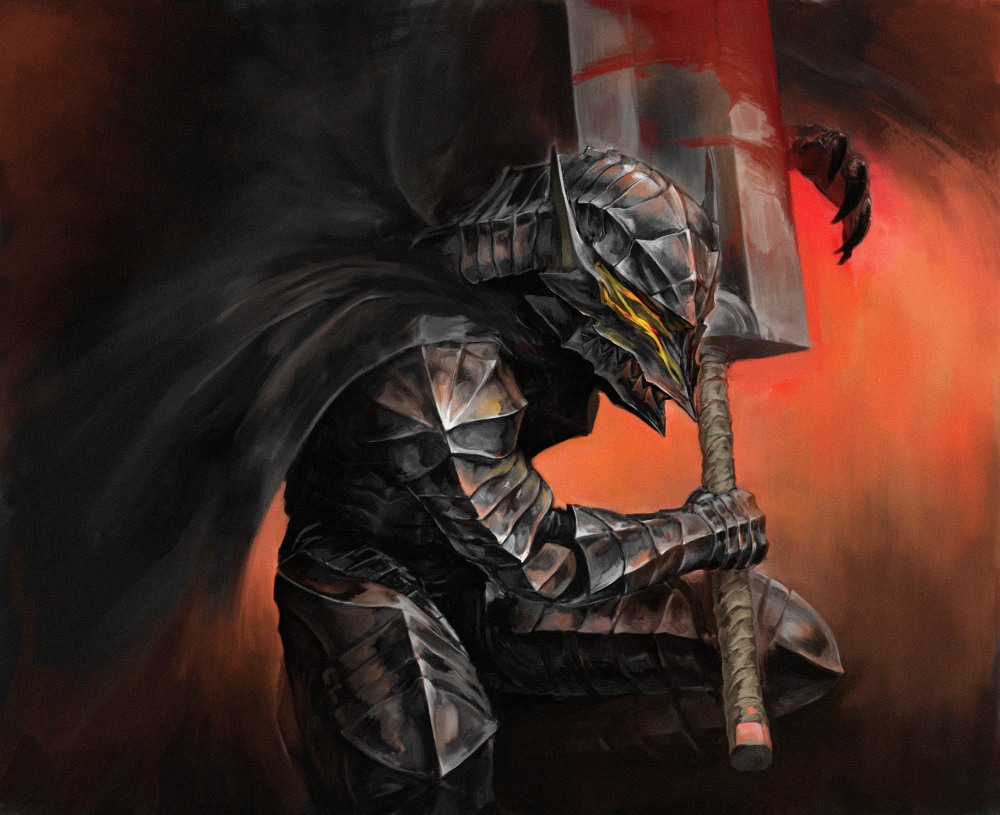

Two Hands are Better Than One
A Guide for Fighters using Two Handed Weapons
Now, I’m sure there are some people who think that being a Fighter is all Feats, Feats, Feats, and using some silly weapon of the same kind over and over again, so they don’t need a guide at all.
In truth, there are many options to pick, and for all they know, they could be wrong. Sure, a Two-handing Fighter is capable of doing more than just swinging his sword, and damage is probably the best thing we do, but in some cases, there is more to a Fighter than well...fighting. Yes, Fighters are known for obtaining more feats than usual; so are some other classes. Yes, Fighters are great Two-hand Wielders, but again, so are some other classes, and what those other classes get for features and options to pick are also different from the Fighter. For those who are confused about what to create, have questions about what is good and not so good to pick, looking for something new and exciting to try out, or even GMs who want to give players a true challenge with a Fighter NPC, this guide is the one for you.
Forward
This guide is built and to be read assuming the following things:
1. The players are using Official Hardcover Pathfinder-only material and rules. 3rd Party or Custom/Miscellaneous Sources are not included or expanded upon in this guide. Pathfinder Society gameplay should also be compatible with this guide, but will not be expanded upon or explained within this guide.
2. The choices presented within this book may vary from group to group that plays Pathfinder via houserules. This guide is constructed without houserules included. The choices are listed as they are worded; for those casual/house games, the rules may not be the same, and your experience with what is good and what is not so good between sessions may vary due to this.
3. Remember, that this is a guide that evaluates options from as open a perspective as physically possible; yes, even my opinions and viewpoints on some feats/abilities may be quite skewed, and I could very well be wrong in my interpretations. This is not a step-by-step fool-proof method to net everything that is described herein, as things hiccup from adventure to adventure between each group of people/players.
4. Choices and concepts in this guide are subject to change from Clarifications and FAQ/Erratas made by the Devs, or for some other change. Should such a change occur and the document has not been updated to accomodate it, please let me know so I can keep the guide up to date.
5. If you have any questions or concerns regarding my individual choices and viewpoints on the matter, and/or additional helpful information for successful/powerful builds you would want put into the guide, feel free to send me a private message on the Paizo Messageboard; I am the user Darksol the Painbringer. I also request that you do not send messages filled with anger or spite against my listings and/or viewpoints; I am (for the most part) civil, and open to suggestions and/or constructive criticism (, not destructive criticism).
Table of Contents
I. Introduction
II. Races
i. Core Races
ii. Featured Races
iii. Uncommon Races
III. Archetypes
IV. Prestige Classes
V. Traits
i. Race Traits
1. Core Races
2. Featured Races
3. Uncommon Races
ii Character Traits
VI. Feats
VII. Magic Items and Equipment
i. Weapon(s)
ii. Armor
iii. Special Materials
iv. Wondrous Items
1. Belt
2. Robes and Regalia
3. Chestgear
4. Glasses and Eyewear
5. Boots and Footwear
6. Gloves and Gauntlets
7. Headgear
8. Headbands
9. Necklaces and Amulets
10. Rings
11. Capes and Cloaks
12. Wristguards and Bracers
13. Slotless, “Equippable”
v. Miscellaneous Equipment
VIII. Strategies and Tactics
IX. Recommended Builds
X. FAQ/Clarification
XI. Credits
A Fighter using a Two-Handed Weapon is quite effective in slaughtering and maiming their opponents. They abandon all defense, and deal devastating blows to those who face them.
Chapter 1: Introduction
This part is self-explanatory. It introduces you to the Two-Hander Fighter. He is a powerful adversary, and a welcome comrade to the party; he can strike quite well, penetrating the defenses of just about any creature imaginable. While he may not (or maybe he is; it all depends on how you make it) be as big a help outside of combat, with their limited skills of choice, they are still good front line combatants, and with enough training (that and the dice rolling in your favor some) can be your best right hand man when things go bad in the heat of battle.
With that said, we shall discuss “What is the point of a Fighter using a Two-Handed Weapon?” The simple answer is this: Damage, Damage, Damage. A Two-Handing Fighter’s primary role is to deal damage, and lots of it (that is, after staying alive to make sure you can deal damage, of course). A more complex answer would be to be a more competent and threatening opponent in the midst of melee combat. Ever get hit by a two-handed weapon in the middle of your turn through provocation? It’s quite painful, isn’t it? That’s the reason why we wield such large weapons.
The Fighter’s Base Stats
Alignment Restrictions: None. We’re just a big dumb fighter with a big dumb weapon swinging at big dumb enemies who are big and dumb. What’s there to align about? Chaotic Stupid, maybe...
Hit Dice: D10. Sure, it’s not the greatest, but it’s a lot better than some characters, who get D6’s or D8’s, and very few characters (such as Barbarians) get D12 Hit Dice. We’re a Front Liner, and rely on more than our hit points to stay alive.
Proficient With: This is where Fighters truly shine. Normally, we have access to all Simple, and Martial Weapons, All Armors, and All Shields. Yes, even Tower Shields. However, we don’t care about big dumb shields, we care about big dumb weapons that can only be used in two big dumb hands. (Seeing a pattern with this whole “Two-handing Fighter” theme?).
Class Skills: This class has some of the weirdest class skills (as well as lack of class skills), but they go as follows: Climb (Str), Craft (Int), Handle Animal (Cha), Intimidate (Cha), Knowledge (Dungeoneering) (Int), Knowledge (Engineering) (Int), Profession (Wis), Ride (Dex), Survival (Wis), and Swim (Str).
Ranks per Level: 2 +/- Intelligence Modifier. This tells us that we’re just a big dumb fighter who swings around a big dumb weapon all day. Even that Barbarian who is more of a typical dummy has more skill than us! What kind of ruling is this? It’s of no matter, not much is useful.
Subject Rating Levels
This part is a very fundamental thing to keep track of when you are viewing each of the categories to consider when you are creating your Two-Handing Fighter in terms of raw optimization. It holds no value in terms of a character’s flavor, or otherwise.
Blue is one of, if not the, best choice(s) to pick from this selection for the purposes of building an optimum character. You want the best results? You should probably go for this.
Green is a very solid choice to pick; it’s not the most optimum thing to consider, but it is still something at least worth looking in to, if not picking when there’s nothing better to select.
Orange is something that isn’t the best to pick. It may have its uses in this place or that encounter, but chances are there are better things to pick from a wider selection to choose from.
Red means it’s a horrible choice to select. You should pick this one last if you have to make a choice, but otherwise avoid this like the plague.
Base Stats Set-up
Of course, people are going to want to know what makes a Fighter tick the most/best; especially the Two-Hander type. It’s fairly straight forward, but it can be complex and require much compromise for some builds. Generally, it will go something like this:
Str: Strength is your most important stat as a Fighter. Bonuses to melee attacks (including Combat Maneuvers), melee damage, carrying capacity (for all that equipment you’ll be carrying), Climb and Swim skills, breaking doors or other objects, and important feat pre-requisites. Keep its priority above all others.
Dex: Dexterity is a good statistic, as this grants you multiple bonuses that are fairly important, such as towards Ranged Attacks (for when you can’t swing your big bad weapon in melee combat), Normal and Touch AC, Reflex Saves, and numerous combat-related skills.
Con: Constitution is great; gives you more hit points per level, and bonuses to Fortitude Saves.
Wis: Wisdom is a fairly important stat, increasing a save you are generally bad at, and giving you modifiers for some skills. If you are going to be good at noticing and spotting things (chances are, you will), it might be good to put points into this stat, if not just for the Will Saves alone.
Int: Intelligence, mostly, is the least important stat. But it does give you skill points per level, and helps out with some of our class skills, though with the limited amount we have, we most likely won’t need that little modifier bonus to the respective skills, since we always gain 1 point/level.
Cha: If there’s ever a dump stat for Fighters, it’s this. It’s good to have for some builds, though, and if you plan to be Mr. Party Leader Guy, you’ll want some points in this for negotiations with other “factions” of people/races.
Again, some builds may need a certain amount of intelligence, or a high(er) charisma, or perhaps the game you are playing is Will-Save-heavy. For the most part, though, this is how a Two-Handing Fighter should optimize his stats. Extra points via leveling should go into Strength.
With the guidelines set, there will be some question as to how one should allocate their points. Understand that some games have varying point buy amounts, or perhaps none at all and go by their own (and for those who don’t use a point buy system, you are on your own for that; you can use the guidelines above for how you want to optimize the stats generated). For simplicity purposes, I will refer to the guideline points allocated for the different levels of fantasy.
Low Fantasy (10 points): Str 16, Dex 13, Con 12, Wis 13 Int 7, Cha 7
Standard Fantasy (15 Points): Str 16, Dex 13, Con 14, Wis 14, Int 7, Cha 7
High Fantasy (20 Points): Str 18, Dex 13, Con 13, Wis 14, Int 7, Cha 7
Epic Fantasy (25 Points): Str 18, Dex 13, Con 14, Wis 14, Int 8, Cha 7
Recommended Possible Changes: If your Intelligence and/or Charisma need to be raised more than the recommended level, lowering Constitution or Dexterity may be fair compromises. You may also lower Wisdom if necessary, though keep in mind this makes you easy to become a drooling buffoon (as if the dump stats don't already simulate that?) or the bad guys' new minion. With High Fantasy stats, you might want to reduce Strength some instead, since having an 18 Strength to start does take a good chunk of your points, and while it’s good to have that base, you may be lacking in other areas that are critical for your build, which an extra +2 to Strength won’t cover. Remember that while Strength is your most important stat, it is also one that if pushed too much with for some builds, could lead to its downfall. In terms of Epic Fantasy, you can afford to have an 18 Strength without much compromise; generally, though, many players (and groups) don’t use this many points, so this opportunity would be rare to come by, if at all.
Also take note that these stats can be subject to change depending upon which race you pick. For example, selecting the Elf race nets me a base +2 to Intelligence and Dexterity (Hurray!), but a -2 to Constitution. This means I can choose to lower my Dexterity down from the +2 I otherwise applied to help out another dump stat, apply to another secondary statistic (such as Wisdom or Intelligence), or if I can manage it, increase my Strength score. Speaking of selecting races...
No matter how they may look or where they hail from, a Fighter using a Two-Handed Weapon is a dangerous foe to face. They come in all kinds and ethnicities, and regardless of such, it would be wise to take caution when dealing with them.
Chapter 2: Choose Your Race
Before we get into the whole “Racist!” semantics that can be had with deciding between what kind of race your character wants to be, keep in mind that being a certain race has its benefits, as well as its drawbacks regarding certain builds for a Two-handing Fighter. Some are better suited to the task than others, and others may be better suited for others builds than many other types, but the Races are what they are, so to speak.
Section 1: The Core Races
With what is simple and basic, there is a lot more to the Core Races than what there used to be. This section covers what is important in the basic, yet grand scheme of things. For other trait options regarding these races, see the Racial Traits section under the Core Races.
Dwarves: These little guys are a pretty decent choice to take as a fighter using two-handed weapons. +2 to your Constitution, +2 to your Wisdom, and -2 to your Charisma. Not a bad trade-off. Their Favored Class special is alright, not the greatest, but their slow and stocky movement can be a pain if you take an archetype which opens Armor Training, allowing many more combat options and removing the movement penalties originally incurred by them. This penalty to speed is not really much of an issue should you not receive such benefits, since Medium/Heavy armor don’t affect your movement speed any different. Though some of the Combat Feats they receive can be quite nice to obtain, and is what nets them the Green.
Elves: This flimsy, stick-people-like race isn’t exactly a good choice to pick as a fighter type, but not a horrible one either. You get +2 to Dexterity, and +2 to your Intelligence, but the kicker is a -2 to your Constitution, something that generally a front liner like the Fighter tends to dislike severely. The Favored Class option is also not great. However, its defensive perks, such as magical sleep immunity and its saving throw bonuses, make it an acceptable choice. That, and having access to an Exotic Weapon like the Elven Curved Blade for no feat cost is a decent perk as well, for that off-build using Dexterity and Intelligence instead of Strength.
Gnomes: Generally a bad choice altogether. The -2 to Strength essentially kills what could make this race any good. No Favored Class option at all (like it would make a difference). Being small helps defensively, but it also kills any speed bonuses you might have had, which is very important for those who try to run from you or slow you down. The other core racial traits are poor, making this choice a real downer as a whole.
Half-Elves: This half-breed is a good choice for a Two-handing Fighter. Getting a +2 to any stat choice makes getting that 18 or 20 Strength a breeze, and with no drawback to boot. The low-light is a nice feature to help see in dark caverns or dungeons, and getting a Skill Focus Bonus Feat is a good pick as well, since it helps out an area you are generally weaker in. The Favored Class Option is alright, but the Racial Trait this race comes with allows you to select two different classes, and is quite a boost, should your build involve multi-classing. Sleep immunities help in survivability. There are a couple draw backs, but nothing serious or non-sensible. This race gets a high score in my book, and a very solid choice to pick for a tank-like build.
Half-Orcs: Yet another solid choice, though unique in its own right. Like Half-Elves, they get +2 to one ability score without penalty, so that 18 or 20 Strength you want to reach is good to go with this race. The Favored Class option isn’t all that worthwhile to have. The Dark Vision is huge for a class that doesn’t get much in this regard, so this is a nice bonus for those fights where being able to see gets severely diminished. The other bonuses aren’t so great, but can help out with specific builds. While not as good as the Half-Elf, it is still a solid choice due to its unique benefits.
Halflings: Alike with the Gnome, the Halfling is not a good choice to pick for this class. While better than the Gnomes in their own way defensively, it still subtracts from the main concept of being a Two-Handed Fighter, which is Swing Swing Swing, Damage Damage Damage, and Kill Kill Kill. Something this race won’t positively help with. Ironically enough, the Favored Class option is very good.
Humans: Probably the best overall choice of the Core Races. Like the Half-Orcs and Half-Elves, they get +2 to one stat without penalty. 18-20 Strength is always a plus for this class, regardless of archetype. They get a bonus feat to apply to anything they want? A lot better than the Half-Elf for the purposes of a Fighter. They also get an additional skill point for each level? That’s even better, considering we have garbage for skill points per level anyway! Plus our Favored Class bonus can be +1 CMD to whichever 2 combat maneuvers you designate, and can be alternated between each level, this is huge in general, since this gives defensive builds some viability. We even can learn any language we want (not like it matters, but)...The choice is clear; the Human Race is generally the best Core Race to pick for being a Fighter.
The strength of a race has its variants, and while in the hands of a sentient humanoid, it can be quite powerful, but in the hands of a complete monster, it is utter madness...
Section 2: The Featured Races
This section covers each of the featured races in the Advanced Race Guide. For those looking for alternate racial traits to choose from, please look toward the Racial Traits section under the Featured Races.
Aasimars: This race of angelic people is fairly powerful, although their power doesn’t affect Fighters that much. No specific Favored Class bonus with this one, which hurts it some. It does give +2 Wisdom and +2 Charisma, so good for those Will Saves and Charisma-based builds (and also is nice to help out that dump stat some). Being classified as a Native Outsider can help negate some abilities thrown at you, but it can also bite you in the rear with some other abilities or spells. Darkvision is a nice plus. +2 to Diplomacy and Perception is nice for both in and out of combat situations. The Daylight spell you can do without, though does have its uses and situations. The biggest factor with this race is its insane resistances; 5 resistance to 3 different (and semi-common) elements is a huge benefit to have defensively, as not many things (if at all) along those lines are received from the Fighter Class, meaning it would synergize well, and is a factor why it remains partly green.
Catfolk: This race of...well...cats...is not an on-par choice to make, but it isn’t exactly game-breaking either. These felines have a few good notes that make them Fighter-level etiquette. Once again, no Favored Class with this one, but its benefits are one-of-a-kind. The -2 Wisdom is a major crux, but for those off-builds who can stand it and gain +2 Dexterity and +2 Charisma, it may be worth the penalty to Will Saves. A +2 bonus to Perception, Stealth, and Survival checks helps you out for being a little skill monkey. Low-light Vision doesn’t hurt either. Gaining an extra 10 foot racial bonus to speed during withdraw, charge, and full run actions is a huge tactical advantage on the battlefield, one that a Two-handing Fighter might want to utilize. In addition, the ability to roll twice and take the better result on a Reflex Save 1/day is a great thing to have to try and escape that Life or Death Fireball.
Dhampirs: This half-vampire offspring can prove to be a nice tank-like creature wielding a two-hander, should the party have an Evil/Neutral Cleric with Negative Energy Channeling, and plenty of Undead to use it on; it’s otherwise quite sub-par. Having both Low-Light and Darkvision is a unique combination to this race, so that’s a plus. The +2 Dexterity and +2 Charisma are prevalent in this race as well, though they suffer a -2 Constitution penalty, which is even worse than the Catfolk in terms of severity. The defensive benefits, such as +2 Saves V.S. Disease and Mind-Affecting effects, the ability to absorb Negative Energy and be damaged by Positive Energy, and ignore Level Drain adverse effects (for the most part) makes this race a force to be reckoned with. Unfortunately, Dhampir have their own weaknesses, of which can go against their bonuses on an equal level, and their Favored Class option isn’t exactly great, either.
Drow: If there was ever a race that combine stats from both the Elf and the Dhampir, this is it. +2 Dexterity and Charisma, and the same -2 Constitution. Super Darkvision, Sleep Immunities, +2 Saves V.S. Enchantment, plus the +2 Perception Checks and an extended weapon proficiency list. However, it does add a scaling Spell Resistance, some Spell-Like Abilities 1/day (which are some good ones at that), and the ability to never poison yourself, should you decide to use poisons. The Favored Class is also a pretty good one if you’re interested in performing Combat Maneuvers. The Light penalty and Constitution penalty shorts this from being a Blue, but is also Green due to its Spells and Spell Resistance.
Fetchlings: Another race with yet another +2 Dexterity and Charisma, with another -2 to Wisdom. (What’s with this redundancy?) It’s an odd outsider-type, so watch out for those weird spells, and they have Darkvision as well as Low-light. No Favored Class, so if you wanted anything special, I’m sorry to disappoint you. +2 Knowledge (Planes) and Stealth checks (which won’t matter unless you either get tons of skill ranks, or don’t wear any armor). The resistances are a nice defensive touch, and the Shadow Blending can help out immensely, though it is still quite situational. The rest you can do without, or is not worth mentioning. Did I also say that this race is as redundant as the past three races we just evaluated?
Goblins: Finally, something different, although unfortunately it isn’t much good. It’s a +4 Dexterity, which is fairly nice, but at the cost of -2 Strength and Charisma? A stat proposal like that is crazy to take, and for what you get in addition isn’t worthwhile either, especially with no Favored Class option. Just toss this insane little green creature back in the garbage can of a cave you found it in.
Hobgoblins: These cousins of the Goblins are much more fit to be a Fighter, as they get +2 to each of the Fighter’s Secondary Stats; that’s (almost) just as good as getting a +2 Strength, so we’re off to a nice start here. The Favored Class option is pretty good, giving a +1/2 to confirming criticals with a weapon of choice, though it is a shame it doesn’t stack with Critical Focus, meaning if you want that Improved Critical effect, you better get a Keen weapon. Having Darkvision and +4 Stealth bonuses helps with the whole “Spec Ops” missions not being blown due to your noisy heavy armor, but you are treated as Goblinoid for the purpose of effects, so be careful with those Bane weapons. All in all, this is one of the exalted few fighter choices out of the Featured Races.
Ifrits: (Great, now we’re back to this old schtick again.) Another +2 Dexterity and Charisma/-2 Wisdom Race. (Are all of these races really like this?) Another outsider sub-type, so be careful with some spells. More Darkvision. Fire Resistance is a nice boost, but the fact that its other special ability only ties with the Sorcerer Class pretty much says “Ifrits are Sorcerers, not any other class,” meaning this race is a waste of time to fiddle around with.
Kobold: You’d have to be either absolutely silly, or completely ridiculous to pick this race for a Fighter Class. +2 Dexterity is decent, but at -4 Strength and -2 Constitution? Nothing in the entire system, even customized, can save this race from being a general failure at fighting, not even its decent enough Favored Class option. No build of any type would succeed here. Let’s just forget we even went over this, and move on with the next, shall we?
Orcs: If you want raw damage, and don’t care about anything else, this is the way to go. With a +4 Strength, you can reach a 22 Strength, something which no other player race can do. However, you suffer in the mental department, with a -2 to each mental statistic, so if you wanna lose a precious skill point, a will save bonus, and the ability to be a sensible, likable being, to be the biggest, baddest Strength(/steroid) junkie there ever was, look no further than the Orc. Ferocity also helps with those Life and Death situations, and the Favored Class synergizes quite well with it.
Oread: Ironically enough, being strong as stone in this case is literally a good thing. +2 Strength is a great bonus, and +2 Wisdom for those skills that use it, and those Will Saves, is another good plus. The -2 Charisma can be a kick in the nuts if you wanted to use those stats for a Charisma build, but as a dump stat, wouldn’t really hurt you much anyway, so it’s a “welcome” penalty. The Acid Resistance and Darkvision are also nice to have, but the specific class racial traits and the slow speed only net this a green due to its other benefits.
Ratfolk: The Ratfolk are generally a physically weaker race, though this does not completely eliminate them from the “Who wants to be a Fighter” game. Sure, they have -2 Strength, which is a severe setback. But they also have a +2 Dexterity and +2 Intelligence, which can help for those Combat Expertise builds with a Two-handed weapon. The Favored Class option isn’t horrible, but not exactly great either. The standard racial traits otherwise don’t make much of an impact on their choice, which again hurts its chances of being any good.
Sylph: The Sylph is somewhat better than the Ratfolk in general. They have the same +2 Dexterity and +2 Intelligence, but they have -2 Constitution instead, meaning the penalties and bonuses more-or-less counteract each other. In addition, having Electricity Resistance 5, Darkvision, and Feather Fall 1/day, this makes them better than Ratfolk by a long shot. However, they come with their own, limited spectrum of base racial traits, and lacking a decent Favored Class option means this race is also just average.
Tengus: This creature has some edges that make it better as a martial character than one would think. Its stat bonuses are +2 Dexterity and +2 Wisdom, but -2 Constitution, meaning they will be less fortuitous than normal. However, having training with all bladed weapons, including Exotic Blade weapons, opens up new (and promising) doors for them. Their favored class is also pretty good to consider taking, since it affects 2 of the most common (and generally used) combat maneuvers.
Tieflings: The Tiefling is a very solid choice to pick for a melee character, even a two-handed Fighter. Having +2 Dexterity and +2 Intelligence is good for Combat Expertise builds, and having a -2 Charisma makes perfect usage of the dump stat. However, they are outsiders, so some spells may apply that otherwise wouldn’t, and they don’t have a Favored Class Option. Darkness 1/day, Darkvision, +2 to Bluff and Perception, and Resistance 5 to 3 of the most common elements in the game. The only downside to this is the Fiendish Sorcery, but all in all, the Tiefling is ironically a decent choice if done properly.
Undines: This race just speaks “No” to fighters. -2 Strength, for a +2 Dexterity and Wisdom. Pretty typical, though its other racial bonuses are nigh-useless, if not already useless, to a Fighter class. The only boost is Cold Resist 5, and even that is disposable when there are other classes which offer that, and more, with no such negative penalty.

Some two-handing fighters are one of a kind; peerless and without equal, there are none
that can stand to their exalted measure, both inside and outside the battlefield.
Section 3: The Uncommon Races
This section covers the Uncommon Races from the Advanced Race Guide using the base racial bonuses they receive. Any alternate racial traits you can change/switch out with is discussed in the Racial Traits section under the Uncommon Races.
Changelings: These weirdos are a very sub-par race to pick for being a Fighter. Why? +2 to Charisma and Wisdom, not very important stats, at the cost of a secondary, more important stat, which is -2 Constitution. They have natural weapons and no Favored Class bonus, which don’t help us much, a +1 racial bonus to melee damage and natural armor, which is nice, but it doesn’t save this race from being that great of a fighter.
Duergars: A super-powered version of the Dwarf, this race is definitely one of the best choices to pick for a Fighter. A +2 to Constitution and Wisdom is welcome, and a -4 to the dump stat that is Charisma can be an “acceptable” penalty. With a decent Favored Class option, Super Darkvision, +2 Saves versus Spells/Spell-like Abilities, immunities to Paralyzation, Phantasms, and Poisons, and +4 CMD v.s. Bull Rush or Trip Maneuvers, qualify for Dwarven Combat Feats, at the cost of Light penalties? A little broken, since it is more-or-less the same as a predecessor except better, but also something that is worthwhile to obtain as a Two-handing Fighter.
Gillmen: This race is more of an aquatic race, and while some campaigns and such have aquatic areas for combat and the like to explore, generally this is something that can cause harm. Their Favored Class option is the same as the humans, which is a huge benefit in its favor, but its other racial benefits are usually water only, and it more or less says you need to be in water most of the time or you die. Chances are, when you’re out adventuring you won’t be near water all the time, so unless you wanna make a bunch of these characters to switch out when one dies due to water starvation, I wouldn’t recommend this character in the event of preventing a migraine.
Gripplis: Grippli are like frog people, and while they may be “cute and cuddly” on the outside, that has an impact on what they do for us as a Fighter, and in this case, having such qualities is a bad influence. The +2 to Dexterity and Wisdom are welcome bonuses, but the -2 to Strength is an eyesore for a penalty to take for such a benefit. With no Favored Class option, and hardly useful miscellaneous traits, this race is generally one of the worse ones to pick.
Kitsunes: Alike with the Grippli, this race also appears “cute and cuddly” in its own right, but again, fighters are not meant for such things. The +2 to Dexterity and Charisma isn’t exactly more helpful than the Gripplis’ Wisdom bonus, and the -2 to Strength penalty still applies. The ability to change into a human and some spell-like abilities make this race decent for those of the caster type, but Fighters don’t have spells to use, meaning those bonuses are just wasted.
Merfolk: In this case, I label Merfolk pink not because it’s the worst, but because it’s too situational for its usage as a whole. Ironically, this race would make a great defensive Two-handing Fighter, but being limited to mostly water says this race is very limited in where he can and can’t go, which is a crux that is not welcome for adventuring.
Nagaji: This race is also one of the best races to pick for a Two-handing Fighter. A +2 to Strength is always welcome, and for those builds with Charisma, the +2 to that is also welcome; however, the cost is at a -2 Intelligence, or in other words, a skill point per level. But with balancing some stats, this penalty can be overlooked. Gaining Low-light Vision, +1 Natural Armor bonus, +2 saves versus two very important saving throws, +2 to Perception checks, and a good Favored Class option, the Nagaji is another very good defensive Two-handing Fighter race to select.
Samsarans: This race has its benefits, like +2 to 2 skills, and they are class skills, which helps out in the skill department immensely. However, with a +2 Intelligence and Charisma at the cost of -2 Constitution, this doesn’t help out much unless you are going that oddball Combat Expertise or Intimidation build.
Strixs: With the ability to fly, this race can say goodbye to all those blasted ranged weapons they normally have to carry, freeing up inventory space and money for more important things, like their big dumb sword, or awkward bulky armor. With a welcome +2 Dexterity at the cost of -2 Charisma, this bonus, while not ideal, is still something nice to have. Add in Darkvision and Low-light, followed by +2 Saves v.s. Illusions and +2 Perception and Stealth checks during low light or dark areas, plus the additional +1 to hit Humans (and the Favored Class option which upgrades this even further), and you have a recipe for one of the most self-dependent races to pick for a Two-handing Fighter.
Sulis: Being descended from mortal men, the Suli have quite a few bonuses to help out the Fighter. They have a +2 Strength and +2 Charisma; while not ideal, is still welcome, and with a -2 Intelligence, you can alter stats to accommodate such a loss in skill points. Being outsiders means they can be affected by some other spells or abilities, so watch out for those. With Low-light Vision and a +2 to Diplomacy and Sense Motive, the Sulis would make decent party leaders in terms of relations with others. Unfortunately, they don’t have a Favored Class Option; pity. The best kicker though, is they get Resist Energy 5 to the 4 most common elements, even better than that of the Aasimars or Tieflings, and would synergize well with just about any defensive abilities Fighters get. You can also channel one of those 4 energy types as a swift action to deal an extra 1D6 damage that stacks with other sources; a great boon for the entire purpose of a Two-handing Fighter, and as a whole, this race is the best to pick in terms of offense, as well as the best “Party Leader” to have.
Svirfneblins: Like the Merfolk, this too is labeled pink for the same reasons; they aren’t exactly compatible with many adventures (since they don’t even speak Common without some sort of intelligence boost, and are mostly underground creatures). Generally, looking at its Racial Modifiers, a -2 to Strength and -4 Charisma is a major put off, and getting +2 to Dexterity and Wisdom doesn’t make matters better. However, if one puts these differences aside, and looks at the other features, such as a +2 Dodge Bonus to AC, +1 Size bonus to AC, +2 to all Saves, with Super Darkvision and Super Low-light Vision, +2 to Stealth (+4 for underground areas), Perception, and Craft (Alchemy) checks, interesting Spell-like Abilities, and a crazy amount of Spell Resistance, this race is a lot more promising than the surface seems to indicate, and would probably make the best defensive Two-handing Fighter due to its unique, well-synergizing defenses.
Vanaras: These monkey people are an okay race to pick, though there are definitely others to choose from. A +2 to Dexterity and Wisdom at the cost of -2 Charisma is usually a welcome onset, though that’s about as good as it gets. The Climb Speed boost is a nice bonus, the Favored Class option is decent, along with getting Low-light and +2 to Acrobatics and Stealth Checks helps out for those Spec Ops missions and those in-combat capabilities (should you have Armor Training). Outside that, there isn’t much else this race offers, so unless you’re trying to be a Dodge-y Man of Dodge-iness, or climbing Mount Everest for a campaign setting, there’s other similar (yet better) races to choose from.
Vishkanyas: Oddly enough, this race is more suited to a Dexterity-build fighter, and even then you might as well probably play a rogue for the benefits it gives. With a bonus to Poison saves that scales as you level, as well as being able to coat your weapon with a debilitating poison can help out immensely in a fight where you are overwhelmed by a monster, but it otherwise has drawbacks. With a +2 Dexterity and Charisma, at the cost of -2 Wisdom, those defenses you get from their other features more-or-less counteract against this penalty, meaning this is just yet another sub-par race to select.
Wayangs: Other than sounding like a male reproductive organ, this race sucks one too. A +2 Dexterity and +2 Intelligence bonus is okay for those Combat Expertise builds, but that -2 to Wisdom is a real kicker in the you-know-what. Their other racial features are situational at best, and they are generally something a person should avoid unless they are ready to make a sacrifice. Additionally, there are other, more suitable races to accomplish this end.
A Fighter normally relies on what they have been taught in their career to stay alive.
A Fighter using a two-handed weapon gambles on their destructive force to kill
their enemies, before the enemy kills them.
Chapter 3: Archetypes
This section will cover the class features and important skills that normally come with being a Fighter, their importance, and any additional information that may apply to them. I will loosely explain archetypes included from other books, including race-specific ones from the Advanced Race Guide.
Section 1: The Base Class
We will now go over what is all originally packed within the Fighter Class, as well as any important/class skills that come with it.
Part I: The Class Features
Bonus Feats: If you’ve ever played a class outside the Fighter that doesn’t get Bonus Feats, you know how precious a feat is. If you’ve ever played any other class that gets Bonus Feats, you know that you really enjoyed those bonus feats, while they are limited in overall selection and incrementation. The Bonus Feats a Fighter gets combine the advantages of both worlds, and are the best of any Bonus Feat type from any class due to the sheer number you get (ensuring you get a feat at least every level), as well as its hardly limited restriction. Yes, it applies only to Combat Feats, meaning you may need to be careful between which feats you pick regarding builds, but outside that, no other class compares. Another great feature about these Bonus Feats is that you can change one of them out at specific intervals (every 4 levels), meaning that 2nd level Cleave feat you don’t use anymore can be selected for that awesome 12th level Greater Weapon Specialization feat. In addition, it is also your single most important class feature.
Bravery: Hate running like a little girl from the Big Bad Evil Guy of Doom and Sadness? Then this ability is the one for you. This is an okay feature to have normally. It is a pain when you have to deal with penalties from fear effects, like shaken, or are apparently afraid of things like a little girl and have to run away, like being frightened or panicked. Fortunately, this class feature helps you out in this regard, and scales as you level, so you aren’t having difficulty beating people in the face with your big dumb weapon, or running away from them, meaning you’re not cracking skulls. While it applies only to Fear effects, this both helps and hurts as a class feature, meaning it is situational at best, and thusly is something you might not like too much about being a Fighter.
Armor Training: This is a very neat class feature, and one that Fighters will definitely appreciate when they reach the appropriate levels. For those heavier armors, relieving some of that atrocious Armor Check Penalty and increasing your ability to dodge attacks via increasing the Maximum Dexterity Bonus makes getting a Dexterity Score above 12 worthwhile to have. Another great feature about this is that with each “rank” of Armor Training you obtain, it becomes easier to move in that bulky armor, meaning you no longer suffer that blasted 20 foot movement if you can move up to 30 feet normally, opening more combat options and strategies than any other heavy armor wearer.
Weapon Training: While this feature helps you out with your main goal as a Two-handing Fighter, the reason this isn’t the best feature is because normally this comes with certain annoying restrictions. What this feature does is allows you to pick a group of weapons, such as Heavy Blades or Axes and the like, and when you select that group of weapons, you get a +1 to hit and damage rolls. The nicest thing about this is that this doesn’t just limit you to one group of weapons; at the next “rank” of Weapon Training, you select another group, and from that point, both groups you currently selected gain an additional +1 to hit and damage rolls. Meaning if I choose Heavy Blades at 5th level, and select Polearms at 9th level, my Heavy Bladed weapons get +2 to hit and damage, while my Polearms get the standard +1 to hit and damage; the bonuses are cumulative and retroactive. The only issue with this is that it limits you to using specific weapons, meaning if you are disarmed and/or out of selected weapons to utilize, this benefit would no longer function.
Armor Mastery: This is one part of a two-part “capstone” (that is, ultimate ability) of the Fighter. Generally, a Fighter’s only line of defense is Armor Class, or AC. With this capstone ability, you can obtain a line of defense that synergizes well with AC; Damage Reduction of 5 points against any physical attack while wearing any armor or shield. (But chances are, you won’t be wearing a shield, using a Two-hander and all.)
Weapon Mastery: The other half of the Fighter’s “capstone” is significantly more powerful, and is better for us considering our role. Unfortunately, unlike Weapon Training, this only applies to a specific single weapon. But with what we get, it makes most other weapons obsolete; we can now automatically confirm criticals with that weapon, meaning no confirmation rolls are required when you roll a critical threat (which is huge for those 18-20 Improved Critical/Keen builds). In addition, we are immune to being disarmed from that weapon, and its critical multiplier increases by 1 (meaning if you have a X3 or X4 weapon, that now goes to X4 and X5, respectively).
Part 2: The Class Skills
Acrobatics: When somebody looks to this, they probably first think “I’m never gonna use this, it has Armor Check Penalty, and we wear heavy armor, so it’s bad to have.” Wrong. If you’re an Archetype with Armor Training, this is actually a very nice feature to have; some Archetypes even use this skill to help in their abilities, synergizing well with their class features, meaning it’s going to be an important skill for those. With both its navigation uses and its combat uses, it wouldn’t be bad to put points into this, assuming you have the proper Armor Training to do so.
Climb: As a low level skill, this wouldn’t be a bad place to dip any skills into, in the event that magic items won’t be able to cover you, or that the only method to not die from reaching point A to point B is to use this skill. That, and the class skill bonuses aren’t anything to scoff at either.
Craft: Chances are, you won’t have skill points for this. Even if you do, you might have stat penalties or other sorts of penalties, and unless you plan on creating Magic Items through your regular feats (because you can’t get Item Creation feats with your Fighter Bonus feats), you can ditch this skill, since somebody more qualified will most likely have it.
Diplomacy: If you have the skill points, and/or plan on being Mr. Party Leader Guy, you might want to put points into this. If you don’t have the points, or don’t want to be Mr. Party Leader Guy, you can probably dish this one out.
Handle Animal: Again, you probably don’t have the skill points to bother with this, and its uses are hardly worthwhile to have, unless you have a mount or animal companion of some sort; in which case, spend away.
Intimidate: This is, again, a situational class feature. Normally, you would probably not want to spend points into this since there are other, more important skills. However, if you are going a Charisma build, or a Front Line tank, which focuses heavily on having a high Intimidation score and some feats, this is going to be your bread winner.
Knowledge (Dungeoneering/Engineering): I’m clumping these two in the same area, since these are almost identical it’s ridiculous, in both their common usage, usage in general, and the odds that you will have points to spend on something like this, which amounts to Jack Squat. (He’s quite the interesting character, let me tell you...)
Perception: Do you like seeing? Do you hate being blind as a bat to the environment around you? If you answered yes to these questions, Perception is a very important skill to you, and you should probably put points in it. If you answered no, have fun playing “Pin the Tail on the Donkey” or “Whack the Pinata,” except chances are you’re the Donkey/Pinata in those games.
Profession: Same thing as above. Hardly any usage, common applicability, or smart spending of skill points. Jack Squat also has these odds.
Ride: While once again, situational for those mounted characters, it is actually quite essential for them for some key feats and abilities, meaning if you have to spend it, spend it, and if you don’t, then don’t.
Stealth: If you’re going to be wearing heavy, bulky armor, you’re going to be making a lot of noise with the crunching of the sabatons and the grinding of the metal plates moving across your body, adjusting to your every limb, meaning if you want to try and stay quiet, you’re not going to be doing that too well. For those Spec Ops missions, you’ll probably want to spend points into this so that you aren’t fudging up the party’s plan. For those other everyday “Kill-’Em-All” missions, you can probably do without spending points on this.
Survival: This is a “Meh” skill to have. It’s nice if you absolutely need somebody to track, and/or handle difficult environment conditions, as well as some other situations, especially if you are a lone wolf. But like situations, they are just that: Situations, which are situational. And also, if you’re with a group, there will most likely be a party member who is better at this line of work than you are, and by a long shot. Again, if you got the extra skill points, this will be a nice dump. If you don’t have the extra skill points, chances are somebody else will have this covered, meaning your points will be better spent elsewhere.
Swim: Alike with Climb, this is a great low level skill to have. This makes something you can easily dip into, getting a base bonus, a class skill bonus, etc. and covers you for either being unprepared with magic items, or having to go from point A to point B through means like this.
“Never have I seen such a man in all the land wield a large blade with the skill and finnesse as him. It is my dream to aspire and surpass a man such as he; a man who helped forge me into the battle-hardened warrior I am now.” --Zelgius
Section 2: The Standard Archetypes
This section loosely covers the regular archetypes from the Advanced Player’s Guide and Ultimate Combat books, respectively, that properly apply to the Two-handing Fighter.
Part 1: The Advanced Player’s Guide
Mobile Fighter: My personal favorite. Instead of Saves V.S. Fear Effects, you get Saves V.S. Paralyzation, Slow, and Entanglement effects, something much more debilitating and threatening than Fear effects. The “Weapon Training” now only works when you move 5 feet or more in a given round (but now works with all weapons you wield), and scales the same, while still maintaining two ranks of Armor Training; eventually obtaining the ability to gain 40 movement speed (like a Barbarian), taking 10’s (and 20’s X/day) on Acrobatic Checks, and having the ability to turn a Full Attack Option into a Standard Action as a Capstone (there is a lesser version of this at level 11), which also applies to Whirlwind Attack, is also nice. While this does not directly help in dealing damage, this mainly helps in other defensive areas, as well as tactics, something that is equally important to note for our primary role, which dealing damage and tactics can easily go hand in hand with; that is what nets this the Blue. (That, and you can’t exactly crack skulls open when you’re dead or can’t move...)
Polearm Master: Want to use a big nasty Reach weapon while still having access to the benefits of being adjacent in melee combat? Look no further than the Polearm Master. While it sacrifices Armor Training and Bravery, it grants bonuses to Readied Attacks and Attacks of Opportunity, as well as being able to shift between “Reach Mode” and “Adjacent Mode,” as an Immediate Action. While you get penalties for using it in Adjacent Mode, these penalties diminish as you level, to the point where it becomes non-existent. The Weapon Training and Weapon Mastery effects only apply to Polearm and Spear weapons, and its other features are great defense mechanisms against creatures or characters who don’t have reach. Overall, a great choice for the Reach builds.
Roughrider: If you’re going to be doing mounted combat, or want to play a mounted character like a Cavalier, but like the benefits of the Fighter using a two-handed weapon, chances are this archetype is the one for you. There are many features that allow the character to still move and have a Full Attack Option, similar to that of the Mobile Fighter; the extra kicker is the Mount being able to attack and deal damage, as well as having its own “armor” training. In addition, the Roughrider doesn’t even have to be on the mount to gain its benefits, it can also be adjacent. This is a pretty good choice if you want to be one of those people who rides in on warhorses and the like, while still getting that sweet, sweet Fighter feature.
Two-Handed Fighter: The name says it all. An archetype specifically dedicated to the use of Two-Handed Weapons, the entire purpose of this guide. This is generally going to be the best in terms of what a Two-handing Fighter performs as a role, which is Damage, Damage, and More Damage, and it doesn’t disappoint either; the Bravery replacement isn’t exactly ideal, though is nice for those Combat Maneuver builds, but the other benefits, such as the Overhand Chop (double strength on single attack actions and charge attacks), Backswing (double strength on all other attacks besides the first in a full attack option), Greater Power Attack (double the damage bonus on Power Attack hits) more than make up for it. Even so, Combat Maneuvers can be just as nasty as Damage itself due to its debilitating capabilities. While this doesn’t help out with some other builds, such as Reach Builds and the such, as much as other archetypes, this is generally what you’re going to be going after if what you all want is Damage, Damage, and More Damage, which is exactly what this provides.
Weapon Master: As it says, you are the master of a single weapon. With any other weapon, you are pretty much garbage. Some features are pretty nice and help against those debilitating effects, such as Disarm (which is the real kicker for this class, since when they lose their chosen weapon, they’re not much good). Others aren’t as great, since they only apply to others who wield the same weapon as you. If you’re going to be using a very common weapon, such as perhaps a Longsword (which isn’t covered here) or a Greatsword (which is covered here, but again, can vary), this can definitely be a decent archetype to look into. If you’re going to be wielding that crazy Exotic Weapon that nobody in all of Golarion has ever heard of, this archetype is going to be pretty bad for you to take, meaning you’ll probably want to use something else.
Part 2: Ultimate Combat
Armor Master: Probably the worst archetype to take. Yes, some parts involve strict armor, but other important features involve using a shield, which is something you can’t do with a Two-handed Weapon, unless you have some sort of third arm or something; if that is the case, by all means go ahead, but chances are, you don’t have that third arm, meaning this Archetype is about as bad as it gets.
Cad: This snake-in-the-grass has a greatly-changed spectrum compared to a standard Fighter type. Excelling at unorthodox maneuvers and improvisation, this archetype doesn’t disappoint in that you can debilitate the living hell out of a target, and is a good choice for Combat Maneuver selections. Unfortunately, making a Combat Maneuver build with this archetype will usually not implement two-handed weapons, meaning it’s either not applicable, and if it is, will be quite sub-par compared to other archetypes.
Gladiator: That’s right, even the Colosseum has a place in this game. Unfortunately, that place is also quite subjective. This archetype is great for those campaigns that involve arena-based matches, and with no significant penalties to apply with this archetype other than its limited usage, it would otherwise net a pure Green.
Tactician: This archetype is an interesting one, and definitely something to consider if you plan to be a Mr. Party Leader Guy due to the increased Skill Points per level and expanded Class Skills. Sure, it’s at the cost of a bonus 1st level Feat, but you still retain all your other bonus feats, which are also expanded upon, opening even more doors to choose from. With Bravery increasing Initiative instead of Fear Saves, and some class features using stats outside Strength, this is definitely an archetype to take for those Intelligence/Charisma-based builds.
Thunderstriker: Looks like we found a good archetype for you Two-Handed Two-Weapon Fighter Tanks. For those wanting some variety and/or defense to your character since he seems a little squishy, even under that plate armor, this is the way to go; you use a Buckler and a Two-Handed Weapon to fight as if using Two Weapons to fight with. While you don’t get to do both at the same time (that is, use both as weapons and use the Buckler for AC benefits) for quite a few levels, it’s still nice to have that option to switch, and this Archetype makes it easier to do so.
Unarmed Fighter: At first glance, this may seem like an archetype not meant for this build type, but using the right weapon, this archetype may not be a bad idea. Getting save bonuses versus fatigue, exhaust, and stagger effects is a pretty nice boost up from Bravery, though having to extensively use combat maneuvers that have conflicting requirements for some of their features demonstrates that going this route has MAD written all over it, meaning unless you want to sacrifice Strength, don’t bother with it.
Unbreakable: This archetype had much promise for those who always say that “1 Spell is all it takes for the Fighter to be useless,” but unfortunately it was done poorly. The class features at later levels override the ones obtained at previous levels, and the ones that do stick are situational and barely helpful at best. If it was re-written, it would be a good archetype to take due to its immunities and special defense mechanisms. But since those defense mechanisms trample all over each other, it becomes a mess, and one that the Fighter Class doesn’t need to deal with.
Part 3: The Racial Archetypes
Foehammer (Dwarf): This archetype is alright. It’s decent for those circumstantial builds, but otherwise not so good. There are some good features here and there, but overall it seems...’lackluster’ to me.
Dirty Fighter (Orc): An archetype that is great for a Dirty Tricks build without compromising much. With such huge bonuses to Dirty Tricks, this would make for a great debilitating fighter, and allows him to mix and match Dirty Tricks with regular attacks.
Airborne Ambusher (Strix): Of the overall Racial Archetypes, this is the best of them. Why? Utility and flexibility. Who needs a bow when you can fly to the enemy?
Some Two-handing fighters go well beyond their standard boundaries. They ascend to a
status that no other kind of combatant could hope to match.
Chapter 4: The Prestige Classes
This section will cover the general consensus of Prestige Classes within the official hardcover Pathfinder books that properly apply to a Two-handing Fighter. While personally, a Fighter is best to stay pure with their Archetype/Core choice, some builds can function quite well with putting levels in a Prestige Class, and this guide is open to all kinds of interpretation, even for those wanting to use Prestige Classes.
Stalwart Defender: The name self-explanatory, this Prestige Class is good if you would want to or like to be a tank, and would synergize decent enough with a Two-handing Fighter. While this would not function well with a Barbarian multi-class, it would definitely fit if you need that extra defense to stay alive while swinging your sword.
“My fighting skills were given to me by my father. If I stay true to them,
there’s no way I can lose!” --Ike
Chapter 5: Choosing Character Traits
This section covers choosing your respective character traits upon creation, as well as exchanging any racial traits from whatever race you selected into something more “appropriate” to your character and/or ideal concept.
Section 1: Alternate Racial Traits
Part 1: The Core Races
Dwarves
Ancient Enmity: This is a situational switch, more-or-less. If you plan to be facing Elves more than Goblins and Orcs (which chances are, you will be when you get higher in level), I’d switch this out with the standard one.
Craftsman: Want to make rocks easier to work with? No, of course not. You’re a big dumb fighter with hardly any skill points to utilize. Besides, knowing how much Gems and such are worth is a lot more important than making the next Stone Henge.
Deep Warrior: Alike with Ancient Enmity, it’s situational. If you plan on facing abominations underground more than Giants, switch this out. Personally, Giants have huge pluses to hit, so getting that extra +4 AC against them is a huge bonus, especially when you don’t have much armor as a Two-handing Fighter to begin with.
Giant Hunter: Unless you’re going to multi-class into Ranger, this isn’t exactly worthwhile to pick, as this is a skill-dependant one, and if you already have a Tracker, you’re better off keeping your plus to hit Goblins and Orcs.
Lorekeeper: You’re no skill monkey, and chances are your party caster has these knowledge checks covered. Your ability to know how much gems are worth is more important, at least for an aid bonus to a guy who has a higher skill rank.
Magic Resistant: This would be a much better line of defense if Spell Resistance didn’t both hurt you and help you. It helps in that you gain a different (somewhat weak) defense against spells in place of a good one that is already there, and it hurts in that this defense also works against spells that help you as well as harm you.
Minesight: Trying to extend an already good feature to an unimportant radius and suffering a penalty for doing so? No thanks, I’ll stick with my basic 60-foot Darkvision, thank you very much.
Mountaineer: Again, situational. This is nice for those tight spots where you get caught with your pants down (more-or-less, not literally) while climbing. However, losing that +4 CMD to Bull Rush and Trip Attempts, which can be just as bad, might not be the wisest thing to change this out with if you don’t plan on climbing elevated areas that much.
Relentless: If you’re the kind of person who wants to take action and is good at Combat Maneuvers, this trait is the one for you. Being able to Bull Rush or Overrun with a +2 Bonus while enemies are on equal footing is a pretty decent bonus. Sure, you sacrifice +4 CMD to Bull Rush and Trip, but if you go first (with having a decent Dexterity and Initiative bonuses), and get the jump on that guy, this bonus would be quite welcomed with the proper build.
Rock Stepper: If it’s action economy you’re looking for, and you’re in the proper territory, this trait can help you out in that regard. However, you just might overlook that Big Bad Evil Guy’s hoard of treasure missing that ability to make checks to notice secret doors and traps hidden in stone walls or floors, at a +2 bonus on top of it all.
Stubborn: This racial trait is quite nice when you’re dealing with enchantment effects. The +2 you get from Hardy for all spells now only applies to Charm and Compulsion effects, however should you fail the roll, you get another chance to break free on the subsequent round, attempting the previous DC again; a nice feature that helps out when you’re cleaving your friends’ faces instead of the enemies’ faces, which is a major no-no.
Surface Survivalist: Unless you get Darkvision from another source, or have problems with the weather while you’re out adventuring, I wouldn’t pick this one. As a class, we don’t get any supernatural abilities, and Darkvision is one of them that helps us with fighting enemies.
Xenophobic: Again, no good on this. You can’t speak a universal language, and you can’t learn any other languages other than your own. Unless you’re with an entire group of Dwarves or people who can speak Dwarf, this trait is bad to pick, and even so you get hardly any bonus for choosing it.
Sky Sentinel/Wyrmscourged/Saltbeard: For what these traits give and for what they are in exchange for, you’d think these would be classified as Sub-types; and alike with most other traits on here, this stuff is situational. That is to say that the bonuses aren’t welcome, but against such creatures, you would generally need a means to utilize it more often for what it gives, since chances are you will have trouble trying to be able to hit Flying creatures or Dragons (which can also fly, so the buffs should stack, and the inability to melee flying creatures would also apply to them), it’s probably not the best trait to take unless you have some sort of ability which negates this crux.
Elves
Darkvision: Instead of Low-light vision, you get Darkvision. A heck of a lot more useful when dealing with Darkness spells/spell-like abilities, compared to Low-light, which can be countered with a cantrip or weapon effect. It would be a good choice to switch this out to be more self-reliant in a given combat situation.
Desert Runner: This one is okay...not the greatest, but with what it replaces, this will help you out more than a +2 to overcome Spell Resistance, which guess what? You don’t cast spells.
Dreamspeaker: This is primarily a spell-caster choice, and if you really want that spell-like ability, I hope you’re ready to cough up sleep immunities and +2 Saves to Enchantment effects. No? That’s what I thought too.
Elemental Resistance: Being able to have a defense that works well against raw damage is pretty decent. However, being limited to one element and sacrificing sleep immunities and +2 Saves to Enchantment effects, whereas this defense is better granted with other races without sacrificing such a crucial save bonus, tells us that there are better traits to have than this one.
Envoy: For what this replaces, if you have the sufficient points and/or build, this could be very helpful in versatility and independance. If you otherwise don’t want to spend the points, and/or don’t want to make the proper build to gain such benefits, you can opt this one out; there are better choices to be made.
Eternal Grudge: This is pretty huge for us. +1 to hit Orcs and Dwarves, compared to a +2 modifier to overcome Spell Resistance? The winner here is quite obvious, because pluses to hit means more hits, and more hits means more damage.
Fleet-Footed: For what this gives in exchange, it can be the deciding factor of any fight or scenario. Sure, you lose the +2 to Perception, and any special Elven weapon proficiency (when you’re already proficient with all Martial Weapons anyway), but you get +2 initiative, and with a lower Dex compared to the other classes, this will make sure you’re not lagging behind during combat, a key thing to succeed on the battlefield.
Lightbringer: For what this gives, I wouldn’t exchange it. It’s benefits are only partial to us since we don’t cast spells, and having Light at-will can be helpful; but with what we sacrifice in order to get it, we’re only getting half of the actual product, and the product itself is sub-par to that which we already have.
Silent Hunter: Eh; this one is okay. If you’re on one of those Spec Ops missions, this might be nice so you’re not dilly-dallying while in the Lion’s Den (AKA the Big Bad Evil Guy’s Lair). It replaces something we don’t even use, so this one is okay. Though there are better choices to switch this with.
Spirit of the Waters: This one is huge for those Fighters who have trouble swimming, and/or don’t like drowning that much. (Chances are, it’s all of you.) With the ability to take 10 on Swim checks, and having an innate +4 bonus to it is nice. Having access to a bonus language (Aquan) is okay if you have the intelligence for it, and now with proficiency in other unique (and situationally helpful) weapons, compared to what you sacrifice in exchange, which is Spell Penetration bonuses and Weapon proficiencies, makes this one of the better traits to take.
Urbanite: This is super, super situational stuff regarding some campaigns, and for what it offers in exchange of Low-light, whereas you can get Darkvision instead, makes this obsolete.
Woodcraft: This will help you out in the skill monkey area, should you not have one. Some of it is situational, some of it is quite helpful in general. But if you’re with a skill monkey, you probably won’t need this, meaning changing this around can be switched with something more worthwhile to your role.
Gnomes
Academician: This is super-situational, and could probably be a bit more helpful if you had the points; this is labeled pink for that reason. Personally, if you have an intelligence build, and have a specific Knowledge as a class skill with ranks, taking this for a +2 in that Knowledge can tell you about that snake’s nasty poison or that mummy’s nasty disease. Otherwise, use your best judgement on this one.
Bond to the Land: Yuck. A +2 dodge AC while in one type of area, versus a +4 AC against Giants and +1 to Hit V.S. Goblins and Reptiles? I’ll take my chances with the latter, thanks.
Darkvision: Treat this one the same as you would the Elf’s, except you sacrifice the +2 to Perception as well. Still a solid choice to pick, though not ideal now.
Eternal Hope: Quite the nice rear-end saver, if you catch my drift. With a +2 to saves versus Fear and Demoralize effects (which stacks with Bravery), and the ability to reroll a natural 1 on a D20 roll makes your hits count more often 1/day, meaning this is quite a trait to take, even though you sacrifice yourself in general (+4 AC v.s. Giants, +1 to hit Goblins and Reptiles).
Explorer: Another good all-around check to take should you hate falling that 300 feet to your death, and the ability to add +2 to a single knowledge check can help you out in the lack of skill points. With only really sacrificing the +1 to hit Goblins and Reptiles (and the other one is much more useless than this in general), makes this trait seem pretty good.
Gift of Tongues: Are you the party leader? Do you want to sacrifice your capabilities in combat in order to be a better party leader? If so, this is the trait for you. +1 to Bluff and Diplomacy skills at the cost of +4 AC V.S. Giants and +1 to hit Goblins and Reptiles. While not my cup of tea, some may want that bonus, which may help them counteract these penalties in general.
Knack with Poison: The worst thing about Poisons is that generally they weaken your ability to fight by dealing stat damage/drain, which is really painful and debilitating. With this giving a +2 to Saves v.s. Poison, +2 to Craft (Poisons), and a non-stacking +4 Save v.s. Self-Poisoning, you’ll want to be in tip-top shape; compared to an annoying +2 V.S. Illusions and a +2 to Craft/Profession check, this is a nice trade for you.
Magical Linguist: Spell-caster garbage, which doesn’t apply to you. Skip this and move on.
Master Tinker: This is actually pretty nice if you are a crafter. With a +1 to Disable Device and Knowledge (Engineering), while it doesn’t help you out much, also allows you to be proficient with any weapon you personally craft. This means that there is no boundary of Exotic Weapons when created by yourself, and can be nice for those awkward builds.
Warden of Nature: This gives you a lesser version of what you already have against different targets (which both bonuses apply to the same ones), at the cost of your technically better ones. Not exactly a fair trade, but if you don’t plan on fighting Giants, Goblins, or Reptiles, this might be helpful.
Half-Elves
Ancestral Arms: This is a huge bonus for us Martial Classes. Instead of a Skill Focus Bonus feat, we get a free Exotic (or Martial) Weapon Feat for a single weapon. That odd-ball, yet awesome weapon you were eyeing earlier, but can’t use it due to being Exotic? Have fun finally being able to use it for a change.
Drow-Descended: Gaining Darkvision and Light weaknesses at the cost of Low-Light vision? Kind of a compromise, but generally being able to not see in a super-dark area is worse than a little bit of penalty in an extremely-lit area.
Dual-Minded: While you are able to change out that Skill Focus feat, with this you get a +2 to all Will Saves. A huge benefit that we would like to avoid getting that Hold Person or Mind Control effect, meaning we’re either not cracking skulls, or we’re cracking our party’s skulls. Both of which isn’t good, and makes this trait another great option if you don’t want/need to use an Exotic Weapon.
Integrated: Again, not that great. The Skill Focus feat applies +3 to one skill (that you will most likely use), but unless you’re a Party Leader, this wouldn’t apply to you.
Sociable: Same thing as above. Not the greatest thing unless you’re a Party Leader.
Wary: Once again, same as above.
Water Child: This is a pretty good one for what it replaces. Like that of the Elves, they get a +4 to Swim Checks, can take 10 on these Swim Checks in any scenario, and have access to a bonus language. Sacrificing the Skill Focus feat and the 2 favored classes trait, should one apply that Skill Focus feat to Swim Anyway, this would be a much better solution.
Half-Orcs
Acute Darkvision: If you need more Darkvision radius, and don’t like having a lesser Diehard effect, this is the trait for you.
Beastmaster: This is an okay trait. If you have an animal companion or mount, and need some extra proficiencies, this would be a trait to pick. Losing that weak Diehard effect says you won’t be missing much anyway.
Beastial: +2 to Perception checks in exchange for that weak Diehard effect. What could go wrong?
Cavewight: Super-situational trait, and I wouldn’t recommend it because not all situations are the same, plus does not offer that much more for some builds.
Chain Fighter: Again, not the greatest. It allows you some proficiency with all flails and spiked chains. It replaces its basic weapon proficiency bonuses, so unless you need to use the weapons, I don’t see a reason to pick this one.
City-Raised: Sure, you have that +2 to that Knowledge (Local), and you’re proficient with the Whip, but unless you plan to use those features, I wouldn’t bother with this.
Forest Walker: You’re sacrificing Darkvision to get Low-light (which is stopped by a Cantrip) and +2 to Climb. Unless you’re really hurting for Climb bonuses, this isn’t worthwhile to take over something which counteracts an effect that’s much worse.
Gatecrasher: You like breaking down doors and destroying things? Do you like doing said activities better? Are you willing to get rid of that weak Diehard effect? If you answered yes to these questions, this trait is the one for you. With a +2 to Sunder and Break Object/Structure attempts, this will make sure you shatter it to pieces. If you answered no, then how are you going to get in the Big Bad Evil Guy’s Treasure Chest?
Rock Climber: If you have access to Armor Training of Rank 2 or higher, and/or are wearing Light armor, as well as stink at climbing and avoiding attacks of opportunity via tumbling, this is the trait for you. Sure, you’re not that great at being a scary guy through intimidation, but as long as you’re not dying, whether it’s getting that nasty Dragon bite, or falling in a Pit of Doom and Sadness, you’re going to still be doing your primary role.
Sacred Tattoo: With what you pay in order to get this, you wonder why shouldn’t you take it. Instead of that silly Diehard effect, you get a +1 Luck Bonus to all saves. Yup, so that debilitating poison, that Life or Death Fireball, and that Domination spell? All avoided thanks to letting people draw art on you.
Scavenger: If you’re a lone wolf, you’ll need to identify your own stuff, know how much it can sell for, and apply your spoils manually. This trait helps you out with that. If you’re with a party, chances are somebody is more skilled than what this bonus will offer you, so your traits are better spent elsewhere.
Shaman’s Apprentice: This offers more than one realizes. At first, you think “Hey, Endurance Feat. Wow, that’s all it offers? Don’t make me laugh.” Because here’s the thing: Yes, the Endurance Feat allows you to sleep in both Light and Medium armor, but when you wear Mithril Heavy Armor, that is treated as Medium Armor (except for proficiency purposes), meaning you can sleep in that Mithral Full Plate, and is nice for those ambush/rest encounters, where you otherwise would have no armor and no shield or anything to defend yourself with.
Skilled: This is situational, since both are good in their own right. If you really need Darkvision, and this is your only source, I wouldn’t take this. If you need that extra Skill Point per level, and already have Darkvision or can do without it, then take this.
Toothy: Unless you can say “Fus Ro Dah” with your mouth, knocking the enemy prone and providing a ranged bull rush attempt, you don’t really use your mouth for physical combat. That, and this guide is about using a Two-handed weapon, not your dumb mouth to bite people like a zombie or rabid dog.
Halflings
Adaptable Luck: This is an okay feature to have, and while it’s better than the previous in terms of viability and overall effectiveness, being limited to 3/day is the real kicker in the nuts that keeps it in check. Both are good in their own right; it’s all a matter of preference, really.
Craven: This sounds more like a Racial Sub-type than an option. For what it gives in exchange is quite bad, both with its benefits and its penalties. I would honestly avoid this, but I wouldn’t completely deny it either.
Fleet of Foot: The nicest thing about this is that it increases your speed to 30 feet instead of your slower 20 feet. Sure, you cough up +2 Acrobatics and +2 Climb checks, but with enough strength and ranks, and with the right Archetype(s), this bonus removal can be overlooked.
Ingratiating: Unless you’re building to dance around on the Battlefield like a little girl, or making jokes like a clown while you fight, your best bet is to stay away from this. The Battlefield and the class we play on it are no laughing or silly matters.
Low Blow: With a cost of +2 Perception checks, you gain an extra +1 to make that possible crit count against creatures bigger than you. Since you don’t fight many Small or smaller creatures (especially in the later levels), this might be a worthwhile bonus to have, especially to make that possible critical hit count.
Polyglot: Partly situational, but if you’re going to be a Party Leader, having access to other languages (especially ones that you can’t normally learn) is a huge benefit to have, and is important to maintain relations between factions of all kinds. At the cost of +2 Perception checks, you might want this.
Practicality: Unless you wanna craft items, or have to deal with a lot of illusions, I’d avoid this one. Killing that +2 to Acrobatic and Climb checks, and that +2 to Saves V.S. Fear effects is definitely not worth what you get in exchange.
Shiftless: Fighters don’t make that great of assassins, which is what this trait supports. Again, I’d avoid this one for what it replaces.
Swift as Shadows: Unless you’re planning to sneak up to a bad guy and slay the hell out of them, and need some help to make sure you don’t tip them off, this would be a trait to pick. Sacrificing that +2 to Climb and Acrobatics may not be ideal, but for sneaking purposes, that won’t help you much.
Underfoot: Meh. You lose that +1 to all saves, but you get a +1 dodge bonus to AC against opponents larger than you, and a +1 to Reflex Saves V.S. Trample effects. Again, mostly situational, but +1 to all saves is going to save your bacon tons more.
Wanderlust: This is pretty much a Caster thing; it enhances certain spells, and aids in Skill Monkey skills. This will most likely not be the thing for you. Especially when you gotta sacrifice your +1 to all Saves and +2 to Saves v.s. Fear (which stacks with that +1).
Humans
Adoptive Parentage: Again, situational depending upon your build. You sacrifice a bonus feat in exchange for getting the language and weapon familiarity of a specific race. This would work if you need to use a weapon that another race can use for free, but at the same time the Bonus Feat can fulfill the same thing. The only other benefit to this is gaining another language to speak, but unless you’re Mr. Party Leader Guy, you don’t really need many languages outside Common.
Dual Talent: With a trait such as this, it may not be a bad idea to take the additional +2 to a secondary statistic. By coughing up an extra Skill Point per level and a Bonus Feat, you can have a +2 to Strength AND another statistic of your choice. Junk Will Saves? The +2 will help with that. Low AC? Lacking HP? Have no fear. If Feats aren’t an issue (in some cases, they won’t be), and lacking a Skill Point/level isn’t an issue, this should be chosen in a heartbeat.
Eye for Talent: For those who use an Animal Companion or a Mount in their build, this is a great way to “spend a feat,” more-or-less. In exchange for the Bonus feat you get, the character gets a +2 to Sense Motive Checks, and your Mount/Animal Companion gets an additional +2 Racial bonus to an ability score.
Focused Study: In exchange for a Bonus Feat, you get 3 feats. How does that make any sense? It does when there are restrictions set; you get these 3 feats upon character creation, reaching 8th, and 16th level, respectively. Oh, and they have to be Skill Focus feats. Not that great in my opinion, but for those who like skills, this isn’t a bad way to get them boosted.
Heart of the...: This is a general sub-topic for each of the Heart of the _____ traits. This is listed pink as how they affect Fighters will vary from each type. Each type replaces the extra Skill Point per level feature.
Heart of the Fields: With the ability to add half your total level to a craft or profession skill, and the ability to remove fatigue/exhaustion 1/day gives us a bit of an edge. Not a bad one for us to pick.
Heart of the Mountains: Garbage; +2 to Climb and Acrobatic checks when traversing narrow ledges or unstable ground, and are considered “acclimated” to heights and temperatures in that area doesn’t help much compared to what an extra skill point per level can.
Heart of the Sea: Also trash; +2 to Profession (Sailor) and Swim checks, with a +4 to Concentration Checks while underwater says this is a Caster choice. We’re no casters, so avoid this.
Heart of the Slums: This one is pretty decent. With a +2 to Stealth and Sleight of Hand checks, and a +4 to Survival V.S. Urban areas, it doesn’t seem that great. However, when saving V.S. Diseases, they roll twice and take the better of the two; a very huge bonus to save ourselves from that nasty Mummy Rot, because stat damage/drain is the bane of all characters. We are no exception.
Heart of the Snow: +2 CMD V.S. Trip, and Acrobatics + Climb checks to avoid falling or slipping, as well as consider Cold Climates one step less severe and a +2 V.S. Cold Climate effects. Not the greatest, and there are more versatile uses to spend our Skill Point per level than this.
Heart of the Streets: This one is also an okay trait, but is only very important for Melee Teamwork parties and in crowded, urban areas. The +1 to Dodge AC and Reflex Saves with two adjacent friendlies is nice...but watch out for that Cleave or Fireball the Big Bad Evil Guy might have.
Heart of the Sun: +2 saves V.S. Hot Climates (and are also overall one step less severe), as well as poison and distraction abilities of swarms and vermin creatures. Too situational for my tastes, but others may like it.
Heart of the Wilderness: The best of this category; adding half your character level to Survival Checks, an innate +5 bonus to stabilize, and adding an additional 50% of your Constitution score (up to your character level rounded down) to determine how many negative hit points you have makes the best overall use of this sub-section, as well as a Skill Point per level in general.
Heroic: This is labeled pink due to the fact that it only affects optional rules. If you use these optional rules, it is honestly not that great to take in my eyes, since you will run out of Hero Points eventually. However, that bonus feat is permanent, so I’d stick with that, in my honest opinion.
Mixed Heritage: This allows you to pick a second “Heart of the ____” trait in exchange for your bonus feat. This is situational, and I honestly don’t see a good reason to take this for another one of those kinds of traits, since only one of them stands out quite well over the others.
Silver-Tongued: Are you a Mr. Party Leader Guy? Want to make people like or hate you even more than you want them to, and have a bonus to do so? Are you willing to give up an extra Skill Point per level? If so, this is the trait for you. Adjusting how a character reacts to you by 3 steps instead of the standard 2 can be quite nice to shift the balance in your favor. That, and +2 to Diplomacy and Bluff helps to maintain those relations with other factions.
Part 2: The Featured Races
Aasimars
Celestial Crusader: Ugh. If you’re playing a bunch of Goodie Two-Shoes characters, and are going to be actively fighting tons of Demonic/Evil Outsider creatures, this will be a trait to pick. You sacrifice your resistance bonuses, and +2 to Perception and Diplomacy checks, but if you’re fighting nothing but Demonic/Evil Outsiders, the +1 Insight bonus to AC and attack rolls, as well as +2 to Knowledge (Planes) checks (which can be done untrained now) might be a worthy trade-off.
Deathless Spirit: This is definitely one of the greater traits to switch out. Yes, you sacrifice your energy resistances for this, but you ignore 5 points of negative energy damage, no longer lose hit points upon being level-drained, and get +2 Saves against the previous mentioned effects, as well as Death Effects and Necromancy spells/spell-like abilities.
Exalted Resistance: In exchange for your energy resistances, you get Spell Resistance equal to 5 + your character level against Evil-type spells, and spells cast by Evil Outsiders. Super situational, I know. But it’s the same thing I’d rule this with as Celestial Crusader.
Halo: Well, you get a free Cantrip which counteracts Low-light areas. You also get a +2 Intimidate check versus Evil Outsiders while its active, and this bonus applies to all Blinding/Dazzling effects. Sure, you lose Darkvision, but if you can get it from another source, this will be a better trade-off.
Immortal Spark: This gives a +2 to Knowledge (History) checks, as well as Saves V.S. Death Effects (which is huge); they can also cast “Lesser Age Resistance” 1/day, at the cost of the Daylight spell 1/day, and the Skilled trait. An eye for an eye, and if this suits your fancy more than the other, you won’t lose out on a net gain or anything.
Incorruptible: Another huge bonus. Sacrificing Daylight 1/day, you get Corruption Resistance (Evil) 1/day, which protects you from damage that affect certain alignment. In other words, if the character has Smite Good, and is targeting you, the overall damage from this effect will be lowered by 5, 10, or 15, respectively. It’s great to nullify that extra damage and to save your life, which Daylight will hardly help out with.
Scion of Humanity: This helps in the Spec Ops department, as well as opens a couple doors. If you’re willing to lose the ability to speak Celestial and count as both Human and Outsider in order to have access to Human-only feats and automatically pass for Human, then take this trait.
Truespeaker: If you’re a Mr. Party Leader Guy, then may or may not want this trait. It gives +2 to Linguistic and Sense Motive checks, and you can learn 2 languages from Linguistics instead of the standard 1. It’s situational, more-or-less.
Catfolk
Cat’s Claws: This is about using two-handers in combat, not claws. Even so, with what you sacrifice with this, it’s definitely not worthwhile to get.
Clever Cat: This offers +2 to Diplomacy, Bluff, and Sense Motive checks. All skills that are used by Mr. Party Leader Guy. Sure, you lack in Perception, Stealth, and Survival, but now you are better at your main role, which is to be the liaison between factions regarding your party.
Climber: You lose some extra tactics available during combat, but if you want to climb something faster and better (without having to spend a god-awful amount of Skill Points in the skill), then this is a trait to take. Personally, I would recommend this since tactics without that skill are open and plenty as it is, and a bonus that this provides is almost invaluable (and just as good as what you are exchanging).
Curiosity: This stuff is covered by a spell-caster or other skill monkey. You are neither of these, meaning this doesn’t apply to you. If it does, and/or you are Mr. Party Leader Guy, have at it.
Nimble Faller: This is nice if you can’t avoid taking falling damage and don’t want to deal with the negative impact that has on action economy. Yes, you sacrifice your ability to be more viable in tactical combat, but this may very well be worth it if you want to cough it up. That, and the +1 CMD V.S. Trip attempts isn’t anything to scoff at either.
Scent: You want to catch that invisible guy off guard? Do you want to be able to tell if you’re being ambushed while sleeping or otherwise? Are you willing to give up a measly Low-light vision to do these things? If you answered yes, then you will pick this trait. It’s quite silly to take a trait that is generally fixed via a cantrip, than a trait that can potentially counteract a level 2 (or higher) spell.
Dhampirs
Dayborn: Do you not like the light penalties a Dhampir gets? Do you hate the fact that their spell-like abilities suck, and want to get rid of them to remove those light penalties? Of course you do. So pick this trait and save yourself a lot of headache.
Fangs: Again, this is about using a Two-hander, not re-enacting the movie Dracula. Skip this and move on. (Besides, you hate those Light Penalties a lot more than not having fangs to bite people with, right?)
Vampiric Empathy: This is a decent trait to pick if you want an animal companion and/or mount of the proper type this trait affects, and you don’t need a +2 to Bluff or Perception checks. Otherwise, you can probably do without this.
Drow
Ambitious Schemer: This won’t help you out much unless you’re Mr. Party Leader Guy, gaining Bluff or Diplomacy as a Class Skill, and a +2 to those skills, in exchange for +2 to Perception checks. Again, unless you’re Mr. Party Leader Guy, you probably shouldn’t bother with this.
Ancestral Grudge: With a +1 to hit Dwarves and Elves (that is, Elves that aren’t Drow), in exchange for the ability to use Poisons (which won’t come that often, if at all, to Fighters), this will only help you in the hitting and damaging department, which is what we’re all about.
Darklands Stalker: This is pretty nasty to pick. And by nasty, I mean not good at all. You sacrifice your spell-like abilities to be able to move unhindered in underground terrain, and gain the Nimble Moves feat, should you have 13 or more Dexterity. I’ll stick with my spells, thank you.
Surface Infiltrator: Spell tras-I mean...oooh, we get Low-light vision and Light penalties removed in exchange for Super Darkvision, I feel all tingly inside...especially with that random dagger sticking through my gut. I’ll take what I can see much better with, thank you very much.
Fetchlings
Emissary: Want to be Mr. Party Leader Guy? Want to be able to make sure that faction leader really likes you? If you answered yes and are willing to give up Improved Low-light concealment, this is the trait for you, being able to take 2 rolls and take the better result on a Bluff or Diplomacy check 1/day.
Gloom Shimmer: This allows you to replace Shadowwalk with Displacement. With slightly altered rules and statements for this, and not changing any other Spell-like abilities you get, this is huge for us to stay alive and keep swinging. After all, we can’t attack our enemies when we’re dead.
Shadow Magic: As I’ve said before, generally anything that has the words “Arcane” or “Magic” in their name means we have nothing to do by having it. Unless it’s a magic item that helps us swing our sword, or stay alive to do so. But this isn’t that.
Subtle Manipulator: If that faction leader didn’t like Mr. Party Leader Guy’s charms and offers, then maybe he will forget he denied those offers, by exchanging Disguise Self with Memory Lapse, meaning your relations, albeit ‘cheated,’ are still in check.
World Walker: If you’re no skill monkey or have no need of Knowledge checks (since somebody already has that covered), there’s no reason to take this. If you are that skill monkey, and you are weaker in Nature and Local checks than Planes, this would be an okay switch.
Goblins
Cave Crawler: This is situational, in that it allows the race to climb faster and better, in exchange for a lowered overall movement speed. If you’re climbing Mount Everest for a campaign, this will help immensely. If not, you can probably do without.
City Scavenger: A super-situational ability, and a reduced (yet possibly more important) bonus to 2 different skills says this is a sub-par trait to pick outside our base trait we already have.
Eat Anything: If you’re not worried about riding a mount or being on a Spec Ops mission, this trait will be better than what you have. With +4 to Survival Checks for finding food, and +4 saves V.S. Nauseating or Sickening-type effect causers, this will save you from those damage-reducing debuffs a lot more than the skills you currently have a bonus to.
Hard Head, Big Mouth: We’re using a two-hander, not natural weapons. This is garbage, and should be tossed in the respective container which holds it.
Over-Sized Ears: A variant with the City Scavenger, except it’s less situational. That, and Perception is better for you than Survival. If you can do without the Ride and Stealth bonuses, this is a great trait to have. If not, then you won’t be missing out on too much.
Tree Runner: This is a great trait to pick, especially if you are capable of using Acrobatics through Armor Training or otherwise. If you cannot use Acrobatics or don’t have Armor Training to so do, then this is the same as the previous, in that it’s good to have, and if you really need the Stealth and Ride checks, then you aren’t missing out on too much then.
Weapon Familiarity: Using a Horsechopper or other Goblin weapon can be helpful with the right Archetype, meaning you can utilize it to a great effect. It otherwise doesn’t offer much than what you already get, so unless you want to use that Horsechopper weapon, don’t bother with this one.
Hobgoblin
Bandy-Legged: If you’re really hurting for those skill points and specific bonuses, then by all means take it. Just understand that you’re going to be losing a good portion of movement during combat, something that is quite precious as it is currently.
Battle-Hardened: In exchange for +4 Stealth, you get +1 CMD. What’s there not to like about this (other than this isn’t good for Spec Ops missions)?
Engineer: If you’re into crafting stuff, like potions, poisons, and little trinkets, this might suit your fancy. It is otherwise not worth it to sacrifice the +4 to Stealth checks, especially when you’re a noisy, bulky Fighter with little skill points to spend as it is.
Fearsome: Don’t need to be sneaky? Want to have that little extra “Umph” for that Intimidate/Charisma-based build? Look no further than this, giving an extra +4 to Intimidate checks.
Magehunter: Do you hate Spellcasters? Want to make sure they get the thumping they deserve? With this, you get a +2 to identify the spell (like that is important), and a +1 to hit creatures that have a Spell List. (Unfortunately, this doesn’t apply to those who have Spell-like Abilities.) Sure, it costs +4 to Stealth checks, but it’s not like we’re afraid to make those Casters scream and beg for mercy...
Pit Boss: Are you a Slave Driver? Want a whip to account for such a claim, but don’t want to spend a feat? With this trait, you don’t have to. On top of which, you get a +1 to trip and disarm maneuvers while using the whip to do so. Once again, you sacrifice +4 to Stealth Checks to do so, which is quite worth it.
Scarred: If you already have a Darkvision source (or can get a Darkvision source quite easily), then this trait is a dang good switch. Adding a +1 Natural Armor bonus to AC synergizes well with the Fighter class, since not many races or features (if any) give Natural Armor, and if you’re still getting Darkvision from another source, you’re not even paying a dime out of your pocket; or in this case, a trait from your trade pool.
Slave Hunter: Granting a +2 to Survival Checks and +2 Fortitude Saves V.S. Diseases in exchange for +4 Stealth Checks seems like quite a decent trade. After all, I’d hate to catch that nasty 2D3 Strength Drain disease...
Unfit: This wouldn’t be so bad if we weren’t already proficient with all Martial weapons. The +1 to Bluff and Diplomacy checks is just icing on the cake, and we don’t need icing on a cake which is most likely more delectable to eat without the icing. The +4 to Stealth will help with the Spec Ops missions much more than +1 to Bluff and Diplomacy, unless you’re Mr. Party Leader Guy..
Ifrits
Desert Mirage: +2 Stealth Checks in Deserts, and +2 Saves V.S. Starvation/Thirst effects. Sure, this replacement actually offers us something, but I am positive we can get a better trade than this super-situational garbage.
Efreeti Magic: Ironically, this is one of the good “Magic” abilities to have. If you want to deal more damage and have a better chance to hit while compromising your defenses, or vice-versa, this is the trait for you. In exchange for Burning Hands 1/day (which is garbage later on), this allows you cast Enlarge or Reduce person (can cast either type, but not both) on yourself or other Ifrits 1/day. So if you need more defenses or offenses, this will help you out in that regard.
Fire in the Blood: This is more situational than the previous one, and while it replaces the same useless thing to us, this isn’t as useless, since Fire attacks come up quite often, and this will help you reduce the overall damage such attacks inflict.
Fire-Starter: This is about as bad as the previous, in that it’s super-situational, and is also nigh-impossible, as well as what it replaces. If you can catch a target on fire, this is better than the previous trait discussed. If not, the previous trait is better than this.
Forge-Hardened: Sure, you get +2 to Crafting weapons and armor (which is generally not meant for us), and you get +2 to Saves V.S. Fatigue/Exhaustion effects, but giving up a spell-like ability which is traded for a spell that’s even better for our role than this? You can take this if you want, since this is permanent and the other is 1/day. But chances are, you’ll want to be able to be huge in size and strike idiots down, especially when it counts the most.
Wildfire Heart: Want that +4 Initiative? If you don’t need Fire Resistance 5, this would be a very solid trait to pick, since this would greatly help in being the first to go, and being the first to fell an enemy or two.
Kobolds
Beast Bond: Situational, and unless you have a Mount or Animal Companion, this trait is worse than what you normally get.
Dragon-Scaled: This is also situational; if you don’t think you’ll need that +1 AC, and you think you’ll need an energy resistance booster of 5 to one element of your choosing, this will help you out better than what you get. If you want that +1 AC, then you can ditch this.
Gliding Wings: If you have the skill points for it, using this to avoid falling damage can be quite handy. Although there are magic items that serve the same purpose better than this racial trait, meaning this might not be the best thing to get.
Jester: Unless you’re Mr. Party Leader Guy, this won’t really apply to you. If you are, this is still fairly sub-par for what you replace this with, and I wouldn’t fudge with it.
Orcs
Dayrunner: In terms of melee, this is actually a welcome onset. In exchange for removing Light Penalties, you suffer -2 to ranged attack rolls. However, in the grand scheme of things, this can really bite you in the rear, so unless you’re willing you suffer that penalty (and some people aren’t, I’m one of them) in a general scenario, then don’t take this trait.
Feral: If you plan on having the Ferocity ability and the Favored Class feature synergize, this would be quite a decent trait to pick when it gets “down to the wire.” The problem with this, is that unless you have an Intelligence score of 12 or Higher, you cannot speak any language, meaning it’s nothing but grunts and gestures for communication. Sadly, this can be a party killer in a general scenario, so unless you have that capability, I wouldn’t bother taking this.
Smeller: If you really need scent, this can help you out in a pinch. It’s half-radius, and you sacrifice Weapon Familiarity and Ferocity, which may not be helpful for some builds...
Squalid: This is a great trait to pick, should you not need to use Ferocity. It gives a +2 to Saves V.S. Sickened and Nauseating effects, as well as Diseases. If you still need Ferocity, this might still be a trait to take a look over.
Oreads
Crystalline Form: Do you hate being picked off by ranged touch ray attackers? Want a way to deal with them without sacrificing anything? Here you have it; in exchange for Earth Affinity (which doesn’t do anything for us), you gain a +2 AC V.S. Ray attacks, and can Deflect a single ray attack per day as if using the Deflect Arrow feat. And guess what? It didn’t cost you a thing.
Ferrous Growth: In exchange for Magic Stone 1/day (which doesn’t do much for us), we can instead shapeshift a small piece of nonmagical metal into weapons that weigh up to 10 pounds. This is great for those combats where you don’t have your proper weapon, but need a weapon similar to it, and is something that I highly recommend you take.
Granite Skin: This is situational. If you need the 5 Acid Resistance more, stick with the trait you normally have. If you need that +1 Natural Armor bonus to AC more, take this trait.
Mountain-Born: +2 to Acrobatic and Climb checks to cross narrow ledges, and +2 saves V.S. Altitude sickness. Super-situational stuff, which is hardly helpful compared to what you can already replace that trait with.
Stone in the Blood: This is okay to pick, but not the greatest. Granting Fast Healing can be a little bit helpful, and it’ll synergize with your Acid Resistance, but can be situational due to trait switching.
Treacherous Earth: Making a 10-by-10 patch of earth difficult terrain is nice to have in terms of tactics, but is again situational and not exactly helpful in many of those situations.
Ratfolk
Cornered Fury: In any given encounter, if you’re this far into being defeated, chances are you already lost the fight and you will either die or run away and regroup, meaning this trait is pretty much not worth it, even with what it replaces.
Scent: This is an okay one to pick. It does require you to use the ability heavily (or suffer penalties), and replaces a Perception bonus, resulting in a net -4 to Perception outside of using your nose. It otherwise can be helpful, and is not a bad one to pick.
Skulk: The +2 to Stealth isn’t horrible, but the other benefit is super-situational, which doesn’t aid its overall usefulness at all. That, and since it costs +2 to Perception (and other garbage), means this is a mediocre “swap” at best.
Unnatural: This can be decent for those wilderness encounters, though you suffer in the Mr. Party Leader Guy department, and animals tend to like you one step less. It’s not like the +4 to Handle Animal V.S. Rats was really much help anyway.
Sylphs
Breeze-Kissed: This is a very nice benefit to have; it pretty much allows you to remove or apply a +2 AC V.S. Nonmagical ranged attacks bonus as a swift action, and 1/day, can make a ranged bull rush or trip attempt. (However, doing so makes you unable to perform both abilities for 24 hours.) Considering what it replaces does nothing for us, something like this is most certainly better than nothing.
Like the Wind: +5 base speed V.S. 5 Electricity Resistance. The Base speed won’t help out much tactically unless you’re unencumbered by armor/carrying capacity, whereas the 5 Electricity Resistance applies regardless. It’s quite situational, whereas the 5 Electricity Resistance is not so much.
Sky Speaker: I’d rather save myself from falling to my doom 1/day than speak to a stupid bird who does nothing but chirp and drop feces on structures all day. If you’d prefer the latter, then I hope that 300 foot drop nets you 6 feet under.
Storm in the Blood: Fast Healing 2 for 1 round when hit with an electricity attack. Sure, it replaces garbage, but there is a better choice than this.
Thunderous Resilience: Instead of Electricity Resistance 5, you get Sonic Resistance 5. In terms of net gain, you don’t lose anything. In terms of situations, you lose quite a bit, since there are significantly more Electricity attacks than there are Sonic attacks.
Whispering Wind: Stealth won’t save you from jumping off a cliff. Feather Fall 1/day will, and you can do without the whole “Spec Ops” bonus in exchange.
Tengus
Claw Attack: No. Just no.
Exotic Weapon Training: This can be quite a nice feature if you don’t want to use swords (all the time). Instead of using Exotic Swords, you can instead use any Eastern Weapon equivalent to 3 + your intelligence modifier (including Exotic Eastern Weapons). Quite a fair trade if you ask me.
Glide: If you have the skill points, you might want this, and putting points into Fly can definitely save you from death by falling, and is a much more helpful ability than being able to speak all awesome-like. However, if you don’t have the skill points, this might not be all that helpful.
Tieflings
Beguiling Liar: With a +4 to convincing someone you’re telling the truth (even though it’s a lie) via Bluff Check, unless you’re Mr. Party Leader Guy, this won’t help you much; and even so, it’s super-situational, as well as bad to have with a racial penalty to Charisma. Ditch this one.
Fiendish Sprinter: With an extra 10 movement speed when using Charge, Run, or Withdraw actions, this will help out tactically. If you can stomach the removal of a +2 to Bluff and Stealth checks (which you probably can), you will indeed enjoy this little perk.
Maw or Claw: Need I really go over once again why taking a Natural Weapon is not really discussed in a Two-handing Fighter guide? I didn’t think so.
Prehensile Tail: This is great for getting out that trinket or other such gadget to help in an encounter; whether it be against Random Creature X, or the Big Bad Evil Guy of Doom and Sadness himself, retrieving objects stowed on your person as a Swift Action that doesn’t take an open hand is a nice feature to have. The best part about this is that it doesn’t cost us a dang thing trait-wise, since it replaces useless Sorcerer garbage.
Scaled Skin: In normal circumstances, getting Natural Armor would be a very nice feature for a fighter, and is one of the best ways to obtain AC for a Two-Hander. However, due to recently discussed math and combinations, this trait is bad in hindsight; by taking this trait, you deny yourself a feat which is +2 Natural Armor to instead regain the two resistances you would normally have, and keeping only a +1 Natural Armor Bonus.
Soul Seer: This is a pretty worthless trait to pick; sure, it replaces one thing of garbage, but the other thing it replaces is quite nice in many situations, meaning you probably shouldn’t mess with this.
Vestigial Wings: If you have a mount or something that can have you fly, and it’s not that great in its ability, this trait will help you out. With a +4 to Fly Checks, and replacing +2 to Bluff and Stealth checks, it seems like a fair compromise. However, a Fighter generally doesn’t have the ability to fly on their own, so unless you want to spend the gold or other resources to fly, your trait is better spent elsewhere.
Undines
Acid Breath: Considering the spell this replaces is not that great, this is an okay trait to replace this with. It allows you to deal extra damage at a range without compromising much in terms of utility and action economy. Unfortunately, this caps off at a pretty weak damage, meaning if you’re planning to play this until 15+ levels or so, this might not be the greatest to take in the long run. It is still a decent ability compared to what you get.
Amphibious: Now you’re an Aquatic Amphibian on top of being a Native Outsider. While I normally don’t know what this does for the race, I will leave it pink until a clarification is made.
Deepvision: So instead of an overall Darkvision, you have a Situational, Super Darkvision? No thanks. I tend to not deal with the whole “1 in a Million” ordeal, since that’s the odds of Jack Squat.
Flesh Chameleon: In exchange for having a nice bit of Cold Resistance 5, you now get the ability to try and shapeshift into a human, and only get a minor bonus to pass for human. Jack Squat must’ve had these odds as well.
Hydrated Vitality: While this replaces something we never use, it also gives us something super-situational, meaning unless there’s a better choice, we should try and not deal with this.
Nereid Fascination: As a replacement for the spell you have, you now can cast a 20 foot radius ability that affects all humanoids with a fascination effect should they fail a save. Unless you’re a Charisma-build Fighter, I wouldn’t take this since the save is a Will Save, as well as Charisma-based, and if you normally use Charisma as a dump stat, the save will be quite easy to make, making this negligible at higher levels.
Ooze Breath: With this, you compromise the damage from Acid Breath into D4’s instead of D8’s, but now you apply the sicken effect for 3 rounds, should they fail the save. While it’s a Reflex Save, and Constitution-based, it’s not horrible to pick over the Acid Breath since the debuff can be quite nasty, should it drag on for that long.
Terrain Chameleon: The same chameleon garbage as before, except with underwater terrain. Again, no thank you.
Water Sense: Unless you’re blind (and chances are, you aren’t), you don’t need to have Blindsense 30 for creatures that are in the same body of water as you are. Super-situational garbage, as usual.
Part 3: The Uncommon Races
Changelings
Mist Child: If you have an item or something that grants concealment, this will help you out for those attacks that are aimed against you. Sure, the only benefit is 5%, and it replaces one of the 3 choices of the Hag Trait (in all honesty, the best one you can get for the purpose of our role), but if you can stomach that -1 to damage, this 5% extra miss chance can save your bacon, allowing you to make more swings than that 1 damage can help out with.
Ocean’s Daughter: +1 Trait bonus on Swim checks and automatically succeeds saves V.S. Non-lethal damage from swimming. This won’t save you as well as what you normally get with this, so I wouldn’t fudge with this unless you really need that Swim check bonus.
Duergars
Blood Enmity: With this, you get a +1 to hit against Dwarves and Elves (yes, even your own race). However, you lose Invisibility 1/day, which can greatly help with those Spec Ops missions, or ambush assaults. This benefit is situational, whereas the latter is not so much, and is actually better when you factor in the other bonuses.
Daysighted: So instead of Super Darkvision, you only get standard Darkvision, and now you don’t have Light Penalties. Sounds like a pretty fair trade to me, since Super Darkvision isn’t that important anyway.
Dwarf Trait: With this, you have a couple options. You can replace a +4 CMD V.S. Bull Rush and Trip attempts with any trait from the Dwarf section. If you pick a trait from the Dwarf section that replaces the original Hardy trait, you must sacrifice your immunities instead. This can be a pretty decent one to pick if you do it right, but if you need that +4 (or the Immunities, which I guarantee you do) more than what any other Dwarf trait offers, I’d avoid taking this one.
Gillmen
Riverfolk: If you want to play a Gillman adventurer, this is pretty much a requirement. You no longer have to worry about having to have more water than any normal humanoid being, but you are now vulnerable to fire effects. Of course, this means that you will have to stack some Fire Protection gear, but it’s not a horrible sacrifice to make.
Slimehunter: With a +2 V.S. Aboleth effects, it counteracts all other bonuses you get for targets other than Aboleths. This seems super-situational, and it’s usually not a good thing to bank on those “1 in a million” situations (unless you have no other option).
Throwback: This is like the first one, except better in my honest opinion. You are no longer considered Aquatic, don’t have a(n improved) swim speed, or bonuses to swim, and no longer breathe water, but you don’t need water any more than the other guy. On top of this, you’re not vulnerable to fire like you would be with the previous trait, meaning it’s a welcome trait to pick when you need to go out and adventure, but don’t want to sacrifice too much.
Gripplis
Glider: If you’re going to be wearing heavy armor, and/or carrying a bunch of stuff (without the help of Armor Training, at that), the terrain boost this replaces will be a better choice. If, however, you plan to use Mithril Heavy Armor (which makes it Medium), and don’t plan to carry too much stuff (or have a huge Strength to carry it all without it being a Heavy Load), this would be a good trait to pick over the other, and can save your bacon with that failed Climb check or that Leap of Faith.
Jumper: If you’re going to be wearing Heavy Armor, and/or have Armor Training, and need to make that jump from point A to point B, this will help you, should you either be cornered or otherwise. It’d be quite interesting to see a Full-armored warrior pull off moves from The Matrix...That, and this replaces something that is super-situational.
Princely: With what we get before-hand, unless you’re Mr. Party Leader Guy, this won’t help you out at all, since you’re already proficient with Rapiers, and the +2 to Diplomacy and Intimidate checks are negligible if you’re not specified for being Mr. Party Leader Guy or a Charisma-based build. Having Net proficiency and changing that situational trait (which can be exchanged for something much better) is overall a better choice than this trait.
Toxic Skin: This can probably only be decent in the lower levels. It’s otherwise garbage later on, and quite frankly, you won’t be delving in poisons alot unless you’re the Assassin type, and guess what? Chances are, you’re not.
Kitsunes
Fast Shifter: That ability to shapeshift to human form as a move action instead of a standard action helps us a lot more in the action economy department, and best part is it doesn’t cost us a dime to select this trait. It costs us a useless trait we won’t use.
Gregarious: If you’re Mr. Party Leader Guy, and don’t plan to use Acrobatics (due to lack of Armor Training and/or using Heavy Armor), this would be a fair exchange, since this allows you to be better at your job.
Merfolk
Darkvision: If you’re willing to have Darkvision at the cost of Light Penalties, and not bother with that junky Low-light Vision, then this is a decent trait to pick.
Seasinger: This helps with 2 checks that you don’t need, and/or are covered by your party caster. Avoid this, since the Low-light Vision will help you out tons more.
Strongtail: If you plan to adventure outside the water, this trait is for you. You take 30 feet of swimming and 15 feet of land movement instead of the base you get; you still need to stay around water, though...
Nagaji
Hypnotic Gaze: Unless you’re a Charisma-type build, or don’t need Perception (which I highly doubt), I wouldn’t bother with this trait. It allows you to “hypnotize” a single target for one round, 1/day. Too situational for my tastes...
Strix
Dayguard: Not interested in Spec Ops missions? Want to superpower that Perception and make it second nature? If you answered yes to these questions, this is the trait for you. If not, then you must be some person who enjoys being blinded by Edward Cullen glittering in the sunlight.
Frightening: If you want that extra “Umph” to your Charisma-build character, this is the trait to take. If you’re not a Charisma-build character, don’t bother with this one.
Nimble: +1 Racial Bonus to Reflex saves V.S. +2 Saves V.S. Illusions. The former is really nice, since Illusions don’t really do much, and the Reflex Saves are one of our weaker (yet more important) saving throws.
Tough: The same as above, except +1 to Fortitude Saves. The previous is better, since our Fortitude Saves are solid, but this trait isn’t bad to take, nor would it hurt, either.
Wing Clipped: With this trait, you’d have to be a God at Flying in order to Fly, and it’s actually bad for you to try anyway. You get +2 to Bluff, Diplomacy, and Climb checks, so it’s nice if you’re Mr. Party Leader Guy.
Sulis
Energy Strike: This is not a great trait to pick. It severely limits you both offensively and defensively, and you only get a minor ability that works only when you use your special trait ability in exchange. You’d have to be pretty nuts to take this.
Svirfneblins
Healthy: Instead of +2 All Saves, you get +4 Saves V.S. Disease and Poison. It’s good if your Fortitude Saves are in the crapper, but for us, it’s not that great.
Vanaras
Tree Stranger: If you’re not too worried about Climb Speed, and are Mr. Party Leader Guy, being able to have all Knowledge skills as Class Skills is a huge bonus, making this trait a dang good one to pick.
Whitecape: Instead of having a third limb for grabbing items stowed on your person without hurting your action economy much, you get +4 to CMD V.S. Bull Rush and Trip Attempts. Not horrible, but if you need that third limb for those tight situations, you can do without this semi-helpful bonus.
Vishkanyas
Sensual: We lose a Perception bonus to a Perform skill bonus. Junk of the highest caliber.
Subtle Appearance: +4 to Disguise checks for looking Human; an alright concept, and is probably better than having Low-light, which is trumped by a Light spell.
Wayangs
Dissolution’s Child: You get an interesting ability instead of complete garbage. Not a bad trade, if you ask me.
From the most savage of barbarians, to the most refined warriors, Two-handing fighters come in all kinds of qualities; some better than others, but their traits aren’t discriminated in the battlefield.
Section 2: The Character Creation Traits
This section covers character traits that are chosen or applied upon creation.
Part 1: Combat Traits
Anatomist: This trait offers a +1 to Critical Confirmations. Not a bad choice, but if you have Weapon Mastery and plan to reach 20th level, this may not be the best choice...
Armor Expert: If you don’t like Armor Check Penalty affecting your skills and such, this trait will help you out, reducing all Armor Check Penalties incurred from armor by 1 (to a minimum of 0).
Bullied: This is a pretty weak trait to pick; you get a +1 for attacks of opportunity made with your unarmed strike. Unfortunately, since you don’t threaten with your Unarmed strike, unless you dip a level in Monk or have the Improved Unarmed Strike (or whatever), this becomes useless, meaning don’t pick it.
Courageous: Self-explanatory; you get +2 to Saves V.S. Fear Effects. Not that great if you already have Bravery, and if you don’t have Bravery but want some of its effect, this will help you out with that.
Deft Dodger: +1 to Reflex Saves. One of our weaker ones, and is something that is nice to have for that Life-or-Death Fireball. As I’ve said, you can’t swing your weapon when you’re dead.
Dirty Fighter: You get an additional point of damage when you make a hit against a foe you are flanking with. This scales with critical hits and counts as a base damage bonus (and a trait bonus). It’s not much, but if you use tactics well enough, and flanking is an ample part of your attack strategy (which I can almost say it always is), this will make better use of it, and the damage all adds up.
Fencer: If you use a Dagger, Sword, or other type of Blade, you can get an extra +1 to hit on Attacks of Opportunity. This allows you to get extra hits without even doing anything, making this trait a good one to pick.
Killer: If you have a X3 or X4 weapon, and you make a critical attack with that weapon, you add that multiple to the total damage dealt. The best part is, this synergizes well with Weapon Mastery, meaning you could instead get X4 or X5, adding an extra damage. Of course, this is amazing if you plan to play to Level 20, and/or have the Weapon Mastery feature.
Reactionary:+2 to Initiative checks. The sooner you go, the sooner you cleave faces in, before they cleave yours.
Resilient: +1 to Fortitude Saves. Not a bad choice, but not an optimum one to pick, since Fortitude Saves are our specialty.
Part 2: Faith Traits
Birthmark: With a +2 Saves V.S. Compulsion and Charm effects, you’ll better resist the urge to slaughter your party members, which is always a good sign, since doing that is a big no-no. (Unless you’re Stupid Evil; in which case, it doesn’t matter if you were charmed/compelled or not, making this trait worthless.)
Child of the Temple: You get +1 to Knowledge (Nobility) and Knowledge (Religion), and one of these two of your choosing becomes a class skill. Great if you’re a Skill Monkey or Mr. Party Leader Guy. Outside that, this can be ditched.
Devotee of the Green: You get +1 to Knowledge (Nature) and Knowledge (Geography), and one of these two of your choosing becomes a class skill. Again, if you’re a Skill Monkey or Mr. Party Leader Guy, you may want this. If not, then skip it.
Ease of Faith: +1 to Diplomacy, and it becomes a class skill. Almost essential if you plan to be Mr. Party Leader Guy, so you don’t fudge up with faction leaders, and making it a class skill will greatly help. Otherwise it is unnecessary.
History of Heresy: If you don’t plan to level-dip into a divine-casting class, having a +1 to saves against Divine Spells is a pretty neat perk to have. It otherwise won’t work, meaning it’d be useless.
Indomitable Faith: With a +1 to All Will Saves, this is probably the most important trait to pick as a Fighter, to make sure you’re not cracking friendly skulls, and covers more than just this.
Sacred Touch: If you touch a dying creature as a Standard Action, they automatically stabilize. Great for that tight pinch, but chances are you won’t be needing this unless you have no healer in your party.
Scholar of the Great Beyond: You get +1 to Knowledge (Planes) and Knowledge (History), and one of these two of your choosing becomes a class skill. Once again, Mr. Party Leader Guy or Skill Monkey will want this.
Part 3: Magic Traits
Hedge Magician: This can save you some cash (and/or make you some extra profit), should you be an item crafter. If you aren’t, disregard this.
Magical Knack: If for some reason you decide to multiclass into a spell-casting class (or if you multiclass to a fighter), this will make sure you don’t fall behind as much when you multiclass. It’s otherwise garbage.
Mathematical Prodigy: You get +1 to Knowledge (Arcana) and Knowledge (Engineering), and one of these two of your choosing becomes a class skill. You know the drill regarding this type of stuff by now...
Skeptic: +2 Saves V.S. Illusions isn’t bad at all, and is probably the most helpful ability of all the Magic Traits for us.
Part 4: Social Traits
Adopted: One of the greatest overall traits; this allows you to pick a racial trait from the race you were adopted by (which is more-or-less your choice, though it can vary from campaign to campaign).
Bully: +1 to Intimidate checks, and it becomes a class skill. It’s okay for those Charisma-based builds, or those Intimidate builds, but chances are the +1 would be better off being placed elsewhere.
Canter: With what I can understand from this, it allows people to much more easily place secret messages to you, and you can more easily understand those secret messages. Kind of a silly trait if you ask me.
Child of the Streets: +1 to Sleight of Hand checks, and it becomes a class skill. Interesting if you want to be an up-and-coming assassin, wielding a huge sword.
Fast-Talker: +1 to Bluff checks, and it becomes a class skill. Amazing if you plan to be Mr. Party Leader Guy. Not so good if you’re just some Jack Squat.
Natural-Born Leader: If you have any cohorts or whatever, they get a +1 morale bonus to Saves V.S. Mind-affecting effects, and if you take the Leadership feat, you get a +1 Trait Bonus to your total score.
Poverty-Stricken: +1 to Survival checks, and it becomes a class skill. Not exactly ideal, since we already have this as a class skill, meaning this +1 can be better applied elsewhere.
Rich Parents: If you’re going to be playing a 1-shot campaign or only going to a certain level (I.E. E6 Gameplay), this wouldn’t be a bad trait to pick to get that extra starting edge. Otherwise, don’t fudge with this. Your traits are better spent elsewhere.
Part 5: Race Traits
Dwarves
Goldsniffer: +2 Perception checks to find pretty gems. Unless they’re in a hidden room, or some weird chest thingy, don’t fudge with this.
Tunnel Fighter: You get +2 to Initiative and +1 to Damage Rolls. This would be great; unfortunately it only works underground, making it quite sub-par.
Elves
Forlorn: +1 to Fortitude Saves. A pretty solid choice.
Warrior of Old: +2 to Initiative Checks. Even better than the last one.
Gnomes
Animal Friend: Super-situational, and I wouldn’t bother with this since there are many better choices to pick for traits than this.
Rapscallion: You get +1 to Initiative checks and +1 to Escape Artist. Not the greatest, since we can’t use one of these normally, and the initiative bonus is reduced significantly.
Half-Elves
Elven Reflexes: +2 to Initiative Checks. Very solid to pick.
Failed Apprentice: This can make quite a bit of sense to a Fighter thematically, and the +1 Saves V.S. Arcane Spells isn’t anything to gawk at, either.
Half-Orcs
Brute: +1 to Intimidate Checks, and it becomes a class skill. The same as the previous, and is sub-par, even for those Intimidate/Charisma-based builds.
Outcast:+1 to Intimidate Checks, and it becomes a class skill. Again, it’s the same as the one before.
Halflings
Freedom Fighter: The +1 to attack rolls for super-situational stuff doesn’t do much for us at all. However, getting Escape Artist as a Class Skill would be quite handy for a few common situations.
Well-Informed: +1 to Diplomacy and Knowledge (Local), and one of these two of your choosing becomes a class skill. Good for Skill Monkey/Mr. Party Leader Guy.
Humans
Scholar of Ruins: +1 to Knowledge (Dungeoneering) and Knowledge (Geography), and one of these two of your choosing becomes a class skill. It’s okay, since these two knowledges are hardly used.
World Traveler: Picking Diplomacy, Knowledge (Local), or Sense Motive, whichever you choose gets a +1 and becomes a class skill. This can be nice for just about anybody; Skill Monkey, Mr. Party Leader Guy, or even your basic Striker.
“You're right, we are mortal and fragile. But even if we are tortured or wounded, we'll fight to survive. You should feel the pain we feel and understand. I am the messenger that will deliver you to that pain and understanding.” --Guts
Chapter 6: Selecting Your Feats
Each character is defined by their capabilities, both inside and outside of combat, and the best way to classify these capabilities are through Feats. This section covers the numerous amount of feats you can select for your character and/or build type. It will list a general description and list the type of feat it is for Bonus Feat purposes. All of the feats that properly apply to a Two-handing Fighter will be covered, and will go in alphabetical order from the order in which the hardcover books were released.
Section 1: The Core Rulebook
Acrobatic (General): This feat is an okay one to pick if you have the proper archetype, and/or have Armor Training. With a +2 to Acrobatic and Fly checks, which scales to +4 when you have 10 Ranks in it. While this would stack with a Skill Focus (Acrobatics) feat, the Skill Focus version would be better (unless you can fly, but that makes this super situational).
Acrobatic Step (General): The requirements for this feat tells you that you’re not going to be enjoying it too much, or that chances are you won’t be able to take it due to its high Dexterity requirement. If you’re going to be that Dexterity build character, this might help if you’re sick of dealing with rough terrain, and may help out tactically, but there are better ways to deal with it, and your feats are most likely better spent elsewhere.
Agile Maneuvers (Combat): Again, if you are a Dexterity-build Fighter, this will help you out with your maneuvers. If not, disregard it. Since chances are we’re going to be using Strength, there’s no reason to take this feat.
Alertness (General): This functions like Acrobatic, except it applies to Perception and Sense Motive. It’s not horrible, but there is an item you can get that gives you this benefit, meaning your feat is better spent elsewhere (like a Skill Focus [Perception]).
Animal Affinity (General): If you’re not a Mount/Animal Companion build, this is worthless to you. If you are one, you might want to look into this, since this functions just like Acrobatic, except it applies to Handle Animal and Ride checks.
Athletic (General): Again, this functions like Acrobatic, except it applies to Climb and Swim. While not the best feat to pick, if you don’t know what else to take for feats, and hate drowning or falling to your doom, this is a great way to spend it.
Bleeding Critical (Combat): This is a decent feat to pick, should you be going a Critical Hit build (which is nice for those 18-20 weapons). It allows an extra 2D6 Bleed damage to occur upon dealing a Critical Hit with a Piercing or Slashing weapon. If you are using a Bludgeoning weapon as a primary, avoid this. In addition, this bleed damage won’t apply to (many) undead or constructs, and many other oddball creatures with Fast Healing and the such, since it will be immune, or easily negated, making this one otherwise sub-par.
Blind-Fight (Combat): If for some reason you are dealing with a plane-shifting ghost, are blind, or are trying to hit/avoid that invisible creature, this will help immensely, allowing you to re-roll concealment chance once per melee attack, making sure those hits count. There are no requirements to take this feat, you can take this with your Bonus Feats, and is a great all-around feat to have.
Blinding Critical (Combat): A very solid feat, although not one you can pick until the end-game. This feat allows you to permanently blind a target (unless it doesn’t need eyes and such to see, or has more than two eyes, which can be overcome by the GM’s discretion), or dazzle it for 1D4 rounds on a successful Fortitude save. A great way to get that weakling Wizard out of commission, so he isn’t throwing Fireballs at you.
Catch Off-Guard (Combat): If you’re going to be using an Improvised Weapon most of the time, and/or want an edge in those bar fights you will most likely have, this feat will help you out in that department. This is also pretty much essential for a couple archetypes, but this one a Fighter can generally do without.
Cleave (Combat): A very solid feat for low to mid-levels, and is one of the few ways a melee can have effective Crowd Control. You can make an attack at your highest Base Attack Bonus against a single creature. If the attack hits, you can make another attack at your highest Base Attack Bonus against another creature adjacent to the first (but still within your reach). This feat only allows you to hit 2 creatures total, but is fine since we get plenty of Bonus Feats, meaning we can take follow-up feats which allow us to hit more creatures. If you don’t use/need this feat, I suggest retraining it to another feat.
Combat Expertise (Combat): This is an okay feat to pick. If you are an Intelligence-build Fighter, this is probably your #1 feat to pick, and is most likely your No-Brainer, allowing you to switch bonuses to hit and to Combat Maneuvers for Dodge Bonuses to AC. After all, if you can’t swing and kill that well due to compromise, you might as well get something useful out of it.
Combat Reflexes (Combat): Alike with Cleave, this is a very solid feat all-around for Crowd Control. With the rules for Attacks of Opportunity and Provocation the way they are, this feat only helps with making additional Attacks of Opportunity against multiple instances of provocation, meaning this benefit on a single creature will be quite rare, whereas the benefit from multiple opponents will be quite common. This is a feat that supports the fact that Dexterity is a secondary (and very useful) stat for us, as well as grants us the ability to perform Attacks of Opportunity, even if we are flat-footed, something that shouldn’t be scoffed at either.
Critical Focus (Combat): If you’re going a Critical Hit build, this is going to be essential, since this feat opens up the door for your other Critical Hit feats to pick. Outside that, this feat isn’t a horrible one to take, since it helps with making your Critical Confirmations count.
Critical Mastery (Combat): This is more-or-less a Capstone for the Critical Hit builds, allowing you to apply 2 critical feat effects instead of just the standard 1. This “Capstone” is also only available to Fighters who reach 14th level, meaning this was designed with us in mind.
Dazzling Display (Combat): If you’re an Intimidate/Charisma build character, this is going to be your No-Brainer, and is your very effective Crowd Control ability. As a Full-Round Action, you make an Intimidate check to all enemies within 30 feet to demoralize them, giving them all sorts of penalties.
Deadly Stroke (Combat): This ability functions like Vital Strike, except slightly better, but is super-situational, and has many unnecessary requirements. Unless you’re a Charisma/Intimidate Build, this won’t help out much at all, and even so, the chances you will be using this feat is 1 in a million.
Deceitful (General): Again, functions like Acrobatic except it applies to Bluff and Disguise. Good if you’re Spec Ops or Mr. Party Leader Guy. Bad if you’re anything else.
Defensive Combat Training (Combat): If you plan to multiclass into something that does not have a full Base Attack Bonus, this will help with your Combat Maneuver Defense, making sure you don’t fall behind in that regard. It otherwise is not that great.
Diehard (General): This is a life-saver feat, and one that is great to pick. Sure, you must pick the Endurance feat (which is still nice to have since it can do more than you think it can), but with this, you automatically stabilize wounds upon being knocked to 0 or fewer hit points, and can act as if being disabled. You are only allotted a standard or move action, and if you perform strenuous activity (i.e. a standard action), you suffer 1 point of damage at the end of your turn unless you are brought above 0 hit points. This is great if you want to independantly get back into the fight through drinking a potion or retreating and recuperating, as well as making sure you get that last blow on the Big Bad Evil Guy and end the fight.
Disruptive (Combat): If you hate Casters, and want to make sure that they can’t shoot Fireballs at you that well, this is a great way to go about it. They must be within melee reach in order for you to make it more difficult, but when they defensively cast spells, the DC to complete the spell increases by 4. Not the greatest, but is definitely by no means the worst.
Dodge (Combat): This gives you a +1 Dodge Bonus to AC (and CMD, since Dodge Bonuses to AC also apply to CMD as well). Very simple, though this bonus also doesn’t apply should you be denied your Dexterity Bonus to AC.
Endurance (General): Many people underestimate this feat, and while I will concur it is sub-par in the grand scheme of things, it still has use. The +4 to Saves V.S. the miscellaneous stuff is not exactly good, but the fact you can now sleep in both Light and Medium armor synergizes well with Mithral Heavy Armor. Since Mithral armor classifies it as one category lighter for all purposes outside proficiency, Mithral Heavy Armor would be treated as Medium Armor, meaning you can sleep in it, and not be caught with your pants down when you’re out adventuring.
Exhausting Critical (Combat): This is also an okay choice, and obviously is for those Critical Hit builds. It causes Exhaustion, which is a nasty debuff. However, with multiple requirements to take this feat, may not be a worthwhile one to pick.
Exotic Weapon Proficiency (Combat): This one is also okay. Generally, people don’t like to spend feats in order to use certain weapons, but if a build calls for a certain Exotic weapon to use, this would pretty much make it viable.
Fleet (General): This feat only works when you’re wearing light armor (or no armor), and you’re carrying a light load or less. An extra 5 feet of movement is something not to scoff at, but the extra defenses will be much more helpful than this. The fact it stacks and can be taken multiple times tells you it’s a trap feat.
Great Cleave (Combat): The upgraded form of Cleave. This allows you to assault a single target and all adjacent targets within reach until you miss; you can only hit each creature once, though. Again, great for melee Crowd Control, while at the same time trying to deal good amounts of damage, but is something I would not recommend unless you are using Natural Weapons; in which case, it’s pointless.
Great Fortitude (General): +2 to Fortitude Saves isn’t bad at all. But you’ll want to better spend your feats than on stuff like this (unless you don’t know what else to take).
Greater Bull Rush (Combat): Granting an additional +2 to Bull Rush attempts, and Bull Rushing an opponent now draws Attacks of Opportunity from all friendly targets. A great way to be a team player, but there are better ways to do this while also dealing damage.
Greater Disarm (Combat): Much better than Bull Rushing, a Disarm attempt can be made in place of a melee attack, meaning even if you make that one hit count, you can continue with the rest of that full attack option wailing away at that idiot. You get an extra +2 to disarm the opponent, plus the weapon is knocked away a distance of 15 feet in a random direction. And the best part is, he can’t fight back (unless he has Improved Unarmed Strike or Natural Weapons). A good choice for those Combat Maneuver builds, but like Bull Rush, is fairly subjective, since not all creatures use crafted weapons. That, and the Intelligence requirement says it’s meant for Intelligence builds.
Greater Feint (Combat): This allows your Feint to affect a creature until his next turn (that is, he is denied his Dexterity bonus). Again, it’s nice to be a team player, but there is a better way about this. On top of that, having an intelligence requirement pretty much says you need to be an Intelligence build Fighter to snag this.
Greater Grapple (Combat): One of the best ways to be a Team Player. 13 Dexterity requirement isn’t much of a hassle, either. You get an extra +2 to Grapple checks, and can now make a Grapple Check as a Move Action instead of a Standard Action. This is huge, especially when you combine this with the Vital Strike chain feats. However, having an Improved Unarmed Strike feat requirement will make this one a pain to get unless you truly want to spend the feats for it. On top of which, a single spell makes this maneuver useless.
Greater Overrun (Combat): This is also a dang good way to be a Team Player. This gives you an extra +2 to Overrun attempts, and when an enemy is knocked prone in this manner, he provokes an Attack of Opportunity. Nothing wrong with that at all, and hardly any conflicting requirements to have in order to take this.
Greater Penetrating Strike (Combat): This feat takes a while to obtain, but is a feat that you will be looking forward to having. When facing creatures who have weapon-damage type or unconditional DR (e.g. DR X/Bludgeoning or DR Y/-), this will allow your weapon to bypass its respective damage type by 10 or unconditional DR by 5. This feat more-or-less grants you an extra 5 (or 10) damage against creatures with DR, making this feat very worthwhile to select.
Greater Shield Focus (Combat): If you’re a Thunderstriker Build, this may be a good thing to get for your Buckler AC. If not, don’t bother with it.
Greater Sunder (Combat): This is nice to severely debilitate a foe; you get an extra +2 to Sunder attempts, and upon destroying an item, any excess damage dealt to destroy the item instead goes to the wielder. No conflicting feat requirements and the ability to do so on iterative attacks makes this a Blue; though, you may not want to destroy all of the gear you get from your adventures...
Greater Trip (Combat): Even for those intelligence builds, bothering with trip is a waste of time, since by the endgame, many creatures will be immune or nearly impossible to trip. Sure, provoking Attacks of Opportunity upon a successful trip is nice to have. But when that becomes super-situational, it also becomes worthless as both a feat, and a combat maneuver.
Greater Vital Strike (Combat): The only build that would want to reach this level of Vital Strike access is a build that has a high damage dice amount. Unless you’re dealing 6D6 or so damage on a regular hit, you probably wouldn’t bother with this feat.
Greater Weapon Focus (Combat): An extra +1 to hit with your favorite weapon, and stacks with Weapon Focus. What is there to not like about this, other than you couldn’t take it sooner?
Greater Weapon Specialization (Combat): An extra +2 to damage with your favorite weapon, and stacks with Weapon Specialization. What is there to not like about this, other than you couldn’t take it sooner?
Improved Bull Rush (Combat): You get an extra +2 to CMB with Bull Rush attempts, and to CMD V.S. Bull Rush. Your Bull Rush attempts no longer provoke attacks of opportunity. It’s okay; however, there are better ways to spend your feats.
Improved Critical (Combat): Select a weapon you’re proficient with. The threat range on that weapon is now doubled. This is fundamental if you are planning to become a Critical Hit build. A Keen property placed on your weapon also works in this manner, but only for Slashing and Piercing weapons. If you’re using a Bludgeoning weapon with 18-20 for a Critical Hit build, this feat is a must-have.
Improved Disarm (Combat): Similar to Improved Bull Rush, except it applies to Disarm attempts. If you’re an Intelligence build, this is a great way to make that Big Bad Evil Guy a weakling. The only bad thing with this is that if you’re facing something who focuses on Unarmed Strikes or Natural Weapons, you can’t disarm them, meaning this tactic is generally selective.
Improved Feint (Combat): This allows you to perform the Feint maneuver as a Move Action instead of a Standard Action. This is great if you’re a class who uses Sneak Attack damage; but we don’t, meaning this isn’t that great unless you’re in a group with one, and you’re an Intelligence build Fighter.
Improved Grapple (Combat): Alike with Improved Bull Rush, except it applies to Grapple attempts. This is fundamental in order to go with a build that involves Vital Strikes, but alike with the Greater version of this, unless you want to spend the feats for it (Improved Unarmed Strike), or the Attribute Points for it (13 Dexterity requirement), this might not be the best option.
Improved Great Fortitude (General): Once a day, you can reroll a Fortitude Save. You take the second roll, even if it’s worse. It’s not a bad feature, but spending 2 feats for it (when you already have good Fortitude Saves as it is) isn’t worth it, meaning your feats are better spent elsewhere.
Improved Initiative (Combat): +4 to your total Initiative modifier. You get to go quicker and crack skulls sooner than everybody else (hopefully); what’s there not to like about this?
Improved Iron Will (General): This works like Improved Great Fortitude, except it applies to Will Saves instead. This is nice if you really don’t want to be affected by that Dominate spell, or that Negative Energy Channel as much, and is definitely worth the 2 feats if you don’t know what else to take, and/or don’t like cracking in your party members’ skulls.
Improved Lightning Reflexes (General): Identical to Improved Great Fortitude, except it applies to Reflex Saves instead. Your feats are better spent with the Improved Iron Will, but Reflex saves are still good for avoiding nasty traps or reducing that Life or Death Fireball so it isn’t (as) lethal.
Improved Overrun (Combat): A reflection of Improved Bull Rush, except it applies to Overrun attempts, and the target(s) cannot choose to avoid you; that is, they do not get an opposed combat maneuver roll. An okay choice, with no conflicting requirements.
Improved Sunder (Combat): Functions as Improved Bull Rush, except it applies to Sunder attempts. No conflicting requirements, and is great when dealing with opponents with a bunch of gear. (The downside to this is that you might destroy any items you may obtain from enemies, meaning to be careful using this maneuver.)
Improved Trip (Combat): Works like Improved Bull Rush, except it applies to Trip attempts. Again, it’s okay for those Intelligence-based builds, but this combat maneuver doesn’t function well against big creatures, which there are quite a few of in the later levels, meaning if you plan on playing in the later levels, you may want to change Trip feats out.
Improved Unarmed Strike (Combat): I am only labeling this as Orange for the simple fact that it has useful situations (such as when you don’t have any gear), and that it is a prerequisite for a good number of Fighter feats, primarily the Grapple maneuvers. It otherwise doesn’t serve us much purpose.
Improved Vital Strike (Combat): This is an okay feat, though not many builds will want to fully invest with Vital Strike. This merely allows the PC to instead apply 3 sets of damage dice for a given Attack Action instead of the previous 2 sets allotted from its predecessor.
Improvised Weapon Mastery (Combat): If you’re an Improvised Weapon build, this is the feat for you. Upgrading your Improvised Weapon damage dice, improving its Critical capabilities, makes this a must-have for such builds. If you’re not going such a build (which many people won’t), then this can be ignored.
Intimidating Prowess (Combat): You now add your Strength modifier (on top of any Charisma Modifiers you have) to your Intimidation checks. A must-have for those Charisma-based/Intimidate builds, making your main skill that much better.
Iron Will (General): +2 to Will Saves. Great so you’re not beating in your party members’ faces with your big weapon.
Leadership (General): I will leave this Pink, and for good reason; the general ruling as to whether this is allowed at just about any table varies, whether it be through the number crunching side, the balance side, or otherwise. Yes, it already has statistics laid out, but your experience with this feat may vary from group to group, and this pretty much says “Your GM will tell you what it does,” since each group runs this feat quite differently(, or even not at all).
Lightning Reflexes (General): +2 to Reflex Saves. Okay so you’re not dying from nasty traps or Fireballs. But chances are your feats will be better spent elsewhere.
Lunge (Combat): Do you not have a Reach weapon? Do you hate dealing with creatures that have Reach because they can hit you, but you can’t hit them? Well, with spending a feat, and a -2 to your AC, this feat will grant you an additional 5 foot reach until the end of your turn, meaning that Ogre who was bullying you around all day will be surprised when he gets a nice edge or surface across the face. Unfortunately, this just makes it easier for him to bully you, but you get to hit him back, which is nice to make him stop bullying you.
Master Craftsman (General): If you want to make your own weapons and armor, but don’t have spells to do so, this feat makes it possible to do without spells (though it generally makes it more difficult to do so). I would only recommend this if you are willing to fully commit a skill point per level to crafting.
Mobility (Combat): With a +4 to your AC V.S. Attacks of Opportunity (through movement), this is a good feat to spend, and will easily save your bacon against a bunch of monsters. However, if you’re not willing to get the Dodge Feat, or don’t have 13 Dexterity, don’t bother with this.
Mounted Combat (Combat): When your mount is attacked in melee combat, you can make a Ride check as an Immediate Action to avoid the attack/damage, the DC equal to the attack roll. Great for helping your mount stay alive, and if you’re a mounted fighter, this is an essential feat.
Nimble Moves (General): Being able to 5-foot in rough terrain isn’t the greatest, and this can be easily covered with the proper boots/spell, making this feat more-or-less garbage.
Penetrating Strike (Combat): This is an alright way to try and overcome DR from specific enemies, like Zombies or Skeletons, allowing you to bypass DR according to the weapon you have selected by 5. It otherwise serves as a pre-requisite for a much better version of this feat, so if you are willing to gimp yourself (or want to retrain another currently garbage feat to get this to fulfill pre-requisites) to get the Greater version of this feat, then by all means take it.
Persuasive (General): Similar to Acrobatic, except the bonuses apply to Diplomacy and Intimidate checks. If you’re Mr. Party Leader Guy, or an Intimidate/Charisma-build character, this is the feat for you.
Power Attack (Combat): The #1 feat to get. You sacrifice bonuses to hit, but you deal extra damage, and this bonus damage scales higher with a two-handed weapon. It’s also a must-have feat for the Two-Handed Fighter archetype. There is a feat that can help alleviate the hitting problem, synergizing well with this feat.
Quick Draw (Combat): You can now draw weapons as a free action whenever. While not the greatest way to spend a feat, it’s nice on the action economy, and is a must-have for throwing builds.
Ride-By Attack (Combat): A must-have for Mount Fighters. Functioning like Spring Attack, this allows your Charge action to be a great ability to have.
Run (General): There are few and far between times where you can run 3 or 4 (or even 5) times your movement speed in a given area, especially if your movement is 20-30 feet (or even more with some archetypes), but for those chase events that are straight lines, as well as Armor Training characters or characters who can use such an action quite often, this is a decent feat to pick.
Shatter Defenses (Combat): If you’re an Intimidate/Charisma-based character, and plan on using iterative attacks, this is a great feat to make all of your attacks count. Upon making your first attack against a Shaken (or worse) opponent, the target counts as Flat-footed for attacks made by you until the end of your next turn, meaning no Dexterity or Dodge bonuses, which can comprise as a large portion of its AC, making it much easier to hit them with regular iterative attacks.
Shield Focus (Combat): Just like Greater Shield Focus; I wouldn’t fudge with it unless you’re the proper Archetype. If you are, then this is for you.
Sickening Critical (Combat): This is amazing for those Critical Hit builds; making a creature sickened reduces its ability to deal damage, make hits, etc. A great way to debuff a target.
Skill Focus (General): This gives you a +3 to one skill, and upon reaching 10 ranks, gives you +6 instead. Great for those singular skills you need, compared to the dual skills some feats have that include ones you don’t need.
Spellbreaker (Combat): This feat would be a bit better if casters were much more able to fail casting defensively. But for those moments, this is good. (Having this feat not allow casters within melee reach to be unable to cast defensively would be better.)
Spirited Charge (Combat): Alike with Ride-By Attack, this feat is a must have for Mount builds. Doubling the damage dealt on a charge attack is as insane as it gets. Tripling it should a character use a Lance would be complete madness.
Spring Attack (Combat): You can move, attack, and move again, out of a targets reach, and not provoke Attacks of Opportunity from your target while doing so. A great tactical advantage for one-on-one combat. However, this can be a pain when dealing with multiple foes, since if they are clustered together, picking them off one at a time can not only be time-consuming, but also dangerous as this feat does not protect you from opponents other than the target of attack.
Staggering Critical (Combat): You want to make the action economy for your enemy garbage? This will help you out immensely, forcing enemies to make moves they would normally not make, and is great for making enemies waste precious resources, or otherwise debilitating them severely. Again, great for those Critical Hit builds.
Stand Still (Combat): If you want to stop that Big Bad Evil Guy from chasing the dress-wearing spellcaster, this is a nice way to make him stop, help your spellcasting buddy get away, and hold threat. Sure, you put yourself next on the chopping block, but for those Combat Maneuver builds who want to be tanks, this is a great feat to pick.
Stealthy (General): Functions like Acrobatic, except it applies to Stealth and Escape Artist. You can’t really use the second skill very well, and chances are the first is going to be bad anyway. This doesn’t mean that you don’t want Stealth, but it’s not something worth spending a feat toward.
Step Up (Combat): This is a really great feat that works against spellcasters. If an enemy wants to make a 5-foot step to cast a spell safely or whatever, this is a great way to lure them in, and make use of your Attacks of Opportunity allotted from Combat Reflexes. It’s also a nice situational thing which can be upgraded to a better level (and is a requirement for said level).
Strike Back (Combat): This feat is okay; it would be much better if you could make an attack as an immediate action against an opponent out of your current reach that attacks you, using a weapon you would normally threaten with. Unfortunately, since it requires a Readied action, this does not synergize well with not only other important feats, but the overall Action Economy in general.
Stunning Critical (Combat): The epiphany of nullification. While it’s great, allowing your character to make enemies useless for a certain amount of rounds, it also involves a fortitude save which is quite easy to surpass at that level, though a perfect usage against a caster. Should the effect go off flawlessly, that opponent may as well be considered dead, regardless of level.
Throw Anything (Combat): No penalties with improvised ranged weapons, and you get a +1 bonus with thrown splash weapons. Again, good for specific builds, but is most likely not something you should work on; your feats are better spent elsewhere.
Tiring Critical (Combat): Gives your opponent the Fatigued condition. Not a horrible way to debuff an enemy, and helps out tactically.
Toughness (General): The nice thing about this one is that it gives you extra hit points that (eventually) scales as you level. However, if you want that extra +1 hit point per level (which is what it will eventually scale to), you will be stuck with it forever, since you cannot change out feats that aren’t Fighter Bonus feats (at the regular intervals stated in the book). Since Fighter Bonus feats don’t cover General feats like this one, when you pick this feat, you won’t be able to switch it out, and you can’t pick this feat with a Fighter Bonus feat. It can be nice, but it can also bite you in the rear.
Trample (Combat): Unless you’re a Mounted character build who focuses on Combat Maneuvers (Overrun, specifically), don’t fudge with this one. If you are, then this might be a good feat to pick if you’re fighting a bunch of smaller creatures.
Unseat (Combat): Alike with above, but this is definitely helpful and gives you an edge in mounted combat. However, chances are other mounted characters might have this feat, meaning this will only help you in getting even.
Vital Strike (Combat): As it said with the other versions, you make a single attack (as an Attack Action, a type of Standard Action), and double your weapon damage dice. The second set is added after compiling everything else, while the first is calculated as normal with other factors. It’s great on the action economy, and synergizes well with many other feats. Even if you don’t want to spend the feats for its upgraded versions, and don’t need to use such a feat anymore, this makes a great retraining candidate in the long run, though is only really useful when you don’t have 3 or 4 attacks for your Full Attack option.
Weapon Focus (Combat): Gives you +1 to hit with a certain weapon, making it easier to land hits and deal damage. What’s there not to like about this?
Weapon Specialization (Combat): Gives you +2 to damage rolls with a certain weapon, making your hits more effective than before. What’s there not to like about this?
Whirlwind Attack (Combat): This feat is garbage. The requirements are absolutely ridiculous, and the limitations and such listed by the feat says your attacks are going to miss 80% of the time, which aren’t good odds for you. It’s a trap feat, meaning stay away from this.
“You flames are no match for my fury; now witness the flames of my wrath!” --Lu Bu
Section 2: The Advanced Player’s Guide
Additional Traits (General): This “feat” seems quite overlooked. This can be a very great way to help yourself in other areas while not sacrificing much. Although it’s a General feat, this does not mean it’s bad at all. With this “feat,” you can select 2 additional traits (that is, that the 2 traits aren’t in the same sections you already selected), and they can boost you in other areas, or areas that you are lacking in that are very important, making this a great overall feat to pick.
Bloody Assault (Combat): This one seems a little okay. This reduces your ability to make hits, but if you can get at least one hit, the enemy will bleed for a little bit of extra damage each round. One of the good things about this is that if the enemy has no means to heal themselves (or has to use items to heal themselves), the bleed damage is continuous and will last until they die, meaning that once you hit using this feat, you won’t have to bother with its penalties again. Unfortunately, it’s situational, and won’t do that much good in the later levels.
Bodyguard (Combat): If you’re not the only front-liner, use teamwork feats, and/or want to help others out should they be attacked instead of you, this will help you out and make you an acceptable character to have around. It allows you to spend an Attack of Opportunity to Aid Another an adjacent friendly creature for AC; while it may not be much, it can still save them that big hit or two.
Breadth of Experience (General): This feat is quite restrictive, and really only applies to Skill Monkeys or Mr. Party Leader Guy. With a +2 to All Knowledge and Profession checks (and the ability to make such checks untrained), it’s otherwise quite an amazing feat.
Bull Rush Strike (Combat): A pretty neat feat; on top of confirming a critical, that confirmation also counts as a free Bull Rush attempt. While this doesn’t stack with other certain maneuver feats, it’s still quite a nice feat to have for tactics purposes.
Charge Through (Combat): You want to charge a guy, but there’s another guy in the way? With this feat, you can overrun a single target as a free action, and if successful, complete the charge as if nothing happened. Pretty neat, but also quite situational, as well as a fairly big waste of a feat.
Combat Patrol (Combat): A very weak feat, that is only good for pre-fight tactics, and if you’re baiting something. Super situational, with not much left to gain, makes Combat Patrol a garbage feat.
Cooperative Crafting (General): If you have a caster in your party and you want to help out with crafting (and are willing to spend the feats and such to do so), this can be immensely useful in both time effectiveness and resource effectiveness. It’s otherwise something you can do without.
Coordinated Defense/Maneuver (Combat): I’m lumping these two in the same category since both are not only weak in what they offer, but are also super super situational. Teamwork feats are only really good if you and somebody else specifically build for it. The benefits these two things give aren’t that great, implying your feats are most likely going to be better spent elsewhere.
Cosmopolitan (General): This feat is almost a must for Mr. Party Leader Guy. Giving a character 2 additional languages to choose from, as well as 2 mental-stat skills becoming class skills is quite huge, and almost vital if you want to be helpful to the party outside of combat.
Crippling Critical (Combat): This is just plain junk. While you may be able to combine this with a Tiring/Exhausting Critical, reducing speed by half does not accomplish much, even in tactics, when there are many other, more effective ways to do this.
Dazing Assault (Combat): Alike with Bloody Assault, this is slightly better in that it offers a nice debuff (Daze). It’s worse in that it offers a sub-par Fortitude save.
Deepsight (General): This feat doubles any Darkvision you may have. While helpful, there are better ways to spend feats, especially when you can do something like this through other means.
Disarming Strike (Combat): With this feat, you perform a Disarm attempt on the target in addition with a Critical Confirmation, the combat maneuver roll equal to the confirmation roll. This is nice for creatures with Manufactured weapons. It otherwise is useless, and only good for Intelligence-based builds.
Dreadful Carnage (Combat): After downing a creature to 0 or fewer hit points, you make a 30 foot Intimidate check as a free action. Okay for those Intimidate builds; it’s otherwise quite situational.
Duck and Cover (Combat, Teamwork): A Teamwork feat that allows you to use either your roll or your ally’s roll on a given Reflex save. A pretty nice feat that can save your bacon, if you’re set up for it.
Eagle Eyes (General): A very situational feat, that tells you your feats are better spent elsewhere. Removing up to -5 in penalties from Perception via distance is quite garbage.
Eclectic (General): If you’re a Human Fighter, and want to Multi-class, this feat is the one for you, allowing you to choose another Favored Class. Otherwise, skip this and move on.
Enforcer (Combat): This is only good for those fights where you need to get somebody to back down or weakened, but not killed, and only applies to Intimidate-based characters.
Fast Healer (General): While this feat is helpful, in that it helps you regain health outside combat better, the amount it grants is sub-par, and tells you that your feats are better spent elsewhere.
Following Step (Combat): This amplifies the Step Up feat immensely, allowing you to move up to 10 feet as an immediate action instead of the normal 5 foot step, and does not subtract any movement from your following turn. The first part may not be a good idea, since it will provoke an Attack of Opportunity, but if the enemy is not armed with anything or does not threaten, it is a great gap closer, and helps in the tactics department.
Furious Focus (Combat): An absolute must for a feat. The ability to ignore Power Attack penalties on the first attack made in a given round is huge. The fact it only applies while using two hands makes this even more worthwhile to have. Even with it working on one attack, this synergizes well with Single Attack actions, including the likes of Vital Strike.
Gang Up (Combat): If you are an Intelligence build and like flanking, but can’t ever seem to get it set up for it to work, this feat is the one for you. As long as 2 of your allies threaten an opponents square, you are considered flanking that creature.
Greater Blind-Fight (Combat): If you hate fighting ghosts/ethereal creatures/creatures with miss chances or concealment, this feat is the one for you. You ignore all forms of standard concealment, and total concealment is treated as normal concealment of 20% instead of the 50% from the Improved version. In addition, creatures using ranged attacks that are invisible do not get any bonuses for being invisible, should you pin-point them.
Greater Dirty Trick (Combat): For you Intelligence Builds, this is the way to go. This version of Dirty Tricks allows the duration to increase to 1D4 rounds, plus the standard 1 for each 5 they are beaten. In addition, it requires a standard action for a given creature to remove the Dirty Trick effect, meaning they won’t be able to cast spells or do any attacks unless they want the penalties to accrue.
Greater Drag (Combat): An extra +2 for Drag maneuvers, and dragging an opponent provokes Attacks of Opportunity from all others that threaten. Not bad, but not good either.
Greater Reposition (Combat): Same as above, except for Reposition maneuvers.
Greater Steal (Combat): This can be great if you pull it off. You can steal all kinds of single-use items from a given creature without them noticing, making it that much easier to defeat the creature. However, the chances you can use a maneuver like this, especially during combat, is quite slim.
Heroic Defiance (General): With this feat having extensive requirements and only offering the ability to delay an ongoing effect for 2 rounds, at 1/day. No thanks, your feats are better spent elsewhere.
Heroic Recovery (General): Unlike the previous feat this one is related to, this one allows you to re-roll a condition or affliction requiring a Fortitude Save as a Standard Action 1/day. Great if you are somehow afflicted with that nasty disease/poison.
Improved Blind-Fight (Combat): You ignore all concealment other than Total Concealment, and invisible ranged attacks within 30 feet (that you pinpoint) receive no extra bonuses. A decent way to spend a feat.
Improved Dirty Trick (Combat): +2 V.S. and toward Dirty Trick attempts, and doing so does not provoke an Attack of Opportunity. A solid way for an Intelligence-build character to be debilitating.
Improved Drag (Combat): Same as above, except with Drag maneuvers. It’s okay, but not the greatest maneuver to bother with.
Improved Reposition (Combat): Same as above, except with Reposition maneuvers.
Improved Second Chance (Combat): A solid feat for Intelligence-build fighters. This allows you to reroll a missed attack without losing all other attacks (but they suffer an additional -5 penalty). It’s great to make sure you have a consistent first hit, but can backfire on you. At least you can still make those other attacks...
Improved Sidestep (Combat): An even bigger waste of a feat for an even bigger waste of a feat.
Improved Steal (Combat): It functions the same as the previous Improved maneuvers listed, except it applies to Steal checks. It’s not bad, but it’s also necessary for the Greater version, which can be pretty sweet, albeit very situational.
In Harm’s Way (Combat): If you want to be a good tank and take the hit from a big bad monster to save a party member’s life, this will help out even better; though this only functions when you use the Bodyguard feat (the Aid Another action for AC), if you have ample Attacks of Opportunity allotted from Combat Reflexes, that sacrifice should be no problem. Just be ready to suffer that nasty poison or disease that comes with the hit...
Lookout (Combat, Teamwork): A teamwork feat that makes you better in the surprise round. While helpful in some conditions, it makes you weaker in others, and makes this super super situational, which is not good at all.
Mounted Skirmisher (Combat): Do you have a riding mount? Do you hate having such low mobility while riding it in order to get that Full Attack Option? Want to get rid of it? With this feat, you can take a move action instead of merely a 5-foot step, and is also a must-have for fighters with mounts.
Outflank (Combat): If you got a friendly front-liner, and you both want to delve into Teamwork feats, you might actually want this feat to start. Should that friendly front-liner also take this feat, you both will get a +4 on Flanking instead of +2, and your partner gets an Attack of Opportunity when you make a critical, and vice-versa.
Paired Opportunists (Combat): You get a +4 on Attacks of Opportunity when you have an allied creature with this feat, and any opportunity that one character provokes affects both characters, though the one that originally wasn’t provoked must threaten the square.
Pushing Assault (Combat): This is a decent feat to pick if you want some extra tactics at your disposal, and is even better with Reach builds. Although you sacrifice Power Attack damage, this can easily be made up with Vital Strike (combined with Furious Focus for no penalties), making a devastating, repetitive combination.
Quick Draw (Combat): As it has been suggested to me, this feat has some value in tactics and builds. This feat allows you to draw a weapon as a Free Action (instead of it being as part of a Movement Action). The benefit seems minor, but has its place with Throwing and Switch-Hitter Builds.
Racial Heritage (General): Although this feat is for Humans only (and surprisingly not in the Advanced Race Guide), it is definitely something one should take early on, as this opens many doors that are barred by race. This is because you count as that race for the purposes of determining pre-requisites for feats, traits, how spells and abilities affect you, etc. For example, taking this feat for the Drow race allows you to take a feat with Drow as a pre-requisite. For those who pick Human (and depending upon your resources), this feat is almost a must-have. For everyone else, it doesn't do anything for you.
Repositioning Strike (Combat): On a successful critical hit, you use the confirmation roll as a CMB V.S. Repositioning for free. Not a bad feat, but is only for Intelligence builds, meaning anything else means it’s not viable, and that your feats are better spent elsewhere.
Second Chance (Combat): For Intelligence builds, this feat as a standalone is not that great of a feat. However, it is a pre-requisite for its Improved version, which is a much more worthwhile spend. It still offers an option that you may need, and is great to make that first hit count, since the second attack may not even hit to begin with.
Shield of Swings (Combat): Almost a must-have feat for two-handed weapon tanks. This feat reduces all damage you deal by half, but grants a +4 Shield bonus to your AC and CMD. It’s great to get that extra bonus, but might not be fun to get that reduced damage.
Sidestep (Combat): As it’s written, this feat is only good if you want to avoid/get in position to flank. While Flanking is good, you shouldn’t need to spend feats to do so, meaning your feats are better spent elsewhere.
Step Up and Strike (Combat): This works like the Step Up and Following Step feats in conjunction, except you get to make a free Attack of Opportunity at the target whom you followed upon completion. It’s quite a nice feat, and especially good to make sure people don’t run away.
Stunning Assault (Combat): You take a -5 on all melee attacks and combat maneuvers to stun targets you hit for 1 round. Not a bad gamble, and would pay off quite nicely; but is also fairly easy to be safe from due to the fact it affects Fortitude.
Sundering Strike (Combat): On making a critical hit, you use the critical confirmation roll to make a free sunder attempt at the target. A great way to make your opponent’s weapon in combat weaker.
Swift Aid (Combat): As a Swift Action, you can use the Aid Another action to grant +1 to a target’s attack or AC. It’s not a horrible choice for Intelligence builds, though if you want to use the Aid Another action to give AC, the Bodyguard feat is much better than this.
Trick Riding (Combat): Also a Must-have for Mounted fighters. This helps with mount navigation if you don’t wear much armor, but the best bonus is that it grants the rider another usage of Mounted Combat per day.
Tripping Strike (Combat): The same as Sundering Strike, except with Trip. Not bad, but not the greatest, either. Generally, you won’t affect the nasty stuff, and this may become garbage in the later levels.
“Before you engage an enemy, take a good look at his weapon. The weapon you use often determines who has the upper hand in a fight.” --Titania
Section 3: Ultimate Magic
Antagonize (General): If you’re an Intimidate/Charisma build and want the ability to tank better, this will help you out greatly. If you’re not one of those, don’t bother with this.
Eldritch Heritage (General): I’d say this would be a nice feat, but I’d be lying. Sure, Charisma builds might want this, yet chances are your feats are gonna be better spent elsewhere.
Greater Eldritch Heritage (General): Same as above.
Improved Eldritch Heritage (General): Same as above.
Prodigy (General): If you like crafting weapons, this is the feat for you, granting a scaling +2/+4 to 2 Craft, Profession, or Perform skills. This feat is otherwise garbage.
Uncanny Alertness (General): You get an extra +1 bonus to Perception and Sense Motive, and it grants a +2 to Saves V.S. Charm and Sleep effects. Not a bad way to spend a feat.
“My old enemy...you can never hide from me; no matter what form you choose to wear.” --Archangel Imperius
Section 4: Ultimate Combat
Bludgeoner (Combat): An okay feat if your primary weapon is a bludgeoning type, and if you plan on knocking people out with it. It’s otherwise not that great.
Cleaving Finish (Combat): If you’ve played 3.X D&D, and know how Cleave operated in that game, I’m proud to say that it’s back, called “Cleaving Finish”. It allows you to make a melee attack against another enemy in reach upon felling a foe (that is, reducing them to 0 or fewer hit points). Another decent method for melee Crowd Control.
Deadly Finish (Combat): When you reduce an enemy to 0 or fewer hit points, they must make a Fortitude Save equal to 15 + the damage dealt, or die outright. A very nasty feat, but only available to mid-to-high levels.
Death from Above (Combat): A situational ability, but if you charge from higher ground, this adjusts your charge modifier to hit to a +5. Great for a mounted character; not so great for everyone else.
Death or Glory (Combat): This is a fool’s gambit of a feat. You get a bonus that scales on your level to hit, damage, and critical confirmations, allowing a creature to attack you as an immediate action with these same bonuses. It’s great if your enemies already spent their immediate/swift action and you make this attack. It’s silly to do this otherwise, since you’ll end up dying if you do so.
Devastating Strike (Combat): You get an extra +2/+4/+6 to damage when using the proper forms of Vital Strike; this damage is multiplied on a Critical Hit, and is great for those Critical Hit builds. It’s otherwise an okay choice, and may not be something you want to fully commit to unless you plan to have a huge damage dice build.
Disorienting Maneuver (General): With the proper archetype and/or Armor Training, this ability can be very handy. Using the Acrobatics maneuver to avoid Attacks of Opportunity while granting a bonus to attack upon a successful attack. It works quite well with Vital Strike, but is something that would only work with multiple targets, and/or the first rounds of combat. (Interesting how this isn’t a Combat feat.)
Disposable Weapon (General): Alike with the above feat, this one also is not a combat feat, which is strange. Anyway, for a low-magic world, this feat isn’t such a bad idea to take, especially since Fighters may very well be a walking armory in the beginning levels (and if you’re working on a Critical Build).
Distance Thrower (Combat): Being a two-handed character doesn’t limit you to just melee, you will be using two handed weapons in ranged combat as well. If you’re a throw build and hate your low distance increments, this will help alleviate the agony, and reduce the penalties accrued through distance by 2.
Dragon Style (Combat): I am labeling this pink as this is a Style feat that requires the Improved Unarmed Strike feat. This is a decent feat to pick, and is especially important for martial mobility as well as save bonuses versus nasty effects. It otherwise may not be the best way to spend feats due to its other, unimportant pre-requisites.
Felling Escape (Combat): So when you break a grapple, (and you’re an Intelligence-build fighter,) you can make a trip attempt against the target as a Swift Action. Super-situational stuff, meaning your feats are probably best spent elsewhere.
Flanking Foil (Combat): If you don’t like getting ganged up, and want a way to make it stop, this feat is the one for you. Each time you hit an enemy, they can no longer receive flank benefits or the ability to deal sneak attack damage to you until your next turn.
Hammer the Gap (Combat): As you make a Full Attack Option, each consecutive hit dealt allows you to deal extra damage equal to the number of previous consecutive hits. Its a decent feat if you want to spend a way to increase the damage you deal for Full Attack Options, but is only really good if you hit constantly. The bonus resets every turn.
Impaling Critical (Combat): There are special rules that are very similar to a previous soft-cover book published by Paizo, however, they are very dumbed down. This is not a good feat to select for the later levels, and its damage bonus is based on the amount of dice you roll for your attacks; quite weak, actually.
Improved Cleaving Finish (Combat): Great Cleave from 3.X+ is this version of the feat. Allows the Cleaving Finish feat to be used an unlimited amount of times in a given round.
Improved Devastating Strike (Combat): The bonus damage that you receive from Devastating Strike now applies to Critical Confirmation rolls. Alike with Devastating Strike, this is something you may not want to select unless you have a huge damage dice build.
Improved Impaling Critical (Combat): So you end up spending 2 feats to make an already garbage feat an even bigger waste of time. Ignore this garbage.
Improved Stalwart (General): (This one also should be a Combat feat.) This doubles the DR granted from the regular Stalwart feat to 10/-. Not a bad way to spend feats, especially if you’re going to be a Two-hander Tank.
Landing Roll (Combat): If you are stuck constantly dealing with trippers, this feat will help you avoid having to constantly try and stand up all the time. However, this spends any Immediate/Swift actions you may have planned to make for that round, so play it accordingly.
Quick Bull Rush (Combat): If you want to try and hybridize your ability to both use a maneuver and deal damage at the same time, this is the best way to do it. You may exchange a melee attack in place of a Bull Rush attempt. (Unfortunately, this requires you to sacrifice the attack you make at your highest attack, and you cannot make multiple attempts.)
Quick Dirty Trick (Combat): Same as above, except with Dirty Trick maneuvers. Amazing way to debuff and beat the crap out of somebody at the same time.
Quick Drag (Combat): Same as above, except with Drag maneuvers. Not the greatest, and has quite a bit of limitations.
Quick Reposition (Combat): Same as above, except with Reposition maneuvers.
Quick Steal (Combat): Same as above, except with Steal maneuvers. Now, instead of Hit and Run, it’s Hit, Steal, and Run. Pretty convenient.
Rapid Grappler (Combat): An amazing feat that allows you to perform a Grapple Combat Maneuver as a Swift Action. You can still maintain a Grapple with a Movement Action, while still being able to utilize a Standard Action, which synergizes quite well with Vital Strike feats.
Stalwart (General): When you perform the Fighting Defensively or Total Defense options, or use Combat Expertise, you may forgo the AC gained and instead obtain DR 5/-. Remember that this DR gained does not stack with DR from sources such as Adamantine Armor.
Strong Comeback (General): When you are allowed to reroll an ability check, skill check, or saving throw, you get an extra +2 to that reroll. Not a bad way to spend a feat, and works well with abilities that allow rerolls.
Sure Grasp (General): When rolling a Climb check or Reflex Save V.S. Falling, roll twice and take the higher result. Amazing feat to make sure you don’t die over a crappy roll, falling down a cliff or otherwise.
Two-Handed Thrower (Combat): You can now add 1.5x Strength bonuses to throwing attacks, and can throw two-handed weapons as if they were a regular throwing weapon. A must-have for throw builds.
“Now...give me...give me your soul! Become a part of this Nightmare!” --Nightmare
Section 5: Advanced Race Guide
Part 1: The Core Races
Dwarves
Cleave Through (Combat): This feat is an okay one, and as the name says, it’s a Cleave feat. It allows you to take a 5-foot step after the first Cleave attack, and any creatures that you threaten upon movement count as viable options for opponents you can use Cleave against. Not the greatest since you’d need Great Cleave for this to be of any real effect (due to Cleave’s description), and would have to be adjacent for it to work. You also need Base Attack Bonus +11, and by that point you’ll have 3 attacks, which would be much more effective than any Cleave ability.
Cloven Helm (Combat): While wearing a helm, you gain an extra +1 to your AC v.s. Critical Confirmations that stacks with this feat’s pre-requisite. In addition, should an enemy confirm a critical, you can have your helm take all the damage it can as an Immediate Action, and if you suffer no damage by doing so, all secondary effects are negated. Any leftover damage from the helmet being destroyed applies to you, and upon usage, you are staggered for your next turn. This isn’t that great, due to the fact that this bonus comes late, and you would need a really durable helmet with lots of hardness for this tactic to be worthwhile. (That, and a method to repair it after each fight without consuming too much time or resources.) Since it’s feat heavy for requirements, this suggests a trap feat.
Dented Helm (Combat): While wearing a helm, you gain an extra +1 to your AC v.s. Critical Confirmations. This feat otherwise operates as above, except the damage reduction is half instead of all. With it having multiple restrictions, and more requirements, suggests a trap feat. (It’s a garbage feat regardless.)
Giant Killer (Combat): This could be much better rated (allowing you to cleave creatures one size larger than you) and as a feat in general, but there are many issues with this. Firstly, the only method you can really cleave big foes (and small ones alike) would be if your reach was greater than 5’ (and encompassed the 5’ if using a Reach weapon). Secondly, experienced big foes won’t be sitting there and letting you hit them when you don’t have reach and use that tactic to their advantage, meaning unless you have a Reach weapon, this feat speaks garbage. That, and having major (useless) feat pre-requisites shouts a Trap Feat.
Goblin Cleaver (Combat): This allows you to cleave opponents smaller than you that are within threatening range regardless of position. Not bad if you’re facing Kobolds or other small creatures. Getting an extra +2 to hit Goblinoids isn’t so bad (but loses its usefulness after the first couple levels), and this feat is a pre-requisite to an awesome version of this feat.
Hard-Headed (Combat): Unless you have Improved Unarmed Strike, good luck using your helmet to make attacks and Combat Maneuvers without absolutely being crappy at doing so. The +2 to Saves V.S. Staggered and Nauseated effects isn’t bad, but your feats will probably be best spent elsewhere.
Orc Hewer (Combat): This allows you to cleave opponents equal to your size that are within threatening range regardless of position. Great for those encounters where you get surrounded, and the mooks use flanking tactics when they are not adjacent. Getting +2 to hit Orcs is also pretty good when facing actual Orcs, Half-Orc NPCs, etc.
Shatterspell (Combat): If only it did not have such garbage pre-requisites. Getting the ability to use the Spell Sunder Rage Power 1-3/day is a really great boon and a pretty decent way to use a feat; unfortunately, spending 2 feats on useless ones to get this third good one is not a smart tactic (unless your build is specifically going to be Anti-Spell Caster, in which case go for it).
Toxic Recovery (General): This is a really great amplifier to reduce/recover from losses. When you make a Saving Throw against a Poison effect (which your Fortitude Saves will be good against), you can restore 1 ability damage dealt by that poison. You also regain another point of ability damage upon resting.
Elves
Attune to the Wild (General): A very selective Favored Terrain that only doubles the recovery bonuses from resting. Garbage feat.
Elven Battle Training (Combat): Not really that great. It works if you need an Exotic Weapon Proficiency for an Elven weapon, and grants you an extra attack with it, not needing to spend another feat for Combat Reflexes (or perhaps you might want to anyway). Giving a +2 CMD v.s. Sunder and Disarm attempts focused against one of the mentioned weapons you wield isn’t a bad bonus, but since we already have martial proficiencies, and the Exotic Elven weapons aren’t that great, it tells us we don’t need to fudge with this.
Guardian of the Wild (General): While in the Favored Terrain selected by Attune to the Wild, you also get +2 Dodge Bonuses to AC. Not that great, since quite frankly you need to spend 2 feats to get this bonus, and with it being situational dependant upon which place you’re at says this probably should not be picked.
Spirit of the Wild (General): This is even worse than the Wild feat above, so don’t bother with it.
Gnomes
Expanded Resistance (General): You select one school outside the Illusion school. You get a +2 bonus against spells from that school. Not bad, though not exactly worth a feat that Iron Will or Lightning Reflexes would cover much better than.
Gnome Weapon Focus (Combat): As Weapon Focus (and stacks with Weapon Focus), but applies only to weapons with the word “Gnome” in them. Super situational garbage.
Great Hatred (Combat): You get an additional +1 to melee and thrown weapon attacks against the creatures your Hatred racial trait covers. Not bad if the creatures affected are pretty common.
Half-Elves
Discerning Eye (General): You get +2 Saves v.s. Illusions, and a +2 to Linguistics v.s. Forgeries, and can do such a skill check untrained. Not horrible, but your feats will probably be better spent elsewhere.
Elven Spirit (General): You can either get the Elven Magic Racial Trait for free (which is garbage for us), or you can get another trait that Elven Magic replaces. It can be good if you find a nice replacement for it; if not, you would probably select the other one that foils this.
Exile’s Path (General): This looks just like Improved Iron Will, except no pre-requisites, and only works on Enchantment effects (in other words, charm effects). Pick it while you can, or you become Dominated and you don’t get to pick it anymore.
Half-Drow Paragon (General): We’re no spell casters, and this sort of stuff advocates spellcasters (and that you’re also considered Drow for the purpose of items and abilities that affect them). Garbage feat.
Human Spirit (General): This allows you to get 1 Skill Point per level for up to 4 levels (after which, it stops working). You can only select this at first level (the same as Elven Spirit), and quite frankly seems to be much better since this promotes skill dipping for Climb and Swim and the like.
Multitalented Mastery (General): This makes all classes (I am going to assume this includes Prestige Classes as well) become Favored Classes; the bonuses are retroactive, which can be good for picking up slack that wasn’t there before, but the issue with this is that you probably don’t need to select this feat unless you’re leveling 3 (or more) classes (including Prestige Classes); which is rare and difficult to pull off effectively (though this doesn’t mean it can’t be done).
Neither Elf nor Human (General): I am leaving this pink as a question can easily be derived from this due to the confusing function this feat provides; if you are neither considered Humanoid (Human) nor Humanoid (Elf), what type of Humanoid would you be considered (or are you no longer classified under a Sub-Type, and makes this worse)?
Seen and Unseen (General): +2 to Saves V.S. Scrying and Divination effects, +2 to Stealth Checks, and Humans or Elves trying to track you get a -4 penalty to do so. Super-situational stuff; it’s not like Scrying or Divination is all that threatening, your Stealth is probably going to be garbage from heavy armor, and if they’re tracking you, you have a nice big weapon to smack their face with. No need for this feat.
Shared Manipulation (General): If you have a front-line buddy who is an Intimidate or Bluff build, granting an additional +2 to either check as a Move Action isn’t really much of a benefit since they will probably be specialized in either skill respectively anyway. That is to say that the bonuses aren’t welcome, but your Move Actions will most likely be needed for maintaining Grapples (from Greater Grapple), moving between enemies, etc., spelling this as a Trap feat, and suggesting your feats are better spent elsewhere.
Half-Orcs
Blood Vengeance (General): (This should be a combat feat.) Being able to get a standard Barbarian rage is nice for a feat. For the rage to only work when an ally is hit to negative hit points or lower, the feat then becomes sub-par and not worthwhile to take.
Ferocious Resolve (General): That Diehard trait you have now works as a monster’s ferocity ability. Makes the Diehard trait worthwhile to have, but the Diehard feat itself is much better to select.
Horde Charge (Teamwork): This is labeled pink since there isn’t much Teamwork to be had with this, due to the confusing and inconsistent mechanics listed.
Improved Surprise Follow-Through (Combat): So you need to spend even more feats to make it easier for your cleave to actively work. That is to say that the penalties to the enemy’s AC isn’t wanted, but you don’t need to spend eight or so feats for Cleave, since you won’t always be fighting 12 medium-sized mooks all adjacent to each other. Trap feats, anyone?
Resilient Brute (General): Not really worthwhile to select. It’s a 1/day ability that allows you to transfer half the damage dealt as non-lethal. Only great for making that lethal blow not outright kill you, but the enemies should be selecting this feat, not you.
Surprise Follow-Through (Combat): Same as the Improved version above. Trap feats galore.
Sympathetic Rage (Combat): When you’re adjacent to a raging character, you can also use the Standard Barbarian rage effect. The good news is this rage can last indefinitely. The bad news is that this effect only works when you’re adjacent to a raging character, meaning once they stop raging, you stop raging. Silly feat if you ask me.
Tenacious Survivor (General): When you’re killed, your soul lingers in your body for rounds equal to your constitution score. A friendly PC needs to make a DC 10 Heal Check to realize you are still alive and can be saved from death. You can be healed as if you were alive for the duration of this feat. Should you be healed back to hit points that would no longer classify you as dead, you would be back on your feet, but down a level. A great feat for the long run, should you die often.
Halflings
Adaptable Fortune (General): When using Adaptable Luck, you can use it another time per day. In addition, the luck bonus granted from both types of benefits increases by 2. A great way to spend a feat.
Blundering Defense (Combat): The bonus you receive to AC and CMD from Fighting Defensively or Total Defense (whichever action you use) allows you to grant adjacent allies half the benefit as a Luck bonus. Not a bad feat, but its a little extensive for a situational bonus.
Cautious Fighter (Combat): The Dodge Bonus granted from Fighting Defensively and Total Defense options increases by 2. Synergizes quite well with all other sources of AC; a great feat for a tank build, but mediocre for all other builds.
Courageous Resolve (General): The bonus you receive from the Fearless trait increases to +4. Halflings with the Craven trait instead can now receive Morale bonuses (making this feat a must have for Craven halflings).
Desperate Swing (Combat): While using the Total Defense option, you can make a single attack against an enemy 1/day at a -4 penalty. While using the Fighting Defensively option or making an Attack of Opportunity, you receive a +4 to Critical Hit confirmations. Nice to focus on maintaining Offense when using Defense.
Fortunate One (General): The same as Adaptable Fortune, except without the luck bonus adjustment (and stacks with Adaptable Fortune). Decent feat to select.
Improved Low Blow (Combat): Not exactly a great feat. The critical confirmation bonus used against creatures larger than you increases to +2, and you get to reroll a critical confirmation against said creature types 1/day. A little too situational for my tastes (though not many creatures are going to be smaller than you).
Lucky Healer (General): For a single use of your Adaptable Luck trait, you can reroll the healing amount from a single source of healing you receive, and if the roll is worse, you can still keep the greater of the two amounts. A great way to save your bacon.
Lucky Strike (Combat): Same as above, except it applies to weapon damage rolls. Can help alleviate that roll of nothing but 1’s and 2’s, though chances are the bonuses from Power Attack and your other static/precision bonuses will be better than this.
Risky Striker (Combat): This is almost like Power Attack, except it applies to AC (and creatures two sizes larger than you). You get an extra +2 damage per +4 Base Attack, and this damage bonus multiplies on a critical hit. Make that Dragon/Giant screech in pain.
Sure and Fleet (General): +2 to Climb and Acrobatics checks? Unless you got Armor Training and specialize in Acrobatics, don’t fudge with this.
Surprise Strike (Combat): 1/day when you make an attack roll while Fighting Defensively or using Total Defense, you remove any penalties that may be present. Obviously made to synergize with Desperate Swing, but can be nice in its own right. It is otherwise fairly situational.
Uncanny Defense (Combat): When Fighting Defensively or using Total Defense, you gain a bonus to Reflex Saves and to your CMD equal to half of the Fighting Defensively or Total Defense bonus. Pretty good to have to save you from getting eaten or from that Life and Death Fireball.
Humans
Bestow Luck (General): You can use Defiant Luck 1/day. You can also grant Inexplicable Luck to an ally who can see and hear you as an Immediate Action. Great to help out your party when they’re in trouble (and you can’t get to them).
Critical Versatility (Combat): This is also a must-have for Human Fighters going Critical Hit builds, as this allows you to more-or-less gain a specific Critical feat as you choose. The feat you choose is permanent until you choose to spend an hour (which can only be done 1/day) to change it to another, and is great to select a feat you wanted, but didn’t have the prerequisites beforehand. If the Critical feat needs a feat that you currently trained, you can still get the feat and use this feat to get the upgraded version, showing that this synergizes well with the Fighter’s ability to retrain their Bonus Feats.
Dauntless Destiny (General): This shows how well Charisma builds can do in both offense and defense. You get an extra +1 bonus to Saves v.s. Emotional effects. You can also reroll an attack roll or saving throw, and should this reroll become successful you can make an intimidate check against the target you attacked or the target who forced you to roll a saving throw, with a range limit of 30 feet. You can’t use this reroll effect with other reroll effects.
Defiant Luck (General): Do you hate having to fail that saving throw or taking that nasty critical hit? With this feat, you can now reroll saving throws that result in a 1, and critical hit confirmations made against you 1/day. Unfortunately, you can’t use this reroll effect with other reroll effects.
Fast Learner (General): The 13 Intelligence pre-requisite absolutely kills this; gaining both a hit point per level and a skill point per level is huge, but due to its extensive intelligence requirement, this one is unfortunately out of reach most of the time. For those times that you do qualify for it, it is definitely great to have.
Fearless Curiosity (General): A feat that synergizes well with Bravery, though is still good (if not better than Bravery) on its own. You get a +1 bonus to Saves v.s. Emotional effects. At the beginning of a round in which you’re affected by any level of Fear (Shaken, Frightened, or Panicked), you get a saving throw that allows you to reduce the severity by 1 step (and can outright remove the effects).
Heroic Will (General): This does take a bit for you to select due to not having a Will Save as a strong saving throw, but is still good nonetheless. 1/day, you can reroll a saving throw as a standard action against a harmful condition affecting you. If you do not have control of your character, you can do so as no action at all. Should you succeed in the saving throw, the condition is removed. If you do not have control of your character when performing this and the reroll is a success, you cannot take any other action during your turn.
Huntmaster (General): If you have a Small Cat, Bird, Dog, or Horse as an Animal Companion (or just Horse as a Mount companion), you get +2 Handle Animal and Knowledge (Nature) checks toward the animal companion/mount you currently have, and you are treated as 1 level higher for the purpose of abilities that your animal companion/mount can possess.
Improved Improvisation (General): All non-proficiency penalties from weapons, armor, and shields are reduced by half (which does us hardly any good since we’re proficient with all shields and armor, and all weapons we could possibly use). In addition, our +2 to skills with no ranks increases to +4. Trap feat for us.
Improvisation (General): You get a +2 bonus to skills in which you do not have skill points for, and you can use all untrained skills as if you were trained. Nice if you need to get a bit of help with skill point dipping; that and needing access to a skill that you don’t have ranks for (and can’t use unless it’s trained); almost essential if you want to provide for the party outside of combat.
Inexplicable Luck (General): Before you roll a D20, you can add a +8 to the total result as a free action. You can choose to use this ability after a D20 roll, but the benefit only gives +4. Due to this being a Free Action, this can only be done on your turn. While this is still good, it makes it situational for making a single hit or saving throw made on your turn count, since you can’t use this ability outside your turn.
Intimidating Confidence (General): This is going to be almost necessary to Human Fighters making Intimidate Builds. You get an extra +1 bonus to Saves v.s. Emotional effects (not a major bonus). When you confirm a critical hit, you can make an intimidate check against the target (or another one that you threaten) as a free action. This synergizes with the Dazzling Display feat, allowing you to make such an action against all creatures you threaten instead. You also get bonuses on this check depending on the multiplier your weapon has (+2 for a X3 weapon, +4 for a X4 or higher weapon).
Martial Mastery (Combat): Although a bit too high level for this feat type, this allows all feats that affect a specific weapon to affect a specific weapon group the selected weapon is associated with. This can technically save you a lot of feats.
Martial Versatility (Combat): Same as above, except this only affects one combat feat that affects a specific weapon to affect another weapon that’s in the same group.. Unless you need the Martial Mastery feat, don’t go for this one.
Surge of Success (General): For those critical hit builds, this is another feat to specialize with. Each time you make a critical hit, and/or roll a natural 20 on a saving throw, you gain a +2 Circumstance bonus on a given attack roll, saving throw, skill check, or ability check that is usable until the end of the next turn.
Part 2: The Uncommon Races
Aasimars
Angel Wings (General): With this feat, you gain a Fly Speed of 30 feet with Average Maneuverability (if wearing light armor, or 20 feet if you’re wearing medium/heavy armor or have a medium/heavy encumberance). Fly then becomes a class skill for you. Now you can fly up to Mr. Dragon and smack him across the face, instead of be stuck on the ground using your wimpy Composite Bow.
Angelic Blood (General): This feat gives +2 to Saves V.S. Evil effects, and for stabilization checks. While taking bleed damage, all evil and/or undead creatures take 1 point of damage. Pretty weak for a feat, though this opens up another good feat you may want to pick.
Angelic Flesh (General): As an added cost with this feat, you suffer -2 to Disguise and Stealth checks (big whoop). You will instead gain one of the four following benefits: Fire Resistance 5 and +2 Saves V.S. Fire; +2 Saves V.S. Blindness, Dazzling, Patterns, and Light effects; +2 V.S. Petrification, Paralyzation, and Poisons, and natural/unarmed attacks count as Silver for overcoming DR; or +1 Natural Armor Bonus to AC, and natural/unarmed attacks count as Cold Iron for overcoming DR.
Celestial Servant (General): Your mount gets the Celestial template and is now treated as a Magical Beast. Pretty good if you’re a mount character; bad if you’re anything else.
Metallic Wings (General): This synergizes quite well with Angelic Flesh to make this feat seem worthwhile. You gain 2 Wing attacks that are secondary natural attacks that deal 1D4 damage (or 1D3 if small). Normally, natural attacks aren’t great due to their penalties incurred for being secondary attacks, and they aren’t capable of bypassing DR. With the proper Angelic Flesh selection, you can bypass Cold Iron or Silver DR, making this feat good to have after all.
Catfolk
Black Cat (General): Not a bad ability. 1/day, when an enemy hits you, you can force them to reroll the attack (with an additional -4 penalty). Unfortunately, this can backfire (they might end up making a critical threat due to this reroll if it was a standard hit), but against Critical Hits, this is a great way to negate it entirely.
Catfolk Exemplar (General): While this feat opens the door to another garbage feat (that we don’t use), this feat can allow us to get Scent (or Low-Light, whichever one you don’t have), a very unique sense that we can use to pinpoint enemies, as well as grant us out-of-combat utility. You can select this multiple times, but there really is no need to.
Claw Pounce (Combat): When making a Charge action, you get to make a full attack option with your claws. Garbage feat, and if you’re using your claws instead of your big dumb weapon, you’re doing it wrong.
Feline Grace (General): Granting an extra +2 CMD to Bull Rush, Grapple, Trip, Overrun, and Repositioning maneuvers (that stacks with all others) is quite a welcome bonus, considering two of the most common (and most effective) maneuvers against us are included.
Nimble Charger (Combat): When performing Cleave, Lunge, or Charge actions, you reduce the penalties you receive by 2. Great to make that Cleave feat count, and synergizes quite well with Charge builds and the Lunge feat as a whole.
Dhampirs
Blood Drinker/Blood Feaster/Blood Salvage/Diverse Palate (General): Too selective for my tastes, and while the bonuses are pretty nice, unless you have the means to utilize your bite attack to bypass DR, good luck getting anything out of it besides outside combat. Even so, by then the bonuses would most likely run out before you enter in combat, making these trap feats.
Natural Charmer (General): This wouldn’t be so bad if not for the extensive charisma requirement, which is something that not even Mr. Party Leader Guy would probably have. It’s otherwise impossible to obtain.
Drow
Drow Nobility (General): The nice thing about this is that there are no pre-requisites, and it gives you 3 other spell-like abilities, 2 of which are pretty helpful. If you’re not covered by magic items with the spell abilities granted from this feat (Detect Magic at will, Levitate + Feather Fall 1/day), getting this feat may not be a bad alternative to counteract it.
Greater Drow Nobility (General): A very powerful feat that transforms your spell-like abilities and makes them all at-will abilities. Ironically enough, you will probably not need any magic items to cover you if you plan to take this line of feats. Although an extensive way to pay for such luxury, you can direct any resources towards magic items meant to cover you, to obtaining more powerful equipment. This is of course, assuming you have the pre-requisites for this feat, and seems to fit in line with Intimidate builds. If not, avoid this line of feats.
Improved Drow Nobility (General): With this feat, it grants another use of your spell-like abilities per day, and it upgrades your Darkness ability to become Deeper Darkness, something even Darkvision has problems counteracting. Alike with the Greater version of this feat, you’ll need to have a Charisma 13 for pre-requisites. Fits well with Intimidate builds, but other builds not-so-much.
Improved Umbral Scion (General): While this feat gives all the spell-like abilities from its normal version 1/day, the issue with this is that it has a very hefty General feat requirement, and unless you’re willing to spend all those feats for this measly bonus, I wouldn’t bother with it.
Noble Spell Resistance (General): I will leave this pink for multiple reasons. Firstly, Spell Resistance is a double-edged sword. It’s great for defenses against hostile spells, but it’s bad for reception of friendly spells. Secondly, the requirements for this feat are stat-heavy, something that possibly only a Charisma-based build with 13+ Wisdom can obtain (which may very well be impossible). Thirdly, if you can find some way to get this feat, it’s great in that it’s one of the most powerful means of spell resistance one can obtain. Fourthly, it’s also meant for a PC in the later levels, which the other forms of defense, such as DR, Miss Chance, Evasion, Saves/Immunities, etc. will be in full force, and using Spell Resistance will probably only conflict with the friendly spells that are cast.
Spider Step (General): Spider Climb becomes a spell-like ability 1/day. You also get +4 Saves V.S. “Web-like” effects. Super situational bonus, and not all fighters can utilize such a bonus; sounds like a trap to me.
Umbral Scion (General): You get access to Divine Favor, Suggestion, or Dispel Magic (your choice) 1/day. These are all pretty good spells, though spending 5 or so feats to obtain them is a little silly. This reeks of trap feat.
Fetchlings
Dark Sight/Improved Dark Sight/Gloom Sight (General): This line of feats is generally garbage, only useful in very dark areas; not all places are going to be dark and mysterious (for combat purposes as well), meaning this is situational, and your feats will probably be better spent elsewhere.
Gloom Strike (Combat): It’s an okay feat; not one that will be very useful all the time. If you’re in a low-light or darkness area and make an attack against another target in a low-light or darkness area, you get an extra +1 to hit.
Goblins
Fire Hand (Combat): When using a Torch as a weapon, you suffer no penalties while using it. (Not the reason why it’s green.) In addition, whenever you use a melee weapon that deals Fire Damage (can be a flame-enchanted weapon), you get an extra +1 to hit.
Fire Tamer (General): You get a +2 to Saves V.S. Fire effects. You also get a +2 bonus to Diplomacy and Intimidate checks with other goblins. The first effect isn’t too bad, though the second is garbage. Lackluster all around, really.
Flame Heart (General): So now you get Fire Resistance at the cost of 2 feats. Not really worth it in my opinion, though having Resistances is a nice bonus.
Hobgoblins
Focusing Blow (Teamwork): When you’re under a mind-affecting effect and a creature with this feat strikes you, you get a re-roll on the saving throw, gaining an extra +1 bonus for every 5 points of lethal damage you take in total. Not really that great, nor worthwhile to spend feats on since chances are you’ll have other, less harmful methods to break out of such effects.
Hobgoblin Discipline (General): When within 30 feet of 2 or more Hobgoblins, you get a +1 bonus on Saves. Super situational, almost impossible, really. That, and the broken mechanics suggests this is a trap, garbage, and incomplete feat.
Taskmaster/Terrorizing Display (Combat): You give allies a +1 bonus to Attack, Damage, and Will Saves V.S. Mind affecting effects, at the cost of -2 AC and skill checks. Even with these offensive bonuses, the restrictions for these abilities to work are super-situational, and not worth the spending of feats. How is this even any good?
Ifrits
Blazing Aura (Combat): With this feat, upon using the pre-requisite feat to deal damage, you can radiate an aura of Fire (like a Red Dragon) and deal 1D6 points of damage to creatures adjacent to you, which applies on the start of their turn. While this isn’t a bad feat if you get surrounded all the time, the issue is how it synergizes with party members, as well as how easy it is to defend against an effect like this.
Blistering Feint (Combat): Feint can be a helpful tactic, and while this feat helps with such a maneuver, the Feint maneuver requires you to give up your attacks in order to make it easier to hit the target for others; a tactic that a character like the Rogue should be using, not us.
Elemental Jaunt (General): This allows you to shift to the Plane of Fire without issue. (This varies and/or can apply to multiple races.) Big deal.
Firesight (General): Being able to see through smoke and fire clearly is a silly thing to waste on for a feat. Though being immune to Dazzle effects is nice, its only really relevant when you’re in the much lower levels.
Inner Flame (Combat): Your Saves V.S. Fire and Light effects (and Fire Attacks) doubles to +4. In addition, your weapon deals 1D6 points of Fire Damage (instead of just 1), and you deal this damage while grappling. Not a bad way to spend a feat, though the only drawback is that you have to waste your Swift/Immediate action each turn to keep this extra damage active.
Scorching Weapons (Combat): You get +2 Saves V.S. Fire and Light effects (as well as Fire Attacks), and your weapons deal 1 additional point of Fire Damage as a Swift Action per turn. Pretty weak feat, though its a preliminary feat to another one that greatly upgrades this.
Kobolds
Draconic Aspect (General): With this feat you can gain 5 resistance to Fire, Cold, Acid, or Electricity. If you already have the racial trait that allows you to gain a resistance, you instead get a +1 Natural Armor bonus. Pretty solid feat for those miscellaneous (and quite synergistic) defenses.
Draconic Breath (General): You get a breath weapon that varies dependant upon which scale color you are, which is determined by the Draconic Aspect feat, or the racial trait type you select. While the saving throw scales decently, it isn’t anything to get too excited over due to its 1/day usage, and its fairly weak damage. The +2 to Saves V.S. Sleep and Paralysis is really nice, though you can get that from another source...
Draconic Glide (General): This allows you to grow wings and to be able to glide down large distances without issue. The problem with this is that it requires you to make a DC 15 Fly check to do so, and another one with the same DC to be able to move around while you glide down. If you want to spend the skill points for it, go for this feat instead; if not, go ahead and get the semi-more useful Breath Weapon. Either gives +2 Saves V.S. Sleep and Paralysis, the real benefit of these feats. Unfortunately, they don’t stack...
Draconic Paragon (General): A feat that enhances your previous ones; Saves V.S. Sleep and Paralysis increase to +4. In addition, your Dragon Breath can be used an additional time per day, and its damage increases to 4D6, and/or your Dragon Wings can actually allow you to fly, granting you a Fly Speed of 20 feet with average maneuverability.
Tail Terror (Combat): Normally, I am against Natural Weapons in a given scenario. Why? They don’t really work well in the later levels, where DR and single attacks aren’t really the worthwhile thing to implement. However, the thing with this feat is that it grants you a pretty powerful Natural Weapon that can also be enhanced as if it were a Manufactured weapon, being able to bypass DR and the like (as well as having unique special qualities, depending upon which attachment type you select), making this extra bit of damage quite welcome to have, since it synergizes with your Full Attack Option.
Orcs
Born Alone (General): This feat hardly offers any benefit. There is no need for a feat like this, since your feats are easily better spent elsewhere.
Bullying Blow (Combat): At first glance, this seems to be a very good feat to select for Intimidate builds. Upon further investigation, however, you should note that it is a Standard Action to make a melee attack with a -2 penalty to hit, and upon completion of the attack, you can demoralize the opponent as a free action. There are two factors to note, that you cannot use this with a Full Attack option, and that you can only use this tactic during your turn. This doesn’t even synergize with Vital Strike since this requires something outside of an Attack Action, meaning unless you select this feat as a 1st level Bonus Feat, and will retrain it at 4th level, don’t bother with this trap feat.
Ferocious Action (General): The best part about this feat is that you can make a full attack, even while technically dying. The worst part about this feat is that you bleed out twice as fast (taking 2 damage per round while doing so). However, this onset should not be that bad if you have the proper Favored Class, and/or feat(s) that grant(s) bonus negative hit points.
Grudge Fighter (Combat): You get +1 to hit and damage against creatures that has ever attacked you in a given combat (which is almost all the time). This is like a combination of both Weapon Focus and Weapon Specialization, meaning take this until you can’t take it any more.
Orc Weapon Expertise (Combat): This feat allows you to receive a bonus for all weapons you wield and are proficient with that have the word “Orc” in its name. Unfortunately, this severely limits its capabilities that could be granted, meaning unless you wield one of those weapons, this feat won’t apply. If you do, this may be a feat to consider.
Reverse-Feint (Combat): As a Move Action, this feat allows a given adjacent target (for those creatures larger than you, this won’t work) to attack you with a +4 bonus on its next turn. If the target tries to attack you (regardless of result), you can make an attack against them as an Immediate Action with a +2 bonus. Good for a CAGM Barbarian, not so much for everyone else.
Oreads
Dwarf-Blooded (General): Your movement cannot be reduced by armor or encumberance, and you get the Stonecunning racial trait. Great if you need to use Acrobatics; not important for anything else.
Echoes of Stone (General): This is a garbage trap feat, don’t waste your time with it.
Murmurs of Earth (General): Same as above.
Oread Burrower (General): You get a burrow speed equal to half your current speed. You can go through things like soil, sand, dirt, etc., but not stone. You cannot be tracked; nice for Spec Ops/Ambush missions.
Oread Earth Glider (General): You apply your full burrow speed to the above, and you can move half speed through stone. In addition, if you are protected against Fire Damage, you can burrow through Lava. A really interesting concept, but not something to waste 3 feats and wait 13 levels over.
Stony Step (General): You can 5-foot in difficult terrain resulting from earth or stone-based objects, such as rubble. This is a fairly convenient feat if in the right place, but there is an item/spell that takes care of such an issue in a much easier manner.
Ratfolk
Burrowing Teeth (General): See Oread Burrower.
Sharpclaw (General): Garbage Natural Weapons; don’t bother with this one.
Tunnel Rat (General): Super Situational and only works with certain traits to offer something that is worth less than what you are actually achieving; trap feat alert.
Sylphs
Airy Step (General): You get +2 Saves V.S. Air and Electricity effects (as well as Electricity damage itself), and you suffer no falling damage for the first 30 feet you fall. Nice feat to save your butt in areas you aren’t that well defended against.
Cloud Gazer (General): If you’re in melee, generally any concealing cloud effects aren’t going to work against you. Even if you have a bow, there’s no need to spend a feat on this for firing at a target since chances are your party make-up can easily find a way to counter such an off-set, which generally leads you to cleaving the target’s face off.
Inner Breath (General): A feat that allows you to not require breathing to live. This doesn’t protect you from effects that don’t require breathing to affect you, though.
Tengus
Blood Beak (Combat): Unless you’re going to be facing creatures that have no DR (or you are able to enchant your Beak to bypass DR), this extra damage is going to be useless, making this a useless feat.
Carrion Feeder (General): You get +2 Saves V.S. Diseases (the bread winner of this feat) and Ingested Poisons. You also get a +2 to Survival checks that involve you finding food for yourself. It’s otherwise nothing to be too worried about.
Long-Nose Form (General): 1/day, you can cast an improved Alter Self spell, granting you Scent and a +2 to Strength (which stacks with all others), with a duration and caster level equal to your total character level. The only sacrifice with this is that you don’t get any bonuses for being disguised as a human; for those insane bonuses, it’s well worth the feat.
Tieflings
Armor of the Pit (General): You get one of two benefits: You get +2 Natural Armor (if you currently don’t have Natural Armor from a racial trait), or you obtain 5 Resistance to 2 of the following elements: Cold, Electricity, and/or Fire (if you already have Natural Armor from a racial trait). A very solid defensive feat that synergizes well with all forms of defense.
Expanded Fiendish Resistance (General): You can select Cold, Electricity, Fire, or Acid. You gain 5 Resistance against that element; a great feat, and allows you encompass the 4 main energy sources of damage with a decent level of defense towards them.
[Improved] Fiend Sight (General): This feat grants you Low-Light Vision and Super Darkvision. However, its Improved version (in other words, if you take this feat twice), it basically allows you to always perfectly (outside of being physically blinded), something that may be worthwhile to spend feats towards.
Grasping Tail (General): This functions as the Prehensile Tail trait, except if you already have the trait, you can use your tail to snatch unattended objects that are adjacent to you as a swift action instead.
Undines
Hydraulic Maneuver (General): You can now use Disarm or Dirty Trick maneuvers with your 1/day ability. Big deal...
Triton Portal (General): With this feat, you can instead choose to summon 1D3 Dolphins (lame), or a Small Water Elemental (awesome) in place of a Hydraulic Push racial feature.
Water Skinned (General): You can extinguish a 5-foot square fire as a Standard Action. Okay for making sure you aren’t on fire, but otherwise fairly garbage.
Part 3: The Uncommon Races
Changelings
Mother’s Gift (General: You can select to get +1 to hit and damage with claw weapons (junk), or a +1 Natural Armor bonus, or Spell Resistance equal to 6 + Character level. You can even take this multiple times to get one of the other ones you don’t currently have.
Duergars
Giant Steps (General): While enlarged, your base speed increases by 20 feet. Not bad, and while you have a source to do so on your own, it’s not something you would probably not want to spend a feat for, since chances are yours are better spent elsewhere.
Lingering Invisibility (General): The thing with this is that while the effect isn’t so bad, it’s not only not worth spending a feat over, but it’s also not exactly clear as to what level of concealment you would have. I would guess a lower level of concealment, such as 20%, but that is hardly worth spending a feat for what a Blur spell/potion can do, nor is that even a proper estimation. Until this becomes clarified, I am leaving it pink.
Gripplis
Agile Tongue (General): This seems like a dumb-downed, lesser version of the Tiefling’s Prehensile Tail racial trait. This is actually pretty good for casters wanting to use touch spells against targets and want to have a reach advantage, but unless you’re going to be casting hostile touch spells on your enemies, this has no real benefit for us.
Kitsunes
Magical Tail (General): The good news is this feat allows you to obtain some pretty useful spell-like abilities that you can each use twice a day. The bad news is you cannot select which spells you want since you have to follow a specific order, and they use the Charisma modifier for Spell DCs, meaning unless you put a fair portion of points into Charisma for an Intimidate build, you won’t be spending feats for this.
Realistic Likeness (General): Upon transformation, you can try to impersonate somebody, and get a +10 Circumstance bonus to do so. Great for those infiltration/Spec Ops missions, but hardly worth a feat.
Merfolk
Sea Hunter (Combat): Firstly, trip attempts aren’t really helpful. Secondly, this feat only works against creatures that don’t have a Swim Speed, or some other form of speed protection. Not worth the feat since it’s super situational, and also hardly works on things that the feat was designed for to begin with.
Nagaji
Spit Venom (Combat): The nice thing about this feat is that it gives you ranged utility when you can’t make a melee attack (but are within close range), and can be quite debilitating. The mean thing about this feat is that it’s a Fortitude save (anything you face is going to have an insane Fortitude save), and the Save DC is based off of your Constitution modifier (which will probably not be too high), meaning the Save DC is going to be low, against an already easy to bypass saving throw.
Samsarans
Life’s Blood (General): This allows you to deal damage unto yourself as a Full-Round Action to heal a creature for 1D4 hit points (equal to the damage dice you roll to damage yourself, and the result is equal to the amount of damage you take). Quite frankly, the only way I can see this even helping is if you’re dealing with a campaign where it is difficult to receive healing due to group composition, or otherwise, and even then this can only really serve as a last-ditch effort to stabilize a dying party member. It’s otherwise garbage.
Strixs
Stretched Wings (General): If you have the Wing Clipped trait, and still want to be able to fly, this is the way to do it. The Skill Focus (Fly) prerequisite may be a little much, but for a feat that could possibly ignore the usage of all sorts of ranged weapons, makes this feat that much more useful and powerful (allowing you to divert your resources to other, more important things).
Sulis
Extra Elemental Assault (General): This grants you an extra 2 rounds of your Elemental Assault ability per day. You can take this feat multiple times, and the rounds do stack, though as your levels increase, you may not want to spend too many feats into this, since you still do automatically gain an extra round of this ability per level.
Incremental Elemental Assault (General): The most useful feat that synergizes the most with your trait. This allows you to apply your Elemental Assault trait in one-round increments, meaning those times when you’re not swinging your sword, you’re not wasting this trait on a single fight, you’re using it as you defeat multiple foes in multiple combats. It’s a very powerful (and stacking) trait; spending a feat to make such a trait have great combat utility (and ultimately significantly increasing your damage dice) makes this feat a must-have for this race.
Svirfneblins
Stoic Pose (General): If you find a suitable place for 30 seconds (AKA 5 rounds), you can make a Stealth check without concealment or cover as long as you don’t move or take actions. This is quite cliche, but also quite garbage.
Vanaras
Tree Hanger (Combat): This would be neat for a Mobile Fighter build, since you can use this to avoid being tripped. However, unless you can toss a tree out of your butt (or can just hang on to something similar that can hold your weight), this is hardly worth a feat.
Vishkanyas
Sleep Venom (General): Honestly, this would be severely debilitating, if not for the fact that it affects Fortitude saves. Being able to stagger a target for 1D4 rounds (or make them unconscious for a minute, should their Fortitude saves really stink) in a Full Attack Option can be severely devastating to any creature. But due that it affects Fortitude saves (and the Save DC and usage per day on your poison is based on your Constitution, meaning it won’t be too high for uses per day and Save DCs) makes this feat only a dream come true.
Wayangs
Shadowy Dash (General): This allows you to move at full speed without penalty while in low light or dark conditions. This wouldn’t be so bad, except there’s no need to spend a feat for this when there are other methods to gain superior tactics than this.
“I’ve been waiting for this for a long time...I would prefer it if you used your proper weapon, so that I may see you at your full strength, General Gawain, Rider of Daein!” --The Black Knight
Chapter 7: Magic Items and Equipment
This section of the guide covers all sorts of Magical Items and other equipment you may be needing to utilize on your travels. Of course, we all know that we’re going to want a big nasty weapon to deal our damage, but we’re also going to need things that allow us to use our big nasty weapon more often, more effectively, and to help us traverse obstacles easier so we can sooner utilize our big nasty weapon to cleave faces or crack skulls. Therefore, this will also cover items that will not only help you in combat, but other very useful tools that will help with improvisation as well as everyday challenges in adventuring.
Section 1: Weapons
This section explains all the ins and outs of two-handed weapon selections, important notes about the weapons, as well as what builds the weapons may synergize well with. In addition, this section also covers magical properties you can apply to weapons, as well as any specific and/or useful magical weapons the players can choose from. Damage and other statistics are written assuming the character is Medium-sized. Any player using a Small-sized or Large-sized character may deal more (or less) damage with each weapon than what is currently listed.
Part 1: Weapon Types
Simple Melee Weapons
Bayonet: The only characters that would want this weapon are Gunslingers to attach to their firearms for an “improvisational” melee alternative to their gun. It’s otherwise hardly worth our time with its significantly low 1D6 Piercing damage with a X2 critical multiplier.
Boar Spear: This weapon can be fairly rare, and may only be available depending upon what area you are currently in. It does not have reach, dealing 1D8 Piercing damage and its critical multiplier is only a X2, but when you ready against chargers, you receive a +2 shield bonus to your AC against those targets until your next turn. If you’re in mounted combat a lot, this may be a good alternative, but chances are you will want the Longspear instead.
Longspear: This weapon is almost identical to the Boar Spear, and is probably one you can have as a makeshift or lower level weapon to start with. You have reach and receive a brace bonus for readying attacks against chargers, dealing 1D8 Piercing damage with a X3 critical multiplier. Other than being simple and possibly makeshift in those situations where your normal gear is gone/stolen, this doesn’t offer all that much compared to other weapons.
Quarterstaff: Generally a double weapon is known for being able to use a two-handed weapon as two different weapons simultaneously for two-weapon fighting, and having that flexibility is really nice. Unfortunately, this cuts back the actual strength of the weapon itself in the grand scheme of things in terms of damage (dice) per hit. The Quarterstaff being a Bludgeoning weapon and only dealing 1D6 for each side with a mere X2 critical multiplier tells you that this is hardly a good weapon to have.
Spear: The only differences between this weapon and the Longspear is that this does not have reach, weighs less, costs less, and can be thrown at a range of 20 feet. It’s otherwise fairly sub-par. It’s an alternative to throwing builds, but these are generally weaker than the standard “in-your-face” combat we’re more geared towards.
Simple Ranged Weapons
(Underwater) Heavy Crossbow: Heavy Crossbows are a decent ranged weapon, dealing 1D10 Piercing damage, with a 19-20 X2 critical multiplier. However, the problem is only getting one shot a round due to having to constantly reload the weapon, which takes a very long time to do, as well as taking penalties for not utilizing it with two hands; that, and not getting strength applicable to this makes it severely sub-par as a weapon choice. Making it an Underwater type reduces/nullifies the penalties for utilizing it underwater, but makes it cost twice as much to have it created/purchased, and is a very situational circumstance to have to pay for an already expensive basic weapon.
(Underwater) Light Crossbow: A weaker (yet more versatile) version of the Heavy Crossbow. Weighs less, costs less, takes less time to reload and the penalties for not using two hands is cut in half. The cost is dealing only 1D8 Piercing damage with the 19-20 X2 critical multiplier. Unfortunately, there are hardly any static weapon damage bonuses you can apply to crossbows, making these weapons not really wanted.
Martial Melee Weapons
Bardiche: One of the few decent reach weapons of the game, but is also not the greatest either. Rating at a 1D10 Slashing damage with a 19-20 X2 critical multiplier, this weapon also offers a +2 CMD v.s. Sunder attempts made against the Bardiche. It also comes with Brace bonuses, and (of course) Reach.
Bec de Corbin: Another solid reach weapon, granting a 1D10 Bludgeoning (or Piercing, at the player’s choice upon a given attack) damage, and a X3 critical multiplier. With a +2 bonus to Sunder medium or heavy armor equipment, this is a great Sunder reach weapon to take to put that opposing armored combatant in his place. Having the Brace and Reach properties, it’s one of many interesting choices of Reach weapons to select.
Bill: A more defensive form of the Bardiche; dealing only 1D8 Slashing damage, it comes with a X3 critical multiplier. While fighting defensively or using total defense, you receive a +1 shield bonus to AC. In addition, mounted creatures hit by the Bill suffer a -1 penalty to the following Ride check. Great if you need to be a more defensive front-liner, but you sacrifice in the overall damage department.
Earth Breaker: One of the strongest and most destructive bludgeoning weapons in the game. Rocking at an amazing 2D6 Bludgeoning damage with a X3 critical multiplier, this is more-or-less the bludgeoning alternative to a Greatsword, making for a great side-arm against DR/Bludgeoning creatures.
Falchion: For those critical hit builds using swords, this is going to be your second most suitable weapon. Dealing a mere 2D4 Slashing damage hurts its overall damage, but the fact that it remains to be only one of two Martial two-handed weapons to have an 18-20 X2 critical multiplier is what truly makes this weapon a great selection.
Glaive: An alternative (and in my opinion weaker choice) of the Bardiche; it deals 1D10 Slashing damage with a X3 multiplier, the only benefit it receives is being a Reach weapon.
Glaive-Guisarme: This is pretty much the Glaive 2.0, and it has its significant increases; it still deals the usual 1D10 Slashing with X3 multiplier, but having Brace on top of its Reach, as well as the ability to give mounted creatures a -2 on the Ride check whenever they are hit by this weapon puts this reach choice back on top.
Greataxe: Very basic weapon; a giant axe that deals 1D12 Slashing damage with a X3 multiplier. Solid choice for decent (and easier to max-out) damage, as well as devastating criticals (when they happen, of course).
Greatclub: Horrible weapon. Running in at a 1D10 Bludgeoning with a X2 multiplier, this is severely overshadowed by the Earth Breaker weapon (honestly, you could say that this was its proto-type). Other than only costing 5 gold to obtain, this might as well should have been a Simple weapon instead of a Martial for what this provides.
Greatsword: A fighter’s most common weapon of choice, ranking at a solid 2D6 Slashing damage, applying a 19-20 X2 multiplier gives this weapon a strong regular damage to start, as well as a balance with potential criticals, granting the fighter an all-around effectiveness with both raw damage and frequent critical capability.
Guisarme: A solid trip-specialist weapon. Has the Reach and Trip properties, deals 2D4 Slashing damage with a X3 multiplier, and is an all-around decent weapon to select.
Halberd: Although this weapon sounds cool, it isn’t really all that great. Dealing a mere 1D10 damage with a X3 multiplier, it has Brace and Trip properties, but that’s all it lends to its name. Hardly worth taking as a weapon.
Heavy Flail: This is more of a better variant of the garbage weapon that is the Greatclub. It deals 1D10 Bludgeoning damage, has a 19-20 X2 multiplier, and comes with Disarm and Trip properties. It’s not that much better than the Greatclub, but then again, anything within the Martial category is.
Hooked Lance: Something about this weapon seems to give some sort of benefit to it. The weapon itself only deals a mere 1D8 Piercing, but it comes with a X4 multiplier. Unfortunately, this version doesn’t have the properties of its Standard Lance counterpart, but it still comes with Reach and Trip properties. Overall, not a bad weapon, and when that critical comes, something is going to die; of course, that will be few and far in between.
Horsechopper: A decent weapon to select, and comes with an interesting name...although primarily a Goblin weapon, the stats themselves are still decent enough to consider; dealing a 1D10 Slashing (or Piercing at the player’s discretion) with a X3 multiplier, as well as having the Reach and Trip properties makes this odd weapon a fairly strong one to utilize.
Lance: This remains pink, and for good reason. This weapon is listed as a two-handed weapon in the weapons table, but its description allows a character to use it in a single hand while mounted. If using it without a mount, it is severely sub-par compared to other (almost uncannily similar) choices, and using it with a mount makes the weapon no longer classified as a two-handed weapon.
Lucerne Hammer: A fairly solid off-hand weapon. Ranking in at 1D12 Bludgeoning (or Piercing, at the player’s discretion) damage, with a X2 modifier, it comes with Reach and Brace properties; as remarked in its description, it is very similar to a Bec de Corbin, with slightly adjusted damage and multipliers. Both are about the same, so it boils to preference; pick your poison, so to speak.
Mattock: I am labeling this red as this is pretty much an inferior version of a Scythe; it deals 2D4 Piercing, and has the Fragile quality (making it harder to hit and ultimately deal damage). Fighters need durable, reliable weapons; not disposable garbage, for one thing. Secondly, even by getting a magical Mattock (which removes the Fragile quality), there are similar (and even better) choices than this weapon, making it obsolete.
Monk’s Spade: The name of this weapon pretty much says it’s for Monks. That isn’t to say that fighters shouldn’t consider this weapon, but that there is more to it than with it just being called the Monk’s Spade. The fact that it’s a Double Weapon, deals fairly weak damage overall, and is only a X2 multiplier severely hurts its case as being a great weapon. The only nice thing about this weapon, is that you will need only this weapon for bypassing Bludgeoning/Piercing/Slashing DR, so it will be about the same as investing in only 2 weapons (instead of standardly investing in 5 or so of them).
Naginata: This is a slightly weaker (and different) version of the Hooked Lance. Alike with the Hooked Lance, it deals 1D8 damage, has the Reach property, as well as a X4 multiplier. Unlike the Hooked Lance, the damage type is Slashing instead of Piercing, and this weapon does not have the Trip property. In other words, a great side-arm choice for the Hooked Lance (or vice-versa).
Nodachi: I find this to be a variant of the Falchion, and personally, this variant is for the better. It deals 1D10 damage (a higher maximum than its 2D4 counterpart, though also a lower minimum, which is about the same in terms of raw average output), with the types being Piercing or Slashing (player’s choice), and it still retains that 18-20 X2 multiplier. It also has the Brace property on top of it.
Ogre Hook: A very odd weapon, and also not a very good one. It deals 1D10 Piercing damage, has a X3 critical multiplier, and comes with the Trip property. There are other, more powerful choices to select than this, meaning other than having flavor purposes, this is quite garbage. Now, if we were to have a Large-sized Ogre Hook...
Ranseur: Interesting name with a decent category to place it on. It deals 2D4 Piercing damage, and has a X3 multiplier. Although weaker than some weapons in these stats, it makes up for it by having the Reach and Disarm properties.
Rhompaia: Another Fragile property weapon, which can initially turn people off, but if you decide to get a magical one of these, it can be pretty good. It deals 2D4 Piercing (or Slashing, character’s choice) damage, X3 multiplier, and has the Brace and Reach properties. Overall, not much different from a Ranseur.
Sansetsukon: A weapon very similar to that of the Nodachi (and also works as a great sidearm for the Nodachi). It deals 1D10 Bludgeoning damage, has a 19-20 X2 multiplier, and comes with the Blocking and Disarm properties.
Scythe: A variant of the Hooked Lance and Naginata, and a superior version of the Mattock, this nasty weapon cleaves with 2D4 points of Slashing (or Piercing, player’s choice) damage, and comes with an insane X4 multiplier. Throw in the Trip property, and you have yourself a well-balanced (and powerful) weapon.
Tepoztopilli: The weirdest weapon name I’ve ever seen, but it does its job. Deals 1D10 Slashing (or Piercing, player’s choice) damage; comes with a 19-20/X2 multiplier and has Reach, but is also Fragile, so unless it’s a masterwork/magical weapon, don’t bother with it right away.
Tiger Fork: I think the Greatclub has met its match. This weak weapon deals 1D8 Piercing damage with a mere X2 multiplier; it has the Brace property, but that’s as far as it goes.
Tri-Point Double-Edged Sword: A more dependable version of the Tepoztopilli; deals the same 1D10 Piercing damage, but it has a X3 multiplier, and comes with Reach. No fragile quality means you can take this weapon right away without issue. It’s otherwise a variant of the aforementioned.
Martial Ranged Weapons
Atlatl: Weak. 1D6 Piercing damage with basic strength and an increment range of 50 feet says your money is better spent elsewhere.
Chakram: Much better. A throwing metal disc that deals 1D8 Slashing damage with a X2 multiplier, and has an increment range of 30 feet. You can also use it as a melee weapon with a -1 to the attack rolls made with it, but for each attack you must also make a Reflex save or cut yourself for half of the dice damage it deals. If you wear Heavy Armor, there is no need to make a save; chances are, you’re wearing Heavy Armor, meaning don’t worry about finding random slits across your wrists...
Composite Longbow: This is most likely going to be your bread winner. You apply your Dexterity to your attack roll, have an amazing increment range of 110 feet, and you deal Longbow damage (1D8 Piercing) with Longbow critical multipliers (X3). The nice thing is that you get to apply your Strength score to your damage; unfortunately, you’ll have to remake your bow every time you get a Strength score adjustment, since a given Composite bow has a Strength Modifier limit for damage that is determined upon creation, and failing to meet that limit at a minimum incurs penalties to the attack roll.
Composite Shortbow: This functions almost exactly like the Composite Longbow, except it deals 1D6 Piercing, has a 70 foot range increment and costs less in both basic costs, and Strength Modifier limit costs.
Hunga Munga: Other than having a funny “caveman”-like name, this weapon has even weaker stats than the Atlatl, with only a 15 foot range increment, and costing even more in price than the Atlatl, which translates to “Don’t bother with this either”.
Longbow: This ‘starter’ bow deals 1D8 Piercing damage and has a range increment of 100 feet with a X3 critical multiplier. There is no stats to apply to this other than your Dexterity to attack rolls, making it vastly inferior to its Composite counterpart, but as stated before, this would function as a “starter” bow before you get the Composite version.
Pilum: This is a great throwing weapon if you are interested in debilitation and wasting enemy turns. It deals 1D8 Piercing damage and has a X2 multiplier. Throwing it at a target using a shield, the shield grants no AC bonuses unless the target spends a standard action to remove the shards. However, the weapon is disposable; upon being used, it is instantly destroyed, meaning no recycling, and no reusing. Unless you got a stack of these invincible weapons, don’t bother making it a main weapon. It’s solid for low levels, though.
Shortbow: Alike with the Longbow, this ‘starter’ bow deals a mere 1D6 Piercing damage with a range increment of 60 feet, but still retains the X3 multiplier.
Exotic Melee Weapons
Bo Staff: What worse way to spend an Exotic Weapon Proficiency feat than for this garbage (and almost identical twin brother) of a Quarterstaff? Almost nothing, really; it only deals two sets of 1D6 points of Bludgeoning damage with X2 multiplier, counts as a Double Weapon, and has the Blocking and Monk properties.
Chain Spear: This is just as bad a weapon selection as the Bo Staff. Why? Sure, it has the two sets of 1D6 damage (for a change), and can deal Slashing as well as Piercing and comes with a X2 multiplier, but it cannot function as a Double weapon (which we would not really excel that well with) due to it lacking a property, the damage discrepancy being the only reasoning to label it as such, and with it being a Trip weapon only further nullifies its usefulness due to other (less proficiency-required) weapons overshadowing its interesting potential.
Dire Flail: I would call this the bludgeoning version of an Orc Double Axe, since the damage of both are 1D8/1D8. The multiplier is only a X2, but it does come with Disarm and Trip properties (as well as the obvious Double property). Not a horrible weapon, but not worth the proficiency feat(s) to spend for it (unless you have it for free, but due to it being a Double weapon, it’s not much good).
Double Walking Stick Katana: A cool weapon, but not worth our time, since it’s a double weapon. Sure, it deals the usual 1D6/1D6 Bludgeoning damage, and comes with a X3 multiplier, but its hardly worth spending a proficiency feat/trait over.
Double-Chained Kama: A better weapon than the previous one listed, dealing the same 1D6/1D6 Slashing damage, though with merely a X2 multiplier, it does come with Reach, Trip, Double, and Monk properties, it sounds like a great weapon, but not for a two-handing fighter.
Dwarven Urgrosh: Although it is also a Double weapon, the neat thing about this is that you get proficiency with this weapon (pretty much) for free as a Dwarf, dealing 1D8 Piercing or 1D6 Slashing damage at X3 multipliers makes for a pretty flexible weapon, although perhaps not the strongest. Outside of it being a Double, it does have Brace, and is not a horrible weapon to take (though again, not the best one).
Elven Curved Blade: If you’re an Elf, you’ll really like this weapon as a two-hander (and would be an even better choice than the Falchion, although not as good as the Nodachi). If you’re not an elf, this is a great candidate for that proficiency feat. It deals 1D10 points of Slashing damage, comes with a 18-20 X2 multiplier, as well as a +2 to CMD v.s. Sunder involving this weapon. This is a better choice for those Dexterity builds, allowing you to apply Weapon Finesse to attacks with this weapon, but unfortunately, a fighter will generally have superior Strength than Dexterity.
Flying Blade: An odd reach weapon, but it has its bonuses; it deals 1D12 Slashing damage with a X3 multiplier, coming with the Performance and Reach properties, seeming to make a great weapon for a Reach build. The issue then becomes its description, with all attacks suffering a -2 penalty to the roll, but attacks of opportunity adjust the penalty to a +2 bonus. Great for some reach builds, expanding on their strength of making attacks of opportunities; however, the real kicker is making full attacks, which the -2 can hinder greatly.
Gnome Hooked Hammer: A very odd weapon that Gnomes are proficient with. Dealing 1D8 Bludgeoning at X3 multiplier or 1D6 Piercing at X4 multiplier, this weapon is similar to that of the Urgrosh, allowing all kinds of variety; however, I find this weapon to be stronger with its varying (and ultimately superior) multipliers, as well as its Trip and Double properties.
Harpoon: If you’re not proficient with the Harpoon, this is just a Spear, which is garbage. If you are proficient with the Harpoon, this now becomes a ranged Grappling weapon, with a mere range of 10 feet. Sure, it deals 1D8 damage with a X3 multiplier, and comes with a unique Grapple property, but it’s not that great of a weapon to spend the proficiency on (and beckons the question of why this is even listed as a two-handed weapon?).
Kusarigama: This is probably the most confusing weapon you will ever run into. It seems to function as if it were a Double weapon due to the listed property and its damage type (1D3 Slashing or 1D6 Bludgeoning), comes with an overall X2 multiplier, and the Reach, Grapple, Monk, plus Trip properties on top of it. The fighting styles itself may seem to suggest two alternate weapon playstyles (both of which are nice and neat), but the wording supports only one ‘playstyle’ for weapon usage potential.
Kyoketsu Shoge: Alike with the Kusarigama, this is also confusing. The table lists its damage as 1D4 Slashing (or Piercing, player’s choice) with a X2 modifier; it comes with Disarm, Grapple, Monk, and Reach properties, and seems to be a decent and debilitating sidearm to select. The issue is that the description seems to suggest that the damage type should be Piercing/Bludgeoning, not Slashing/Piercing. Until corrected, it will remain as a pink.
Mancatcher: This would be nice for NPCs, being able to capture your player’s characters and lock them up somewhere, but for PCs, this weapon is very garbage to use, dealing only 1D2 damage at best (with no multiplier at that), and only coming with the Reach property.
Meteor Hammer: This weapon is very neat to use, and is also very complex (but simple to understand). It deals 1D8 Bludgeoning damage with a X2 multiplier, and comes with the Trip property, but there is a mechanic to its usage. It has two “stances” to utilize; the first with it gaining the Double property, the second (and default mode) with it gaining the Reach property, but adding a +1 Shield bonus to AC.
Orc Double Axe: A Double weapon (as if the name itself isn’t obvious enough) that deals 1D8/1D8 Slashing damage with a X3 multiplier. Overall it isn’t a horrible weapon, but it ultimately suffers from lack of flexibility and destructive capability, the only things that could save it from being garbage.
Seven-Branched Sword: This weapon deals a mere 1D10 Slashing damage with a X3 multiplier, though it comes with the Disarm and Monk properties. The odd thing with this weapon is that it gives an incentive to use it as a Trip weapon (with an alternate feinting-like option), but it offers no property or other sort of benefit to use it as such, as indicated by the listed properties.
Spiked Chain: An oddball weapon that runs in with 2D4 Piercing damage and a X2 multiplier. It comes with Disarm and Trip properties, as well as the ability to use it as a Finessable weapon, regardless of size or shape. Unfortunately, such a bonus does not apply except for unusual/specialty builds, in which case require more sacrifice for inoptimal benefit.
Tetsubo: This funky-named weapon ranks with a 1D10 Bludgeoning damage, but it comes with a powerful X4 multiplier. Although a weapon without special properties, it still ranks solid due to its strong basic capability.
Two-Bladed Sword: A weapon that functions not much differently than wielding two longswords. The nice thing about this is that it allows for 1.5X Strength bonuses on attacks, but outside that it does not deserve to be a two-handed weapon.
Exotic Ranged Weapons
Repeating Crossbows: I am lumping all Exotic Crossbows (including standard Hand Crossbows) into this same boat for one reason: They are all trap weapons. They are garbage, they are inefficient, and quite frankly they are not worth spending traits/feats over.
Net: Although this may not be called a “weapon,” it can be very helpful to carry and/or utilize in some combats (which may be very common to come across), and would make for a great “weapon” to help out in that situational pinch.
Inappropriately-Sized Martial Weapons (Large)
Scizore: A very powerful weapon that takes a full-round action to don. Sure, you suffer a -3 penalty to attacks, and you don’t get that +1 Shield Bonus when you use attacks with this weapon, but you’re packing a 2D8 Piercing damage with a X2 multiplier, as well as having the Performance property. That, and it looks pretty nice to have as a weapon.
Inappropriately-Sized Exotic Weapons (Large)
Bastard Sword: With a weapon like this, you suffer a -2 to hit, but you deal a massive 2D8 Slashing damage with a 19-20 X2 multiplier. It’s more-or-less a trade-off of the Greatsword.
Falcata: Alike with the Bastard Sword, this works like a trade-off of the Greatsword. The -2 penalty due to inappropriate size of the weapon still applies, though with this you deal the similar 2D6 Slashing damage, but a 19-20 X3 multiplier is what takes the cake in this deal.
Katana: Yet another compromise of the Greatsword which is similar to that of the Falcata; the -2 to hit and 2D6 Slashing applies, but you now have an 18-20 X2 multiplier, as well as the Deadly property. A very powerful weapon.
Dwarven Waraxe: This is probably even better to select as a weapon than any of the others, since you deal a 2D8 Slashing, have a X3 multiplier, and the best part is if you’re a Dwarf you’re automatically proficient with it, meaning you only cough up a measly -2 to hit to use it for a massive damage and nasty multiplier.
Part 2: Weapon Special Properties
Adaptive: For what it covers, this will save you from having to constantly recreate composite bows due to your varying Strength score. The best part is, if your mission is not “Shoot to Kill,” you can deal less damage on a given bowshot if you so solemnly choose. Ultimately, this serves as a “Capstone” for bows that need to have a varying Strength score according to its wielder, and basically means you can never have a situation of not firing your bow due to lack of Strength, and not lose out on damage due to Composite Bow mechanics; on top of costing a mere 1,000 Gold Pieces and that it does not count toward your Base Price Bonus capacity on a given weapon means it’s a must-have, even if the Bow you intend to use is only going to amount to being a +1 Bow.
Advancing: The great thing about this is that it works with specific builds versus creatures with Reach, allowing a player to close the gap and ultimately get in that neutral zone where both the creature and the player are able to comfortably hit each other (or where the player can just safely unload on the target creature, or use other actions that would otherwise provoke, also called the “Dead Zone” of a melee creature). It otherwise does not serve much purpose, due that it implies a -2 penalty to further attacks until the next round, and consumes a +2 Bonus to your weapon.
Allying: This is a really great weapon property for those characters who want to have a decent Weapon Enhancement, but aren’t able to utilize it often or effectively, allowing them to transfer the Enhancement Bonus on that weapon to others. However, we are generally one of those targets which this should affect, and since it won’t work on ourselves, it’s pointless to have this.
Anarchic: This is nice in that it allows a character to bypass DR/Chaotic, and deal an additional 2D6 damage against a target who has a Lawful alignment. It’s mean in that it is severely situational (meaning unless you have Detect Alignment or Detect Law, it’s not worthwhile to use), and that it consumes a +2 Bonus (which can be used for other, more useful +2 Base Price Bonuses, or a straight +2 Enhancement Bonus).
Anchoring: A property that is great to lockdown a single target in a given attack. While this may synergize quite well with Ghost Touch weapons, it’s also very situational since it does not work on some common targets, and that it puts your weapon at risk of being destroyed; on top of which, the effect itself functions as if it were another item, which can be destroyed or broken fairly easy, something of which is hardly worth a +2 Bonus.
Axiomatic: This functions like Anarchic, except the DR it bypasses is Lawful, and the damage bonus applies to Chaotic alignment, as well as work with a Detect Chaos spell/ability.
Bane: An ability which affects certain types/sub-types of creatures. While this may be great for certain campaigns or adventure paths, this may not work so well against a general situation where you may face a great number of things. It’s great in that a situation it can be applied to is very nice to have, and it’s horrible in that situations where it cannot be applied to makes the property unwarranted.
Benevolent: This is a property a non-martial character should have on their weaponry drawn to (further) assist the martial characters’ attacks. However, we’re a martial class, meaning this shouldn’t apply to us.
Brilliant Energy: Ironically enough, this is one of the most powerful enhancements you can get on your weapon to make it very effective. It allows the wielder to bypass Armor and Shield bonuses (as well as any Enhancement bonuses applied to those), making it significantly easy to hit humanoid targets. However, due that it does not affect Natural Armor, Dodge, Deflection, or other sources of AC, it may not be that powerful, and also because of the fact that it does not work against certain creatures such as undead, or constructs, or random objects (in that the weapon cannot affect or deal damage to the creatures whatsoever), combined with it costing a +4 Bonus makes the property an “All or Nothing” deal.
Called: As a +1 Bonus, this may not be a bad weapon to have for builds that may involve Grappling or constant Dropping/Disarming of your weapon; it may in fact be an Anti-Disarm property in the right circumstances, though for the weapon to be in your possession for 24 hours to have the effect be utillized, as well as it consuming your Swift Actions for the day (which may counteract any items or abilities you may have access to) makes such a weapon property mediocre at best.
Corrosive: A +1 Bonus property that applies 1D6 Acid damage on a given attack. This is significantly powerful when used in conjunction with a Full Attack Option, combined with the simple factor of Acid being a minor energy type that most creatures are hardly resistant against makes the property the most desired type yet.
Corrosive Burst: This +2 Bonus applies the Corrosive Property, as well as the ability to enhance Critical Hits, applying an additional 1D10 Acid Damage on a given Critical Strike. This damage scales with the critical multiplier of a weapon (2D10 for X3, 3D10 for X4, etc.), making it valuable for weapons of high critical multipliers.
Countering: One of the more “flexible” means to apply a +1 Bonus to your weapon. Sunder and Disarm attempts made against your weapon apply a +2 to your CMD, and should the attempt fail, you can perform the same maneuver made at you against the target without attacks of opportunity; you cannot lose your weapon on a failed attempt (no matter how bad it may be), and it bypasses the laws of Reach, making this a very powerful Weapon Ability for characters specialized in these two maneuvers.
Courageous: A +1 Bonus property that applies the weapon’s enhancement bonus to Saves V.S. Fear effects (and stacks with Bravery) as a Morale bonus. Any other effect that provides a Morale bonus to Saves V.S. Fear Effects gains an increase equal to half the weapon’s enhancement bonus. A sub-par choice.
Cruel: A sub-par +1 Bonus property that only functions well with Intimidate builds. Any creature struck with this weapon that is Panicked, Frightened, or Shaken also receives the Sickened condition for a single round. When knocking unconscious or killing a creature, the character receives 5 Temporary Hit Points that last 10 minutes, though is hardly worthwhile unless you carry 20 Bags of Rats around.
Cunning: The only build I can see this apply to is an Intelligence Build which can spare skill points for certain Knowledge skills; it’s otherwise severely sub-par and super situational, rendering it as Trap Garbage. At least its effects scale based on your Knowledge ranks...
Dancing: One of the things that a player can undermine with this weapon property is that they only believe that they should only be using or carrying a single weapon, using said weapon as their primary (and only) means to attack. Wrong. Applying this property to other secondary melee weapons makes this ability a significantly powerful and handy property to apply, allowing your other weapons to be used at the same time, making you a much larger threat in melee combat; although pricy, consuming a +4 Bonus for cost and Enhancement Capacity, it will definitely make use of secondary weapons in a given round, and makes you that much stronger with weapons that are inappropriately-sized (since you don’t include those penalties with its attacks, but still retain the increased damage dice), though it is not something you should apply to your primary weapon (because you’ll be using it while the other weapons are ‘loosed’).
Deadly: If you’re going to be a character who uses non-lethal or unorthodox weapons, this can make that weapon more effective in a given combat. However, such weapons are generally not ones our types would specialize or utilize, meaning stay away from it.
Defending: The nice thing about this ability is that it helps us in the defensive department, applying enhancement bonuses to AC. It’s bad in that this subtracts from our ability to hit (as well as outright and ultimately deal damage), making this property not such a good idea to select.
Defiant: A commonly overlooked ability which is severely powerful. One of its slight strengths is allowing the character to always have a hold of their weapon, regardless of whatever conditions are applied to them. An even greater power it possesses is being able to apply the weapons Enhancement Bonus to Stabilize checks, recurring checks such as diseases or poison, or even Hold Person, as well as additional re-rolls per day for feats like Improved Iron Will, or Improved Lightning Reflexes, Heroic Recovery/Heroic Defiance, etc. That provides a lot of important and primary defensive capability for a +2 Enhancement bonus, one of which goes hand-in-hand with your Enhancement Bonuses themselves.
Designating (Greater): A +4 Bonus cost for an extra +2 Bonus to hit and +4 Bonus to damage? Sure, it’s “technically” better than what it provides, but is only worthwhile for characters who are also primarily ranged attackers, which may not always be the case, meaning it’s not worth it.
Designating (Lesser): You may want to put this on your Composite Bow, since it grants other allies who make ranged attacks at the target you hit (with this weapon) an extra +2 to Hit and Damage rolls against the target.
Dispelling: While this property may be very, and I mean very nice in its ability to debuff the target on a successful attack, the issue with this is that it requires a Dispel Magic spell to be infused with the weapon for it to be constantly active, which takes action consumption during combat, spell slots (which may not be applicable or available during combat, or even at all to begin with), as well as a caster who is unconditionally willing to provide this spell infusion, which in the grand scheme of things, ultimately limits you to be more dependant upon a specific entity, not a general entity as a whole.
Dispelling Burst: Same Song, Different Name. It has slight differences, but it doesn’t make it any better or give us more reason to take it (unfortunately).
Disruption: As a general property, this is really nice if you are facing a bunch of Undead in your campaigns. It’s otherwise not great at all since the effect and scaling for it is done horribly. With some tweaking, this can be a very powerful effect on a weapon, but until that day comes (if that day comes), this is complete trash.
Distance: If you’re a Two-Handed Thrower build, this is going to be essential to stay competent in general ranged combat. If you’re just carrying a Composite Bow around as a side-arm this is only going to make you able to stretch across half the map with your bow’s range; either way, it is very helpful and interesting to have for those long-distance battles where your range is your only method to hit targets.
Dueling: This is a great property due to the effects it provides (without even costing any additional Base Price Bonuses, just a straight and specific gold cost); a +4 to Initiative checks (while the weapon is drawn and ready), a +2 to Disarm and Feint attempts, as well as a +2 CMD V.S. Disarm and +2 DC V.S. Feint attempts, makes for a very powerful weapon. The only issue is that the weapon must be usable with Weapon Finesse for the effects to work, making only a select few weapons able to have this property.
Enhancement Bonus: Although the book does not list it, I believe it is important to note that a +1 Enhancement bonus in and of itself (a +1 Enhancement bonus that applies to attack and damage rolls), which stacks up to a +5 total, is fundamental for a Fighter to maximize as soon as they can. Not all weapons they can (and/or will) have access to will be needing this to be maxed for a given weapon to serve its purpose, though this is pretty much your breadwinner in the grand scheme of things, and until you maximize the bonus to its limit, you’re not going to be spending your Base Price Bonus effects on the other stuff unless it enhances its role in a way that the Enhancement Bonuses themselves cannot.
Fortuitous (ACG): This property comes from the Advanced Class Guide book; normally, I’d make its own section, but this is the only good relevant property that I’ve seen from that book, and it doesn’t disappoint. If you possess Combat Reflexes and have some Attacks of Opportunity to burn, do I have a treat for you. This +1 property allows you to, when you make an Attack of Opportunity, make another Attack of Opportunity, at a -5 penalty. One provocation, two attacks, what could go wrong? Although you can only do this once per round, this is definitely one of the more useful properties.
Flaming: This functions like the Corrosive property, except the damage is converted to Fire. Unfortunately, Fire damage is the most common element in the game, for both dealing damage, and resisting damage, making it a sub-par choice.
Flaming Burst: This functions like the Corrosive Burst property, except the damage is converted to Fire.
Frost: This functions like the Corrosive property, except the damage is converted to Cold. Alike with Fire, this is a very common element in the game to deal damage, and to have damage resisted by. However, a player can generally have knowledge of what creatures are (or are not) resistant to cold based upon the type of creature they face.
Furyborn: A property like this is very strong in the beginning levels; however, it costs a +2 base price bonus, and while the Enhancement Bonus scales with the amount of hits you make against a creature, this only works against creatures that are durable, such as a single, powerful creature/humanoid, and not so much against a group of weakling creatures.
Ghost Touch: A very common trope that most adventurers have is with fighting ghosts, spirits, or other such incorporeal creatures, and a character’s damage against such creatures is significantly reduced (by 50%, to be exact). With this cheap +1 property, this will allow you to deal full damage to ethereal targets, which may come more often than not due to spell-like (or other supernatural) means.
Glamered: This is a property that is great for those Spec Ops missions, allowing you to successfully disguise the weapon as some object of similar size; although it isn’t fool-proof, it requires other targets to utilize resources they could have otherwise been using for other things, as well as makes it difficult in general for other creatures to know the true capabilities of the weapon you hold, since it may be disguised as an old man’s cane, or some odd box, etc.
Glorious: You would think a weapon with a name like this would not be so detrimental to you; but it is. When drawn, it glows as the Daylight spell, and is permanently attached to it. Sure, it can be suppressed, but not by the wielder’s command. For those characters who have Light Penalties, this weapon is going to be their bane; it’s also a double-edged sword, working well against creatures who are stifled against such light being brought into their lair. With successful hits, the weapon dazzles opposing creatures, and criticals can blind creatures, but the DC for such is very weak, making this weapon a sub-par selection.
Grounding: This is more of an enhancement and defense mechanism for the weapon itself. Sure, it deals extra damage against air-subtype creatures, but that bonus is few and far between to even consider. The rest is unimportant garbage.
Guardian: If you’re a Fighter with plenty of bonuses to hit against that weakling enemy caster, this is going to complement your capability of maintaining your full-attacks each round, since chances are, that enemy caster is going to be debilitating the heck out of you, generally requiring saving throws, primarily Will and Reflex saves (since your Fortitude Saves, as well as everyone elses, is going to be significantly high). You sacrifice your weapon’s enhancement bonuses and apply them to your saving throws. Even if you need that enhancement bonus to hit, having a maximum Greater Magic Weapon applied to you allows that +5 to Saves without compensating that +5 to Hit and Damage.
Heartseeker: Although not a horrible ability to have, it’s also not that great, since you can accomplish this with a feat or two, and not have to compromise a part that is already stressed and severely limited in the first place.
Holy: Most PCs are going to be of Good alignment, and many of the things they face are going to be of Evil alignment, making this a very solid choice to have. It bypasses alignment DR (great for when you can’t have a +5 weapon), as well as deals 2D6 damage against Evil creatures.
Huntsman: This is a really weak property, aiding in survival checks regarding tracking and dealing damage against creatures the bearer tracked in the past 24 hours makes this a severely weak weapon.
Icy Burst: This functions like the Corrosive Burst property, except the damage is converted to Cold.
Igniting: This functions like the Flaming Burst property, except critical hits light creatures on fire.
Impact: An underappreciated property that allows the weapon to deal damage as if it were one category larger. Great for those high damage dice weapons, synergizes with size adjustment spells, and this “damage bonus” can be multiplied on a given critical hit.
Impervious: Do you hate dealing with oozes and gelatinous cubes, who damage your weapons every time you hit them? Dislike that rust monster who turned your precious weapon to scrap metal or fire wood? Here’s your chance to prevent it from happening again; for a mere 3,000 gold, you can have your weapon be immune to rust, and rotting/warping, as well as double the effective hit point and hardness amounts, plus get double the enhancement bonus to your CMD against Sunder Attempts involving your weapon.
Invigorating: If you’re sick of being tired or exhausted, and/or just want that boost, this property is the one for you, allowing you to lower such conditions by one step when you fell an enemy; if you don’t have those conditions, it grants a +2 to hit and +10 Foot Enhancement Bonus to movement until your next turn. Absolutely great for Barbarians; decent for everyone else.
Keen: If you want the access of Improved Critical while being unable to meet its pre-requisites, say hello to the Keen property, allowing you to double the critical threat range of your weapon. Great for those lower levels, as well as those players who do not want to spend their feats on Improved Critical.
Lifesurge: This is a pretty decent property, gaining a bonus to saves against necromantic effects equal to the weapon’s enhancement bonus, applying the weapon’s enhancement bonus to accumulation of given temporary hitpoints (only once), and serves as an Anti-Undead weapon, doubling its threat range against Undead, and dealing extra damage on criticals which can be transmuted to 50% self-healing. Plenty of flexibility, though it’s also not really worth the +2 bonus it costs to obtain it.
Limning: Do you hate fighting invisible creatures? Want to make sure they stop being invisible and not run away? With this property, you can remove all forms of magical concealment and invisibility for 1 round on a given hit.
Menacing: This is a decent support property, but also not that great, considering that it only works with flanking. It gives a +2 to all allies who are flanking an adjacent enemy. The reason for this being a support property is that this bonus does not apply to the person wielding this weapon, but for others who are flanking; it’s great for a rogue type, but not for us.
Merciful: If you need to deal damage (but not kill anybody), this weapon will help. You deal an extra 1D6 points of damage, but all damage dealt is non-lethal. The best thing about this property is that this is an optional ability you can apply, meaning you can change between dealing lethal and non-lethal on a whim.
Mighty Cleaving: Although Cleave isn’t a bad feat, it’s also not one a character should select or maintain for the later levels; this feat allows the base Cleave feat to make an extra attack, but this is not worth a property, and should be better applied elsewhere.
Mimetic: Not a bad property which helps in other forms of defense. Whenever you damage a creature, you “absorb” 10 points of its resistance or immunity type, equaling Resistance 10/X (where X is the energy type), up to a total of Resistance 30. This does not stack with currently existing forms of defense, and unfortunately only lasts for 1 round.
Negating: This property is not really all that great, since all it does is reduce alignment damage reduction by 5 for a +2 bonus. Holy properties and the like handle this better than this silly property, meaning don’t bother with this one.
Neutralizing: This functions like the Grounding property, except it applies to earth-subtype creatures.
Nullifying: A property such as this may seem good, and allows you to help your fellow spellcasters for a change, reducing a target’s effective Spell Resistance for each hit you make, and scales on critical hits. It stacks and remains for 1 minute, but unfortunately it consumes a +3 bonus.
Ominous: A must-have for Intimidate builds; it allows the wielder to apply its enhancement bonus to Intimidate checks, and on a given critical hit, the target is shaken for 1 minute....after a weak DC 13 Will Save. It’s otherwise a very solid property to begin with.
Phase Locking: For a +2 bonus, this only serves to be vendor trash.
Planar: If you’re fighting demons and devils and other such outsiders all the time, this is going to be a nice property, bypassing all DR of Outsiders by 5.
Quenching: This functions like the Grounding property, except it applies to fire-subtype creatures.
Repositioning: A +3 Bonus that only serves to help a sub-par maneuver, which is actually inferior to an available feat, says this is a trap bonus, and that you should stay away from it.
Returning: If you use Thrown weapons, you (should) no longer need to have quantities for your thrown weapon with this. Unfortunately, such a property is not fool-proof, meaning you will need to invest a bit more to make it so.
Seaborne: So you get an enhancement bonus to Swim checks, as well as ignore underwater concealment and penalties for combat. Fairly weak if you ask me.
Second Chance: Ironically enough, if you’re trying to make the most of your ammunition and action economy for ranged combat, this is going to be your best bet, as this allows you to (essentially) make 2 rolls and take the higher result. However, this only works once per round, making it severely sub-par.
Seeking: For a +1 Bonus, your ranged attacks can now ignore concealment. Sign me up!
Shock: This functions like the Corrosive property, except the damage is converted to Electricity.
Shocking Burst: This functions like the Corrosive Burst property, except the damage is converted to Electricity.
Speed: The property itself isn’t that bad. It’s actually very good; allowing an extra attack in a full attack is very nice, but there are caveats; firstly, it does not stack with Haste (which is overall better and more available), and secondly, it consumes a +3 Bonus, making it sub-par. I would only recommend this if your party has no ample means of obtaining Haste; otherwise, your Base Price Bonuses are better spent elsewhere.
Stalking: This is going to be a Rogue’s/Ninja’s bread and butter property. For us, it’s not worth wasting our time.
Thawing: This functions like the Grounding property, except it applies to cold-subtype creatures.
Throwing: Being able to throw a melee weapon in melee combat is a pretty weak and sub-par property, especially when you consider the plentiful ways for you to increase your speed.
Thundering: A critical hit weapon property that deals Sonic Damage; a great damage type, but not worth the +1 bonus.
Transformative: This is a really nice property (albeit expensive) to obtain that allows a character to change their weapon to whatever type they need. However, it is limited to what it can be changed into, as well as what other properties can be applied to it.
Unholy: This functions like the Holy property, except the damage bypasses DR/Evil, and adds 2D6 to good aligned creatures. Great for evil characters fighting good characters a lot of the time, but not many characters are evil characters.
Vicious: This destructive property is nice if you have a means of Fast Healing. It deals 2D6 damage to a target, and 1D6 damage to yourself. This can be easily overlooked if the character has a means of Fast Healing or automatic recovery over short spans of time.
Vorpal: This is really only nice if you find a weapon with this property, which is something you won’t find until the later levels. Until that point, this is garbage (being able to 1-shot most creatures is nice, but also few and far between), and your money is better spent elsewhere.
Wounding: A property like this could be really neat to have, as you accumulate hits on a given creature, causing them to bleed out; however, if they are able to heal themselves or perform a Heal Check to stop the bleeding, it stops and you have to start all over again. In addition, this doesn’t work on creatures who are immune to criticals (which is going to be a majority of the things you fight, unfortunately).
Part 3: Specific Two-Handed Magic Weapons
Blade of Binding: Ironically enough, this would be a very decent specific weapon to start with; being a Greatsword makes it fairly valuable as a base item alone. It’s a +1 Greatsword costing 12,350 gold pieces that comes with the ability to grapple an enemy that is of equal size or smaller as a free action (which doesn’t provoke attacks of opportunity). Success equates to grappling the target, with the target restricted by the blade transforming into wrapping chains, and maintaining the grapple nets you an extra +5 on any grapple checks you make. You can even leave the weapon chained to the target, and pin him up and hang him on a wall somewhere, while you let another melee friend play a game of Pinata or Pin the Tail on the Donkey. Overall, a great weapon and is something those who are interested in grappling should look into.
Demonsorrow Curved Blade: An expensive and high level weapon, but it surely gets the job done. Costing 90,469 gold pieces, this is a +3 Demon Bane Holy Cold Iron Elven Curved Blade that stops any demon within 60 feet of the wielder from teleporting anywhere (functioning as the Dimensional Anchor spell, except without a saving throw). If you’re fighting a bunch of Demons, this is going to be your best friend.
Dragoncatch Guisarme: If you’re a reach build who excels at tripping, this is going to help greatly against flying creatures (that is, if you can fly up to them yourself). Functioning as a +1 Dragon Bane Guisarme and costing 13,308 gold pieces, this weapon allows a special trip maneuver against any creature that is flying. Success knocks the target off balance, and it comes falling to the ground and becomes entangled. As a move action, they can break free with a DC 15 Fly check.
Dragon’s Doom: This +2 Dragon Bane Halberd (ringing in a total of 40,310 gold pieces in cost) warns of impending doom from dragonkind, the weapon head glowing when 100 feet or closer to a creature of the draconic subtype. In addition, this halberd can ignore the DR of a dragon 3 times per day on a given attack.
Earthenflail: A garbage weapon; it costs 11,315 gold pieces to get a +1 Heavy Flail that bypasses hardness less than 20, but isn’t cool enough to be an Adamantine weapon. Waste of bonuses on a weapon that may never see the light of day. I’d rather call it the Earthenfail to be completely honest with you.
Frost Brand: One of the most solid choices of a specific weapon. Costing a total of 54,475 gold pieces, it offers a variety of bonuses. Firstly, it is a +3 Greatsword that serves as a torch when the temperatures are worse than frozen (0 degrees Fahrenheit, to be exact); unfortunately, it’s a feature that can’t be turned off. Secondly, it provides Resistance 10/Fire at all times. Thirdly, it can dispel all sources of non-magical fire in a 20-foot radius. Lastly (but not least), you can dispel ongoing fire effects (but not instantaneous fire effects) as a Standard Action, rolling 1D20 + 14 against an 11 + Caster Level DC fire effect.
Heartswood Spear: This decent weapon is quite costly for what little it provides. For a total of 50,302 gold pieces, this +2 Undead Bane Spear is slightly misleading (since most undead will have DR/ Bludgeoning or Slashing) in terms of its raw usefulness, but being able to swing this weapon as a staff (which changes the damage to bludgeoning) and granting the Disruption quality when doing so makes this weapon not a complete waste of time. It’s not something that isn’t worth this much money, but a lesser version may not be a bad idea to select as a back-up weapon.
Hurricane Quarterstaff: This weapon would be pretty good for a low level Monk, but for us Fighters, it’s actually very weak. Sure, it only costs 7,840 Gold Pieces, but for a +1/+1 Quarterstaff which offers a 1/day ability with a very weak DC, it’s garbage.
Hushing Arrow: One of the very few “specific” ammunition pieces for those who use Composite Longbows. It’s a +1 Arrow costing 547 Gold Piecesthat when hitting a target, must make a Will Save (with a weak DC) or become silenced for 5 rounds. There is a Greater version costing 1,047 Gold Pieces, which ups the DC by 3 (not too great an increase). The effect it makes is amazing when facing casters; unfortunately, the targets these kinds of arrows would be used on generally have incredible Will Save bonuses, making a subject like this complete garbage.
Javelin of Lightning: This cheap Javelin (only 1,500 Gold pieces) makes a great disposable throwing weapon. When thrown, it deals 5D6 points of Electricity damage (like the Lightning Bolt spell), with a DC 14 Reflex save to reduce this damage by half. Unfortunately, you can’t apply other bonuses with this weapon, making it a sub-par throwing weapon for martial characters.
Lance of Jousting: This makes a decent cheap weapon to utilize, and is very effective against other mounted characters, but due to the weapon type, it is left Pink as this can be used as a Two-handed Weapon, or a One-handed Weapon while mounted. Using the former and costing a mere 4,310 Gold Pieces, this +1 Lance grants an amazing DC check when hitting Mounted characters; a 10 + Damage Dealt DC V.S. their ride skill will make insane DC checks, meaning any mounted enemy becomes childsplay to you.
Life-Drinker: This weapon is also very great to use against other enemies; however, the only reason I am labeling this pink is because of the effect it creates. Sure, as a +1 Greataxe costing 40,320 Gold Pieces, it deals 2 Negative Levels to any target it hits, a very debilitating effect and goes against most enemies (besides ones immune to Level Drain). However, whenever you deal damage, the weapon also drains some of your own life force, dealing 1 Negative Level to the wielder (and lasts for 1 hour, but does not become permanent otherwise). If you’re immune to Negative Levels, then this is a really great weapon to utilize. It’s otherwise very harmful to use, and therefore caution is advised, should you come across this ‘cursed’ weapon.
Oathbow: A bow like this +2 Composite Longbow (with a +2 Strength capacity) costing 25,600 gold seems like a solid secondary weapon to select. The only problem one would have with it is the Strength Capacity, but applying an Adaptive Property (costing an extra 1,000 gold as per the rules) to this bow would make it a very worthwhile ranged weapon. As a free action 1/day, this bow becomes a +5 Composite Longbow, and deals an extra 2D6 points of damage against a single enemy, as well as the multiplier increasing to X4. However, the cost of doing so treats the bow as Masterwork for all other enemies, and attacking all other enemies with any other weapon suffers a -1 to hit for the bearer. This is great when you are facing the Big Bad of the campaign in the final showdown; but if you don’t kill the target, this penalty onset applies for 7 seven days (or until the target you swear vengeance against is dead).
Polarity Hammer: This weapon is an okay one, and really only shines against creatures possessing or are made out of metal. Being a +1/+1 Meteor Hammer with a cost of 12,310 gold pieces, it allows the bearer a +2 for Drag and Reposition maneuvers against targets made of metal (including Golems) while in Meteor Mode (and can knock the target back 5 feet instead of pull them in). While in Fortress Mode, the +1 Shield Bonus increases to +3 against the restrictions listed above.
Quarterstaff of Vaulting: While this weapon can be pretty cool to use, it’s also not that great for us to utilize. Being a +1/+1 Darkwood Quarterstaff costing 19,100 gold, it allows the bearer +5 to Acrobatics (which is helpful, but also not always necessary), as well as the ability to move unhindered in narrow surfaces or uneven ground. The multiple to ascend walls in terms of DC is reduced to 3 (instead of 4). For a DC 25 Acrobatics check, one can use this weapon to vault over an opponent that can only be as big as one size larger than you, landing at another adjacent square (should there be one).
Screaming Bolt: This is an ammunition for crossbows (which aren’t that great to us) that when shooting at a creature, they must make a DC 14 Will Save or become shaken. It costs 267 gold pieces, and while the debuff is helpful, the DC is pitiful, and unless you find these, don’t bother buying them (you might even be better off selling them since they are about as useful as regular arrows).
Searing Arrow: Ammunition for bows that deals 1D6 points of Fire Damage over 3 rounds. While this ammo is expendable, it’s also expensive (costs 1,516 gold a piece), easy to disperse, and most creatures have Resistance to Fire, making this arrow sub-par.
Shieldsplitter Lance: Pink for questionable Lance functioning, but is otherwise a decent weapon. Functions as a +1 Keen Lance (costing 18,310 gold pieces) that deals damage to the shield a character may have equipped as well as the target, and when sundering the Shield, it bypasses all hardness it may have.
Sizzling Arrow: This functions like the Searing Arrow, exception the damage type is converted to Acid.
Slaying Arrow: This ammunition is great, and almost functions like a “Bane” property for arrows; when crafted, these arrows work exceptionally well against a certain type/subtype of creatures. However, if you face creatures with a Death Ward effect applied, this property won’t affect them. Costing 2,282 gold pieces for the regular (a DC 20 Fortitude Save or suffer 50 damage), or 4,057 gold pieces of the greater version (a DC 23 Fortitude Save or suffer 100 damage), these arrows are very precious, and would make for great Mageslaying/Rogueslaying (basically, anything with not so great Fortitude Saves) arrows.
Sleep Arrow: A weak arrow costing a mere 132 gold pieces for a +1 (and DC 11 Will Save) Sleep effect arrow. Great if you find it for the first few levels of the game. It’s not so great otherwise.
Summoner’s Sorrow: This decent +2 Cold Iron Glaive (costing 42,816 gold pieces) is great against summoned creatures. Dealing an extra 2d6 points of damage against summoned creatures (this includes Eidolons), this weapon may make a dispel check as a free action (using the base attack of the wielder as the caster level) to dispel the summoned creature on a successful hit, doing so once per round. Also, 1/day as a Free Action, the wielder can use the Dismissal spell against extraplanar creatures (as the spell) with a Will Save DC of 17. You cannot use the Dismissal and the Dispel Magic features within the same round.
Sun Blade: A very powerful weapon for those of good alignment, and while it is normally a 1-handed weapon (being classified as both a Short Sword and a Bastard Sword), finding a Large-sized version of this weapon makes this an extremely powerful weapon to utilize. Normally costing 50,335 gold pieces, this +2 modified Bastard Sword functions as a +4 weapon against Evil creatures, and creatures from the Negative Energy Plane take double damage from this weapon (as well as the weapon’s critical modifier adjusting to X3 instead of X2). It can also create a 60-foot globe of light over the course of 10 rounds that persists for 1 minute.
Swift Obsidian Greataxe: This +1 Keen Greataxe (costing 11,320 gold pieces) allows the wielder a +10 to their base speed when performing the charge action. In addition, 1/day the wielder may grant all allies within 30 feet a +10 bonus to their movement speed for one round. Overall a solid weapon.
Sword of Life Stealing: As a Large weapon, this longsword being able to bestow negative level on a critical hit (and gaining 1D6 temporary hit points in this manner) makes the wielder seem like an undying warrior. Great for those critical hit builds, and it debilitates a creature all around.
Tangle Bolt: This extremely helpful bolt is probably one of the most powerful (and cheap) ammunition for crossbows to use. Functioning as a +1 Seeking bolt, it entangles creatures on a successful hit, as if by a Tanglefoot Bag.
Ten-Ring Broadsword: As a Large weapon, this very cheap (only costs 14,315 gold pieces) +2 Nine-Ring Broadsword has an extra loop at the hilt of the weapon, allowing a character to apply a magical ring there (taking a full-round action during combat to apply and remove rings) and receive the benefits of any magical properties on that ring (even if you are already wearing two rings, essentially allowing you to have 3 ring slots instead of two). This extra ring can instead be made out of a special material (such as silver, adamantine, or cold iron), and allow the weapon to bypass DR of that type. If this ring is also magical and made out of a special material (the material listed to cost 1/10th of a Nine Ring Broadsword’s cost if it were made out of that material), the bearer may only apply one of the Ring’s effects (the material or the magic effect) once the ring is placed. They may change which effect to use during combat, but consumes a move action to do so.
Trident of Fish Command: I hate to say it, but unless you’re going to be controlling a Kraken (which will probably be more powerful than what this Trident can offer), the effect of this +1 Trident with being able to control up to 14 Hit Dice of creatures with the Aquatic subtype is quite worthless. It’s also more expensive than other, more valuable weapons (costs 18,650 gold pieces to be exact), making this weapon garbage.
Trident of Stability: Much better than the previous Trident, and at about half the cost too (which is 9,815 gold pieces); while also a +1 Trident, this functions as an Immovable Rod with a few caveats, such as having to have two feet on the bar pommel to activate it, and removing both feet to deactivate it. Doing this also grants the bearer a +10 bonus to their CMD against maneuvers that would move him. One of the better properties is that the wielder is always considered braced against charging creatures, and the wielder may use the bar to stop his fall as an immediate action (but suffers any falling damage he would currently take).
Trident of Warning: This weapon is slightly more expensive than the previous Trident (costing 10,115 gold pieces), though it offers to be a +2 Trident that allows the bearer to scan 680 feet in distance for aquatic creatures, and consumes a full-round action to do so.
Triton’s Trident: Another Trident, functioning as a +1 Monstrous Humanoid Bane trident (and costing 15,065 gold pieces) that grants a 3/day Hydraulic Push effect, or can otherwise function as a 1/day Hydraulic Torrent effect. Either event has an effective +6 CMB.
Valor’s Minion: As a Large Weapon, this +2 Holy Bastard Sword (oxymoron much?) is a fairly solid weapon for us on its own (though it is expensive, costing 41,335 gold pieces). Its other effects are nice, but they only work for Cavaliers or Paladins.
Void Scythe: One of the coolest weapons to find, this +1 “Brilliant Energy” (it’s not really Brilliant Energy, more like Void Energy) Scythe allows those with the Channel Negative Energy feature to expend a single use to allow the Scythe the ability to drain levels for 1 round per Negative Energy die available, draining 1 level per successful hit. Although that isn’t important to us, the ability to make creatures we slay harder to come back and try to get revenge (requiring a True Resurrection, or properly-worded Wish or Miracle) is a nice bonus. It would be an amazing weapon if not for its ugly cost (95,318 gold pieces is quite expensive).
Warbringer: Prepare to meet your maker, Critical Builds; a +3 Keen Vicious Falchion that grants the Rage spell for 1 round on a critical hit confirmation. In addition, the creature then feels compelled to attack the closest ally with the most destructive means available (though it’s a pity the Will Save DC is only 14).
Part 4: Recommended ‘Custom’ Weapons
+1 Ghost Touch Net(s): If you are facing incorporeals and hate their nasty and debilitating touch attacks, it’s time to call the Ghost Busters and use their signature net. With this, you can trap the incorporeal in the net quite easily (only needing to affect Touch AC at a range), and the incorporeal will be trapped within the confines of the net. They suffer a -2 to hit, and -4 to Dexterity (which means -2 to AC and also most likely to hit, since incorporeals generally use Dexterity to hit). It’s also easy to control the rope, since their strength is garbage, and can only move within the confines of the rope. So now it’s a sitting duck with a significantly reduced ability to hit (and avoid attacks). Time to get out the Ghost Touch billy clubs and beat it down!
+X Dancing Called Offhand Weapon(s): Some fights require us to both play the defense and the offense at the same time, or to deal with both ground and flying creatures, or some other task requiring us to do two things at once during combat. Sure, Fighting Defensively accomplishes this for some concepts, but also does so quite poorly, and would not encompass the entire spectrum of things. Another alternative that people may overlook is the Dancing Property for weapons. When encompassing a fight that requires what is expected from us above, this allows us to essentially use two weapons at the same time, and is doubly more effective for two-handed weapons. So while we have our off-hand weapon swinging away against the Big Bad’s minions, we can then have our bow to shoot against the Big Bad himself flying across the room, or have our main weapon focus on the Big Bad going after our party members. When the weapon falls, you can always call it back (thanks to the Called Property) and send it back on the minions (or have it help you take down the Big Bad once all the minions are gone), making victory and slaughtering that much more effective, efficient, and enjoyable. (For the record, X can be any enhancement bonus number of 1 to 5, as long as you can afford it without compromising other, more important equipment.)
Sumbit Your Own Recommendation!: Have any special weapons that may help out in some fairly common situations that aren’t listed here? Feel free to send a suggestion as a private message on the Paizo Messageboard to the user Darksol the Painbringer, or you may post it on the discussion thread here.
Did I Miss Something?: All options that I have currently presented come from Ultimate Equipment. If there are special properties/specific weapons that are listed in another hardcover book, please make a post about what I may not have included here.
"Slow and steady may not always win the race, but at least it doesn't end up splattered on the walls." --Unknown Apprentice
Section 2: Armor
This section will cover the basics and general listing of what a character can select for the type of armor they will use, any magical properties they can place on their armor, as well as any specific magical armor they may come across in their travels. The armors rated and statistics listed assume that the character is Medium in size, has a base Dexterity score no higher than 14, and receives no Armor Training. Keep in mind that armor is sorted by type (Light, Medium, and Heavy, respectively), and that the ratings of the armor is based on what one should select within the category, not which armor is the overall best, but which one would typically be the best of the given category.
Part 1: Types of Armor
Light Armor
Haramaki: Although it’s very cheap (only 3 gold pieces), extremely light weight, has 0% Arcane Spell Failure, an Unlimited Maximum Dexterity Bonus, no Armor Check Penalty, and a +1 AC bonus, it doesn’t do much to protect us. It makes for a great caster piece, but we don’t cast spells, so...
Padded: This is even worse than the Haramaki; it costs more (5 gold pieces), has a limited (+8) Maximum Dexterity Bonus, the same +1 AC bonus, as well as weighs 10 times as much. Yuck.
Quilted Armor: Although this has almost identical stats compared to the Padded Armor (5 more pounds of weight, costs 20 times as much), it has a little extra benefit; when hit by ranged piercing weapons (arrows, bolts, daggers, shurikens, etc.), it grants DR/3 against those kinds of attacks. Not a bad investment for a 95 gold mark-up spending.
Silken Ceremonial: Unless you’re trying to please some random NPC with this kind of ‘armor,’ you’re better off using a Haramaki, since this weighs more (and is 10 times as expensive).
Lamellar Cuirass: Sure, it grants you 2 AC and 0 Armor Check Penalty for 15 gold pieces, but having a mere 4 Maximum Dexterity Bonus and weighing 8 pounds makes this armor not so great (especially for Fighters with a fair amount of Dexterity) compared to the others.
Leather: Now we’re getting to the good stuff; Leather Armor also provides the same 2 AC as the Lamellar Cuirass, the same non-existent Armor Check Penalty, and is even cheaper (10 gold cost). Sure, it weighs more (15 pounds), but since we focus Strength, weight isn’t much of an issue.
Parade: This Parade Armor costs as much as the Lamellar and the Leather armors combined; so what does it give us? A +3 AC with +5 Maximum Dexterity Bonus, but now we’re incurring a -1 Armor Check Penalty, and its weight increases to 20 pounds. There is also the +2 to Intimidate and Diplomacy checks to influence those of the same country the parade armor is made for, but it’s not really much of a deciding factor. Assuming you can obtain a Masterwork version of this Parade armor, the Leather wins in the Armor Check Penalty department.
Studded Leather: This is pretty much the same as the above item, except without the +2 to the listed checks.
Wooden: I hate to say it, but even if you are a tree-hugger, this is just plain bad armor to use. Offering only a +3 AC with +3 Maximum Dexterity Bonus, a weight of 25 pounds, and incurring the same -1 Armor Check Penalty as with the others of this category, unless you can’t spare 5 gold for armor (which is highly doubtful, even when starting out), there is no reason you should purchase this garbage armor, regardless of it providing a 0 Armor Check Penalty for swimming.
Chain Shirt: This is your bread winner. It has a balanced +4 AC with a +4 Maximum Dexterity bonus. Sure, it has a -2 Armor Check Penalty and weighs 25 pounds, but they can easily be lowered with Masterwork and/or Mithral material (which is cheap for Light Armor); serving as one of the few Light Armors that can be made of Mithral, this will most likely be your best friend of the Light Armor category. It costs 100 gold pieces, but it is definitely worth it.
Lamellar (Leather): I don’t see how this would be much different in terms of statistics from a Lamellar Cuirass, but this is an “alternative” to the Chain Shirt. It has the same +4 AC, -2 Armor Check Penalty, and weight, but having only a +3 Maximum Dexterity bonus puts the Chain Shirt up one, but if you are wanting starting gear, this is a cheaper alternative (assuming you don’t have a +4 Dexterity), since this only costs 60 gold pieces compared to the 100 gold pieces that comprises the Chain Shirt.
Medium Armor
Armored Coat: Just like Wooden Armor, this is a complete waste of space. It is severely overshadowed by its counterpart (listed below), and unless you’re using this for training (you can remove and put on this armor as a Move Action) or for when you’re attacked while sleeping, this is hardly a worthwhile piece of armor to have. All it gives is a +4 AC, +3 Maximum Dexterity Bonus, -2 Armor Check Penalty, weighs 20 pounds, and costs 50 gold pieces. Your cash is much better spent elsewhere.
Hide: If there’s anything this armor is, it’s very cheap. For what it offers, it’s well worth the price. It gives +4 AC, a +4 Maximum Dexterity Bonus, and a -3 Armor Check Penalty. It weighs 25 pounds, but it only costs 15 gold pieces to purchase.
Do-Maru: Alike with the Armored Coat, this is severely overshadowed by its better counterpart. It is even worse than the Armor Coat in that it has no other apparent use; it costs 200 gold pieces, and provides +5 AC, a +4 Maximum Dexterity Bonus, a -4 Armor Check Penalty, and weighs 30 pounds.
Kikko: A greater (and more expensiver) version of the Do-Maru; it costs 250 gold pieces, gives the same +5 AC and +4 Maximum Dexterity Bonus, as well as a -3 Armor Check Penalty, and only weighing 25 pounds. An excellent suit of armor, and easily the best armor to wear being Dexterity-based on this category.
Lamellar (Horn): This is the same thing as the armor below, except costs twice as much, and tree-huggers (druids) can wear it without issue.
Scale Mail: Scale Mail is a decent armor to have starting off, though it isn’t the best, it can still serve if you don’t have access to the Kikko. Costing 50 gold pieces, this provides +5 AC, a +3 Maximum Dexterity Bonus, a -4 Armor Check Penalty, and weighs 30 pounds.
(Agile) Breastplate: One of the better (yet more expensive) armors out there; costing 200 gold pieces, it provides +6 AC, a +3 Maximum Dexterity Bonus, a -4 Armor Check Penalty, and weighs 30 pounds. For 200 more gold pieces, you can get an Agile version, which reduces the weight by 5 pounds, and reduces the Armor Check Penalty for Climb and Jump checks by 3.
Chainmail: This is a trap armor. Sure, the cost is 150 gold, and you get +6 AC, but you only get a +2 Maximum Dexterity Bonus and a -5 Armor Check Penalty; ring that in with a 40 pound weight, and you have a pile of garbage.
Four-Mirror: Although this has almost identical stats to the Chainmail (given that it weighs 45 pounds instead of 40), the factor that it costs less than the Chainmail (only costs 125 gold pieces) makes this a fair bit more valued than the Chainmail, though not much.
Lamellar (Steel): Although this isn’t a bad armor, it isn’t one of the greater ones to select. Costing 150 gold pieces, this armor gives you +6 AC, a +3 Maximum Dexterity bonus, and a -5 Armor Check Penalty. The weight is 35 pounds.
Mountain Pattern: This cool-looking armor is a bit more expensive than the Steel Lamellar, but is also better. Costing 250 gold pieces, it grants the same +6 AC and +3 Maximum Dexterity Bonus, but lowers the Armor Check Penalty to -4 (and increases the weight to 40 pounds).
Heavy Armor
Banded Mail: The kickstarter of the Heavy Armors, and this one is fairly weak. Costing 250 gold pieces, the Banded Mail protects you with +7 AC, provides a +1 Maximum Dexterity Bonus, a -6 Armor Check Penalty, and weighs 35 pounds.
Kusari Gusoku: This garbage armor is weaker than the Banded Mail, providing the same +7 AC and +1 Maximum Dexterity Bonus, but costs 350 gold pieces, has a -7 Armor Check Penalty, and weighs 45 pounds.
Lamellar (Iron): Another armor that’s weaker than the Banded Mail. Sure, it’s 50 gold pieces cheaper, and provides the same +7 AC, but having a 0 Maximum Dexterity Bonus, a -7 Armor Check Penalty, and weighs 50 pounds total says this is a scrap pile.
Splint Mail: The only difference with this and the previous entry is that it’s 5 pounds lighter. It’s otherwise the same pile of garbage.
Tatami-do: A very great armor piece, possibly the best selection for those with an extremely high Dexterity; it offers the same +7 AC as the previous armors, but ranking in at the highest base Maximum Dexterity Bonus of all Heavy Armor (+3), a -6 Armor Check Penalty (the best one can get normally), and weighing 45 pounds total, this armor is one of the better selections to take. Albeit expensive, running for 1,000 gold pieces, it is definitely the most flexible Heavy Armor in the game, and if your Dexterity is up there (16 or higher), I would recommend this armor over all others.
(Agile) Half Plate: This sturdy armor provides a +8 AC bonus, and has a -7 Armor Check Penalty, though having a +0 Maximum Dexterity Bonus sincerely hurts this armor’s rank. Racking 600 gold pieces, and weighing 50 pounds, you have an armor that deflects attacks, but you’re basically a sitting duck with your Dexterity. Tack on an extra 250 gold pieces, and an extra 5 pounds, and you can get an Agile version, reducing the Armor Check Penalty for Climb and Jump checks to -4 (instead of -7).
Lamellar (Stone): As the previous (regular version of the) armor, except it costs 100 gold less, and weighs 5 pounds less. A better alternative, but not too much better.
O-yoroi: This armor is actually the best armor one can obtain in the Heavy category. Why? It has the same +8 Armor, but ranking a -6 Armor Check Penalty and having a +2 Maximum Dexterity Bonus allows you to apply more of your net armor gain to Touch AC. With a Dexterity Score of 14 (or 15, having a Modifier equal to +2, no higher or lower), this is the best armor type one can possibly obtain. This sucker costs 1,700 gold pieces, though, weighs 45 pounds, and it may not be all that common, being an Eastern armor and all; but if you can get it, then I fully recommend it.
Full Plate: I would rank this the same as the O-yoroi for characters that do not have as many points into their Dexterity score. Call it an ‘alternative,’ if you will. It offers +9 AC, a +1 Maximum Dexterity Bonus, and the same -6 Armor Check Penalty. Costing 200 gold cheaper than the previous entry, and weighs 5 pounds more, this armor is much more common, and if you don’t have access to the O-yoroi, then this armor is going to be your best friend of the Heavy Armor category.
Stoneplate: Normally, I would probably put this as the same as the Full Plate, but there are issues; firstly, it is very uncommon (meaning hard to get; though it doesn’t adjust the optimization rating at all). Secondly, it has an unusual tax, weighing an extreme 75 pounds, and costing a whopping 1,800 gold piece total. The benefit? Druids can wear it. But sadly, we’re no tree huggers, meaning this benefit doesn’t apply to us, and the tax is unwarranted.
Part 2: Armor Special Properties
Adhesive: This property isn’t all that great. Sure, it gives you a climb speed of 20 feet, and a +2 to select maneuvers (Disarm, Grapple, Steal, Trip, Reposition) when using natural weapons or unarmed strikes. This would be pretty good for a monk, if they were wearing armor. The nice thing is that it costs a set amount of 7,000 gold pieces (and doesn’t count toward your Base Price Bonus limit), the not so nice thing is that it takes a standard action to activate (meaning you have to burn a round to even begin using the property), you can only maintain it for 10 rounds per day, and it is mutually exclusive with other properties (the Slick property and its upgrades, specifically).
Balanced: A +1 property that doesn’t help with much of anything. With this property, you get a +4 to your CMD v.s. Bull Rush and Trip attempts, and for Acrobatic checks to maintain balance (isn’t that obvious enough by the name...?). This property only works on Light and Medium armors (sorry, Heavy armor wearers), but even so, having to spend a move action to drop to prone is a little silly anyway (who wants to be prone?).
Benevolent: This property, although at first seems like garbage, can be a really helpful bonus to your battlefield options and fellow frontliners. This +1 property allows your Enhancement Bonus to your armor to apply to your Aid Another Action for AC, so instead of that mere +2, it can go to as high as +7, possibly higher with other properties applied. However, this would limit your ability to deal damage, but if you have the Bodyguard and Combat Reflexes feat, you can add this bonus to your ally with Attacks of Opportunity spent, and if you have plenty of Dexterity with a Belt item, you have a very nice combination of protection for your fellow frontliner (or other party member).
Bitter: This effect could be very helpful when facing enemies like Dragons or other such insanely-sized creatures. Being bitten by a bite attack (or swallowed whole) incurs a DC 14 Fortitude save or immediately end the grapple (or become nauseated for 1 round). The great thing is the effect. The not-so-great thing is the DCs, and the saves it affects, making this +1 property a waste of time.
Bolstering: A +1 property like this may seem horrible, but there are plenty worse choices to have. Whenever making an attack against a target, you get a +2 Competence Bonus on Saves made against abilities and such against the target. Unfortunately, it’s not cumulative, and exclusive towards the Light Armor players (Medium and Heavy armors only).
Brawling: This expensive +3 property grants a +2 to Damage and Attack rolls with Unarmed Strikes and Grapple checks only. It also allows you to bypass DR/Magic with your Unarmed Strikes, so if you don’t have a weapon for whatever reason, this property will help keep you on the front lines, beating the crap out of your enemies. But like many other properties, this one has restrictions too, and can only be applied to those wearing Light armor.
Creeping: You want to be an effective Ninja/Spec Ops? This property is the one for you. This allows your armor to not apply its Armor Check Penalty to Stealth checks; in addition, you can get an Enhancement Bonus to your Stealth checks 1/day for 1 minute equal to the Enhancement Bonus on your armor. The best part is, it only costs an extra 5,000 gold, and doesn’t count towards your Base Price Bonus limit.
Deathless: If you hate getting Level Drains and Negative Energy Channels (or Positive Energy Channels if you’re an Undead or suffer damage from Positive Energy instead), this powerful property is your best friend. For a mere +1 Property, you essentially get Resistance 10/Positive Energy and Resistance 10/Negative Energy, as well as a 25% (that’s right, a statistical 1 in 4) chance to ignore Negative Levels from any attack, including spells and abilities. This does not reduce any healing you would receive, and the Resistance (and Negative Level ignorance) only applies to such effects that deal damage or bestow negative levels. Great against Evil Clerics (or Good Clerics if you’re Undead), and creatures that Level Drain. It’s also open to all Armors, meaning regardless of the situation, those Life Suckers can suck it.
Defiant: This is like the Bane property for Armors. Functioning as a +1 property, you get a +2 AC and DR 2/- against a designated creature. As I rule with Bane, this property’s value varies upon the common chance of facing said enemy types. If you’re in a campaign where Goblins and Orcs are commonplace, then this property can help you out against those creatures. If there is no commonplace creature type, then this property is otherwise situational, and thusly sub-par.
Delving: This 10,000 gold piece property can be pretty helpful, but also risky. Sure, a burrow speed of 10 feet is wonderful, and being able to go through earth-like areas (not solid stone), you can get to interesting places through unorthodox means, and get the element of surprise on your enemies. The issue is that you have to hold your breath (since you aren’t actually digging, you’re just transporting yourself through the ground), or find some means to breathe while being buried alive more-or-less, and if you don’t know where you’re going, you could be underground for a while, get lost, and eventually suffocate. Giving a +4 Circumstance bonus against things like Avalanches, Landslides, and other such natural occurrences isn’t really much of a boost, though.
Determination: Albeit costly, this property is a must-have to maintain your stability on the frontlines, should things go badly for you, either through a nasty critical hit made against you, or other such lucky rolling. Should you fall to 0 or fewer hit points, you receive a 5D8 + 10 heal 1/day.
Energy Resistance: Now, while I am all for having Resistance for Energy Damage (since it’s not much different from DR), the thing about applying Energy Resistance to armor is that it’s a very expensive practice. The good news is, it doesn’t adjust your Base Price Bonus limit at all. The bad news is, for a mere Resist 10/[Acid/Cold/Electricity/Fire (you choose one per application)], it costs 18,000 gold pieces. For 20 points, it costs 42,000, and for 30 points, it costs 66,000. A great property, but also a very expensive property.
Enhancement Bonus: Alike with the Weapons Enhancement bonus, while not listed as an actual Special Property, it is still classified as a Special Property in terms of effect, due that it adjusts the Base Price Bonus limit on your armor by 1 for each +1 Enhancement Bonus to AC it provides. It doesn’t do anything to your Maximum Dexterity Bonus, or your Armor Check Penalty, but being able to avoid that hit due to your enhanced armor is a very important thing, and would save you from a life-or-death occurrence; besides that point, there isn’t anything of too much value to adjust your Base Price Bonus limit with, since many of these special properties are garbage.
Etherealness: ~50,000 gold pieces to become ethereal for an unlimited duration? While cool, it’s very difficult to amass such an amount of gold in one sitting; on top of which, there are better and more worthwhile things you can spend 50,000 gold pieces on to play a game of Casper the Friendly Ghost.
Expeditious: A very great (and cheap) property; with a 4,000 gold piece cost, you get to apply a 10-foot enhancement bonus to all modes of movement for 1 round as a swift action 3/day. Awesome for trying to catch up to that straggler who is running away, and great for those who can’t move too well (and need to).
Fortification: A property like this is great for making a critical hit or sneak attack become significantly less lethal. The problem is that now you run into an issue of having to provide all of your bonuses that would otherwise apply to other abilities to make this property severely powerful (albeit not fool-proof like the other ones). There are 3 versions; a Light provides a 25% chance to negate criticals and sneaks as a +1 property, a Medium provides a 50% chance to negate criticals and sneaks as a +3 property, and a Heavy provides a 75% chance to negate criticals and sneaks as a +5 property. Again, it’s actually a very life-saving property, but it’s not a fool-proof one, nor is it a Base Price-savvy one.
Ghost Touch: Unlike its Weapon counterpart, being able to apply your Armor bonus to Incorporeal Touch Attacks, while great, it hardly worth a +3 property. At this point you’re better off going Fighting Defensively/Full Defense while you let the rest of your party deal with the Big Bad Ghost. Even so, you won’t need the +3 property when you have a +1 Ghost Touch Net that has the ghost trapped, and your other party members use their Ghost Touch weapons/spells to slaughter it.
Glamered: A great means to play along with those Spec Ops missions; being able to turn your armor into regular clothing is a great way to play into the crowd. The nicest thing about this is that you can do this at any time, it doesn’t apply to your Base Price Bonus limit, and it only costs a mere 2,700 gold pieces. Time to play a game of charades!
Grinding: Let’s level for a minute here; being grappled as a Two-handing Fighter really sucks. When you’re grappled, you only have access to a single hand (meaning you can’t use a two-handed weapon), you can’t make attacks of opportunity, and you’re much easier to hit (as if lacking a shield didn’t make you easy enough to hit as it is). However, with that said, spending a +1 property to have a creature be dealt up to a maximum of 5 damage for each grapple they make against you is pathetic, especially considering that spending over 12,000 or so cash (after obtaining that +5) would be much better spent giving you bonuses against CMD, Grapples, or just an ability or item to outright get you out of that situation altogether (and get back to swinging that giant weapon of yours).
Hosteling: If you have a mount or animal companion or other similar creature that you travel with, applying this property on your armor may be a very worthwhile option, so that it isn’t exposed to danger immediately (or even stolen from you by some Big Bad). Think of it like a Pokeball for your creature, in that you can summon and place the creature back into your armor. However, this Pokeball has size limits. If you apply the property on a Light or Medium armor, it stores a creature of equal size to you. If you apply it on a Heavy armor, it stores a creature up to one size larger than you. Also keep in mind that storing the animal does not mean that it won’t age or go hungry; that’s right, you have to feed it, pet it, and call it George, even if you turn your armor into a Pokeball. Outside that, it’s a fairly-priced property (7,500 gold pieces), and it doesn’t count toward your Base Price Bonus limit.
Impervious: This property is not only more expensive than its weapon counterpart (in that there is no set price, and counts towards your Base Price Bonus limit), but it’s also even worse than its weapon counterpart, considering it isn’t foolproof against rust, rot, and other such harmful subjects, and provides even less benefit. A waste of a +1 property.
Invulnerability: Getting DR 5/Magic is a waste of a property; the fact that it’s a +3 bonus tells you it’s a trap property.
Jousting: For those who use a Mount, this is a great property; costing 3,750 gold pieces (which doesn’t count towards your Base Price Bonus limit), you now apply a +5 competence bonus to Ride checks. Even if you don’t normally have a mount, this property is still great if you’re traveling on horseback or other similar transportation.
Martyring: A very interesting property; when an enemy criticals you (which most likely means you’re gonna die), you can heal up to 9 allies within 30 feet of you for 1D8 + 9 hit points as an immediate action 1/day. The cost is expensive (18,000 gold pieces), and is exclusive with other properties (cannot apply any form of Fortification), but does not count towards your Base Price Bonus limit.
Mirrored: One thing you can say about this property is that it’s so very clean you can see your reflection. Another thing you can say about this property is that it makes certain attacks bounce off of you. When facing creatures with gaze attacks, you can avert your eyes and roll twice for concealment and take the better result, and allows sneak attack or other similar precision damage to apply. In addition, any enhancement bonus the armor has is applied to Touch AC V.S. rays.
Poison-Resistant: For costing 2,250 gold pieces, having a +3 Resistance bonus V.S. Poisons is nice, and if you find an armor with this property, it’s a little handy. However, this can easily be overshadowed with a Cloak of Resistance of equal bonus or higher, which applies to more than just Poisons.
Putrid: This is a waste of 10,000 gold pieces; you’re technically already a hindrance outside of combat as it is, so there’s no need to be an equal hindrance in combat, since that’s all you’re really good for these days.
Radiant: If you have access to Darkvision, this isn’t that big of a deal. If you don’t have access to Darkvision, this is very helpful for you. When you apply this 7,500 gold piece property, the item sheds light (as the spell) for as long as desired. It can be triggered on and off. In addition, it sheds Daylight (as the spell) for 1 hour 1/day, which can be dismissed prematurely.
Rallying: For a 5,000 gold property, this is really cool, granting a +4 morale bonus on all fear effects for you and allies within 30 feet. While some fighters do receive Bravery, unfortunately, this does not increase this bonus to fear effects to +6 since Bravery is not a morale bonus. It’s still definitely worth a purchase, though.
[Un]Righteous: As a 27,000 gold property, this is a very powerful and useful ability, but also a very expensive one. Granting a 10-round Righteous Might effect 1/day, this can be geared toward Positive Energy or Negative Energy, depending upon which alignment your character is. Good wants Positive, Evil wants Negative.
Shadow: This grants a +5 competence bonus to Stealth checks, and costs 3,750 gold pieces. In addition, you can get a +10 version for 15,000 gold pieces, or a +15 version for 33,750 gold pieces. A great way to make sure you don’t alert those castle guards about you going in and slaughtering the Big Bad for his loot.
Slick: This works like Shadow, except it applies to Escape Artist checks.
Spell Resistance: Under normal circumstances, Spell Resistance is a great way to avoid nasty spell effects altogether, and if congregated right, it is really nice and convenient to have. However, costing a +2 Base Price Bonus for a mere 13 Spell Resistance, granting an additional 2 Spell Resistance per +1 Base Price Bonus extra, to a maximum of SR 19 for a +5 Bonus, says this property is garbage and that you shouldn’t bother with it.
Spell Storing: An effect like this is really cool if you can constantly get a spell to apply to the armor. Any creature that hits you with any manner of melee attack allows you to discharge the spell stored in the armor as an Immediate Action. The issue is that the armor can only store spells of up to 3rd level, and once a spell is discharged, it needs another spell to take its place (even if it’s the same one). However, if you can cast spells yourself, or get a party caster (a Magus would be especially convenient) to store these spells into your armor, you’ll have yourself a really useful +1 property.
Stanching: With this property, it makes you almost impossible to bleed out, and scales directly with your armor’s Enhancement Bonus. This reduces all hit point damage, ability drain, and ability damage equal to the armor’s Enhancement Bonus, should such penalties be incurred from a bleed effect. In addition, you apply your armor’s Enhancement Bonus to stabilize checks.
Titanic: While this property may be cool and useful against enemies that eat people and stuff, it’s also a big hindrance, and an expensive property to boot. Costing a +3 property, you can use Enlarge Person (regardless of target type) on yourself 1/day for 1 minute. You are also considered one size large for special attacks that are related to your size, such as being eaten whole. In addition, once per 10 rounds, you may apply your armor’s enhancement bonus to a Strength check or Combat Maneuver, whether it be Bonus or Defense. The Armor Check Penalty of this armor property is also increased by its enhancement bonus, a major turn-off if you ask me.
Unbound/Vigilant: This functions like the Righteous/Unrighteous properties, except it applies to Chaotic and Lawful alignments.
Undead Controlling: This can be a very powerful ~50,000 gold piece property, allowing a player to control 26 hit dice worth of Undead each day. This is only temporary though, and it can end up getting you killed, since this isn’t a permanent means to control Undead creatures.
Warding: As a +1 property 1/day, you can negate any challenges, smites, and judgements currently placed upon you. Unfortunately, that’s all this does for us, meaning it’s pretty much garbage.
Part 3: Specific Magic Armors
Armor of Insults: For a tank armor, this +1 Studded Leather Armor that costs 16,175 gold pieces doesn’t really provide much protection for the cash you need to purchase it. As a 1/day ability, the character can do a 60-foot ‘taunt’ ability with a DC 16 Will Save; failure means any hostiles within the area want to do nothing but kill you for 7 rounds. The only good use I can see from this is creating a diversion for your party to slip by (at the cost of your life), and even then it won’t do you much good, considering the DC is fairly weak and because of the armor type, it won’t provide too much protection. Of course, if you have some running shoes on, the lack of protection may not be an issue...
Banded Mail of Luck: This is a really interesting armor, and overall not that bad of an armor to choose from. As a +3 Banded Mail costing 18,900 gold pieces, you may choose to have the armor reroll a single attack roll made against you once a week, and you must take the second result, even if it’s worse than the first.
Boneless Leather: If you want to be a flexible guy, this will help you out, and it provides some interesting forms of protection. Consisting as a +1 Leather Armor worth 12,160 gold pieces, it grants a +5 bonus to Escape Artist Checks, a +5 bonus to Acrobatics checks to avoid falling damage, +5 to your CMD, and DR 5/Piercing or Slashing.
Breastplate of Command: A fairly powerful armor that offers benefits in your weaker departments, and is great for Mr. Party Leader Guy. For being a +2 Breastplate that costs 25,400 gold pieces, it also provides a +2 competence bonus to Charisma checks, to his Leadership score, and a +2 resistance bonus to fear effects to all friendlies within 360 feet. Keep in mind that the aura effect does not work if you use any form of concealment.
Breastplate of Vanishing: This can be a really great armor to utilize if you need to get a Big Bad off your back for a while. Consisting of a +1 Mithral Breastplate worth 15,200 gold pieces, this armor allows the bearer to hide himself inside the armor (like a turtle shell). The bearer can barely sit comfortably in the armor’s extradimensional space, and while they can see and breathe normally inside the extradimensional space, they cannot see outside the extradimensional space. Again, great for getting the Big Bad out of your face for a while (giving you time to recuperate).
Buccaneer’s Breastplate: Yuck. This +1 Breastplate costs 23,850 gold pieces and allows you to be continually affected by the Water Walk spell. There are better ways to solve a problem like that with other items, or a friendly spellcaster.
Catskin Leather: If you’re going a Dexterity route, this armor is going to be your best friend; even outside that, it’s still a pretty cool armor. Costing 18,910 gold pieces, this +1 Leather armor has no Armor Check Penalty or a Maximum Dexterity Bonus limit. It also provides a +5 bonus to Acrobatics checks, and all falling damage taken is reduced by 50%. In the event that you would die by hit point loss, the armor would instead be destroyed and you only suffer half the damage of the given attack or spell.
Celestial Armor: One of the other more notable light armors out there, Celestial Armor is a type of +1 Chainmail costing 22,400 gold pieces that has adjusted parameters. It has a +8 Maximum Dexterity bonus, a mere -2 Armor Check Penalty, and an Arcane Spell Failure of 15%. It is treated as if it were Light Armor (meaning no Medium Armor Proficiency feat is required), and it also allows the wearer to use Fly (as the spell) 1/day.
Daystar Half-Plate: Even for an armor like this, costing 81,250 gold pieces, a +1 Half-Plate armor that grants Daylight at-will and Sunburst 1/day (with the wearer being immune to the effect) is hardly worthwhile, when you can get much more protective armor at a fraction of the cost. That, and the special powers are garbage if you have Darkvision.
Demon Armor: Although this armor is meant for evil characters, neutral characters can use it also without issue. Being treated as a +4 Full Plate Mail and costs 52,260 gold pieces, this armor grants the bearer two claw attacks that deal 1D10 points of Slashing damage and consist as if it were +1 weapons (i.e. it bypasses DR/Magic). It also allows a successful hit to apply Contagion (as the spell) with a DC 14 Fortitude save. It’s a fairly low DC, but if you find a creature with weak fortitude saves (such as that Big Bad Caster), it can be a really debilitating effect. If it wasn’t obvious enough, the claws can’t be disarmed, and yes, this is a really great specific armor type that allows a fair bit of flexibility in the character’s playing style.
Enchanted Eelskin: You would think this would be made of the Eelskin special material, but unfortunately it isn’t. Classified as a +1 Slick Leather Armor worth 11,160 gold pieces, this item allows the bearer a swim speed of 30 feet and can breathe underwater, as well as the Shadow property. Also, you get a full round action worth of actions for a surprise round while underwater, though chances are you can’t see squat while underwater anyway.
Equestrian Plate: This odd armor favors those who have animal companions or mounts. Functioning like a +2 Full Plate armor and costing 10,650 gold pieces, it also has the option of being able to transform itself into a +2 Banded Mail while providing a given animal companion or mount a +1 suit of Barding. The Barding cannot fit a creature that is more than one size larger than the character using it, though this Barding can apply to all forms of creatures, such as griffons or dragons. Enchanting the armor further does not grant the Barding any of its added effects.
Folding Plate: This should be a neck item, not an armor. Consisting of a brooch worth 12,650 gold pieces, it can transform into a +1 Full Plate on command, and back again. The issue with this item is that it does not work if the character is already wearing armor of any kind, and it occupies a slot that can apply a much more worthwhile effect.
Forsaken Banded Mail: This oddball and unusually expensive armor is great against clerics and other diviners, as well as deity-specific outsiders. It’s a +1 Banded Mail worth 25,400 gold pieces, granting SR 19 against divine spells and effects, as well as a +2 bonus to AC against creatures with said spells and effects.
Giant-Hide Armor: One thing I can say about this ugly armor is that it’s also garbage. It consists of a +3 Hide Armor with an extremely variant cost amount (39,165 gold pieces minimum, 76,665 gold pieces maximum), allowing the character to use Giant Form I or II (depending upon how much you spend determines the type of ability you get) for 15 minutes 1/day. In addition, all giants hate you more and have bonuses to kill you, which is bad.
Hamatula Hide: A very great Barbarian armor; a not so good Fighter armor. Counts as a +2 Spiked Hide Armor worth 44,215 gold pieces. Unfortunately, that’s all it does for us.
Invincible Armor: This armor is expensive beyond belief, and offers so little. Counting as a +2 Impervious Moderate Fortification Full Plate and costs an unreal 137,650 gold pieces, the armor can change to allow 10 DR against the 3 different types of physical damage which is neat, as well as 5 Resistance to Acid, Cold, Fire, Electricity, and Sonic damage, and the armor itself cannot be damaged by such elements. You’re better off getting a Belt of Physical Perfection with that kind of money, and certainly a more powerful armor than that.
Mail of Malevolence: A very powerful armor, though only in the hands of Divine Evil. Regularly, it counts as a standard chainmail armor worth 61,300 gold pieces. But in the hands of an 11th level or higher Evil character (or lower, but for us we need to be 11th), it functions as a +2 Unrighteous Chainmail. It grants SR 21 against Good spells, though that’s all it offers us.
Mistmail: One of the cheapest, yet most useful armors in the game. A +1 Chain Shirt worth 2,250 gold pieces allows a 1/day ability to transform the armor into a fog cloud that shrouds the wearer with a 20% miss chance effect, which lasts for 3 minutes. Keep in mind you cannot put on other armor or go into places where there cannot be a mist, otherwise the effect ends.
Mithral Full Plate of Speed: Easily one of the best specific armors around, and it has great versatility. This +1 Mithral Full Plate (as the title says) allows the bearer 10 rounds of Haste per day (which is more than plenty for a couple encounters per day, or for a single boss fight). Though it is a costly 26,500 gold pieces, this is easily your biggest bang for the buck, and is especially nice if you don’t want to waste your boots slot for a Boots of Speed, and instead get something else that is just as useful.
Morlock Hide: This armor is fairly priced, and if you don’t mind looking like some faceless hunchback or Slenderman’s ugly brother, the armor provides...’interesting,’ benefits. Treating as a +1 Shadow Leather Armor and a value of 8,910 gold pieces, you no longer have a face (it’s just an amalgam of flesh), gain a +2 Circumstance bonus to Acrobatics, Climb, and Escape Artist checks, and can squeeze through narrow spaces with no penalties.
Murderer’s Blackcloth: A pretty neat Rogue armor, a pretty bad Fighter armor. For us, it’s just a +1 Shadow Padded Armor worth 12,405 gold pieces.
Otyugh’s Hide: If you don’t mind looking ugly and/or having creatures and people constantly look at you as if you’re a freak or your party members can ignore the adverse effects, it’s actually a really good armor. Considering that any creature ending next to your space, or tries to bite you/eat you whole is going to feel like crap (and debuff them severely, Nausea is a horrible condition card). Creatures with scent even more so, as they have an additional -2 penalty to the DC 13 Fortitude save. It also even grants a +2 Competence bonus to resist diseases, poisons, as well as any effect that incurs a sickening or nauseating condition. Outside that, it works as a +1 Hide Armor, and only costs a mere 2,565 gold pieces.
Plate Armor of the Deep: If you’re going to be heading underwater to converse with fish people and are wearing bulky armor, have no fear, for this +1 Full Plate allows you to swim as if you wore no armor (meaning no Armor Check Penalty applies to your Swim checks), have water breathing, and can converse with any fishy denizen. Although, costing 24,650 gold pieces, you might just want to save up for that Mithral Full Plate of Speed...
Prismatic Plate: The most expensive (and in my opinion, most powerful and cool) Specific Armor to date. Balancing out at an eyesore of 160,650 gold pieces, this +3 Full Plate Mail allows the bearer to have all colors of the rainbow affect his armor, though only one color is dominant at any given time. This effect is not only cool, but also very powerful (the largest source of its power), as it allows a character to adjust the benefits each color gets on the fly, and the benefits can be really powerful; ranging from resistances to Acid, Fire, or Electricity (30 each), gaining a +8 Resistance Bonus for Mind-Affecting effects (net +3 if wearing a Cloak of Resistance +5), a permanent Dimensional Anchor protection spell, as well as having immunities to Poison and Petrification effects. In addition to each color providing a specific ability, it also allows a character to be unaffected by the listed color effect for a given Prismatic spell.
Rhino Hide: A very cheap armor, but also a really good one. The +2 Hide Armor not only has a mere -1 Armor Check Penalty, but also increases the damage on given charge attacks by adding an extra 2D6 points of damage, and only costs 5,165 gold pieces.
Scarab Breastplate: A scarab from Egyptian lore is usually a carnivorous, flesh-eating beetle, though unfortunately the armor hardly reflects such a brutal notion. It only functions as a +3 Breastplate with the ability to suffer half damage from Vermin swarms and receive a +2 Resistance Bonus (overshadowed by a Cloak of Resistance) against Swarm abilities from Vermin swarms. It also has a 1/day ability to turn the breastplate into a swarm of beetles to attack adjacent foes, though if the swarm is killed, the swarm returns into Breastplate form. It does have an added effect for Druids, but that doesn’t apply to us.
Soothsayer’s Raiments: Other than functioning as a +1 Chainmail worth 10,300 gold pieces, it doesn’t offer us much. It makes great armor for an Oracle, but that’s about it.
Warden of the Woods: The last specific armor of the section, and boy is it a doozy...It’s a +3 Greenwood Splint Mail and worth a whopping 29,350 gold pieces. Ironically enough, the armor is classified as Medium for all purposes (including proficiency requirements), having a +2 Maximum Dexterity Bonus and a -4 Armor Check Penalty. The neat thing about this armor is that you can ‘subtract’ an enhancement bonus from the armor as a move action to create a +1 Greenwood Club, or a +1/+1 Greenwood Quarterstaff, or a +1 Keen Greenwood Stake, and is great, should you lose your main weapon during battle and don’t mind the hit to your AC. Alternatively, you can reapply the enhancement bonuses as a move action, returning the weaponry back to the armor.
Part 4: Recommended ‘Custom’ Armors
Sumbit Your Own Recommendation!: Have any special armors that may help out in some fairly common situations that aren’t listed here? Feel free to send a suggestion as a private message on the Paizo Messageboard to the user Darksol the Painbringer, or you may post it on the discussion thread here.
Did I Miss Something?: All options that I have currently presented come from Ultimate Equipment. If there are special properties/specific armors that are not listed in Ultimate Equipment, but in another hardcover book, please make a post about what I may not have included here.
“You are not as overly clumsy as I had expected, though it is a shame your weapon is made so poorly.” --The Black Knight
Section 3: Special Materials
As we enter this section, we know Special Materials can apply to all sorts of weapons, armor, ammunition, and other types of items, though not all items can be made with unique materials. This section will go over each material in parts, and covers what one should use for special materials regarding their equipment, how much it costs, its properties, and other useful information.
Part 1: Adamantine
Serving as one of the most sturdy (and expensive) materials out there, Adamantine is very useful for destroying and protecting.
Weapons: Although this doesn’t do much in terms of actual benefits, bypassing DR/Adamantine is difficult to do early on outside of getting the weapon made out of it, meaning if you can afford it, do it. However, if you are a Sunder Specialist, this makes bypassing any hardness of an item below 20 that much easier. In addition, these weapons are always considered Masterwork quality, meaning if you get the weapon made with this material, you don’t have to mess around with those added costs. Your weapon is also sturdier and more durable, so facing oozes and other activities that damage your weapon aren’t nearly as threatening. Making weapons out of Adamantine cost 3,000 gold pieces extra.
Armor: Alike with Weapons, this armor provides a fairly helpful benefit (though one not as great as others, it’s still pretty welcome), and is always considered Masterwork quality. On top of those benefits, it applies a DR amount based on the armor type you make. Light Armors grant DR 1/- and costs 5,000 gold pieces extra. Medium Armors grant DR 2/- and costs 10,000 gold pieces extra. Heavy Armors grant DR 3/- and costs 15,000 gold pieces extra.
Ammunition: The same as Weapons, except it does not allow the Hardness bypass, though it still counters DR X/Adamantine. It is also very cheaper, costing a mere 60 gold pieces per ammunition on top of regular costs.
Part 2: Alchemical Silver
One thing I can say about this material is that it’s cheap for what it offers, but it is also a fairly inefficient material, though if you’re low on gold pieces and/or you’re just looking for a cheap way to bypass Silver DR, this is going to be your helper.
Ammunition: Ammunition is disposable, cheap (unless magically enhanced), and simple to use. Adding a mere +2 gold pieces per ammunition at the cost of -1 damage is a cheap way to bypass the DR. The net damage gain is a lot more helpful than going through the DR regularly, meaning this isn’t such a bad idea.
Weapons: Getting weapons made from Alchemical Silver isn’t a really smart idea, since you’re subtracting your raw damage output in the grand scheme of things just to be better at specific targets. There are better ways to make weapons to serve the same purpose as this material without much compromise, but the option is still available for PCs. Light weapons add 20 gold pieces to the cost. Getting a one-handed or half a double weapon adds 90 gold pieces to the cost, and getting a two-handed or complete double weapon adds 180 gold pieces to the cost.
Part 3: Angelskin
The skin of an angel is a beautiful thing, though at the same time it is also very puzzling. It is generally viewed as an evil thing, considering the properties help the evil side more than it does the good side.
Armor: Unless you’re evil, this material will most likely not help you, meaning if you’re neutral or good, this is not the material for you. Applying to all non-metal armors, you are treated as 10 Hit Dice less (or in this case, 10 levels less) for the purpose of being treated as an Evil alignment. Furthermore, effects dependent upon your Evil alignment (such as Smite Evil, Detect Evil, etc.) have a 20% chance of being treated as Neutral instead. Keep in mind this percentile chance does not affect permanent effects, such as Holy property weapons. Other than possibly serving as a Spec Ops armor to infiltrate a Good aligned area, or serving as a faultline against Paladins and other such characters, this material isn’t too great to select. It costs an extra 1,000 gold pieces for Light armors, and an extra 2,000 gold pieces for Medium armors.
Part 4: Blood Crystal
An interesting, vampiric mineral, this makes for some intriguing weapons that synergize with special attacks.
Weapons/Ammunition: If you or a party member uses a Bleed effect, hitting a target that is bleeding with a Blood Crystal weapon deals an extra point of damage. Not a particularly useful material, but it is cheaper than the other options out there. It costs 30 gold pieces per ammunition, and 1,500 gold pieces for a single weapon.
Part 5: Cold Iron
Also commonly titled as a Demonsbane metal, Cold Iron is also a fairly worthwhile material to invest, and is cheap starting out.
Weapons/Ammunition: Applying this material allows you to bypass DR X/Cold Iron (if it wasn’t obvious enough), which is commonly associated with Demons and other such creatures. Getting these made costs twice as much as their normal counterpart (meaning for ammunition, this is super cheap). For a Double Weapon, getting only a single half made only has the price increase go up by 50%. Keep in mind that if you try to apply Magical properties, it will cost an extra 2,000 gold pieces to get started on it.
Part 6: Darkleaf Cloth
A surprisingly light material, this basically functions as a leather version of Mithral with some added adjustments.
Armor: This material is very cheap, and also very useful in enhancing the armor’s potential. It increases the Maximum Dexterity Bonus by 2, the Armor Check Penalty is reduced by 3 (already includes Masterwork properties), and reduces Arcane Spell Failure chance by 10% (to a minimum of 5%). Clothing adds an extra 500 gold pieces, Light armors add an extra 750 gold pieces, and Medium armors add an extra 1,500 gold pieces.
(NOTE: I have skipped Darkwood as that only applies to Shields. Unless you’re the Thunderstriker archetype, don’t bother with that material.)
Part 7: Dragonhide
Taking the Scales of Dragons is an excellent idea to provide added protection. It allows Druids to wear the heavier armors, and provides protection against the elements at a cheaper cost.
Armor: Other than serving as a vessel for Druids to wear Heavy armor items, the material does provide another minor benefit. Depending on the dragon’s color, the armor becomes immune to the corresponding energy type. In addition, applying an Energy Resistance property that corresponds to the armor’s color has a 25% discount applied to the overall cost. The armor costs twice the normal amount, and applies the Masterwork property (which isn’t included in the normal cost).
Part 8: Eel Hide
Skinning an Eel is dangerous, but it does provide a minor benefit. It’s otherwise not that great of a material.
Armor: This is unusually priced, and seems overshadowed by the Darkleaf Cloth. It increases the Maximum Dexterity Bonus of the affected armor by 1, is considered Masterwork, and provides Resistance 2/Electricity. It costs an outrageous 1,200 gold pieces for Light armors, and 1,800 gold pieces for Medium armors. Unless you’re not hurting for a Maximum Dexterity Bonus increase, don’t bother with this material.
Part 9: Elysian Bronze
An unusual metal that is effective against fables and magical creations, Elysian Bronze is a great material to function as an extra “Bane” property.
Weapons/Ammunition: If I were going to be facing a bunch of Monstrous Humanoids and Magical Beasts, this material makes for great weaponry, adding an extra +1 to damage (which can be multiplied on criticals) against said creatures is nice, and getting a +1 to hit after a successful connect with a specific creature (that only works on that specific creature type only). Ammunition costs 20 gold pieces extra per ammunition, and Weapons cost an extra 1,000 gold pieces.
Armor: This functions like Adamantine, except this property is cheaper, and only applies to the above creature types. The cost is 1,000 gold pieces extra for Light armors, 2,000 gold pieces extra for Medium armors, and 3,000 gold pieces extra for Heavy armors.
Part 10: Fire-forged and Frost-forged Steel
(For simplicity purposes, I am putting these two in the same category as they are the same thing, except apply to two different energy types.)
Forging secrets created by the Dwarves, these metals serve to protect from and damage creatures with Fire and Ice alike.
Weapons/Ammunition: After being exposed to 10 points of the respective energy type (or dipping the weapon into a reservoir of the respective energy type for a full round), the weapon deals an extra 1D4 points of Cold or Fire damage for 2 rounds. This increases to 1D6 damage and to 4 rounds if combined with armor of the same material. This bonus does not stack with the Flaming or Frost properties for Magic Items. Ammunition costs 15 gold pieces extra per ammunition, and Weapons cost 600 gold pieces extra.
Armor: This serves the bearer with limited protection, granting Resistance 2/X, where X is the respective energy type. It also works as a synergy with weapons crafted of the same material. Light armor costs an extra 1,000 gold pieces, Medium armor costs an extra 2,500 gold pieces, and Heavy armor costs an extra 3,000 gold pieces.
(I am skipping Greenwood, as this is more harmful a material than the standard weaponry we would otherwise have access to.)
Part 11: Griffon Mane
Snatching this light and feathery Griffon Mane, the bearer feels the same as the material, and finds being able to fly significantly easier.
Armor/Miscellaneous: Having an item made out of the mane of a Griffon makes flight easier to obtain and maintain; you gain a +2 competence bonus on Fly checks, and applying a Fly property has its cost reduced by 10%. This costs 200 gold pieces extra for specific Light Armors and clothing, and 50 gold pieces per pound for other items this material is made for.
Part 12: Living Steel
Steel that’s alive is quite rare, and also a lot more durable and destructive than its own, non-living kind.
Weapons/Miscellaneous: Weapons and other items have a regenerative quality, restoring 2 hit points of damage on the weapon per day, or only 1 if the weapon has a broken condition. It’s not much better than Greenwood, but at least you don’t have to sit there and carry water around all the time to have it soak. Weapons cost 500 gold pieces extra, and any other items cost 250 gold pieces extra per pound.
Armor/Shields: Armors and Shields also have the listed above regeneration quality, but can also tear other weapons down into scrap. If a metal weapon rolls a natural 1, it must make a DC 20 Fortitude Save or become broken. If already broken, it shatters into pieces and is considered destroyed. Adamantine weapons are immune to this effect. For such a property, this is also very cheap. Shields pay a mere 100 gold pieces extra. Armors pay 500 gold pieces extra for Light, 1,000 gold pieces extra for Medium, and 1,500 gold pieces extra for Heavy.
Part 13: Mithral
The most flexible metal known to mankind, this rare material makes some of the best armor and shields ever known. It also functions as an alternate means to bypass Silver damage reduction for Weapons.
Weapons: Costing an expensive 500 gold pieces per pound, getting weapons made out of Mithral is not a cost-effective idea, since all it does is reduce the weight in half (Mithral weighs half as much as regular material, meaning you only pay half the original material, rounded up), and allow you to bypass DR X/Silver without penalty (except to your wallet, maybe).
Armor/Shields: The most powerful material for armor (and tower shields) you can obtain, and is especially apparent for Heavy Armor users and Tower Shield wearers. This reduces the armor category by one size (Medium becomes Light, and Heavy becomes Medium, Light remains unchanged), and is great for feats like Endurance, though this does not allow you to bypass proficiency requirements (which isn’t an issue for us). In addition, this reduces the Armor Check penalty incurred by 3 (this includes Masterwork), increases the Maximum Dexterity Bonus allotted by 2, and reduces a given Arcane Spell Failure chance by 10% (minimum 0%). Shields cost an extra 1,000 gold pieces; Light armors cost an extra 1,000 gold pieces, Medium armors cost an extra 4,000 gold pieces, and Heavy armors cost a whopping 9,000 gold pieces extra.
(I am skipping Viridium and Wyroot as the first is worse than actual normal weapons, and the second gives us no meaningful benefit.)
Part 14: Whipwood
This wooden material is more durable than any other standard wood.
Weapons: Only working on mostly (or entirely) wooden weapons, this material increases the weapon’s hit points by 5, and adds 2 to the DC to sunder the weapon. It costs an extra 500 gold pieces to make a weapon out of Whipwood.
“Normal people will drive you away because of the brand, but it will allow you to sense great evil.” --The Skull Knight
Section 4: Wondrous Items
As we are now aware that armor and weapons are the bread and butter of our character, let us now examine the cinnamon and sugar that comprise the sweet Wondrous Items. In this section, we break down the many slots of Wondrous Items and see their strengths in comparison to their price value; this section does not follow the typical alphabetical order, but instead are listed from the cheapest relevant items, to the most expensive (and hopefully ornate) items in small categories. There are also recommended BIS (that is, Best In Slot) items for each of the parts included once all of the basics are listed. The BIS items will generally require that the player is able to combine the effects of two magical items into one; for those unable to do so, the BIS will be read as the item (or items) listed before the + sign. In addition, some items may be referred to as plural (when the item itself refers to a single object); this is altered to clarify that regardless of the factor that it is a single item, it still takes up the entire slot.
Part 1: Belts
Minor Belts (800-6,000 Gold Pieces Range)
Belt of Tumbling: The cheapest belt in the game, and is quite useful for us, whether we have Armor Training or not. Granting a +4 Competence bonus to Acrobatics when going through an enemy or passing through an enemy’s threatened square, this mere 800 gold pieces belt is a great early investment for in-combat usage of Acrobatics.
Meridian Belt: A fairly useful belt, although not the best for this price range, this allows the bearer flexibility with rings. Coming with two ring slots, this allows the bearer to wear 4 rings total (but only have 2 ring slots active), meaning when you come across a situation that calls for two specific rings, you can change to those two rings (as a Swift Action) and have their effects work instantly. On top of this, even being able to only use 2 rings at one given time, you still attune to all 4 rings as if you were wearing them. Costing a very cheap 1,000 gold pieces, you can very well get a great versatility use out of this item.
Bladed Belt: This belt isn’t really worthwhile to take. Unless you’re in a low-combat group, and/or need to have combat on the fly (or you lose your weapon for whatever reason), you won’t need the ability to transform your belt to any masterwork slashing or piercing weapon. The fact that it costs at least twice as much as two (costs 2,000 gold pieces total), much more useful belts, says this is a trap, and that you should stay away from it.
Heavyload Belt: Ironically enough, you should give this belt property to barding or a saddle, not a character. I won’t lie, encumberance is a pain, and this belt aids in that problem greatly, granting a continuous Ant Haul spell. It’s great if you have to carry a bunch of stuff, and might not be a bad investment from your party to get you one of these (only costs 2,000 gold pieces) , though I personally wouldn’t recommend it, since a Wand with the same spell would work much better, and plus there is the concept of Bags of Holding.
Aquatic Cummberbund: A funky name for a garbage belt. It allows a +4 Competence bonus to Swim checks and the ability to take 10 for Swim checks. It costs 2,600 gold pieces, and for that amount, you can get better belts (or other items).
Equestrian Belt: This mounted belt gives a +4 to all Ride checks; in Medium or less armor, you automatically succeed in numerous mundane Ride checks (such as mounting, dismounting, guiding mount with knees, etc). It costs 3,200 gold pieces, and unless you’re a character with a mount, this belt is garbage.
Lesser Belt of Giant’s Strength/Incredible Dexterity/Mighty Constitution: For simplicity purposes regarding these belts, they are categorized into Lesser, Regular, and Greater to simulate cost and stat bonuses you can obtain. Of all the belts you can obtain, the Belt of Giant’s Strength is going to be your best bet for this price range. Finding the other two kinds are still very helpful, but not ideal. In any event, each lesser belt grants +2 to the respective stat, and each belt costs 4,000 gold pieces.
Belt of Teeth: Although this item may seem like garbage at first, it provides a very helpful bonus for a little extra dough, especially for those who use Reach weapons. A price tag of 4,000 gold pieces allows you to basically threaten 5 feet once per round. Once provoked, it allows your Base Attack Bonus, plus Strength modifiers, as well as a +4 Competence bonus to the attack roll, as well as deals a 1D6 plus Strength modifier for damage. You cannot perform maneuvers with this, but it does allow that extra amount of damage and provides slight protection for your Dead Zone area.
Blinkback Belt: Until you can get a Returning throwing weapon, this will serve as your Returning quality. Costing 5,000 gold pieces is technically cheaper than getting a +1 Returning Weapon, those 5,000 gold pieces you would spend on this is better spent on a Belt of Giant’s Strength. Throwing weapons are generally garbage anyway.
Lesser Plague Rat Belt: Unlike its Mighty Constitution relative, this belt (valued at 5,200 gold pieces) also grants the bearer the ability to reroll a saving throw against a disease or poison as an immediate action 3/day. Although helpful, the 1,200 gold pieces may be better spent on other items.
Belt of Foraging: This 6,000 gold piece belt of garbage is important for survivalists; while we are no means disposable, we are hardly skill monkeys, meaning we won’t have the skill points to spare for Survival, the entire basis for this belt’s abilities.
Moderate Belts (9,000-25,000 Gold Pieces Range)
Serpent Belt: Just because it costs more doesn’t mean it’s better. For 9,000 gold pieces, you get a +4 bonus on Saves V.S. Poison, and a +2 bonus to Escape Artist checks; the first you are already good against, and the second you can hardly use. Sure, 1/day you can turn the belt into an actual snake for an hour total, but it’s also very limited in effect. An ugly item altogether.
Monkey Belt: This cool +2 Dexterity Belt costs 9,400 gold pieces, but it offers some pretty neat stuff. While climbing, you aren’t denied your Dexterity Bonus to AC, and you can ignore the penalty incurred for climbing at half speed. Plus, this belt can sprout a prehensile tail for you to hold and utilize potions and stuff with. Great for a character whose race does not have a tail, and definitely worth the increased cost.
Lesser Belt of Physical Might: This belt is always good to have, and great when you can afford it. Costing 10,000 gold pieces, this belt (like its other lesser stat-enhancing versions) allows you to apply a +2 bonus to not one, but two of your physical ability scores at the same time. Obviously, your first choice is going to be Strength, but the other choice can be Dexterity if you have a higher Maximum Dexterity Bonus, or Constitution if you don’t need the added AC (and instead need some life force). The nice thing about this belt is its flexibility upon creation, though once set, it can’t be changed.
Belt of the Weasel: A belt such as this may not be as ideal as the Lesser Belt of Physical Might, and being the same price, it is still a very good belt, even if just to find. Providing a +2 bonus to Dexterity, this makes going prone hardly a problem at all. You are allowed to move at half speed while prone, and you suffer no AC or Attack Penalties for being prone. A great way to stick it to the Reach+Trip builds.
Belt of Thunderous Charging: This belt could have been very cool, but since it is for Charge builds, it is sub-par and thusly not so great. Also for 10,000 gold pieces, this provides a +2 bonus to Strength, and when charging (hence the name), you get a +2 bonus to Overrun and Bull Rush maneuvers, and your melee weapons deal damage as if one size larger.
Minotaur Belt: As before, except it costs 11,000 gold pieces instead, and instead of the damaging bonuses, it provides the ability to ignore difficult terrain with said actions.
Greater Plague Rat Belt: With this upgraded version, it now costs 11,200 gold pieces, and provides an extra +2 bonus to Dexterity.
Belt of Equilibrium: For 12,000 gold pieces, being able to ignore the fatigued, sickened, or shaken penalties is pretty sweet. But of course, there are strings attached; firstly, you don’t count as not having the condition for certain effects (sorry, Barbarians, these aren’t the droids you’re looking for). Secondly, this only applies if you don’t move more than a 5-foot step in a given round. Thirdly, with this much cost, you can get a Belt of Physical Might, which pretty much negates these problems, and helps with other things.
Security Belt: Ugh. This garbage belt that is somehow worth 12,500 gold pieces allows the bearer a +5 bonus to Sleight of Hand checks, +5 CMD V.S. Steal, and can shrink an item less than 10 cubic feet 1/day. It can also be looked as nothing magical whatsoever, but that’s not really important.
Lesser Belt of Mighty Hurling: This +2 Strength Belt worth 14,000 gold pieces allows the bearer to use their Strength Modifier to their attack roll when using throwing weapons. This eliminates the use of Dexterity for attacking capability with thrown weapons, meaning this item is a must for throw builds. It’s otherwise no better than a +2 Belt for other fighters.
Belt of Dwarvenkind: This belt is interesting, although not exactly great.. You get a +4 bonus on Charisma checks v.s. Dwarves, a +2 bonus on Charisma checks v.s. Gnomes and Halflings, and a -2 penalty on Charisma checks v.s. all other races. If you aren’t a Dwarf, this also works as a +2 Constitution belt worth 14,900 gold pieces, and grants Darkvision 60 feet, Stonecunning, as well as a +2 Resistance Bonus v.s. Spells, Spell-like Abilities, and Poison.
Cord of Stubborn Resolve: Another +2 Constitution belt that’s instead worth 15,000 gold pieces allows the bearer to extremely nerf any Exhaustion and Fatigue effects that may be placed on them. Fatigue effects only deal 1D6 points of nonlethal damage, and Exhaustion effects only apply the Fatigue condition on top of the 1D6 points of nonlethal damage. A great belt for Barbarians and Ragecycling, but is otherwise just mediocre.
Belt of Giant’s Strength/Incredible Dexterity/Mighty Constitution: This functions as the lesser version, except it provides a +4 bonus to the respective score, and costs 16,000 gold pieces.
Lesser Belt of Physical Perfection: If it wasn’t obvious by the name of this belt, this is the strongest belt you can obtain in the game (outside of its superior versions, of course). It provides an amazing +2 to all physical stats, and costs 16,000 gold pieces.
Greater Monkey Belt: A +2 Strength and Dexterity belt worth 18,000 gold pieces provides a +5 Circumstance bonus to Climb checks when using the Prehensile Tail. At this point, the Lesser Belt of Physical Perfection would be better (and cheaper).
Anaconda’s Coils: This +2 Strength belt with a value of 18,500 gold pieces provides a +2 bonus on Grapple Checks, and allows for a Constrict ability that deals 1D6 + Strength damage. Not too great or worth the price, in my honest opinion.
Greater Serpent’s Belt: A 20,000 belt granting +2 Strength and Dexterity allows the bearer to summon a venom/constrictor snake that would then get an Advanced, Celestial, Entropic, Fiendish, Resolute, or Simple template (and have an alignment change accordingly). Cool feature, bad pricing, and like many other belts, the Physical Perfection surpasses even this one.
Belt of Fallen Heroes: Finally, a belt all of its own. For 21,000 gold pieces, you receive a Spiritual Ally 1/day who can act on his own accord (is not mindless). While summoned it provides a +1 Insight bonus to all saving throws. Not a bad feature, though there are better uses for a Belt slot.
Gorgon Belt: Now this is what I’m talking about; functioning as a +4 Strength belt (which isn’t bad or inferior at all), this 23,000 gold piece valued belt allows the bearer to ignore difficult terrain for bull rush, overrun, and trample attempts, as well as charging. In addition to this, a very sweet 1/day command allows the bearer to spew a 60-foot cone of acidic poison, requiring all targets in the area make a DC 18 (unknown type, assuming Fortitude) Saving Throw or become Petrified (and thusly helpless) for 1D4 rounds. Sure, a petrified creature can renew its save at the end of its turn, but by that point you’re unleashing Coup de Graces on each of the targets that failed.
Elemental Earth Belt: This cool +4 Constitution belt has a price of 24,000 gold pieces, and comes with some neat features. Firstly, you are immune to effects that forcefully move you (such as pushing [Bull Rush] or pulling [Reposition/Drag]), though this does not mean you are immune to Teleportation effects. Secondly, you can grow into a Large-sized Earth Elemental 1/day, as the Elemental Body III spell. The reason I am labeling this Pink is because the second effect may not be helpful, and is crucial for the rating I could potentially give it.
Sash of Flowing Water: A very powerful defensive belt. Costing 25,000 gold pieces, the bearer may use an unarmed strike against an attacking enemy as an immediate action. Should the attack supersede the opponent's, the attack is deflected, having no effect. This ignores the laws of reach, meaning even if somebody other than the bearer is being attacked, it can be done to protect a fellow ally. Of course, you suffer a -4 penalty to all other attacks until your next turn is completed, it's a small price to pay for such a protective power.
Major Belts (32,000 - 144,000 Gold Pieces Range)
Merform Belt: As a 1/day ability, the bearer can transform into a Merfolk. Gaining a +2 Natural Armor Bonus and a Swim speed of 30 feet, these are welcome bonuses, though being reduced to a 5 foot land speed is a major pain. This can be a great belt, should the bearer have a land speed increasing ability, nullifying the only major penalty to come with this form.
Greater Belt of Giant's Strength/Incredible Dexterity/Mighty Constitution: This functions as the lesser version, except it provides a +6 bonus to the respective score, and costs 32,000 gold pieces.
Belt of Physical Might: This functions as the lesser version, except it provides a +4 bonus to two of the respective scores, and costs 40,000 gold pieces.
Greater Belt of Mighty Hurling: This functions as the lesser version, except it provides a +4 bonus to Strength, and treats all thrown weapons as if they had the Returning quality; it costs 42,000 gold pieces.
Belt of Stoneskin: If only the mechanics for this belt were a lot more fleshed out than what they currently are, this would easily be the best belt to combine items with. Costing 60,000 gold pieces, it provides DR 10/Adamantine for 24 hours, or until the belt absorbs 100 points of damage, whichever comes first. Unfortunately, it takes 24 hours for the belt to renew its DR application, and the bearer must be attuned to the belt for 24 hours for them to even receive the benefit.
Belt of Physical Perfection: This functions as the lesser version, except it provides a +4 bonus to all physical ability scores, and costs 64,000 gold pieces.
Greater Belt of Physical Might: This functions as the lesser version, except it provides a +6 bonus to two of the respective scores, and costs 90,000 gold pieces.
Shadowform Belt: This +6 Dexterity Belt costs an extreme 110,000 gold pieces, and it only provides a 10 rounds/day incorporeal ability on top of it. Sure, it's a handy ability, but it doesn't do us much good.
Greater Belt of Physical Perfection: This functions as the lesser version, except it provides a +6 bonus to all physical ability scores, and costs 144,000 gold pieces.
Best In Slot
Greater Belt of Physical Perfection + X: For this slot, you're going to want a Belt of Physical Perfection +6, plus a merge with one other item of the same slot (if you can afford it, and if the GM allows). The other item will depend upon what build you have. For example, a character may need the helpful Meridian Belt to call upon the different benefits of their rings, or if they have a mount, the Equestrian Belt may eliminate the possibility of a mess-up during combat. Reach builds may want some sort of defense for their Dead Zone, and may call upon the Belt of Teeth to assist in such regard. The possibilities are almost endless, but any melee character who doesn't have or get a Stat-increasing belt is only signing up for failure.
Part 2: Robes and Regalia
Minor Robes and Regalia (1,000 - 7,000 Gold Pieces Range)
Robe of Infinite Twine: A robe such as this could honestly be better used by a Skill Monkey instead of a frontliner like us. That is to say that we aren't used as mules due to our high strength, but that we generally carry enough rope for the job, and we don't carry that crappy twine or hemp garbage either. Even though it's the cheapest magical robe out there (1,000 gold pieces cost), it's also not really helpful either.
Robe of Needles: This robe is probably even less useful than the one before, and it costs the same. You have 6 needles on your wristcloths, and you can fire them as a ranged touch attack with a thrown weapon of 10 feet range. A successful hit deals 1 damage, and follows up with 1 bleed consecutively. The enemy affected can spend a full round action removing the needle to end the bleed effect prematurely. You cannot reuse needles that are fired, and these needles regrow 1/day.
Robe of Bones: Although this obviously fits a caster, this makes for an interesting 'Robe of Experience,' though honestly it better serves as vendor trash. It costs 2,400 to obtain.
+1 Bodywrap of Mighty Strikes: This body item allows the bearer to apply an enhancement bonus to their unarmed strike attacks once per round. They may add these bonuses an additional time per round whenever their Base Attack reaches 6, 11, and 16 respectively. Doing so does not consume any action, and this ability can be applied at any time (such as during an Attack of Opportunity). The bodywrap can also apply special abilities, assuming these can be applied to unarmed attacks, but requires a +1 to do so. This version costs 3,000 gold pieces, and is great for those Reach builds that invested in the Improved Unarmed Strike feat.
Corset of the Vishkanya: A fairly crappy item, though great for sneaking through dark corridors. It grants the Squeeze spell 10 rounds/day, and each round it is active, the bearer receives a +5 bonus to Escape Artist checks.
Cassock of the Clergy: Although this item speaks to Clerics and Oracles, it's not that bad of an item to have; even for us. The item costs 4,600 gold pieces and contains a holy symbol which can be displayed or hidden on command; it serves as a Divine Focus. In addition, you get a +3 Competence bonus for Charisma-Based checks against creatures of your alignment. You also have access to Sanctuary (DC 11), and Bless, each 1/day. That +1 Morale Bonus to Hit and Saves v.s. Fear Effects is nothing to scoff at, and makes for a great 10-round buff should you not have a cleric (or should the cleric be silly enough to not bother with Bless).
Robe of Useful Items: As the name suggests, this item costs 7,000 Gold Pieces and comes with 2 patches of the following items: Dagger, Lantern, Mirror, Pole, 50-foot coil of Hemp Rope, and Sack. It also comes with 4D4 random items, such as Gems, Gold, Portable Rams, Pits, Scrolls, you name it. It's a helpful party tool; almost a must-have for Skill Monkies, but still a great item to carry around for emergency supplies.
Moderate Robes and Regalia (8,400 - 27,000 Gold Pieces Range)
Robe of Blending: This 8,400 Gold Piece robe allows you to change your appearance 1/day as the Alter Self spell for 1 hour. You can also understand and speak the language of your chosen appearance. Helpful for Spec Ops missions, but hardly worth the cost.
+2 Bodywrap of Mighty Strikes: This functions as the lesser version, except the Enhancement Modifier increases to +2, and costs 12,000 Gold Pieces.
Monk's Robes: This 13,000 Gold Piece item grants you an increased Unarmed Strike damage dice roll and AC bonus equal to that of a 5th Level Monk (1D8 damage, +1 AC). However, if you wear any sort of protection, or carry too much stuff, you do not get the AC bonus.
Xorn Robe: A very helpful robe that grants the bearer a +5 bonus to Perception, and allows the bearer to pass through 20 feet of stone per day. If you get stuck in the Earth, fear not, as you can still survive on consuming 100 gold pieces worth of rock and gems to last you the day. Removing the robe after such consumptions makes you sickened for a full day, unless you wait for 24 hours after the time you ate such objects. This item costs 20,000 Gold Pieces.
+3 Bodywrap of Mighty Strikes: This functions as the lesser version, except the Enhancement Modifier increases to +3, and costs 27,000 Gold Pieces.
Robe of Scintillating Colors: A prismatic effect such as this would probably be helpful, save that it doesn't provide too much help. For 27,000 Gold Pieces, you can apply an ongoing tri-fold effect. For 10 rounds/day, you may have a 30-foot Gaze Attack that may cause a Daze effect for 1D4+1 Rounds (Will DC 16), illuminate a 30-foot area centered on you, and have an increasing cover effect (starting at 10%, then increasing by such a value every round it is active, for a maximum of 50%).
Major Robes and Regalia (48,000 - 147,000 Gold Pieces Range)
+4 Bodywrap of Mighty Strikes: This functions as the lesser version, except the Enhancement Modifier increases to +4, and costs 48,000 Gold Pieces.
Smuggler's Collapsible Robe: A 48,000 Gold Piece robe that allows the bearer to be one of the most inconspicuous objects in all of Spec Ops missions. Although not personally worth this price of admission, it's still fairly handy should you find one lying around somewhere.
Robe of Stars: Perhaps the most useful item for this slot; costing an outrageous 58,000 Gold Pieces, this robe allows you to travel to the Astral Plane and back again at any time. In addition, it grants a +1 Luck Bonus on all Saves, and the bearer can snatch 6 stars to use as +5 Shuriken, and you automatically have proficiency with the item. These Shuriken are replenished once a month, so use as a last resort against high-DR Big Bads.
+5 Bodywrap of Mighty Strikes: This functions as the lesser version, except the Enhancement Modifier increases to +5, and costs 75,000 Gold Pieces.
+6 Bodywrap of Mighty Strikes: This functions as the lesser version, except the Enhancement Modifier increases to +6, and costs 108,000 Gold Pieces.
Robe of Eyes: A very powerful (yet also very easily counteracted) robe that grants the bearer many powers (and makes Rogues cry), yet is also very expensive (price of 120,000 Gold Pieces). Firstly, they receive All-Around Vision; this means the bearer cannot be flanked whatsoever. They also receive Darkvision 120, and within the same area, can see invisible and ethereal creatures. They also receive a +10 Competence bonus to Perception, but of course, such power does not come with unfortunate drawback. When facing creatures with Gaze attacks, they are unable to avert their eyes; in addition, when the Robe is infused with light (as the spell) or other similar spells/spell-like abilities (daylight, continual flame, etc.), the bearer is blinded for 1D3 Minutes (or more). Easily one of the best robes for us, should we be able to become immune to Blind effects.
+7 Bodywrap of Mighty Strikes: This functions as the lesser version, except the Enhancement Modifier increases to +7, and costs 147,000 Gold Pieces.
Best In Slot
Robe of Stars + Robe of Eyes/Xorn Robe: For this slot, you don't really have many options. If you don't ever get an item in this slot, don't be surprised, and for how much this stuff costs, this slot should be the last of your concerns. However, should you get lucky and find an awesome item for yourself in this slot, you'll want to merge it with something equally helpful. The +1 Luck Bonus to Saves from the Robe of Stars is the defining factor choice; the other abilities are just icing on the delicious cake. You could have ice cream with this cake, but it all depends on what flavor you want, as well as what you're willing to expose yourself to. The Robe of Eyes, as I've said before, is an amazing Robe item, perhaps the best melee robe if you are able to become immune to blindness (or can counteract blindness with ease), though in my opinion its bonuses can easily be counteracted (the Light spell is a cantrip, if a 0th level spell makes a super powerful item your biggest weakness, that's bad news). If such a tactic is unavailable, the Xorn Robe is a great (and significantly cheaper) substitute, still granting Perception bonuses and other neat utilities.
Part 3: Chestgear
Minor Chestgear (200 - 6,000 Gold Pieces Range)
Bandages of Rapid Recovery: This powerful restorative gear costs a mere 200 gold pieces, though it is also quite disposable. It grants the bearer the ability to recover from diseases and wounds as if they received a full day of rest, despite whatever else went on that day. Receiving care while resting allows the bearer to instead function as 4 levels higher for determining health restored. Once the bearer reaches his peak condition (or attempts to remove them), the bandages are destroyed. A great lower level emergency item; you could probably stack tons of these at the end levels.
Quick Runner's Shirt: As a 1/day ability, you can spend a Swift Action to receive another Move action to perform movement. Once you use this item’s movement, your turn immediately ends. So, I suppose this can be a good disengaging or enemy transitioning tool, but still, spending 1,000 gold on this may not be the best choice now.
All Tools Vest: As the name implies, this 1,800 Gold Piece chestgear contains any tool you may need for the job. Once per day, you can summon any tool you could possibly need for a given Craft. A must-have for item creators, but otherwise garbage.
Vest of Surgery: This item is great for battle medics, and provides some useful capabilities. Costing a mere 3,000 Gold Pieces, you are always considered to have a Healing Kit on you at all times; also as a 1/day ability, you can make a DC 20 Heal check to restore 1D4 points of Ability damage instead of Hit Point damage.
Sash of the War Champion: This Fighter-Exclusive chestgear costs 4,000 Gold Pieces and treats the bearer as 4 levels higher for determining bonuses received from Armor Training and Bravery.
Sipping Jacket: As a Standard Action 1/day, the bearer can pour a single potion into the lining of this 5,000 Gold Piece valued chestgear. As a Swift Action, the bearer may consume the potion to instantly receive its effects. If the potion has a duration in rounds, the bearer may use a Swift Action each round to receive the effects of the potion for the given round. The rounds do not need to be consecutive; a very versatile item, and a great way to utilize potions during combat without really subtracting from the concept of swinging your sword in the process.
Tunic of Deadly Might: The name of the tunic should imply that it's our kind of item; sadly, it isn't. The effects are sweet, but are also very limited. For us, all we get is a +2 to CMD v.s. Sunder and Disarm attempts. For Samurai, they can utilize a Thundering property to a critical hit 2/day. What would normally be a great value for the 6,000 Gold Pieces this item costs, is in truth a big waste.
Vest of the Vengeful Tracker: Alike with the above item, this equal-valued chestgear also does very little for us. Then again, it does very little in general. Providing a very common bonus for a super situational circumstance (that is almost impossible for us to even come across)? I'll pass, thanks.
Moderate Chestgear (8,000 - 26,000 Gold Pieces Range)
Shirt of Immolation: Although the item sounds cool, it doesn't really seem that way. When you are in a Grapple with another target, the shirt catches fire and burns the opposing grappler for a small amount of Fire damage (1D6 + 10), and remain until the opposing target stops grappling, or 10 rounds of burning have elapsed. For 8,000 Gold Pieces, your money is better spent elsewhere.
Snakeskin Tunic: An interesting and somewhat helpful item (though not ideal). It provides a +1 Armor Bonus to AC (doesn't stack obviously), a +2 Enhancement Bonus to Dexterity, and a +2 Resistance Bonus on Saves V.S. Poison. A pity none of this excess stuff is a Natural Bonus, it is a semi-helpful item, should you come across one in your travels, though not worth the 8,000 Gold Pieces it costs to buy.
Unfettered Shirt: This 10,000 Gold Piece chestgear, although short, is also very sweet. As a 1/day ability, you can utilize a Freedom of Movement spell for 10 minutes. The ability to remove paralysis, slow effects, even underwater and other similar impairments is a nice one, though there are two problems with this item; one, you can't use it in proxy to receiving such effects (because you cannot use this ability while paralyzed and such), and second, the effect can only be utilized 1/day, not 10 minutes/day in 1 minute increments.
Spectral Shroud: If you don't have the Robe of Eyes, this is a very acceptable substitution; a pricy 26,000 Gold Piece chestgear that provides a constant See-Invisibility and Ethereal creatures effect. Additionally, you can become incorporeal for 10 rounds 1/day, though that's not a really cool or very useful effect.
Major Chestgear (50,000 - 90,000 Gold Pieces Range)
Mantle of Immortality: Do you worry about your old age, becoming an old crone, and worrying about the negative onsets of being a withered husk of a man (or woman)? Fear not, for this 50,000 Gold Piece chestgear makes such problems go away. Be careful, though, for if you remove this item, the negative onsets return, and you have to make a DC 20 Fortitude Save, lest you become exhausted from the traumatic experience of old.
Mantle of Faith: A very powerful defensive item, and very expensive (76,000 Gold Piece value), though great for those goody two-shoes. You obtain DR 5/Evil. Remember that different levels of DR do not stack, but different types do.
Mantle of Spell Resistance: A self-explanatory and costly 90,000 Gold Piece chestgear that grants SR 21. Honestly, this isn't really much, since SR becomes a joke by the endgame, the only level of which you can obtain this item.
Best In Slot
Spectral Shroud/Unfettered Shirt/Mantle of Immortality + Sipping Jacket/Sash of the War Champion: This slot is very difficult to manage because most of the items here conflict with items in other slots, whether due to bonuses given, or trying to mix and match them (or in this case, un-match them, so you get the most out of this slot). The reason why I did not select any of the super powerful Mantles are because they are very situational, or just not really useful; that's right, not all Fighters are Good (though an Evil fighter would most definitely like a Mantle of Faith, if only to trick the other Good things out there), not all Fighters need to worry about having Spell Resistance. However, when you're in combat, you can easily bank on enemies slowing you down, or being invisible/ethereal, and the best thing you can do is prepare against such foes. The reason with these different choices is because the build will not always have Armor Training or Bravery (or you already reach that limit), or because you may already have a means to see the Invisible and Corporeal, and would rather get a more helpful and unique ability.
Part 4: Glasses and Eyewear
Minor Glasses and Eyewear (2,000 - 7,500 Gold Pieces Range)
Deathwatch Eyes: A great way to start off these types of items; with something cheap and effective. This 2,000 Gold Piece worth of eyewear grants the bearer a continuous Deathwatch effect. This allows you to instantly see what's alive, dead, still breathing, undead, or unknown (such as constructs). Those who try to feign death cannot fool you, and the best part is there is no way undead such as simple skeletons or bones lying around can ambush you.
Eyes of the Eagle: Yet another great item. These 2,500 Gold Piece glasses provide a +5 Competence bonus to Perception checks. An amazing and also simple item that synergizes well with other components.
Pirate's Eye Patch: Arrgh, mateys! This here Eye Patch be worthy o' 2,600 Gold Pieces, and it makes yer Swim and Climb a +2 Competence Bonus better. Tha' best part? Ya' can use Touch of the Sea or Expeditious Retreat 1/day on command! Now go and swab me poop deck!
Spectacles of Understanding: These 3,000 Gold Piece nerd's glasses provide the ability to understand all forms of written text (as the Comprehend Languages spell), as well as a +5 to Linguistics to detect forgeries (and to make these checks untrained).
Lenses of Detection: A slightly better version of the Eyes of the Eagle, these 3,500 Gold Piece valued glasses provide a +5 Competence Bonus to Perception and a +5 Competence bonus to Survival checks when tracking.
Eyes of the Owl: A fairly helpful lensed item worth 4,000 Gold Pieces provides low-light vision.
Eyes of Keen Sight: More of the same; 6,000 Gold Piece goggles that give a +2 Competence bonus to Perception and grant low-light vision.
Treasure Hunter's Goggles: Now this is what we're talking about. These goggles provide the ability to detect secret doors at will, the ability to locate objects (such as a backpack or chest or small pile of gold), and the ability to identify magic items 3/day.
Inquisitor's Monocle: The Spanish Inquisition strikes again. This 6,800 Gold Piece valued Fancy-Pants eye chain grants a +5 Competence Bonus to Sense Motive and the ability to use Zone of Truth 2/day.
Kinsight Goggles: One of the most odd and unorthodox items I've ever seen. Goggles worth 7,500 Gold Pieces and all they do is allow itself to split apart so people can see what the other wearer is seeing? I don't think anyone would even use these, much less would these serve a point as an item.
Moderate Glasses and Eyewear (8,500 - 25,000 Gold Pieces Range)
Goggles of Elvenkind: Jup. They're crappy. 8,500 Gold Pieces worth, and all they do is give you Low-Light Vision. Sure, they also give a +5 Competence Bonus to Spellcraft, but we aren't keeping score of that.
Goggles of Brilliant Light: 8,800 Gold Piece valued, these goggles give the ability to radiate a 30-foot spread of immense brightness, causing anyone in the area (this includes you) to make a DC 13 Fortitude Save or become blinded for an hour. While failing is really bad, it's also very difficult to fail, considering the DC is garbage and the Save type is Fortitude, you're only going to hurt your party by using this item.
Blind Man's Fold: This 12,000 Gold Piece blindfold allows those who aren't naturally (or permanently) blinded to utilize the Improved Blind Fight feat. Great for when you're dealing with concealment mooks or ethereals, though a Ghost Touch weapon works just as well.
Goggles of Night: These goggles, valued equally to the previously-listed item, provide Darkvision with a 60-foot radius. A great item, should you not have any other means to obtain Darkvision.
Lenses of Figment Piercing: These glasses hardly make any sense; valued the same as before, they are meant to combat illusions, but hardly do so. I don't even know why this is an item when it hardly affects the Illusion school of spells.
Arachnid Goggles: A very nice pair of goggles valued at 15,000 Gold Pieces that allow you to see everywhere all at once, and the ability to become immune to flanking is a very helpful one.
Darklands Goggles: These expensive 20,000 Gold Piece goggles provide Darkvision with a 120-foot radius, as well as a +4 Competence Bonus to Perception checks and Survival checks to track, both of which function while underground.
Rainbow Lenses: If you ever wanted to be colorblind, these 21,000 Gold Piece lenses will show you what it's like. In addition to this weird effect, you also get the ability to use Color Spray, Hypnotic Pattern, and Rainbow Pattern each 1/day.
Eyes of Doom: These crappy glasses worth 25,000 Gold Pieces allow you to have a constant DC 11 Gaze Attack (as a Standard Action) to inflict Doom upon a single target. You also have Deathwatch at-will (the only good effect from this item, which you might as well just get the Deathwatch Eyes over this stupid thing), and you can also use Fear as a Gaze Attack with a DC 16 1/week.
Major Glasses and Eyewear (30,000 - 181,400 Gold Pieces Range)
Eyes of Eyebite: These ugly goggles provide the ability to use Eyebite 11/day. Quite a lot of uses, right? Too bad the fine print ruins what could be a very handy item. Each use only lasts for one round, and to use it consecutively takes a standard action, meaning no attacks to use in conjunction. Great vendor trash item, since it's worth an unusually hefty 30,000 Gold Pieces.
Eyes of Charming: The Eyes of Doom have met their match. 56,000 Gold Pieces are thrown into these glasses for an at-will Charm Person ability, with a surprising DC 16 Will Save. Of course, I wouldn't personally pay the cash for an item like this, I would definitely use it should I come across one in my travels...
Monocle of the Investigator: A trap item worth 66,000 Gold Pieces allows you to see a single event in a 10 by 10 foot square that may have occurred 24 hours prior to using the item. As a 1/day ability, this spells vendor trash.
Sea Tyrant's Patch: An unusual, yet handy, eye patch that grants the bearer the Touch of the Sea and Water Breathing spells as a constant effect. You can also use Mass Charm Monster 1/day. Convenience is nice, but it's not worth the 70,000 Gold Pieces they advertise it.
Swordmaster's Blindfold: This 80,000 Gold Piece blindfold could have been a very cool item, but it was coordinated very poorly. You get a 5-foot Blindsense effect that can extend up to the reach of your weapon (I wonder how this would work with Reach weapons, since they threaten 10 feet but not 5 feet). Sure, you also have a constant Locate Weakness spell active on you, but it only works on your turn when you make melee attacks. In other words, don't waste your time with this.
Mindmaster's Eyes: 95,000 Gold Pieces worth of lenses that grant you the ability to use Charm Monster at-will (with a DC 19 Will Save) or Dominate Person 1/day (with a DC 20 Will Save)? This could be nice, but for the level you could even obtain these items at, this turns out to be garbage.
Eyes of the Dragon: This 110,000 Gold Piece eyewear grants the bearer Darkvision out to 120 feet, and Blindsense 60 feet (take that, Swordmaster's Blindfold). You also are four times as effective as a human for low-light vision, and twice as effective for normal light.
Truesight Goggles: The most powerful of the eyewear, and the most expensive. These 184,400 Gold Piece goggles grant the following effects: Super Darkvision (see normally in both standard and magical Darkness), See Invisibility/Etherealness, Illusion Immunity, Detecting secret doors hidden by magic, as well as the ability to see through polymorph effects, as well as ignore cover/concealment from effects such as Blur or Displacement. Of course, this only helps on the supernatural level, not the standard level, meaning it doesn't work against natural fog, or tell of a switch to open a trap door, etc. It's still a very unique and helpful (and very powerful) item.
Best In Slot
Truesight Goggles + Eyes of the Dragon/Arachnid Goggles: The capability to see things as they are without all of the special magic gimmicks is an amazing thing. It makes a school of magic a complete joke to you, makes the ability to ignore sight problems a cinch, and it makes you more effective in the heat of battle with bypassing magical concealment effects. The combination effects are both equally good, so it's really only selectable by preference, and assuming you can afford either item. Do you want the ability to see, even if you somehow can't really see anything, or would you rather make the odds even when surrounded by a bunch of mooks, being able to counter their flanking benefits? The choice is yours, and varies depending upon what other combinations you select.
Part 5: Boots and Footwear
Minor Boots and Footwear (1,000 - 7,000 Gold Pieces Range)
Boots of the Cat: Remember that rumor where cats always land on their feet? These 1,000 Gold Piece boots make it true. When taking falling damage, the amount rolled is minimum (each D6 counts as rolling a 1), and even if you take falling damage, you still always land on your feet. Very convenient and very cheap item.
Daredevil Boots: If you have Armor Training or aren't using Medium or Heavy armor, then these 1,400 Gold Piece boots are your best friend. As a free action for 10 rounds/day, you can gain a +5 Competence Bonus to Acrobatics to tumble through threatened squares or through enemy squares (the ability usable in 1 round increments). In addition, whenever you succeed at such a check, you receive a +1 to attack rolls until the end of your turn.
Boots of the Enduring March: For those who must march constantly, boots such as these may be helpful (though honestly it's not worth the slot or the money).
Feather Step Slippers: More convenience! 2,000 Gold Pieces to make Rough Terrain a complete joke? Yes please!
Boots of the Winterlands: 2,500 Gold Pieces worth of garbage. Of course, they provide Endure Elements constantly, but so can everything else. Sure, they grant the ability to move normally across snowy and icy terrain, but so can the Feather Step slippers, which is all kinds of cheaper. I don't get the point of this item...
Boots of Elvenkind: This is more like it, and it synergizes much better with the Daredevil Boots, since it provides a constant +5 Competence Bonus to Acrobatics.
Acrobat Slippers: You'd think this would be the same as the previous boots, but I guess not. These 3,000 Gold Piece valued slippers allow you to retain your Dexterity Bonus when running or climbing. They also receive a +2 to CMD v.s. Trip attempts, and to Reflex Saves v.s. Falling.
Horseshoes of Speed: Ironically enough, I forget that items from this slot can be affixed to a mount, should the item allow it. Costing 3,000 Gold Pieces, these Horseshoes allow the affected target to increase their base movement by 30 feet. A great and cheap item for a mount.
Boots of the Mire: A 3,500 Gold Piece valued pair of shoes that only really grant a +2 Resistance bonus to Saves v.s. Poisons and Diseases. Not really a worthwhile item.
+1 Horseshoes of Crushing Blows: Give your horse more effective attacks, and you'll have a worthwhile mount. Costing 4,000 Gold Pieces, this item grants a +1 Enhancement Bonus to hoof attacks with your mount. You can also apply special abilities, as with an Amulet of Mighty Fists, though the real good part is this item can be made out of special materials. That's right, now instead of just a set of +1 Horseshoes, you now have a set of +1 Adamantine Horseshoes to bypass that horrid DR, of course, the price for this special material functions as if this item were a one-handed weapon of 4 pounds, and the rules for special materials apply as normal.
Sandals of Quick Reaction: These sandals worth 4,000 Gold Pieces allow you to have a Full Round of actions instead of just a Standard or Move action during a surprise round. Should you already have such an ability, the sandals still give a +10 Circumstance Bonus to your movement speed, though an item such as this isn't really our fancy, since during the surprise round you'll probably want to buff up or get in position for a full attack option during the actual rounds of combat.
Slippers of Cloudwalking: These 4,400 Gold Piece valued slippers provide the ability to walk on gaseous sources for 10 minutes/day, usable in 1 minute increments. A very situational set of boots, which can be easily countered or made useless.
Slippers of Spider Climbing: These function similar to the previous item, except this is worth 400 Gold Pieces more, utilizes the Spider Climb spell, and has the limitation of being unusable on icy or other similarly slippery areas.
Sandals of the Lightest Step: These function as the Slippers of Cloudwalking, except the cost is increased by 600 Gold Pieces, the bearer must walk 10 feet prior to activating this ability until the end of the round, the ability has a 1-minute cooldown, and they are not limited by clouds. By rights, they are both the same type of garbage, though.
Boots of Striding and Springing: These boots are hardly helpful; providing a +10 Enhancement Bonus to the bearers speed constantly, they also provide a +5 Competence Bonus to Acrobatics for jumping. Ramping up your speed isn't really all that important (and even so, there are plenty of ways to accomplish this without sacrificing so much), and the Acrobatics boost isn't worthwhile compared to other, cheaper options. That's how you get 5,500 Gold Pieces down the toilet.
Horseshoes of a Zephyr: An interesting name for Horseshoes, these hoofplates cost 6,000 Gold Pieces, but allow the ability to levitate above surfaces, making the ability to traverse watery ponds and similar issues a breeze.
Haunted Shoes: Some people would be insane to want ghosts haunting their items. Of course, these ghosts aren't a bad haunting, considering you can use them for how you see fit. As a 2/day ability, you can summon 1D4 Unseen Servants to do your bidding, each summoning lasting for 3 hours total. In addition, as a 1/day ability, you can use the ghosts of the boots to grant you 20% concealment, as the Blur spell, for 3 minutes. You cannot use both of these abilities at the same time, though it is still helpful, and perhaps worthwhile for spending 6,480 Gold Pieces.
Jaunt Boots: These 7,200 Gold Piece valued boots are very helpful. You can increase the distance of your 5-foot step to 15 feet 3/day as a Move Action, the movement still unable to provoke Attacks of Opportunity. This might be good for those who Vital Strike, but even then I don’t think they’re worth it, since this primary purpose was to be able to close the gap and get a Full Attack in at the same time.
Boots of Levitation: A pair of fairly simple and straight-forward boots. To put it in short, 7,500 Gold Pieces nets you Levitate at will.
Moderate Boots and Footwear (8,000 - 27,000 Gold Pieces Range)
Boots of Escape: These racist boots cost 8,000 Gold Pieces, and help when you're in a pinch. While grappled, pinned, or entangled, you can break free instantly and move up to 30 feet within your square 1/day. Of course, if you're a Gnome, this distance skyrockets to 400 feet.
Earth Root Boots: A pair of unusual boots (with a price equal to that of the previous footwear) that promote standing still. The bearer receives a +1 Circumstance Bonus to CMD for each round they do not perform movement actions (maximum of +10), assuming the area they are standing on is solid ground. An interesting item, but not worth the money to buy.
Nightmare Boots: These boots do provide multiple different abilities, but they all suck. Charging only provides a single attack, and unless you're mounted, it sucks, and there are hardly any instances where you can perform a Run action; getting concealment while performing these actions is crap. Sure, you can get this concealment 3/day, but it only lasts for your turn. Sure, you can deal a 2D6 Ring of Fire when you strike a creature, but that's only 1/day, and the DC to reduce this damage by half is garbage. Overall, 8,500 Gold Pieces from this item valued as junk.
Nightmare Horseshoes: I don't know how this item is supposed to function, and the other effect this comes with is garbage. Personally, I wouldn't bother with these 9,000 Gold Pieces worth of scrap.
Caltrop Boots: 10,000 Gold Pieces to drop Caltrops for 10 rounds/day, each of which deal garbage damage and are futile against DR? First class vendor trash.
Tremor Boots: Boots equally valued as the previous item that grant the bearer Tremor Sense of 5 feet (and only while standing on solid ground). Not really worth it, since most creatures who do burrow underground have movement speed equal to or higher than this amount granted, and really only lets you know that you feel the ground underneath you, making this effect quite futile.
Boots of the Mastodon: These boots honestly are just as garbage as the previous ones, and they cost 500 gold more than the previous pricings. They even penalize you with -2 Stealth (like that's relevant to us). Sure, a +2 Enhancement Bonus to Overrun checks and an equal amount of Dodge Bonus to AC while attempting Overrun is okay, nothing to write home about. 1/day, you can trample Large or smaller creatures and deal 2D8 + 18, with an insane DC 29 Reflex save; again, great, but something you'd want to use more often than a single time a day.
Shoes of the Lightning Leaper: [Correct me for the name on this, the book I currently have cites two different names] This item valued the same as the previous set of boots provides a 1/day ability to move up to 50 feet and zap anybody in the line of fire with a 6D6 Lightning Bolt. An interesting ability, but would be better valued if the item had a more effective cooldown timer.
Boots of Speed: The perfect set of shoes. These boots provide benefits of the Haste spell for 10 rounds/day, usable in 1-round increments. Haste is the most powerful spell for a martial, so you would be foolish to not have these boots (valued at 12,000 Gold Pieces) on hand at all times.
Verdant Boots: Ironically enough, these boots provide some great level of tactics. They are able to sprout plants in a 5 foot square 3/day, of which granting cover to a Medium or smaller sized creature. The plants also provide food for 2 Medium humanoids for a full day. Helpful both inside and outside combat.
+2 Horseshoes of Crushing Blows: This functions as the lesser version, except the Enhancement Modifier increases to +2, and costs 16,000 Gold Pieces.
Winged Boots: These boots (valued equal to the previous set of Horseshoes) can provide some very helpful bonuses during combat against flying creatures, but it does require sacrifice on the bearer's part. The boots allow the bearer to Fly (as the spell) 3/day, each use lasting for 5 minutes. Should you put points into Fly, these will be your best friend in countering Flying opponents.
Shoes of the Firewalker: An interesting and expensive pair of shoes. Costing 21,000 Gold Pieces, these boots provide Fire Resistance 10, and the ability to walk over Lava, Magma, and similarly heated subjects unharmed (as the Water Walk spell).
Dryad Sandals: These boots cost an outrageous 24,000 Gold Pieces, are a waste of both time and money. The best benefit these boots give is something that can be easily countered with another set of significantly cheaper boots.
Horseshoes of Mist: 27,000 Gold Pieces to use Gaseous Form for 10 minutes/day (usable in 1 minute increments)? What a pile of garbage.
Major Boots and Footwear (30,000 - 100,000 Gold Pieces Range)
Getaway Boots: An interesting set of footwear (costing 30,000 Gold Pieces) that allows you to 1/day attune to a specific location, and as a full-round action to teleport to that location. Great for when you need to get out of a large place (after the job is done) and fast.
+3 Horseshoes of Crushing Blows: This functions as the lesser version, except the Enhancement Modifier increases to +3, and costs 36,000 Gold Pieces.
Horseshoes of Glory: A set of fairly powerful Horseshoes that allow the bearer to increase the size increment of the mount by one (or change the mount's type to Magical Beast, as the Beast Shape IV spell) 1/day. While so changed, the mount receives DR 5/Chaos, Evil, Law, or Good (bearer's choice). 39,600 Gold Pieces of useful hoofplates.
Boots of Teleportation: 49,000 Gold Piece valued footwear that grants the bearer the ability to use the Teleport spell 3/day. A very handy item to get out of a tight spot.
Slippers of the Triton: A very expensive set of slippers (56,000 Gold Piece valued) that provide underwater breathing, and a 30 foot swim speed (or a +10 Enhancement Bonus to their swim speed if they already have a swim speed).
+4 Horseshoes of Crushing Blows: This functions as the lesser version, except the Enhancement Modifier increases to +4, and costs 64,000 Gold Pieces.
+5 Horseshoes of Crushing Blows: This functions as the lesser version, except the Enhancement Modifier increases to +5, and costs 100,000 Gold Pieces.
Best In Slot (Character)
Boots of Speed (CL 20th or higher) + Jaunt Boots/X: One of the best things about this slot is that it provides much needed variation. The issue with this is that it makes it more difficult to select a Best Item for such slots, though it isn't impossible. You will obviously want the Boots of Speed, but for the BIS, you will want to make sure you can get it at CL 20th or higher (costing 24,000 Gold Pieces minimum), as increasing the Caster Level more-or-less increases the amount of rounds you can utilize this ability. The secondary item you can merge this with will depend upon how you build your character, or depending upon how you comprise the rest of your items. The most objective standpoint I would recommend are the Jaunt Boots, as being able to close a gap from having your opponent take a standard attack (or taking a Full Attack in instances where you weren't normally able to do so) is a very powerful and helpful ability in combat, and you will most likely use this ability once per encounter at the least. Other good items are the Winged Boots (if you invest ranks into Fly), Boots of Teleportation, or even the Feather Step Slippers.
Best In Slot (Mount)
+5 Horseshoes of Crushing Blows + X: To be fair to those who build Roughriders (or even those characters who have Mounts as cohorts for Leadership), I will include a slot in case these creatures are Horses or similar mounted creatures. The most obvious choice is the +5 Crushing Blows Horseshoes, due that a +5 to Hit and Damage of itself is very powerful, and trumps the other Horseshoes. You could honestly merge it with any other type of Horseshoe, and is left up to your preference. The Horseshoes of Speed is great for your mount, and taking the feat that allows you to full attack with a move action while mounted makes those Horseshoes that much more valuable; conversely, as an independant creature, the Horseshoes of Glory may aid in allowing the creature to hold its own.
Part 6: Gloves and Gauntlets
Minor Gloves and Gauntlets (180 - 6,250 Gold Pieces Range)
Assisting Gloves: The cheapest and most disposable of the gloves in the game. Costing 180 Gold Pieces, you may summon a hand to aid you with an Aid Another action as a Swift Action, using your own base attack and skill ranks. Would be significantly better as a charges per day item instead of a single use item, as once the action occurs, or a single minute elapses, the gloves become garbage.
Claws of the Ice Bear: [I guess Paizo enforces the whole 'Polar Bears are endangered' ordeal.] These 1,300 Gold Piece valued claws grant a +2 Competence Bonus to Climb checks, and Acrobatic Checks when using hands with movement. In addition, the bearer ignores icy and slippery surfaces while performing such checks. On top of which, the bearer may activate the use of Spider Climb 3 rounds/day, usable in 1-round increments as a Swift Action.
Gloves of Reconnaissance: A pair of intriguing gloves that are for Spec Ops missions, but can easily be done without. Costing 2,000 Gold Pieces, this handiwear allows the bearer to hear through 5 feet of stone 1/day for 1 minute. This was better before, but now it’s just a waste of money.
Glowing Hands: These gloves allow the bearer to apply a glowing handprint to an object, glowing any color the bearer wishes, and can be visible from 60 feet away; the print lasts for one day. Perfect gloves if you get lost, but not really worth it to spend 2,000 Gold Pieces on.
Apprentice's Cheating Gloves: White gloves with the ability to employ Mage Hand and Prestidigitation at-will for 2,200 Gold Pieces. Prestidigitation is a pretty useful spell for random odds and ends, but nothing worth buying it for.
Challenger's Gloves: The language for these gloves is confusing, and I will leave it Pink until I can get the intent of these gloves clarified. They cost the same as the previous set of gloves.
Gauntlets of the Skilled Maneuver: These 4,000 Gold Piece valued gauntlets give +2 to any single chosen combat maneuver at the time of creation (and cannot be changed again). A pretty helpful item, and great for those who specialize in maneuvers.
Poisoner's Gloves: Honestly, the name of this item should be changed due to its variant uses (besides poisons). Costing 5,000 Gold Pieces, you can apply two different potions to the gloves and make melee touch attacks against targets (including yourself) as part of your attacks, affecting them with the potion effects. You can only apply two different potions each day (a single potion to each glove) A great alternative to the Sipping Jacket, should you have decided not to choose it; regardless, this item is contrary to what the intent of the item is to work with. This also works with Alchemist extracts (infusions), so make of that what you will.
Magnetist's Gloves: Interesting gloves costing 6,000 Gold Pieces allow the bearer to make a ranged Disarm check against an opponent using a weapon mostly made of metal 3/day. Not really a great item, since it still follows the limitations and offsets of Disarming (other than disarming yourself, should you fail).
Gloves of Swimming and Climbing: A straight forward pair of gloves costing 6,250 Gold Pieces that grant a +5 Competence Bonus to Climb and Swim checks.
Moderate Gloves and Gauntlets (8,000 - 27,000 Gold Pieces Range)
Deliquescent Gloves: These strangely named gloves can fit to any sort of appendage that can be constituted as an arm. Making natural or unarmed attacks allow an extra 1D6 points of Acid damage, and using manufactured weapons with these gloves treat the weapon as if it had the Corrosive property, allowing an extra means to deal damage. In addition, any attacks involving only the hands (or whatever appendages that constitute such) do not split oozes, nor do such creatures (or those with similar properties) deal damage to the bearer. A solid choice of handiwear, and definitely worth the 8,000 Gold Pieces it costs.
Form-Fixing Gauntlets: Handiwear priced the same as the previous item that are super situational, and in essence not worthwhile. Sure, you get a +2 Morale Bonus to any Unarmed Strikes, Natural Attacks, and Combat Maneuver checks, but these only apply to creatures with the Shape Change ability (or creatures who can shapechange at-will). At worst, you can make a 20th Level Druid who specializes in Wild Shape puddy in your hands; at best, you make anything who tries to disguise itself into something it actually is, but let's face it: Such things can be done with more useful means, and it can also be accomplished just as easily as slaughtering them.
Iron Cobra Gauntlets: An interesting item (costing the same as the previous item), being able to summon an iron snake construct (summonable 3/day, but can only be summoned for a total of 1 hour) would be helpful, if not for the fact that an iron cobra is garbage anyway.
Shadow Falconer's Gloves: This item is similar to the previous item, except it allows the bearer to perform a Disarm or Steal maneuver (CMB +16) within 30 feet without provoking attacks of opportunity 1/day. Again, pretty cool, and quite effective, given the cost and level, though it is also very limited in usage.
Gloves of Storing: One of the more helpful items of this slot, this pair of 10,000 Gold Piece handiwear allows you to store any single item into a compartment on your glove (weighing no more than 20 pounds), and must be able to be held (not wielded) in a single hand, utilizing both features as a free action. (No, you cannot utilize these actions outside your turn.) A great way to keep a surprise or emergency item in hand without really having it in your hand.
Gloves of Shaping: A very oddball set of gloves (worth as much as the previous ones) that allow the bearer to shape small quantities of weak material. Not really helpful.
Pliant Gloves: This item could have been slightly helpful, and great for extending that Reach weapon. Also costing 10,000 Gold Pieces, this allows the bearer to extend the reach of their attacks by 5 feet for 10 rounds/day as a Swift Action (the rounds not needing to be consecutive). However, this incurs a -2 penalty to attacks and checks, increasing to -4 if using two-handed weapons. The reason why this isn't great to have is quite obvious.
Lesser Gauntlets of Rust: 11,500 Gold Pieces worth of metal that allow the bearer to use Rusting Grasp 1/day, and become immune to Rust effects. Whoopee.
Gloves of Dueling: Quite the powerful set of gloves, these gloves grant a +4 bonus to CMD v.s. Disarm and Sunder attempts, as well as attempts to make the bearer lose their weapon (e.g. Grease spells). The bearer is also immune to dropping their weapons from panic and stun effects. On top of all of this great stuff, any Fighter with a Weapon Training feature (altered ones count, replacements via Archetypes [e.g. Mobile Fighter's Rapid Attack] do not) receive an extra +2 bonus to all Weapon Training bonuses; that's an extra +2 to Hit and Damage for all the weapons you specialize in! Easily worth the 15,000 Gold Pieces it costs.
Vampiric Gloves: Team Edward is jealous of these awesome gloves. That's right, Bleed and Vampiric Touch 3/day? Plus the ability to negate bleed effects with a usage of Vampiric Touch? 18,000 Gold Pieces adequately spent.
Gloves of the Shortened Path: As a 1/day ability, this allows the bearer to treat a square as if they threaten that square. Great for those whole diversion effects, and if you get the jump on somebody, but if you're an Adventurer, these gloves aren't the ones for you. GMs may like it, and since the whole 27,000 Gold Pieces thing may not be an issue, let them go to town with it.
Major Gloves and Gauntlets (34,500 - 110,000 Gold Pieces Range)
Greater Gauntlets of Rust: This functions as the lesser version, except Rusting Grasp is now 3/day, and it costs 34,500 Gold Pieces.
Talons of Leng: At first glance, they appear awesome. Upon further inspection, they are quite a drawback. The ability to have 1D4 + 3 Claw attacks (with a +3 to Hit, and the ability to bypass certain DR) is a pretty awesome one, and criticals incur a DC 20 Will Save or become Insane (as the Insanity spell) only makes it even better. Even being able to be immune to Confusion is a powerful and unique ability. Of course, there are drawbacks; a -2 to your Wisdom score. At first, it doesn't seem like a bad trade, but let's think about this for a minute: Since we will most likely be using a +3 or higher manufactured weapon by the time we can get these handiwear, the whole 'have claws' thing isn't really all that great, especially considering we can't use both Claws and Two-Handed Weapons at the same time. That also cuts out the whole "Insane Critical' benefit, so all we really get is immunity to Confusion, at the cost of -2 to your Wisdom. Not worth the 67,000 Gold Pieces it lets on.
Gauntlets of the Weaponmaster: You want to have an armory with you without all of the drawbacks of carrying it? Now you can, with the ultimate handiwear. It costs an outrageous 110,000 Gold Pieces, but let's look at what we get; gauntlets that can store up to 10 different weapons, and you can draw out any of these weapons with a Swift Action, being placed into your hand(s) and the item that you were holding goes into the Gauntlets (assuming you have room for it; if not, the items just drop to the ground). A great strategy with this is to store your secondary weapons (that most likely have the Dancing and Called property on them), and when you hold your main weapon, you can draw the secondary out, send it on a horde of bad guys, and follow up with slaughtering the rest that stand in your path. And guess what? These gloves help with that too! You also have access to Greater Heroism 3/day.
Best In Slot
Gauntlets of the Weaponmaster + Gloves of Dueling/X: Alike with many of the slots, there really is only one item that a character should take 'for sure,' and anything else after that is their choice. The same is true for this. Any Fighter worth their measure would take the Gauntlets of the Weaponmaster, and from there, they can merge it with any item of their choice. One of the best recommendations is the Gloves of Dueling, as the Weapon Training Bonus is almost like receiving a free +2 Enhancement to your specialized weaponry, and the other tidbits it comes with are just decals on a car. Of course, some Fighters don't receive Weapon Training, and for them, the Deliquescent Gloves, Gloves of Storing, or Poisoner's Gloves are equally likely candidates. It all depends on what you want to specialize in...
Part 7: Headgear
Minor Headgear (800 - 7,250 Gold Pieces Range)
Cap of Human Guise: An even more crappy item that is only relevant to small or medium humanoids, allowing you to become a Small Human child or a Halfling or Gnome of a certain profession. 800 Gold Pieces worth of junk.
Cap of Light: An item that allows you to provide Light for yourself (as the spell). Say goodbye to torches, as spending 900 Gold Pieces makes them obsolete.
Hat of Disguise: One of the better Spec Ops items around, this allows you to use Disguise Self at will, and is definitely worth the 1,800 Gold Pieces it costs, though you can get better items in this slot.
Buffering Cap: This 2,000 Gold Piece valued headgear allows you to transmute any bonus damage caused from Sneak Attacks or Critical Hits into non-lethal damage. The only benefit of this is to make it so that instead of being killed, you are just knocked unconscious. It otherwise doesn't serve much purpose.
Miser's Mask: A very odd item that allows us to smell gems. We also get a +5 Competence Bonus to Appraisal checks when determining the value of gems, but this 3,000 Gold Piece headgear can go on another character, not us.
Stalker's Mask: 3,500 Gold Pieces allows you a +5 Competence Bonus on Stealth checks, as well as the ability to disguise as a target similar to you within 60 feet, granting a +10 Competence Bonus on Disguise checks to look like that creature, as well as a +1 Morale Bonus to Hit and Damage on attacks made against such creatures. Semi-helpful, but there are better items to cover this slot.
Circlet of Persuasion: A 4,500 Gold Piece valued Circlet that allows the bearer a +3 Competence Bonus towards all Charisma-based skill checks. Great for Mr. Party Leader Guy.
Grappler's Mask: If you are going to focus on a Grapple maneuver, but do not want to spend feats toward it, this alternative allows you to perform Grapple maneuvers without provoking Attacks of Opportunity. Sure, this applies to Bull Rush, but such a maneuver is garbage anyway. If you don't want to spend feats toward it, then perhaps 5,000 Gold Pieces seems like a better alternative.
Jingasa of the Fortunate Soldier: One of the worst Tank Helms in the game, and overly priced. Valued at 5,000 Gold Pieces, this grants a +1 Deflection Bonus to AC, as well as a one-time use to negate any Critical Hit or Sneak Attack damage as an Immediate Action. What was once a good item, now not so much.
Helm of Comprehend Languages/Read Magic: This 5,200 Gold Piece item treats the wearer as if they are continually affected by Comprehend Languages and Read Magic spells.
Crown of Swords: This cool item allows the bearer to summon a Spiritual Longsword to attack a foe for up to 10 rounds/day when struck in combat as an Immediate Action. These rounds may not be consecutive. Costs 6,000 Gold Pieces.
Minor Crown of Blasting: This 6,480 Gold Piece valued headgear allows the bearer to fire a Searing Light spell for 3D8 Damage 1/day.
Mask of the Krenshar: An unusual headgear costing 7,250 Gold Pieces allows the bearer to retract their skin under their bodily organs to cause creatures within 100 feet to make a DC 13 Will Save or become Frightened/Shaken (depending upon level). Pity that the DC is garbage and most everything you want to use this against is immune to it, or highly resistant, or it otherwise could be a cool item.
Plague Mask: You'd think this item would allow you to infect other creatures with diseases and such, but no. Costing 7,500 Gold Pieces, it allows the bearer to use Remove Disease 1/day on a target. It also grants a +4 Resistance Bonus to Saves v.s. Disease and Poison, but that's countered by a Cloak of Resistance.
Moderate Headgear (8,000 - 27,000 Gold Pieces Range)
Mask of Stony Demeanor: An outrageously priced piece of Headgear, and also probably the worst. 8,000 Gold Pieces nets you a +10 Competence Bonus on Bluff checks to lie, and a +5 Competence Bonus on using Bluff for Feinting. In addition, this incurs a -5 penalty to pass on secret messages. Not really a relevant piece of gear.
Helm of the Mammoth Lord: A very cool item, and perfect for Roughrider or similar mounted builds. This helm provides a Gore attack, dealing 1D6 (plus Strength) damage, and counts as Magic for the purposes of overcoming DR. In addition, it provides a +5 Competence Bonus to Handle Animal and Ride checks, as well as Wild Empathy checks towards elephant-like creatures. The bearer can also detect and speak with such creatures if (s)he wishes.
Veil of Fleeting Glances: This interesting headgear costs 9,000 Gold Pieces, and allows the bearer a great advantage towards creatures with Gaze Attacks. It provides a 50% chance to ignore a Gaze Attack, as well as the ability to roll twice and take the better result when having to resist a Gaze Attack. The +4 Circumstance bonus versus Pattern and Figment affects that don't affect Blind creatures is another great help, though this item is not something I'd take with me in the endgame.
Medusa Mask: One of the many items referring to ancient mythology, you receive a +4 Bonus on all Saves v.s. Visual Effects, such as Gaze Attacks, Illusions, etc. Also, as a 1/day ability, you can target a creature within 30 feet to make a DC 15 Fortitude Save or become Petrified for 1 minute. A cool item, but not really worth the 10,000 Gold Pieces it costs.
Cap of the Free Thinker: This is some okay headgear that lost its value. It allows the bearer to roll twice and take the better result once per day when making a Saving Throw against a Mind-Affecting effect (~90% of Will Saves are Mind-Affecting effects, and Mind-Affecting effects are the worst kinds of Will Saves to deal with). Costs 12,000 Gold Pieces. Freedom has a price, and that price isn’t worth our time.
Halo of Inner Calm: A very racist item that allows the bearer a +4 Resistance Bonus on Saves v.s. Spells with the Emotion descriptor. If the bearer is a Tiefling of the Good sub-alignment, they receive SR 13 + Character Level versus Spells with the Evil descriptor, and a +2 Sacred Bonus to all Saving Throws. A nice item, if not for the racist stuff (and not costing an expensive 16,000 Gold Pieces).
Cat's Eye Crown: This expensive 18,000 Gold Piece crown grants the bearer Darkvision up to 60 feet (or extends a currently granted Darkvision by 60 feet). It also carries an amber gem, and allows it to sense objects and other creatures, as with the Clairvoyance/Clairaudience spell (except it is limited to the gem for sensors). The gem can be removed and be placed in certain areas, serving as a 'seeing eye' of sorts. If another creature picks it up, the bearer can see through the senses of that creature. If the gem is destroyed, it can be replaced with a similar gem costing 100 Gold Pieces.
Maw of the Wyrm: Made in the image of a dragon, it allows the bearer a +4 Competence Bonus on Intimidate checks, as well as a +4 Insight Bonus on Saves v.s. a Dragon's Frightening Presence. In addition, the bearer can utilize a Breath Weapon of their own (functioning as the Dragon's Breath spell), dealing 7D6 points of damage with a DC 16 Reflex Save for half, and functions 1/day. The price on this item is the same as the previous one.
Circlet of Mindsight: A 22,000 Gold Piece valued Circlet grants the bearer Blindsense 30 feet towards sentient creatures.
Mask of the Skull: This oddball item (costing the same as the previous one) allows the bearer to shoot it at a target within 50 feet, making a touch attack using the bearer's base attack bonus. If the attack succeeds, the target must make a DC 20 Fortitude Save or suffer 130 points of damage. Success still deals 3D6 + 13 damage. This ability can be used 1/day.
Howling Helm: This crappy item allows the ability to speak with canines, as well as a +2 Competence Bonus on Charisma checks and Diplomacy checks to influence sentient canines. Sure, you can summon 1D3 wolves 3/day for 5 rounds each, but the animals are garbage, and at best serve as distractions/cannon fodder. Hardly worth the 22,600 Gold Pieces this item costs.
Major Crown of Blasting: This functions as the lesser version, except it costs 23,760 Gold Pieces, and deals a maximized 5D8 points of damage.
Helm of Underwater Action: If you're participating in a campaign of the sea, this helmet is your best friend. Costing 24,000 Gold Pieces, this gives you great underwater vision, as well as be able to activate a powerful effect, granting a 30-foot swim speed and creates a globe of air for you to breathe freely.
Crown of Conquest: This crown costs 24,600 Gold Pieces and grants the following effects; firstly, it provides a +4 Competence Bonus to Intimidate checks, followed by a Prayer spell (casts as a 5th level Caster Level centered on the bearer) for every critical hit confirmed. In addition, if the bearer has the Leadership feat, this item provides a +1 to the overall Leadership score, as well as any cohorts under the bearer's command receives a +1 bonus to attacks and to Saves v.s. Fear effects. A nifty crown, and a must-have for those who take Leadership.
Batrachian Helm: An unusual frog helm that costs 26,000 Gold Pieces and allows the bearer the use of a 'force tongue' 3/day as a Swift Action. It can pull unattended objects 20 feet towards the bearer, or can target an enemy equal to your size or smaller and make a CMB check to pull them 20 feet towards the bearer. If the subjects in question do not fit these guidelines, they instead pull you 20 feet closer to the target, and the movement caused from both the bearer or the target does not provoke attacks of opportunity. The bearer obviously stops if it attempts to move into a square that a solid object or creature occupies. A nifty helm, and a great alternative to the Jaunt Boots (though also significantly more expensive).
Helm of Telepathy: This wizardly helm that costs 27,000 Gold Pieces grants the bearer the ability to detect the thoughts of a given creature at will. The bearer may also make telepathic communications to targets whose thoughts (s)he is detecting. Also, as a 1/day power, you can use Suggestion (as the spell) as you are making telepathic communication with a target, with a Will Save DC of 14. The primary powers alone are cool enough to have this item; the Suggestion part is garbage though.
Major Headgear (30,000 - 150,000 Gold Pieces Range)
Iron Circlet of Guarded Souls: This odd item (worth 30,000 Gold Pieces) is immune to effects that target the bearer's soul or attempts to identify the bearer. Unfortunately, this can backfire, as if the bearer is slain, the soul cannot be reached or returned to the body unless the circlet is removed. Of course, Miracle or Wish spells (or similar Divine Interventions) can still resolve such an issue.
Laurel of Command: A great support item, if not for the factor it's super expensive (same price as the previous item). This item allows you to grant any ally within 30 feet (you can target yourself as well) a +2 Morale Bonus to Attacks, Saves, Skill checks and Ability checks for a single round. Unfortunately, you can only affect any given creature once a day.
Steel-Mind Cap: This headgear is crafted from the steel of metallic golems, and it allows the bearer to be able to take action for 5 rounds/day while dazed or stunned. However, the bearer becomes confused (and staggered if stunned), and can cause such activity to backfire. Definitely not worth the 33,600 Gold Pieces it advertises.
Stormlord's Helm: A very stupid helm that costs 35,000 Gold Pieces that allows you to summon a thunderstorm and perform Call Lightning. This could have been cool, other than enemies aren't going to sit there and wait 30 minutes for you to be able to do this (since that's how long it takes for you to do that).
Judge's Wig: Mr. Party Leader Guy should look like a founding father and wear this, so he can receive a +4 Competence Bonus on Diplomacy and Intimidate checks, as well as the ability to Discern Lies at-will against a single creature within 30 feet.
Helm of Teleportation: Just like the Boots of Teleportation, except in a Head Slot, and costs 73,500 Gold Pieces.
Halo of Menace: This 84,000 Gold Piece valued halo creates a constant 20-foot Aura of Menace ability with a Will Save of DC 20. You can only affect a given creature once per day.
Helm of Brilliance: This helm (costing an obscene 125,000 Gold Pieces) has charged gems and multiple listed abilities, and they are as follows: 10 Prismatic Sprays, 20 Walls of Fire, and 30 Fire Balls (10D6), and 40 Daylights, all with DC 20 Saving Throws. The bearer can also detect and damage undead within 30 feet constantly for 1D6 damage. (S)He may command the weapon to have the Flaming property (if it doesn't have it already) 1 round after the bearer commands it, as well as Fire Resistance 30. However, this makes you a target of interest, as if you are hit with Magical Fire, all of your remaining gems detonate (unless you make a DC 15 Will Save to keep the gems in check) and you are pretty much gone. If you no longer have gems remaining, the item crumbles into garbage.
Helm of Electric Radiance: This functions as the Helm of Brilliance (and costs the same), except for the following changes: 10 Chain Lightnings, 20 Lightning Bolts, 30 Shocking Spheres (as Flaming Sphere, except with Electricity Damage), and 40 Daylights. The item can grant weaponry the Shocking property (if it doesn't have it already) with the same time needed to activate it, and Electricity Resistance 30. Whether this item has the same drawbacks as a Helm of Brilliance in terms of detonation, I don't know for sure (it's a safe bet to say so, except with Magical Lightning), but I am certain it still crumbles into garbage once all gems have been utilized.
Crown of Heaven: A goody goody two-shoes crown (costing the ultimate 150,000 Gold Pieces) that grants the bearer fluency in Celestial, the ability to Detect Evil at-will, and use Tongues 1/day. It also provides a +5 Sacred Bonus to Knowledge (Planes) checks to identify Good and Evil outsiders. In addition, Effects with the Good descriptor function as +1 Caster Level. This is part of a 3 part set; acquiring more pieces of this set grants more powers, but I will not cite them for simplicity purposes.
Best In Slot
Helm of Electric Radiance/Brilliance + X: There really isn’t much else for the Fighter to invest in helmet-wise. The other choices, alike with many of the other slots, are difficult to fill, and vary based off of character. The only other possibly good recommendation is the Helm of Teleportation. There are some other items that may be helpful or even good, but they don't hold a candle to these listed items, or are easily countered or suck.
Part 8: Headbands
Minor Headbands (3,600 - 7,700 Gold Pieces Range
Dead Man's Headband: This unusual headband grants the bearer a +2 Competence Bonus to Intimidate checks, as well as grants a +1 bonus to the DC of any Fear effects they create (this includes spells and the like). In addition, while wearing any items in the headgear slot, the bearer receives a +5 Circumstance bonus to the CMD of Sunder attempts made against their headgear.
Lesser Headband of Alluring Charisma/Inspired Wisdom/Vast Intelligence: Alike with the Belt slots, the Headband slots grant an extra +2 to the corresponding mental attribute. Each headband of these types cost 4,000 Gold Pieces. In addition, getting a Headband of Vast Intelligence provides a set of skill ranks equal to the bearer's character level that is chosen upon creation (and cannot be changed) for every +2 the Headband gives.
Lesser Headband of Aerial Agility: This functions like the previous statistic headbands, except the stat generated is random, the item costs 500 Gold Pieces more, and adds +1 to the bearer's Caster Level for determining the effects of spells that grant flight. Kind of pointless to spend the extra money on this version of the item in my opinion. If the Headband provides an Intelligence bonus, it also provides a skill bonus equal to that of the Headband of Vast Intelligence.
Headband of Ponderous Recollection: This +2 Intelligence headband allows the bearer to understand a creature within line of sight over the course of 3 turns 3/day, revealing information with a set die roll (5, 10, 15 is the sequence), and including proper bonuses associated with the respective Knowledge check. Any skill ranks gained from this headband must go into a Knowledge skill. It otherwise costs 5,100 Gold Pieces, and while it's nice, if you have a party caster, chances are this is covered.
Headband of Unshakeable Resolve: Perhaps the best of the Minor Headbands category, this +2 Wisdom headband (costing 5,600 Gold Pieces) grants the bearer the ability to reduce an oncoming fear effect by 1 step 3/day (panicked would become frightened, frightened to shaken, and if shaken, becomes negated entirely) as an Immediate Action.
Hollywreath Band: A treehugger's band that allows the bearer to use Goodberry 1/day, and allows any effects involving plants cast by the bearer to function as +1 Caster Level and +1 to the DC.
Headband of Deathless Devotion: This weird headband valued at 6,400 Gold Pieces grants a +2 Morale Bonus to Saves v.s. ongoing effects with recurring saves, such as Poison, Disease, or spells like Dominate Person. Not a bad item, though there are better choices in this bracket than this.
Headband of Intuition: This 7,000 Gold Piece valued headband grants use of the Augury spell 3/day (except you will always get a meaningful reply). Not a bad item, though not really something we need to worry ourselves with.
Headband of Fortune's Favor: A fairly powerful and cheap headband; costs 7,700 Gold Pieces, and provides a +1 Luck Bonus to all saves. In addition, any effects that provide a Luck Bonus that has a limited duration (not continuous) lasts for 1 round longer than normal. A great item if you're looking for a Luck Bonus to all saves.
Moderate Headbands (9,000 - 27,500 Gold Pieces Range)
Serpent's Band: A very ugly headband, and a bad way to start off this category. Sure, a +2 Insight Bonus on Saves v.s. Emotion effects (Fear is a type of emotion, so Fear effects count as well) is nice and well, but it comes with a bunch of unneeded garbage. You gain fluency in Draconic, and you can speak to reptilian animals (as the Speak with Animals spell), as well as a +4 Competence Bonus to Handle Animal checks with such creatures. Chances are you won't have a Dragon mount (even if you're a Roughrider), and even so, there are better items for this slot, and other means to accomplish what this item does.
Lesser Headband of Mental Prowess: Alike with a Belt of Physical Might, this provides a +2 increase to two attributes; however, they are of the mental type. If the Headband provides an Intelligence bonus, it also provides a skill bonus equal to that of the Headband of Vast Intelligence. It costs 10,000 Gold Pieces.
Hunter's Band: This 11,000 Gold Piece valued headband grants the bearer a +5 Competence Bonus to Survival checks, and a continuous Tireless Pursuit spell active at all times. It's otherwise pretty garbage for us.
Veiled Eye: One of the strangest (and probably the most non-sensible) Headband items I've ever seen; I don't see what good can come from using this item, since it doesn't provide us much purpose to even use it. It is a nice vendor trash item (values at 12,000 Gold Pieces).
Band of the Stalwart Warrior: A nice headband valued at 14,000 Gold Pieces grants an additional +2 Competence Bonus on Will Saves v.s. Fear effects. In addition, any Fear effect caused automatically becomes Shaken (regardless of if it normally makes the bearer Frightened or Panicked), and the bearer functions as 4 level higher for determining the effects of the Bravery class feature. In the lower levels, if you combine this with the Headband of Unshakeable Resolve (creating a total value of 22,400 Gold Pieces), you'll be nigh-immune to Fear effects.
Headband of Alluring Charisma/Inspired Wisdom/Vast Intelligence: This functions as the lesser versions, except the bonus increases to +4, and costs 16,000 Gold Pieces.
Lesser Headband of Mental Superiority: This provides a +2 bonus to all mental attributes, and costs 16,000 Gold Pieces. It also provides a skill bonus equal to that of the Headband of Vast Intelligence.
Headband of Knucklebones: This oddball Headband doesn't really do much for us, but it does give us easy experience from killing the zombies we can control 3/day, or the zombie we can summon 1/day. It costs an outrageous 27,500 Gold Pieces.
Major Headbands (32,000 - 144,000 Gold Pieces Range)
Winter Wolf Headband: A self-explanatory headband; it allows the bearer to transform into a Large Winter Wolf 1/day for 11 minutes. In addition, the bearer can spray a Cone of Cold (30 foot range) for 7D6 Cold Damage with a DC 16 Reflex Save for half damage. The 'breath weapon' can be used, even while transformed. As a constant effect, the bearer receives Cold Resistance 10.
Greater Headband of Alluring Charisma/Inspired Wisdom/Vast Intelligence: This functions as the lesser versions, except the bonus increases to +6, and the cost is 36,000 Gold Pieces.
Headband of Mental Prowess: This functions as the lesser version, except the bonus increases to +4, and costs 40,000 Gold Pieces.
Headband of Seduction: Yuck. An odd 40,000 Gold Piece valued headband that grants the bearer a +5 Competence Bonus on Charisma-based checks toward creatures of the same sub-type (or a +2 Competence Bonus on Charisma-based checks toward creatures of the same type). The bearer also gets to use Unnatural Lust 1/day for a duration of 10 minutes. The motto of a true fighter? Make War, not Love.
Headband of Aerial Agility: This functions as the lesser version, except the bonus increases to +4, the bearer can use Fly 3/day, and costs 42,000 Gold Pieces.
Headband of Mental Resilience: This +2 to all mental attributes headband (valued at 64,000 Gold Pieces) grants the bearer an extra 'attribute pool,' if you will. This 'pool' has 5 points, and whenever the bearer takes mental attribute damage (or mental attribute drain), the amount is subtracted from the pool first before being allocated to the bearer itself. A very neat ability to go with this, though I personally think it would be better as a standalone effect instead of this combined effort.
Headband of Mental Superiority: This functions as the lesser version, except the bonus increases to +4, and costs 64,000 Gold Pieces.
Greater Headband of Aerial Agility: This functions as the lesser version, except the bonus increases to +6, the bearer may now Fly at will, and costs 81,000 Gold Pieces.
Greater Headband of Mental Prowess: This functions as the lesser version, except the bonus increases to +6, and costs 90,000 Gold Pieces.
Greater Headband of Mental Superiority: This functions as the lesser version, except the bonus increases to +6, and costs 144,000 Gold Pieces.
Best In Slot
Greater Headband of Mental Superiority + Band of the Stalwart Warrior/X: The main reason why I would recommend the most expensive item is because an extra +6 to your mental ability scores nets you (in essence) 3 skill points/level, +3 bonus to Will Saves, and a +3 bonus to all mental skill checks. Compared to other headbands, they don't provide you with that much power, and the choice is pretty obvious. However, it is very expensive, and if money is an issue, you really only need to worry about getting a Greater Headband of Inspired Wisdom (or a Greater Headband of Mental Prowess [Intelligence and Wisdom] if you can afford it), as Will Saves are key, and skill points are nice to have (though not exactly needed). Like many other slots, the merging item varies upon what build you make and what you want to synergize your items with. The best recommendation is the Band of the Stalwart Warrior, as a Competence Bonus to saves is fairly rare, and the immunity to true fear (other than the primary penalties) is a major bonus. For those who don't care about fear effects, or don't have the Bravery feature, other acceptable substitutes are the Headband of Unshakeable Resolve (which would be significantly cheaper than what it currently is, since a +2 Wisdom headband costs 4,000 compared to its price), Greater Headband of Aerial Agility (Fly at-will for 45,000 Gold Pieces? Yes please!), Headband of Deathless Devotion, and the Headband of Fortune's Favor.
Part 9: Necklaces and Amulets
Minor Necklaces and Amulets (900 - 7,500 Gold Pieces Range)
Hand of the Mage: The cheapest of the neck slot, it provides the ability to use Mage Hand at-will for 900 Gold Pieces. Nothing to write home about, but for this price, what did you expect?
Aegis of Recovery: This necklace (valued at 1,500 Gold Pieces) provides a +2 Resistance Bonus to Saves v.s. Ongoing effects (such as Hold Person, or a Poison or Disease), and this doesn't apply on the initial saving throw. Makes no sense, but the main reason to get this item is to have an emergency heal apply; when dropped to 0 or fewer hit points, you are granted a 2D8+3 Hit Points back.
+1 Amulet of Bullet Protection: The amulet might seem helpful, but it really isn't. A +1 Luck Bonus to Touch AC v.s. Firearms for 1,500 Gold Pieces? What a waste of a neck slot item.
Brooch of Shielding: This item could have been really nice if it didn't have such a pathetic limit. Valued the same as the previous necklaces, this allows the bearer to absorb damage from the Magic Missile spell (and any imitations). However, once it absorbs 101 points of damage, the item crumbles to dust. A simple immunity to magic missiles would make this item much more valuable than what it currently is.
+1 Amulet of Natural Armor: Ironically enough, this amulet is a fairly helpful in providing a unique bonus to a character's armor. Costing 2,000 Gold Pieces, this grants the bearer a +1 Natural Armor Enhancement Bonus (this stacks with any Enhancement Bonuses generated from Shields and Armors). This still functions, even if you don't even have any natural armor to enhance, and is great if you want to maintain your AC in the front lines.
Golembane Scarab: A very helpful and cheap item, making one of the greatest attributes of a Golem obsolete. The bearer may attempt to detect any Golems within a 60 foot radius as a Standard Action. In addition, whenever the bearer attacks a creature of the Golem type, he ignores any damage reduction the golem may have. The fact it only costs 2,500 Gold Pieces makes it fairly helpful to carry around one of these.
Swarmbane Clasp: If you've ever fought a swarm, you'd know how impossible it is to kill it by swinging your sword around. Thankfully, this 3,000 Gold Piece clasp makes it possible for you to do so. You deal full damage to any given swarm 'creature' (shouldn't that be plural?), and you automatically make your saving throw from a swarm's Distraction ability.
Mind Sentinel Medallion: This once-in-its-lifetime usage garbage is getting redundant. For 3,500 Gold Pieces, this necklace continuous provides a +2 Resistance Bonus to all Mind-Affecting effects. In addition, if the bearer becomes suscepted to domination or confusion, the medallion provides a second saving throw; if it is successful, the item is destroyed.
Amulet of Elemental Strife: This 4,000 Gold Piece amulet provides a torchlight when within 60 feet of an elemental outsider; the necklace glows with colors correspondent to the different types of elementals. In addition, the bearer receives Resist 5/Cold, Fire, Electricity, or Acid, determined by the closest type of elemental (and only works against elementals). Should elementals be within the same distance or have more than one sub-type, you get to choose which resistance to take. Any DR they might have is bypassed. But of course, this is about as good as a Bane property on a weapon.
+1 Amulet of Mighty Fists: This functions like the Horseshoes of Crushing Blows, except the enhancement bonuses apply to both Unarmed Strikes and Natural Attacks, the amulet cannot be made out of special materials, it occupies the neck slot, and costs 4,000 Gold Pieces.
Stormlure: If you're dealing with a bunch of ranged clowns, but have no great means to protect yourself, this 5,400 Gold Piece necklace is your friend. As a 1/day ability (for 1 minute), you receive a 50% miss chance against all oncoming ranged attacks (and ranged spells that require attack rolls). In addition, you have a single use of a 4D6 Electricity attack against all adjacent units, with a DC 14 Reflex Save for half damage. Not the greatest, but there are plenty worse choices than this.
+2 Amulet of Bullet Protection: This functions as the lesser version, except the bonus increases to +2, and costs 6,000 Gold Pieces.
Feychild Necklace: A very unusual item that provides a +4 Competence Bonus to Charisma-based checks toward Gnomes, scaling to +2 towards fey creatures, and incurs a -2 penalty to creatures of any other type. The bearer becomes fluent in the Gnomish language, as well as access to low-light vision plus prestidigitation, ghost sound, dancing lights, and speak with animals usable 1/day as spell-like abilities.
Carcanet of Detention: A jailer's best friend; this 7,200 Gold Piece neck item allows the bearer to have this item attach to an enemy of Medium size or smaller within 15 feet 1/day. That creature must succeed on a DC 15 Reflex Save or become entangled (as well as immobile). As a Full-Round Action, the target affected may attempt the saving throw again to break free, though it otherwise lasts for 10 minutes. If the user so desires, they may end the effect as a Swift Action. A great piece for an NPC, though a PC may want something else.
Periapt of Health: Although this totally sounds like a Warcraft item, it's superior to it in every way. Costing 7,500 Gold Pieces, this item makes you immune to all forms of disease. Take that, Mummy Rot!
Moderate Necklaces and Amulets (8,000 - 27,000 Gold Pieces)
+2 Amulet of Natural Armor: This functions as the lesser version, except the bonus increases to +2, and costs 8,000 Gold Pieces.
Amulet of Proof Against Petrification: The item may seem like it doesn't do much, but if you become Mount Rushmore, this will help you out greatly. Costing the same as the previous item, whenever you are inflicted with an effect that turns you to stone, you become staggered instead (effects that allow saving throws last for 1D6 rounds, whereas effects that do not offer saving throws last for a whole minute). Unfortunately, if you are already staggered, this item won't do you any good.
Everwake Amulet: False advertisement, much? This is about as good as 5-Hour Energy drinks. Costing the same 8,000 Gold Pieces, this item allows you to ignore sleep for up to 7 nights straight. The night after, the amulet stops working and has a 24 hour cooldown. After which, you become exhausted for the duration. Should the amulet be lost early on, you become exhausted for 4 hours every consecutive night you ignore sleep.
Gravewatch Pendant: An unusual neck item that provides the bearer with protection from undead. Any undead attempting to attack the bearer suffers a -2 to attack rolls. If the undead are ethereal, this penalty increases to -4. Of course, you glow like a light bulb to undead, so they receive a +4 Circumstance Bonus to spot you. It costs the same 8,000 Gold as before.
Hand of Glory: This awesome amulet of a mummified hand (valued the same as the previous item) allows the bearer to stick a magical ring on one of the fingers and receive its benefits. It also allows the bearer to use Daylight and See Invisibility 1/day. An amazing item to merge any other given necklace with.
Torc of Lionheart Fury: The classist amulet for Barbarians, this still grants the bearer a +2 Morale Bonus to Saves v.s. Fear effects. Kind of redundant, given the headbands of choice. Fortunately, this is the last of the 8,000 Gold Piece neckgear.
Amulet of Hidden Strength: An amulet that favors Monks (and possibly Ninjas). It still provides a 1/day ability to grant an extra attack at the bearer's highest Base Attack Bonus, but you can get better items for less than this 9,000 Gold Piece valued necklace.
Necklace of Adaptation: This item more-or-less eliminates the need to breathe, making you immune to harmful gaseous effects, as well as able to breathe underwater or in an air vacuum. Probably the cheapest 9,000 Gold Pieces ever spent for an ability such as this.
Frost Fist Amulet: This 10,000 Gold Piece valued medallion grants the bearer the ability to amplify their unarmed strikes and natural attacks to bypass Cold Iron DR and deal an extra 1D6 Cold Damage (as the Frost weapon property). A cool item, though not really meant for us.
Medallion of Thoughts: Detect Thoughts at-will for 12,000 Gold Pieces. Quite self-explanatory.
Periapt of Protection from Curses: Costing the same as the previous item, this necklace provides the bearer the ability to reroll a saving throw against a Curse effect as an Immediate Action 3/day. Not a bad item, though it is also very limited in its spectrum.
Forge Fist Amulet: This functions as the Frost Fist Amulet, except it bypasses Adamantine DR and deals an extra 1D6 Fire Damage (as the Flame weapon property). It costs 13,000 Gold Pieces. Combining both cited items would be perfect for an Unarmed Strike attacker who doesn't have access to a +5 Amulet of Mighty Fists.
+3 Amulet of Bullet Protection: This functions as the lesser version, except the bonus increases to +3, and costs 13,500 Gold Pieces.
Periapt of Wound Closure: A great necklace when you're in the red; whenever knocked unconscious (0 or fewer hit points), you automatically stabilize the next turn. It also doubles the normal rate of healing (in other words, health gained from resting is doubled), and any effects that would not heal normally (must be healed through magical means) can be healed through normal means (Level/Ability Drain, I'm looking at you). The bearer is also immune to Bleed effects that target Hit Points. A very powerful pendant for a cheap 15,000 Gold Pieces.
Brooch of Amber Sparks: This is honestly a caster's best friend, though it's still a pretty cool item. You can absorb up to 50 points of Electricity Damage per day (and store up to 20 points of Electricity Damage at any given time). You may discharge the spell as a Standard Action (like the Shocking Grasp spell), dealing 1D6 Electricity Damage for every 5 points of Electricity stored (maximum 4D6). It otherwise takes 10 minutes for the stored energy to dissipate harmlessly. Again, a neat effect, though personally not really worth its face value (16,800 Gold Pieces).
Symbol of Sanguine Protection: More Anti-Undead items. Costing 17,500 Gold Pieces, this item allows the bearer to deal 1d6 points of damage to itself to create Holy Blood vials 1/day with a lasting value of 1 week (these vials function just like Holy Water). In addition, should the bearer be affected by a Blood Drain attack from an Undead creature or Evil Outsider, the attacker suffers 4D6 Positive Energy damage, and must make a DC 16 Will Save or become sickened for 1D4 rounds. The attacker also loses any extra benefits gained from this attack due to the amulet's power.
+3 Amulet of Natural Armor: This functions as the lesser version, except the bonus increases to +3, and costs 18,000 Gold Pieces.
+2 Amulet of Mighty Fists: This functions as the lesser version, except the bonus increases to +2, and costs 16,000 Gold Pieces.
Dragonfoe Amulet: If you're a Dragonslayer, this is your best friend. The bearer can ignore any damage reduction the Dragon might possess, as well as take no damage on a successful Reflex Save towards a Dragon's Breath Weapon. Of course, you could get better items for this slot, and the fact it costs the same as the previous item tells you the situational stuff isn't really worth it.
+4 Amulet of Bullet Protection: This functions as the lesser version, except the bonus increases to +4, and costs 24,000 Gold Pieces.
Hand of Stone: 27,000 Gold Pieces worth of garbage. As a Standard Action, the bearer gains 30 feet of Tremorsense (for creatures in earth or stone ground). Pointless, since most things that actually use burrowing have an equal speed to this; the standard action it takes to activate this ability could be used for other, more helpful means.
Periapt of Proof Against Poison: A very powerful amulet; this makes the bearer immune to any incoming poison effects (of course, poison effects currently active on the bearer before the medallion is equipped still take ill effect). Well worth the 27,000 Gold Pieces it costs, since 90% of Fortitude Saves are Disease or Poison effects.
Major Necklaces and Amulets (32,000 - 125,000 Gold Pieces Range)
+4 Amulet of Natural Armor: This functions as the lesser version, except the bonus increases to +4, and costs 32,000 Gold Pieces.
Amulet of Proof Against Detection and Location: This unusually long name of a charm doesn't really provide much. Sure, a continuous Nondetection spell is nice, but when the enemies only have to make a Caster Level check of DC 19, it becomes pointless when you can even afford or obtain this item (valued at 35,000 Gold Pieces).
+5 Amulet of Bullet Protection: This functions as the lesser version, except the bonus increases to +5, and costs 37,500 Gold Pieces.
Scarab of Protection: The Spell Resistance 20 itself isn't really that helpful. Though, even as a 38,000 Gold Piece valued necklace, it still grants some powerful stuff. It can absorb Negative Energy effects, Death effects, and Energy Draining effects. Unfortunately, once it absorbs 12 of these attacks, it crumbles to dust.
+3 Amulet of Mighty Fists: This functions as the lesser version, except the bonus increases to +3, and costs 36,000 Gold Pieces.
+5 Amulet of Natural Armor: This functions as the lesser verison, except the bonus increases to +5, and costs 50,000 Gold Pieces.
+4 Amulet of Mighty Fists: This functions as the lesser version, except the bonus increases to +4, and costs 64,000 Gold Pieces.
Amulet of the Planes: A very interesting item, though also one that can backfire. The bearer can use Plane Shift at-will (transferring the bearer and those who accompany the bearer to the chosen plane). This requires a DC 15 Intelligence check, or else the bearer may be transferred to a random place on that plane, or to a completely different plane altogether. Probably a must-have for a party by the endgame, though 120,000 Gold Pieces is quite expensive for a character like us to spend it on.
+5 Amulet of Mighty Fists: This functions as the lesser version, except the bonus increases to +5, and costs 100,000 Gold Pieces.
Best In Slot
Periapt of Health + Periapt of Proof Against Poison/Hand of Glory/X: The ability to be immune to diseases is a great one, and is honestly one of the best ones there is. The fact it is a very cheap item is even better. Another thing to go well with it is the Periapt of Proof Against Poison, making 90% of Fortitude Saves a complete joke. You could also go for a Hand of Glory, as the extra Ring slot may synergize greatly with other items (Meridian Belt, I'm looking at you). Other great substitutes are a +5 Amulet of Natural Armor, Periapt of Wound Closure, Necklace of Adaptation, or a +5 Amulet of Mighty Fists (if you plan to include Natural Weapons into your repertoire).
Part 10: Rings
Minor Rings (250 - 6,000 Gold Pieces Range)
Prisoner's Dungeon Ring: These rings are generally something a DM would use to jail up their PCs. Hardly expensive (250 gold pieces is chump change), they are attuned to a given Jailer's Ring and can be scryed upon, ambushed upon via a Teleport spell, and their status is revealed to the bearer of the Jailer Ring. In addition, this item is quite cursed, since the item cannot be removed except by the bearer of the Jailer Ring, or by means of a Remove Curse, Miracle, or Wish spell (and its limited version).
Ring of Arcane Signets: Another mainly NPC object, this does provide some use to the PCs, should they attempt to frame a bad guy. Costing 1,000 Gold Pieces, the ring can carry and imitate any sort of brand sizeable to the object, acting as an Arcane Mark spell. Unless removed by a Dispel Magic, Erase, or similarly powerful magic, the brand remains permanent.
+1 Ring of Protection: For 2,000 Gold Pieces, this ring grants a continuous +1 Deflection Bonus to AC. Very simple, and very helpful.
Ring of the Grasping Grave: Costing the same as the previous ring, this loop allows the bearer the ability to make a melee touch attack against a given Undead creature no bigger than one size larger than the bearer. Should this attack succeed, the target undead is cut off from its necromantic power sources; the target cannot be healed from Negative Energy effects for 1D4 rounds. In addition, the bearer cannot suffer any negative effects for touching undead creatures in this manner. A neat ring, though it would function more effectively as a ranged touch attack.
Ring of Feather Fall: A 2,200 Gold Piece valued ring that grants a continuous Feather Fall spell on the bearer. It activates immediately when the bearer falls 5 or more feet.
Ring of Climbing/Swimming/Jumping: I put these rings in the same category as they provide the same bonuses and cost the same, they just affect different skill checks. 2,500 Gold Pieces for a +5 Competence Bonus to Climb checks, Swim checks, or Acrobatic checks made to jump. Simple, though not really one we need to spend money on.
Ring of Sustenance: This ring costs the same as the previous rings, and allows the bearer to only rest for 2 hours each day instead of 8 hours each day. Convenient for travel efficiency, though this becomes pointless for you when your party can just teleport everywhere.
Ring of Ferocious Action: A somewhat powerful and inexpensive ring. Costing 3,000 Gold Piece, the bearer may activate it once per day to ignore the effects of a single Staggered condition for 5 round. A great way to counter the biggest drawback of a Slow spell, or other similar concepts, though it’s nowhere near as flexible as it was.
Ring of Counterspells: As an item for a party, this is very helpful. The ring can store a spell of up to 6th level, and when that spell is cast upon the bearer, it is immediately countered (requiring no action from the bearer's part). The biggest problem with this 4,000 Gold Piece ring is that enemies will have all kinds of spells and this results in misplacing the proper spell needed to immediately counter the spell that is cast. The simplest solution is to look at it this way: If your party buffs, this ring serves as a fail-safe for them to retain their buffs. Chances are, your enemies will want to remove the buffs you have, and keeping a (Greater) Dispel Magic chucked away in there (one of the most primary means to debuff targets) keeps your buffs in check.
Ring of Maniacal Devices: This 5,000 Gold Piece Ring grants a +5 Competence bonus to Craft (Trap) and Disable Device checks. In addition, the bearer is considered trained in these skills for the purposes of being able to perform such checks. More for a skill monkey than anything.
Ring of Rat Fangs: Priced the same as the previous ring, this grants the bearer a Primary 1D4 Bite Attack. Again, unless you want to obtain a +5 Amulet of Mighty Fists, I wouldn't bother with natural weapons.
Ring of Sacred Mistletoe: This 6,000 Gold Piece Ring provides a +2 Competence Bonus to Handle Animal, Knowledge (Nature), and Wild Empathy checks. It also allows the bearer to cast Shillelagh 1/day. Quite garbage in my opinion.
Ring of Swarming Stabs: A loop like this grants a little extra incentive to flank. 2/day, the bearer may add an additional 1D6 points of damage as a swift action when flanking. The extra damage is considered sneak attack damage for the purposes of reduction and multiplication of the amount.
Moderate Rings (8,000 - 27,000 Gold Pieces)
Ring of Forcefangs: A very neat 8,000 Gold Piece valued ring that allows the bearer to absorb up to 9 charges of the Magic Missile spell. Each missile counts as one charge, and once the ring has reached its limit, missiles affect the bearer normally. The bearer can then expend up to 5 charges, each charge shooting a missile that deals 1D4+1 points of Force Damage. Again, pretty neat, though it's not really that helpful.
Ring of Mind Shielding: Anyone who just wants to be in their own little world by themselves will want this ring. Costing the same as the previous, this makes the bearer immune to effects such as Discern Lies, Detect Thoughts and any effects that attempt to gauge the bearer's alignment.
+2 Ring of Protection: This functions as the lesser version, except the bonus increases to +2, and costs 8,000 Gold Pieces.
Ring of Strength Sapping: One of the uglier 8,000 Gold Piece rings, this allows the bearer to try and deal 1D4 Strength Damage on a successful unarmed strike 1/day as a Swift Action. The target must make a DC 20 Fortitude save to negate the effect. If it fails, the bearer gets a +2 Enhancement Bonus to Strength. Super situational, and easy to negate. Plus, the extra benefit is easily countered with an awesome belt at half the cost of this ring. I wonder who tried to think up this garbage?
Ring of Force Shield: This ring could have been awesome, though it was fleshed out poorly. It creates a shield-shaped and shield-sized Wall of Force. The bearer may grab this shield and use it as a Heavy Shield (granting a +2 Shield Bonus to AC). It has no encumbrance, Arcane Spell Failure, or Armor Check Penalty, and this may be activated or deactivated at-will as a Free Action.
Ring of the Ram: Honestly, this serves more as a party item. It costs 8,600 Gold Pieces when it's brand new, and it has 50 charges to expend upon the following: a 1D6 Force Damage (1 charge), 2D6 Force Damage (2 charges), or 3D6 Force Damage (3 charges) as a 50-foot ranged attack. If the target is at or within 30 feet, it is also subject to a Bull Rush attempt, equating to +17 (1 charge), +18 (2 charges), or +19 (3 charges), or the ability to open up doors as a Strength of 25 (1 charge), 27 (2 charges), or 29 (3 charges). Once all charges are expended, the ring loses its power.
Scholar's Ring: This 8,700 Gold Piece ring grants a continuous Comprehend Languages spell, as well as a +5 Competence Bonus to Knowledge (History) checks. In addition, once every 5 days, the bearer can utilize a Legend Lore spell if the subject discussed was aided by the ring within the past week. Again, neat ring, but not really for us.
Ring of Improved Climbing/Swimming/Jumping: These functions as the lesser versions, except the bonuses increase to +10, and each one costs 10,000 Gold Pieces.
Ring of Foe Focus: This 10,000 Gold Piece valued ring allows the bearer to designate a given foe, and receive a +2 Bonus to AC and Saves towards attacks and effects from that foe. A very great ring for boss fights.
Ring of Transposition: A very neat ring mimicked after a special move in Chess. The bearer of this ring bonds a target with another ring, and can choose to bond with any other rings as desired (though any previous bonds are broken). This allows the bearer to trade positions with the target 1/day. Again, a cool ring for 10,800 Gold Pieces, and makes for a great tactical piece (though it would be better if it was an at-will effect).
Ring of Tactical Precision: A ring of 11,000 Gold Pieces grants the bearer a +5 Competence Bonus to Profession (Soldier) checks, as well as a +1 bonus to all Teamwork Feat effects. If this ring is worn by a creature who has access to a Teamwork Feat for a single hour, it allows the next bearer of the ring to be able to use that Teamwork Feat for the next 24 hours with the creature who imbued the feat's effects. Honestly? I say it's a bunch of crap.
Ring of the Sophisticate: If anybody needs a 'pub crawl' ring, this one is it. Costing the same as the previous ring, it provides a +4 Competence Bonus to Sense Motive and Knowledge (Local) checks. In addition, it allows the bearer to use Locate Object (i.e. beer) or Locate Creature (i.e. that guy who took your beer from you) 1/day. It also allows an at-will ability to detect any taverns or pubs (or similar establishments) within a 20 mile radius, assuming these establishments receive more trafficking than a village. I call it a garbage item, but if you want drinks, this is how you do it.
Decoy Ring: This awesome ring allows the bearer to slip away in the middle of combat without issue. When rendered helpless or performing the withdraw action, the bearer becomes invisible for 3 rounds. It also creates 4 illusory duplicates that run off in separate directions, or perform other distracting actions. This only applies to enemies; allies can still see you and provide support if necessary. It's a pretty useful ring for 12,000 Gold Pieces.
Lesser Ring of Energy Resistance: 12,000 Gold Pieces for 10 Resistance to Electricity, Cold, Fire, Acid, or Sonic damage (determined randomly or chosen at the time of creation). Convenient, and helpful.
Ring of the Troglodyte: 2/day, you can create a 10-foot stench aura, causing creatures in the area to make a DC 14 Fortitude Save or receive the Sickened condition for 1 round. If a creature is already sickened, it instead becomes Nauseated for 1 round. Not a bad way to debuff a creature, though it is done quite poorly. It's priced the same as the previous ring.
Ring of Chameleon Power: The best Spec Ops/Skill Monkey ring. It provides the ability to magically blend into your surroundings, as well as a +10 Competence Bonus on Stealth checks. In addition, you can cast Disguise Self at-will. For 12,700 Gold Pieces, they won't ever see you coming.
Ring of the Sea Strider: This 14,000 Gold Piece valued ring grants the bearer a 30 foot Swim Speed, as well as a +8 Racial Bonus to Swim checks (for having a Swim Speed). It also allows a 1/day ability to teleport while maintaining contact with the same liquefied mass as the Dimension Door spell (as a Swift Action). A great underwater item, though its usefulness is widely limited.
Ring of Retribution: Also known as the 'Goblin Zapper Ring,' this grants the bearer the ability to make a 30-foot burst (centered on and including the caster) for 10D6 Fire Damage (with a DC 14 Reflex Save for half damage) as an Immediate Action. If the bearer is killed by this ring, all of the bearer's magical equipment must make a save to avoid taking damage. The Ring doesn't suffer any damage, and can't be destroyed by this effect. You put this ring on a character immune to Fire damage, and you have an awesome combination. But of course, that's hard (nearly impossible) to come by, so it's best not to bother with it.
Ring of Water Walking: For 15,000 Gold Pieces, the bearer receives the benefits of the Water Walk spell. Helpful, though the ability to breathe underwater as well is a better help.
Jailer's Dungeon Ring: Valued at 16,000 Gold Pieces, this serves as the Jailer's Ring for the purposes of effects pertaining to those who wear a Prisoner's Dungeon Ring (and are attuned to the Jailer Ring).
Lesser Ring of Inner Fortitude: A very awesome ring. Having a price tag of 18,000 gold Pieces, this grants the bearer the ability to reduce any onsets of penalties to their attributes. This version reduces the effects of ability damage or penalties by 2, or ability drain by 1.
+3 Ring of Protection: This functions as the lesser version, except the bonus increases to +3, and costs 18,000 Gold Pieces.
Ring of Energy Shroud: This ring functions as the Lesser Ring of Energy Resistance, except it grants the bearer a 1/day ability to negate any Acid, Electricity, Cold, or Fire damage dealt toward it as an Immediate Action. It instead grants the bearer the effects of an Elemental Aura spell attuned to the damage of the energy type negated. It costs 19,500 Gold Pieces.
Ring of Invisibility: This 20,000 Gold Piece valued ring grants the bearer the ability to use the Invisibility spell at-will. A nice ring, though it loses its value once you have See Invisibility.
Ring of Evasion: A very powerful 25,000 Gold Piece valued ring that nets the bearer the ability to take no damage on a successful Reflex Save. No other object can get you this ability, so this ring is extremely sought after.
Ring of X-Ray Vision: Superman's Wedding Ring. A pricetag the same as the previous item It allows the bearer to see through solid matter within a 20 foot radius. It cannot bypass through 3 feet of dirt or wood, 1 inch of common metal, or 1 foot of solid rock. In addition, a thin sheet of lead blocks this vision as well. The ring must be used in 1 minute increments, and should the bearer exceed 10 minutes of wear in a single day, they suffer 1 Constitution for every minute thereafter.
Ring of Blinking: This ring, valued at 27,000 Gold Pieces, grants the bearer usage of the Blink spell at-will. It could have been a nice spell, but it just makes the game that much more complicated when it doesn't need it (and it otherwise doesn't really do anything except give more options for you to get screwed over).
Major Rings (28,000 - 200,000 Gold Pieces)
Ring of Energy Resistance: This functions as the lesser version, except the Resistance increases to 20, and costs 28,000 Gold Pieces.
Ring of the Ecclesiarch: A very interesting ring that grants the ability to use Arcane Mark at will, as well as Enter Image and Prayer 1/day. The bearer also gets a +4 Competence Bonus to Diplomacy and Knowledge (Religion) checks. If they have the Leadership Feat, the bearer attracts double the amount of followers allotted, and it gains a +4 Morale Bonus on Saves v.s. Enchantment spells and effects. It is valued at 28,500 Gold Pieces.
+4 Ring of Protection: This functions as the lesser version, except the bonus increases to +4, and costs 32,000 Gold Pieces.
Ring of Return: This makes for a great quick getaway or escape route plan for a ring. For 33,600 Gold Pieces, 3/day, the bearer links a specific 5-foot square they are standing on. As a Swift Action, the bearer may teleport back into that square, assuming it is unoccupied and it remains within 100 feet of the bearer's current location.
Ring of Freedom of Movement: 40,000 Gold Pieces to never have your movement impaired, be immune to grappling, (or if you are grappled while wearing the ring, you automatically succeed any checks to break free,) as well as ignore natural impediments to your attacks (such as attacking opponents underwater with an axe). Perhaps the best 40,000 Gold Pieces you'll ever spend.
Ring of Inner Fortitude: This functions as the lesser version, except the onset reduction increases to 4 and 2, respectively, and costs 42,000 Gold Pieces.
Greater Ring of Energy Resistance: This functions as the lesser version, except the Resistance increases to 30, and costs 44,000 Gold Pieces.
Ring of Delayed Doom: A very intriguing loop, it allows the bearer to delay any negative onset involving the mind or body of the bearer for 1 minute after the bearer fails a saving throw (but before the effects are finalized) as an Immediate Action. The ring has 9 charges, and each use in this manner consumes 1 charge. The bearer may continuously choose to delay the onset(s) every 1 minute interval, sacrificing another charge in the process. This does not reduce the amount of time the negative effect has, it merely delays the time for its duration to start elapsing. This ring is valued at 45,000 Gold Pieces, minus 5,000 for every charge utilized.
Ring of Friend Shield: A pair of these rings (valued at 50,000 Gold Pieces, 25,000 a piece) allow any two characters who wear them apply a Shield Other spell to the other bearer. A very nice item, and great for those who want to help tank the front lines without really being there.
+5 Ring of Protection: This functions as the lesser version, except the bonus increases to +5, and costs 50,000 Gold Pieces.
Ring of Shooting Stars: This ring has many different functions, but they are generally limited. Even though it's valued the same as the previous item, there are better rings for this slot than this garbage.
Greater Ring of Inner Fortitude: This functions as the lesser version, except the onset reduction increases to 6 and 3, respectively, and costs 66,000 Gold Pieces.
Spiritualist Rings: A very powerful set of rings (though they only take up one ring slot) that allow the bearer to Speak with Dead 3/day (casting time of 10 minutes), use Spectral Hand 3/day, weapons held in hand gain the Ghost Touch property, and gain a +4 Sacred (or Profone) Bonus to Saves v.s. Channel Energy effects. The bonus type determined is based off of alignment. It is valued at an expensive 70,000 Gold Pieces.
Ring of Telekinesis: A loop with a pricetag of 75,000 Gold Pieces with the ability to use Telekinesis at-will. It's a lot weaker than it sounds.
Ring of Regeneration: While this amazingly pricy 90,000 Gold Piece ring provides Fast Healing 1, it also makes the wearer immune to all bleed effects, as well as the ability to regain lost limbs as the Regeneration spell. Of course, this stuff only applies to wounds inflicted and limbs lost while the bearer wore the ring; if this happened before the ring was equipped, the effects do not function. It's still a very awesome ring.
Ring of Spell Turning: A 100,000 Gold Piece valued ring that grants the bearer the ability to use Spell Turning 3/day to reflect up to 9 levels of spells per casting. A great way to give those enemy casters a piece of their own medicine.
Ring of Three Wishes: Valued as 120,000 Gold Pieces at most, this ring allows the bearer to use the Wish spell up to 3 times. Powerful indeed, but it's not really as promising as it sounds.
Ring of Djinni Calling: This 125,000 Gold Piece ring allows the bearer to summon a Djinni for 1 hour per day. Not really worthwhile, if you ask me.
Ring of Elemental Command: A very confusing 200,000 Gold Piece valued ring. It comes in one of four types, equivalent to that of the primary elements. Elementals of the cited element cannot attack or be adjacent to you due to its protective powers. The bearer suffers a penalty to specific saves based on the type of ring it is, as well as gain special powers after following a certain criteria to be met to unlock such powers. Of course, this would be important, save that this ring isn't really all it's cracked up to be.
Best In Slot
Ring of Freedom of Movement + Ring of Evasion|Greater Ring of Inner Fortitude + Ring of Regeneration: The most important thing to note about this slot (because this isn't true for other slots) is that you can have two of these equipped at any given time (3 if you count the Hand of Glory neck slot, but for simplicity purposes, I will not). I split the two slots up with a line divider. With that said, there are more rings (and thusly more options) to choose from. My best recommendation is to make yourself immune to severe debilitations with these slots. The fact you can have minor healing during combat, as well as greatly improve Reflex Saves, become immune to all forms of impediment, bleed effects, limb severing effects, as well as the ability to greatly reduce any incoming ability damage and drain effects on such a high level makes you a force to be reckoned with. And of course, like many other options, there are other equally acceptable items to choose from, should this combination not affect your compatibility. A +5 Ring of Protection is great for those who want to try and tank (or have competent AC), a Ring of Invisibility will always get you out of a tight spot (as well as a Decoy Ring), the Spiritualist Rings are great for fighting incorporeals, and it can save you a +1 property on your weapons to be used for other purposes. As a last ditch effort, the Greater Ring of Energy Resistance can be really helpful, especially if you come across a Fire Resistance one, since Fire is the most common element in the game.
Part 11: Capes and Cloaks
Minor Capes and Cloaks (200 - 7,200 Gold Pieces Range)
Catching Cape: This ugly, disposable 200 Gold Piece valued cape grants the bearer the ability to receive a 20% concealment chance from ranged attacks for 1 minute as a Swift Action. Once this concealment causes the miss of a ranged attack, the magic fades and it becomes garbage (as if the item isn't garbage already?).
Cloak of Human Guise: This functions as the Hat of Disguise, except it only allows the bearer to transfer any ancestry that is not human into being human. 900 Gold Pieces of a waste of time.
+1 Cloak of Resistance: The Bread Winner of the Capes and Cloaks slot. This cloak grants a +1 Resistance Bonus to all Saving Throws. It costs a mere 1,000 Gold Pieces.
Muleback Cords: An equally cheap shoulder piece that treats the bearer's Strength score as 8 higher for determining the purposes of what they can carry.
Shawl of Life-Keeping: Honestly, I don't see a point in the use of this item. It allows the bearer to store up to 10 hit points in this item. Once the bearer is knocked unconscious, the shawl activates and replenishes the bearer's health equal to the amount of life force stored. Of course, should the bearer lose this shawl while the life force is taken, the bearer suffers a -2 penalty to Fortitude and Reflex saves against the new bearer of the shawl. It's valued the same as the other 1,000 Gold Piece capes and cloaks.
Shield Cloak: Again, another pointless cloak item, as this allows the bearer to use the cloak as a Masterwork Light Shield. Now they're saying it can be enchanted as if it were a shield! Why don't I just get a shield instead of this garbage of an item?
Quickchange Cloak: This allows the bearer to store 3 disguises (made through the Disguise skill) inside this cloak, and is able to utilize them (and their results) at once. A great Spec Ops item, and definitely worth the 1,500 Gold Piece price of admission.
Cowardly Crouching Cloak: A stupid cloak that allows the bearer to blind himself (without being helpless) as a Move Action, and receive the benefits of the Sanctuary spell (with a pitiful DC 11). You'd think there are better items in this slot than this trash.
Cloak of Elvenkind: Because everybody thinks Elves are superior to everything (this was the case in 1st Edition D&D, not so true for the future editions), they create all these Elvenkind items that give bonuses to selective skills. At least they are right on this slot, because it's complete garbage. Valued at 2,500 Gold Pieces, it grants a mere +5 Competence Bonus to Stealth checks. Compared to the other garbage of this slot, this item is actually quite nice.
Cloak of the Hedge Wizard: An item that grants Prestidigitation at-will, as well as some other abilities, depending upon what type the cloak is. It would take forever to cite all of the abilities, and honestly it's just a little Wizard item to give them some extra stuff early in the game. Of course, 2,500 Gold Pieces worth of garbage.
Cloak of Fiery Vanishing: Alike with the other garbage, this cloak is no different. Valued at 2,600 Gold Pieces, it allows a temporary Invisibility effect when hit by a Fire damaging attack (creating illusory burnt remains in the process). Of course, the remains can be easily disbelieved (if only by the likelihood alone). Both benefits last for 5 rounds.
Cloak of Fangs: This functions as a +1 Cloak of Resistance, except the bearer may also grow teeth 5/day as a Swift Action for a single round. This grants a Bite Attack that deals 1D6 damage. Should the bearer already have a Bite Attack, this cloak instead constantly increases the damage dice of the Bite Attack by one size. It's valued at 2,800 Gold Pieces.
Pauldrons of the Serpent: These cool shoulderplates grant the bearer a +2 Dodge Bonus to AC against Attacks of Opportunity, and a +2 Bonus to CMD v.s. Grapple, Trip, Reposition, and Bull Rush maneuvers. The first ability alone definitely makes them worth the price of 3,000 Gold Pieces.
Stonemist Cloak: This functions as the Cloak of Elvenkind, except the bearer may also cast Obscuring Mist 1/day, and the Stealth bonus only applies in rocky or hilly areas. It's price increases by 1,000 Gold Pieces compared to the listed item.
+2 Cloak of Resistance: This functions as the lesser version, except the bonus increases to +2, and costs 4,000 Gold Pieces.
Cloak of the Scuttling Rat: An ugly cloak that grants the bearer the ability to transform into a Dire Rat for up to 5 minutes/day, usable in 1 minute increments. It's valued at 6,000 Gold Pieces.
Seafoam Shawl: This allows the bearer to receive the benefits of the Fins to Feet spell for 5 hours 1/day. Unless you're a Merfolk or similar race, this doesn't apply to you, and even so, you're better off finding an at-will version of this item instead of a 6,000 Gold Piece pile of garbage.
Treeform Cloak: Another ugly cloak that allows the bearer to transform into a living tree (as the Tree Shape spell). While in this form, every hour spent in direct sunlight heals you for 1D6 Hit Points. It's valued the same as the previous item.
Eagle Cape: A more cool cloak made out of 7,000 Gold Pieces worth of eagle feathers. It allows a constant Feather Fall spell, activating immediately if the bearer falls more than 5 feet, and the ability to transform into an Eagle 1/day for a duration of 10 minutes. While in this form, the bearer receives a fly speed of 80 feet, and a +5 Competence Bonus to Perception checks.
Cloak of the Manta Ray: When you approach salt water, this 7,200 Gold Piece valued cloak transforms the bearer into a Manta Ray, granting a +3 Natural Armor Bonus to AC, a Swim Speed of 60 feet, and underwater breathing. It also provides a 1D6 Stingray attack. A cool cloak, though a shame it only works in salt water, and not just water in general.
Moderate Capes and Cloaks (9,000 - 26,000 Gold Pieces Range)
+3 Cloak of Resistance: This functions as the lesser version, except the bonus increases to +3, and costs 9,000 Gold Pieces.
Cloak of the Duskwalker: A very cool 10,000 Gold Piece valued cloak that grants low-light vision. It also provides the ability to use the Darkness spell 1/day; while this is active, the bearer also receives Darkvision 60 feet.
Cocoon Cloak: A freaky cloak that protects the bearer during times of rest (whether natural or magical). It provides a +4 Natural Armor Enhancement Bonus to AC, and the ability to negate Sneak Attack or Critical Hit damage as a Light Fortification property. Once awakened, these benefits fade. A cool item, though it is easily overlapped due to equally powerful, yet more constant, effects a bearer can obtain through other means. It has a pricetag the same as the previous item.
Pauldrons of the Bull: I'd rather calls these Pauldrons of Bull Crap, but that's only because the Bull Rush maneuver sucks. It's valued at 10,000 Gold Pieces, and allows a +2 CMD towards Bull Rush attempts, as well as the ability to roll twice and take the better result on all Bull Rush maneuvers made.
Minor Stone Cloak: This cloak (valued the same as the previous item) allows the bearer to enter a stony shape as a Move Action, granting the bearer DR 5/Adamantine, though the bearer can only take Free Actions. In addition, while in this shape, it provides a +5 Competence Bonus to Stealth checks. Of course, the bearer may exit this stony visage as a Free Action.
Cape of the Mountebank: A funkily named cloak, it allows the bearer to transport themselves as the Dimension Door spell 1/day. It's valued at 10,800 Gold Pieces.
Pauldrons of Watchful Lions: A cool set of pauldrons that cost 10,800 Gold Pieces. When an enemy avoids an attack of opportunity by successfully making an Acrobatics check to safely move through threatened squares, the bearer may animate a Shadow Lion as an Immediate Action to attack the foe. This attack is calculated using the bearer's Base Attack Bonus plus the bearer's Dexterity Modifier. A successful hit deals 2D6 Piercing Damage (with a X2 Critical Multiplier).
Lion Cloak: A paladin-favored cloak, this provides a +2 Resistance Bonus on Saves v.s. Mind-affecting and Fear effects. It also provides a +2 Circumstance Bonus on Intimidate checks. In addition, the bearer may transform into a Lion for 10 minutes 1/day. A cool cloak valued at 12,000 Gold Pieces, though not really our fancy.
Mantle of Spores: A hideous cape that grants the bearer a +4 Resistance Bonus to Saves v.s. Diseases, as well as the ability to create spores 1/day. These spores deal 1D6 points of damage to creatures adjacent to the bearer, and follow up with 1D3 points of damage for 3 consecutive rounds, after which the spores become benign. These spores can be removed with a minute's worth of scrubbing, or effects that remove Disease (as the spores are a Disease effect).
Cape of Effulgent Escape: This cape has a continuous Light spell (with a radius of 10 feet) active. In addition, the bearer may make an extreme burst of light affecting all creatures (besides the bearer) within a 20 foot radius. These creatures must make a DC 14 Reflex Save or become Blinded for 1D4 rounds. After this effect, the bearer becomes invisible for 1 minute (and any light effects the cape produces are dismissed until the invisibility fades).
Cloak of Arachnida: A very powerful and very awesome cloak with a cost of 14,000 Gold Pieces. It grants the bearer a continuous Spider Climb effect, as well as an immunity to web entrapments. In addition, the bearer can cast Web 1/day, and receives a +2 Luck Bonus on Saves v.s. Spider Poison effects.
Gunfighter's Poncho: One of the better cloaks out there, this 'coat' (valued the same as the previous item) grants a +2 Luck Bonus to Touch AC, as well as the ability to negate a single ranged touch attack made against the bearer, causing the bearer to fall prone. If the given attack is a confirmed critical hit, the bearer cannot use this ability. Pretty cool, and a great investment for a tank.
Tentacle Cloak: You could honestly call this a Cthulhu Acolyte's Cloak, but it doesn't really matter, since they're valued the same as the previous item. As a 1/day ability for 1 minute, the bearer may create 2 tentacles from its shoulders, each dealing 1D6 Bludgeoning damage on a successful hit and providing a 10 foot reach. The tentacles also have the Grab special ability, and a +4 Competence Bonus on Grapple Maneuvers. It's otherwise fairly lame, since it's not a permanent thing.
Demonspike Pauldrons: These obviously evil shoulderplates (valued at 14,350 Gold Pieces) count as +2 Armor Spikes. Successful attacks (or grapple checks) made while wearing these pauldrons deal an extra 1D2 Bleed Damage. When used as actual Armor Spikes, the damage dealt with these increase to 1D8, and should they be combined with other Armor Spikes, the greater of the two Enhancement Bonuses is used for attacking and damaging.
Comfort's Cloak: A great recovery and defensive piece. It provides a constant Endure Elements spell, as well as a +4 Competence Bonus to Saves v.s. Disease, Poison, Energy Drain, Fatigue, and Exhaustion effects. It also greatly increases the amount of health gained from natural resting (twice the amount of health gained from resting 8 hours, or five times the amount of health gained from resting 24 hours).
+4 Cloak of Resistance: This functions as the lesser version, except the bonus increases to +4, and costs 16,000 Gold Pieces.
Stole of Justice: An inquisitor-favored cloak that's valued at 18,000 Gold Pieces, it still grants the bearer a +5 Competence Bonus to Sense Motive checks, as well as the ability to create a Zone of Truth for 50 rounds/day, the rounds not needing to be consecutive. It's not really a great item for us.
Jellyfish Cape: Another ugly cloak that shrouds the bearer in nigh-invisibility when submerged in salt water, equating to a 20% miss chance against oncoming attacks. The bearer also gains water breathing and a swim speed of 20 feet while submerged. In addition, creatures standing adjacent to the bearer suffer 1 point of Electricity Damage and must make a DC 16 Fortitude Save or become Sickened for 1 round. (The Sicken effect is a Poison effect.) Compared to the Manta Ray cloak, this cape sucks a big one, and is unusually more expensive, since it's valued at 19,200 Gold Pieces.
Cloak of the Diplomat: An ugly cloak that grants a +5 Competence Bonus to Diplomacy and Sense Motive Checks. It also provides a 1/day to roll twice and take the better result on a single Diplomacy or Sense Motive check. Of course, the drawback is that it increases all step adjustments by 1 for both positive and negative. It's valued at 20,000 Gold Pieces.
Slashing Cloak: Another crappy cloak that allows the bearer to make a 'whirlwind' attack at the bearer's highest Base Attack Bonus as a Full Round Action. The attack deals 2D6 damage to all targets that are hit. The Cloak can be enhanced like any other magical weapon, with an increased price equal to the value of the cloak to start (20,000 Gold Pieces).
Major Stone Cloak: This functions as the lesser version, except the DR increases to 10/Adamantine, and costs the same as the previous item.
Minor Cloak of Displacement: A 24,000 Gold Piece valued cloak that continuously grants the Blur spell to the bearer. A cool effect, though honestly it can be easily negated by the time you can obtain this item.
+5 Cloak of Resistance: This functions as the lesser version, except the bonus increases to +5, and costs 25,000 Gold Pieces.
Cloak of the Bat: Dracula's cape. It provides a +5 Competence Bonus to Stealth checks, as well as the ability to hang on the ceiling like a bat. The bearer may also transform into a Bat (all possessions transforming and staying with the bearer), or utilize the Fly spell (with a +7 bonus to the Fly skill), each effect lasting for 7 minutes. Both of these abilities can only be done in dark areas, and once one of the abilities are used (for either their full duration or ended prematurely), the bearer must wait an additional 7 minutes to utilize the other ability. It's valued at 26,000 Gold Pieces.
Major Capes and Cloaks (32,500 - 78,600 Gold Pieces Range)
Highwayman's Cape: An equally ugly cloak valued at an outrageous 32,500 Gold Pieces, only to receive either a +5 Competence Bonus to Bluff (or Stealth, the bearer able to switch these bonuses as a move action). The bearer can also activate this cloak as an Immediate Action at will for a free Liberating Command effect, as well as a free Escape Artist check to avoid bonds and such.
Juggernaut's Pauldrons: Easily the best of the shoulderplates, this grants the bearer a +4 to their CMD, as well as the Ferocity ability. In addition, the bearer may utilize Enlarge Person at-will, and end the effects prematurely, and as an Immediate Action 3/day, when the bearer knocks an opponent unconscious (or kills an opponent), the bearer may receive the effects of the Deadly Juggernaut spell for 1 minute. Overall, a very nice pauldron piece.
Charlatan's Cape: This functions as the Cape of the Mountebank, except the Dimension Door ability can be used 3/day, the bearer may use the Ethereal Jaunt spell 1/day, and costs 45,000 Gold Pieces.
Major Cloak of Displacement: A 50,000 Gold Piece cloak that grants the bearer the ability to utilize the effects of the Displacement Spell as a Free Action for 15 rounds/day, usable in 1 round increments.
Wings of Flying: A cool shoulder piece that grants the bearer a 60 foot Fly Speed with Average Maneuverability, as well as a +5 Competence Bonus to Fly checks. It's valued at 54,000 Gold Pieces.
Cloak of Etherealness: This grants the bearer the ability to go ethereal for 10 minutes/day, usable in 1 minute increments. This etherealness functions as the Ethereal Jaunt spell. A big waste of 55,000 Gold Pieces if you ask me.
Wings of the Gargoyle: As a Swift Action, the bearer of this item may unfurl wings and gain a Fly Speed of 60 feet. While this is active, the bearer also gains DR 10/Adamantine. These only work for 5 minutes each day, though these powers are useable in 1 minute increments. A great defensive item with a pricetag of 72,000 Gold Pieces
Wyvern Cloak: This cloak grants the bearer a +4 Resistance Bonus to Will Saves, continuous Feather Fall, and Fly 1/day. As a Swift Action, the bearer may gain a Stinger Attack, dealing 1D6 poison damage plus the effects of the Poison spell (DC 16 Fortitude Save negates). It's valued at 78,600 Gold Pieces.
Best In Slot
+5 Cloak of Resistance + Juggernaut Pauldrons/X: The Cloak of Resistance +5 is a no-brainer. It provides the best and most unique benefit of all the cloaks: A +5 Resistance Bonus to Saving Throws. The best item to merge it with is the Juggernaut Pauldrons [creating the Juggernaut Pauldrons of Resistance +5]. A +4 Unlisted Bonus to CMD (which scales much better for us than AC), plus the ability to Enlarge Person at-will is a major benefit. The fact you can receive a +1 Luck Bonus to Hit, Damage, and DR 2/- for every creature you kill within a minute 3/day (as an Immediate Action, usable when you kill an valid creature or knock them unconscious) only makes it more awesome. Of course, there are other great items, and if the Juggernaut Pauldrons don't suit your fancy, the Wings of Flying, Wings of the Gargoyle, Cloak of Arachnida, Major (or Minor) Cloak of Displacement, Gunfighter's Poncho, or Comfort's Cloak are great replacements.
Part 12: Wristguards and Bracers
Minor Wristguards and Bracers (200 - 6,000 Gold Pieces Range)
Sleeves of Many Garments: A 200 Gold Piece set of wrists that allow the bearer to transform their clothing into any type of nonmagical, clean (and mended) clothing. The bearer may specify any rips or tarnishing of these clothes. A one-stop shop, if you will.
Armbands of the Brawler: These 500 Gold Piece bracers grant the bearer a +1 Competence Bonus to Grapple checks (and checks made to break grapples).
+1 Bracers of Armor: These bracers provide an additional +1 Armor Bonus to AC, to a maximum of +8. Valued at 1,000 Gold Pieces (for this current level), the bearer can only add armor. For future bonuses, however, the bearer may add special abilities that can be placed on armor (but cannot be properties that have a flat gold piece adjustment). Of course, these bracers do not stack with armor in any form (both armor bonus granted, and special abilities obtained), meaning unless you want to go a shirtless maniac (very unwise), these bracers won't do you much good.
Burglar's Bracers: The bearer of these bracers may transform them into masterwork thief's tools. In addition, 1/day they may take 10 on a single Disable Device check, even while distracted or in danger. More for a skill monkey than for us, and it's fairly cheap for them to get 1,050 Gold Pieces anyway.
Bracers of Steadiness: A pair of wristguards with a pricetag of 2,000 Gold Pieces that provide extra aid for those who want to take their time and do the job right. When taking 20 on a skill that requires the use of the bearer's arms or hands, they receive a +5 Competence Bonus on that skill check.
Manacles of Cooperation: The bearer of these cursed shackles (which can't be placed on a Huge or larger-sized creature) never attempts to break free, and complies to the wishes of any reasonable request, unless they succeed on a DC 11 Will Save. They are valued at 2,000 Gold Pieces.
Shackles of Compliance: Another set of cursed manacles that fit on creatures between Small and Large size. Coming with a key, the creature these shackles are placed on becomes more easily intimidated, granting any creature performing an Intimidate check a +4 Bonus on the check. The bearer of the key may use Command on the wearer of the shackles 3/day, coming with an insane DC 25 Will Save.
+2 Bracers of Armor: These function as the lesser version, except the bonus increases to +2, and costs 4,000 Gold Pieces.
Bracers of Falcon's Aim: The worst range attacking bracers ever. Valued at 4,000 Gold Pieces, this allows a 1/day Aspect of the Falcon spell for 1 minute, which entails: +3 Competence Bonus to Perception checks, +1 Competence Bonus on all ranged attacks, and the critical multipliers for all Bows and Crossbows wielded become 19-20/X3. For such a limited window of opportunity, and for the factor that a Use Magic Device on a Wand can emulate this, I question how this maintains that price.
Lesser Bracers of Archery: These bracers are worse than the Falcon's Aim bracers, and are 1,000 Gold Pieces more expensive! Why is that? Sure, it provides the same +1 Competence Bonus to ranged attacks, but only with Bows and Crossbows. If the bearer isn't proficient in such usage, then it provides proficiency in such usage. But since we're a Martial character with the most proficiencies a class can ever naturally obtain, these bracers become useless.
Bonebreaker Bracers: A pair of these cool 6,000 Gold Piece bracers grant the bearer a 1/day ability used as part of an attack. If this attack hits, the target must make a DC 14 Will Save, or receive a -6 Penalty to a single physical ability score (minimum 1). This penalty reduces in effectiveness by 1 point for every day after the injury was inflicted. Such a penalty can be nullified by a Heal, Restoration, Regenerate, or Remove Curse (and similar like) spell.
Moderate Wristguards and Bracers (8,000 - 25,000 Gold Pieces Range)
Charm Bracelets: An ugly set of 'bracers' that grants the usage of multiple charged items once. After each charge is used, they become 100 gold piece valued garbage (it serves best as 8,000 Gold Pieces worth of vendor trash).
+3 Bracers of Armor: These function as the lesser version, except the bonus increases to +3, and costs 9,000 Gold Pieces.
Seducer's Bane: This cool set of bracers valued at 9,900 Gold Pieces grants a passive +5 Competence Bonus on Sense Motive checks, and a +5 Resistance Bonus on Saves v.s. Enchantment effects. When the bearer makes a successful Will Save against such an effect, they may trick the caster into thinking it has succeeded; the bearer then knows that an enchantment effect targeted it, and knows the source of the casting. A great way to get the drop on a charming bad guy.
Bracers of the Avenging Knight: These classist bracers favor the Paladin (mostly, but a Destruction Domain Cleric fits the bill too), enhancing their Smite ability. Of course, they still function if you aren't a Paladin, granting a Smite Attack, applying a bonus on the Attack Roll equal to the Charisma modifier of the bearer, and adding +5 to the Damage Roll (treat it as an enhanced power attack 1/day). It's valued at 11,500 Gold Pieces.
Arrowmaster's Bracers: If you hate fighting bowmen, these bracers are your best friend. Valued at 13,900 Gold Pieces, it provides DR 5/Magic v.s. Ranged Attacks, and a +1 Deflection Bonus to AC applies to such attacks as well. Also as a 1/day ability, the bearer can gain a +20 Insight Bonus to their next ranged attack as a Swift Action, which must be used before the end of their next turn.
Vambraces of the Efreeti: An ugly set of bracers that grant Endure Elements as a constant effect, in addition with Invisibility, Produce Flame, and Pyrotechnics 1/day. 14,400 Gold Pieces worth of vendor trash in my book.
Bracelets of Bargaining: Mr. Party Leader Guy's Best Friend. This bracelet provides an amazing +5 Competence Bonus to Bluff, Sense Motive, and Diplomacy checks. In addition, when the bearer shakes hands or seals a deal similarly with another creature, that creature must make a DC 16 Will Save, or the bearer is able to easily sense any form of deceit involved. 14,500 Gold Pieces of interesting, though not required.
Bracelet of Second Chances: These bracers (valued at 15,750 Gold Pieces) contain 7 charges, and allow the bearer to negate a single sneak attack or critical hit per charge. Once all 7 charges are utilized, the item crumbles to dust. It'd be awesome if it was a per day usage and not a limited usage (or at the very least, had an ability to restore charges).
+4 Bracers of Armor: These function as the lesser version, except the bonus increases to +4, and costs 16,000 Gold Pieces.
Shackles of Durance Vile: The strongest cursed manacles. When attached to a humanoid creature, the creature who attached it may say a command word and enforce a Dominate Person spell onto the creature. This Dominate Person spell lasts until the shackles are removed, though this can only be done once per day, and to creatures who are helpless, restrained or willing. If the creature makes the saving throw, these shackles still function as superior manacles.
Vambraces of the Djinni/Marid/Shaitan: Each of these bracers provides Endure Elements constantly, and each has a price of 18,900 Gold Pieces. However, the Djinni Vambraces provide Invisibility, Gaseous Form, and Wind Wall 1/day, the Marid Vambraces provide Hydraulic Torrent, Invisibility, and Water Breathing 1/day, and the Shaitan Vambraces provide Glitterdust, Meld Into Stone, and Stone Shape 1/day. It's all a bunch of vendor trash if you ask me.
Bracelet of Friends: This cool bracelet functions as a host to summon travelers who are attuned to the bracelet via charms. The bearer may touch a charm, and as a standard action, the target attuned to the charm may choose to appear nearby the bearer with all gear and items currently with the bearer on them. This only works on a willing traveler, and once a charm is used, it cannot be used again. Unfortunately, this could have been a very awesome 19,000 Gold Piece back-up calling bracelet.
Greater Bracers of Archery: These function as the lesser version, except the bonus increases to +2 to hit and +1 to damage, and costs 25,000 Gold Pieces.
+5 Bracers of Armor: These function as the lesser version, except the bonus increases to +5, and costs 25,000 Gold Pieces.
Bracers of Sworn Vengeance: A pair of wristguards (valued the same as the previous) that provide a 1/day ability to 'challenge' a single creature to mortal combat. For the next 24 hours, the bearer gains an extra +1 Competence Bonus to attack rolls made against the target, and deals an extra 2D6 points of damage to the target. However, this extends to other creatures; when attacking other creatures, the bearer suffers a -2 penalty to hit. If you fail to slay the target you challenge, you are unable to use the bracers' powers for a week.
Major Wristguards and Bracers (28,000 - 64,000 Gold Pieces Range)
Dimensional Shackles: A great 'combination' item for the GM to make use of, these 28,000 Gold Piece valued shackles cause any creature wearing these manacles to be subject to the Dimensional Anchor spell.
High Elven Bracers: These racist bracers that provide the bearer proficiency in common elven weaponry [Longswords, Rapiers, Shortbows, Longbows, their composite cousins, and any weapons with the word "Elven" in their name]. If the bearer already has proficiency in these items, they receive a +1 Competence Bonus to hit and damage on these weapons. This is perhaps the most interesting item to obtain out of this entire slot.
+6 Bracers of Armor: These function as the lesser version, except the bonus increases to +6, and costs 36,000 Gold Pieces.
+7 Bracers of Armor: These function as the lesser version, except the bonus increases to +7, and costs 49,000 Gold Pieces.
+8 Bracers of Armor: These function as the lesser version, except the bonus increases to +8, and costs 64,000 Gold Pieces.
Best In Slot
Bracers of the Avenging Knight + Greater Bracers of Archery: I hate to say it, but not all items can help you in spots where you need it most. To make due with this slot as best we can, we had to focus on the most benefits this provides: a +2 Competence Bonus to Attacks with Bows, a +1 Competence Bonus to Damage with Bows, and a 1/day “Smite” ability is perhaps the best you can get from this. Of course, many people who don't want these bonuses can use this slot to benefit them in other areas (Bracelets of Bargaining + Sleeves of Many Garments, I'm looking at you), but this is probably the worst slot for us (which is ridiculous compared to 3rd Edition D&D).
Part 13: Slotless, "Equippable"
(Note, this does not cover any 'magical' slotless items that serve as last-resort items or perishable supplies. Such items will be covered in the Miscellaneous Equipment Section.)
Minor Slotless "Equippable" (75 - 7,400 Gold Pieces Range)
Ioun Torch: A free and constant Continual Flame spell for 75 Gold Pieces? Sweet! No more Light spells needed!
Scabbard of Honing: This 500 Gold Piece valued scabbard can be applied to any weapon that can be sheathed (such as a dagger or a sword, even an axe). When the weapon in stored in this scabbard for 1 minute, it grants the bearer a +1 bonus to damage on the first hit. This does not work on magical weapons. What did you expect for 500 Gold Pieces?
Concealing Pocket: A 1,000 Gold Piece sewable pocket allows the bearer to sew a magic pocket onto a piece of clothing. The pocket automatically matches the design of the clothing. It also provides the bearer the ability to hide any auras from magical items stored in the pocket, as well as a +5 Competence Bonus to Slight of Hand checks to hide the item in the pocket. Unfortunately, the pocket size is only 4 inches.
Efficient Quiver: Valuable to anybody with ranged capabilities, this 1,800 Gold Piece quiver provides the bearer the ability to hold up to 60 Arrow-like items, 18 Javelin-like items, and 6 Bow/Quarterstaff/Spear-like items. A great item indeed, and quite inexpensive.
Scabbard of Vigor: This scabbard (valued the same as the previous item) allows the bearer to draw the weapon stashed in this scabbard, and provide it an enhancement bonus 1/day. This bonus scales based on the amount of rounds the bearer would like the enhancement bonus to last. Not a bad investment early in the game, though as 1/day, it is kind of lame.
Blood Reservoir of Physical Prowess: A very intriguing item that is valued at 2,000 Gold Pieces. This 4-charged item can be restored with the bearer's blood, taking 1 point of Constitution Damage per charge filled (and doing so takes a full minute). The item can be used in two ways; it can firstly be used to restore physical ability damage, restoring 1 point per charge used. The second method allows the bearer to infuse themselves with an Inherent Bonus to a given physical ability score equal to twice the charge amount used for a single round. The bearer may only carry one of these at a time, and this item cannot be used if the bearer cannot suffer the Constitution Damage, or doesn't have any blood.
Handy Haversack: The name is fitting, as well as very powerful and unique. A pricetag of 2,000 Gold Pieces provides the bearer with up to 120 Pounds of weight (or 12 Cubic Feet of volume). The storage areas are extradimensional spaces, meaning the bag will always weigh 5 pounds, regardless of content. In addition, grabbing items from this pack is considered a Move Action instead of a Standard Action, and doing so no longer provokes Attacks of Opportunity. That's money well spent.
Horn of Fog: An ugly horn worth 2,000 Gold Pieces that provides Obscuring Mist at-will for 3 minutes/use. Of course, this mist has limits in size, movement, and effectiveness (strong winds make the Obscuring Mist go away quite quickly).
Knight's Honor Pennon: A Knight's Pennon (valued at 2,200 Gold Pieces) is attached to a Lance or Polearm-like weapon (even a Spear or Quarterstaff suffices); using it in any other manner provides no effect. This pennon grants the bearer the ability to use Protection From Evil 1/day.
Type I Bag of Holding: The most common means to pool party items, Bags of Holding are essential for any group of adventurers. At 2,500 Gold Pieces, this type of Bag of Holding weighs 15 pounds and holds 250 pounds (and/or 30 Cubic Feet of volume). Storing too much stuff in a Bag of Holding may cause it to rupture and all of the items stored inside to be lost to the void, so make sure to keep track of how much stuff you store in the bag...Oh, and don't put it in a Portable Hole (or other similar dimensional space).
Noble's Vigilant Pillbox: An odd, 3-pearl item that costs 3,600 Gold Pieces. It provides the bearer the ability to detect poison, disease, and invisibility within 10 feet of the bearer for 1 round as a command word. The bearer may swallow these pearls to gain the benefits of Delay Poison, Remove Diseases, and See Invisibility (1 minute duration), though doing so makes the bearer unable to utilize these cool abilities.
Clear Spindle Ioun Stone: A 4,000 Gold Piece Ioun Stone that allows the bearer to live without food or water. Neat and a great way to save on supplies in the long run.
Marvelous Pigments: Honestly, this item would be nice if you have a crafter in your party who can just shoot these out of his rear end non-stop (and someone with the Craft (Paint) skill). It's valued at 4,000 Gold Pieces, but it can used to create any non-magical armor, weapon, or shield (less than 2,000 Gold Pieces), or some other mundane object. Of course, it takes 10 minutes minimum to do so, and it takes a DC 15 Craft (Painting) check to do it successfully.
Knight's Battle Pennon: This 4,500 Gold Piece valued pennon grants the bearer the benefits of Heroism 1/day.
Knight's Parley Pennon: A pennon valued the same as the previous one provides a +4 Enhancement Bonus to Bluff, Intimidate, Diplomacy, and Sense Motive checks for 1 hour during negotiations.
Type II Bag of Holding: This functions as the lesser version, except the bag's weight is 25 pounds, the storage space increases to 500 pounds (and/or 70 Cubic Feet of volume), and is valued at 5,000 Gold Pieces.
Dusty Rose Prism Ioun Stone: This Ioun Stone is valued the same as the previous item, and provides a rare +1 Insight Bonus to AC. Great for those who want to tank (or have competent AC).
Scabbard of Stanching: A cool 5,000 Gold Piece valued scabbard that is made to fit on any bladed slashing weapon. When the bearer is hit by a bleed effect, the scabbard stanches the wound. If the bleed effect would require a DC 16 Caster Level or Heal check to operate on the wound, the scabbard has no effect. It's great for covering the minor bleed effects.
Sheath of Bladestealth: Another bladed cover that costs 5,000 Gold Pieces that allows any weapon stashed in the sheath (including the sheath itself) to become invisible. Casual inspection cannot detect the item, though inspection such as Detect Magic, See Invisibility, as well as physical contact still reveal the item and its location. The bearer still does receive a +5 Unlisted Bonus to Sleight of Hand checks to hide the weapon and its location.
Stone of Alliance: If you're a Roughrider and need a little edge to keep an eye out on your friendly companion, this stone will help. When commanded by the bearer, and eaten by a companion creature, the bearer may constantly understand the creature's status, as per the Status spell. If the bearer has line of sight to said creature, they may absorb a single attack directed at the creature as an Immediate Action, suffering the attacks effects. In addition, 1/day the bearer may transfer a minor condition (such as fatigued, shaken, etc.) to themselves that the listed creature may currently be suffering from as a Standard Action, or a major condition (such as exhausted, frightened, etc.), having both targets be affected by the minor version of the respective condition. Choose your companion wisely with this 5,000 Gold Piece item, because once you select another companion (or either you or the companion die), the original stone crumbles and loses its power.
Coin of the Untrodden Road: A very interesting item, this 6,000 Gold Piece valued coin allows the bearer of the Human, Half-Elf, or Half-Orc race to flip it 3/day. Upon catching the coin, the bearer receives a -2 penalty to the ability score they applied their +2 Inherent Bonus from. This instead allows the bearer to apply a +2 Inherent Bonus to another ability score (besides the one they already selected), this effect lasting for 1 hour each use. Attempting to negate the penalty automatically negates the bonus as well.
Horn of Battle Clarity: This useful item (valued the same as the previous) allows the bearer to blow into the horn, alerting all creatures within 60 feet of impending battle, negating any flat-footed conditions caused by inaction.
Martyr's Tear: A very odd item worth 6,000 Gold Pieces that allows the bearer to transfer their own hit points (3D6 worth) into the item (storing up to a maximum of 18 hit points) 1/day. The bearer may choose to expend this stored life force unto himself or another creature, using all of the life energy saved. A great health-transferring healing item.
Dragonbone Divination Sticks: Unusual rods that provides a 5% increase to the results of casting the Augury or Divination spells. The bearer also receives a +3 Luck Bonus to a random saving throw, which is unpredictably chosen each day. Interesting to say the least, though not really worth the 6,400 it costs, since you can't really stack these bonuses.
Horn of Good/Evil: Self-explanatory 6,500 Gold Piece valued horns. Each horn type provides a Magic Circle against the opposing alignment for a total of 1 hour 1/day. Crappy in my book.
Cape of Bravado: This blood red cape valued at 7,000 Gold Pieces allows the bearer to hold a part of the cape in their hands. Doing so provides a +1 Insight Bonus to AC and a +5 Competence Bonus to Bluff checks for feinting. Readying the cape in this manner functions no different than drawing a weapon. The bearer may also spend an immediate action while readying the cape to compel a target within 30 feet to attack the bearer, unless they succeed at a DC 11 Will Save. Weak if you ask me, and the only character that could possibly use this item wouldn't do them any good.
Type III Bag of Holding: This functions as the lesser version, except the bag's weight is 35 pounds, the storage space incrases to 1,000 pounds (and/or 150 Cubic Feet of volume), and is valued at 7,400 Gold Pieces.
Manual of War: A very intriguing book worth 7,500 Gold Pieces that allows the bearer to substitute a single Fighter Bonus Feat with another given Combat Feat after an hour's worth of study. The feat being exchanged cannot be a pre-requisite for a feat the bearer already possesses, and the bearer must meet the requirements of the selected feat in order to exchange it. In addition, the bearer may spend 10 minutes reverting back to their old feat.
Moderate Slotless "Equippable" (8,000 - 27,500 Gold Pieces Range)
Chalice of Poison Weeping: If you're going to sit there and cry about getting poisoned, then do so with this chalice. You put your face up to the chalice, and you cry out the poison; this causes a Neutralize Poison spell to take effect, removing a single type of poison from your body 1/day. The poison that was cried out goes into the chalice, and functions as a lesser version of the poison the character was afflicted with (has -4 to the total DC); the poison cried out can be reused. It's valued at 8,000 Gold Pieces.
Pale Blue Rhomboid Ioun Stone: An Ioun Stone valued at 8,000 Gold Pieces that provides a +2 Enhancement Bonus to Strength.
Deep Red Sphere Ioun Stone: This functions as the previous one, except the bonus applies to Dexterity.
Pink Rhomboid Ioun Stone: This functions as the previous one, except the bonus applies to Constitution.
Scarlet and Blue Sphere Ioun Stone: This functions as the previous one, except the bonus applies to Intelligence.
Incandescent Blue Sphere Ioun Stone: This functions as the previous one, except the bonus applies to Wisdom.
Pink and Green Sphere Ioun Stone: This functions as the previous one, except the bonus applies to Charisma.
Werewhistle: If you're sick of fighting transformed Lycanthropes, an easy way to fix it is to buy one of these 8,000 Gold Piece whistles. When used at a Lycanthrope 1/day, the creature makes a DC 17 Will Save, or they will transform back into their original form for 24 hours. Just like that, the fight will get gimped!
Dark Blue Rhomboid Ioun Stone: A 10,000 Gold Piece valued Ioun Stone grants the bearer the Alertness feat.
Lord's Banner of Swiftness: This ugly banner must be attached to a lance, polearm, staff, or heraldry frame for its effect to take hold. When donned, the banner allows all creatures within 1 mile of the banner to make a forced march without making Constitution checks or suffering non-lethal damage for doing so. It's valued the same as the previous item. Great for an NPC, though not so much for a PC.
Migrus Locker: One of the most disgusting items I've ever seen. It's a 10,000 Gold Piece valued chest containing a hairless cat with a humanoid face. When the locker is opened, the creature emerges and serves the person who opened the locker. It is a brutal, yet stupid creature, though it still does obey simple commands, it might not care for too many specifics. It counts as a Construct Cat Familiar in terms of statistics, and if the creature dies, it returns from within the locker the next day; though, if the locker is destroyed, so too is the Migrus, permanently.
Courser Stone Horse: Want a stalwart companion? Introducing this new 10,000 Gold Piece valued Stone Horse, it can carry 1,000 pounds, and doesn't have any need to rest or eat. Functioning as a standard horse (that is combat trained), it may come to life at the bearer's request. If it is damaged, it may be restored by casting Stone to Flesh and providing normal healing, or providing 50 Gold Pieces of gems per hit point.
Treasurer's Seal: An amazing NPC item (though also useful for a party's hideout, making a great party item) that provides the bearer with the ability to magically lock (and apply a mental alarm spell to) doors. The bearer may also apply a Fire Trap to the door, though this takes 10 minutes to apply. The bearer may suppress any of these effects for 1 minute with a given command word. All of these effects are usable at-will, but the bearer may only have these powers applicable to 3 doors at a time; providing for a new door removes the effects of an old one. It's valued the same as the previous item.
Black Soul Shard: A very powerful item that has a single charge when carried with a character for a whole week. If the bearer were to suffer a Level Drain or Negative Level effect, the Soul Shard reduces the potency of the effect by 1. If the bearer were to die and was to be raised within 24 hours, the bearer loses one less level (minimum 1). Whenever hit by a Level Drain or Negative Level effect, the Soul Shard uses this charge to negate the effect. The bearer must wait a whole week before the Soul Shard can absorb another Level Drain or Negative Level effect. It's valued at an amazingly powerful 12,000 Gold Pieces.
Horsemaster's Saddle: This saddle (which can be placed on a mount) provides the mount a +5 Competence Bonus to Acrobatic checks and provides the rider a +5 Competence Bonus to Ride checks. In addition, if the rider has a teamwork feat, the mount automatically knows that teamwork feat. Great for Roughriders, and definitely worth the 12,000 Gold Pieces it costs.
Void Pennant: This 14,000 Gold Piece valued heraldry must be attached to a lance, polearm, staff, or frame for it to have any effect. When planted in the ground, any creatures within 30 feet of the banner that attempts to teleport either in or out of the radius must make a DC 18 Fortitude Save or become Nauseated for 1 round (or Sickened, if the target succeeds). This effect may be ended prematurely, uprooting the banner as a Standard Action. The item functions for 10 rounds/day.
Destrier Stone Horse: This functions as the lesser version, except the horse's stats are that of a Heavy Horse, and it costs 14,800 Gold Pieces.
Horn of Judgement: An oddball horn valued at 15,000 Gold Pieces that provides the ability to affect 9 ethereal creatures within 30 feet with the Ghostbane Dirge spell 1/day, functioning as a DC 17 Will Save.
Horn of the Tritons: A Triton horn can be sounded 1/day, though if the bearer is a Triton, it can be used 3/day. The bearer may calm waters within a 1 mile radius (or function as the Dismissal spell against a Water Elemental with a DC 19 Will Save), summon 1D4+1 Sharks (or 1D3 Advanced Sharks), and/or affect amphibious/aquatic creatures within a 500 foot radius with the Fear spell (DC 16 Will Save). Of course, you should be careful, as Tritons within 3 miles of your current placement can hear the horn (and can very easily spell trouble). It has uses, but not something worth buying, considering it has the same pricetag as the previous item.
Pearl of the Sirines: This item allows the bearer (when held in hand or applied to the bearer's chest) to receive a 60 Foot Swim Speed, water breathing, and the ability to act underwater without issue. It's valued at 15,300 gold Pieces.
Scabbard of Keen Edges: A very powerful 16,000 Gold Piece valued scabbard that allows the bearer to draw a bladed weapon (up to and including a Greatsword) 3/day, granting the bearer the Keen Edges spell.
Broom of Flying: A sentient broom that can fly (as the Overland Flight spell). It can carry up to 400 pounds (moving 40 feet if it carries 200 pounds or less, otherwise moving 30 feet); it can also be commanded to travel anywhere within 900 feet of the commander. Very useful item, and great for quick travel; it's valued at 17,000 Gold Pieces.
Iridescent Spindle Ioun Stone: This 18,000 Gold Piece valued Ioun Stone allows the bearer to no longer require breathing.
Orb of Foul Abaddon: An 18,000 Gold Piece valued orb favoring an Evil-aligned character. It grants the bearer the ability to use the Dread Bolt spell 1/day, and any spells with the Evil descriptor function at +1 Caster Level.
Lesser Carpet of Flying: If you've seen Aladdin, then you should know what this item does. Mechanically, it's a 5 by 5 foot square carpet that can use the Overland Flight spell at-will/continuously at a speed of 40 feet. The carpet can carry up to 400 pounds, but going over half of that reduces the speed to 30 feet. Fortunately, it doesn't need to make Fly checks to hover, and it receives a +5 bonus to Fly checks. It's valued at 20,000 Gold Pieces.
Horn of Blasting: A horn valued at 20,000 Gold Pieces that provides the bearer with the ability to sound off a 40-foot cone that deals 5D6 Sonic Damage that Deafens creatures for 2D6 rounds (with a DC 16 Fortitude Save for half, and it negates the Deafened effect). The bearer can safely use this horn 1/day; it may be used continuously, but each use after the first has a 20% cumulative chance of the horn exploding (and dealing 10D6 Sonic Damage to the bearer).
Pale Lavender Ellipsoid Ioun Stone: A 20,000 Gold Piece valued Ioun Stone that grants the bearer the ability to absorb 4th Level or lower spells as a Readied Action. Upon absorbing 20 Levels of spells, it turns to an Ioun Torch.
Pearly White Spindle Ioun Stone: This Ioun Stone (valued the same as the previous one) provides the bearer 1 hit point per 10 minutes. A great sleep-enhancing item.
Master's Perfect Golden Bell: This bell can ring for 10 rounds/day. When struck by an unarmed strike from the bearer (not requiring an attack roll, but consuming an attack in the process), it rings for 1D6 rounds, reducing the effectiveness of Spell Resistance and Damage Reduction of outsiders within 30 feet by 5. The bearer may end the ringing early, but it consumes a standard action. It's also valued at 20,000 Gold Pieces.
Portable Hole: Honestly, this is a very weird item. It allows the bearer to store an object of up to 10 Cubic Feet in volume, though this can be living things, and it makes easy, accessible travel. Of course, this item is worth 20,000 Gold Pieces, and unless you want to be creative with it, there's no reason to take this over a Bag of Holding for storage space items.
Luckstone: This very powerful 20,000 Gold Piece valued rock provides a +1 Luck Bonus to Saves, Skills, and Ability checks. A great item, and perhaps the easiest way to get a Luck Bonus to Saves. Be careful with how this overlaps with other items/spells, though.
Orb of Golden Heaven: A 22,000 Gold Piece valued orb that sheds light as a Continual Flame spell. The item can make a melee touch attack, affecting the creature as a Flask of Holy Water. In addition, the item provides a Consecrate and Searing Light spells 1/day. Of course, this is a goody two-shoes item, and baddies won't want it.
Mattock of the Titans: Unless you're of Huge size or larger, this +3 Adamantine Warhammer [sized for a Gargantuan creature] is of no use to you. It's surprisingly worth 23,348 Gold Pieces.
Drinking Horn of Bottomless Valor: A 3/day charged item, the horn may constantly have an alcoholic beverage in its containment if the horn has at least 1 charge remaining. The bearer may use this horn in 3 different ways; first, it can drink it as a potion, providing 1D8 Temporary Hit Points for 1 minute, consuming a single charge. Second, it can drink the horn as a Full-round Action (provoking an attack of opportunity in the process), providing 1D8+5 Temporary Hit Points plus the Enlarge Person spell for 5 minutes. Finally, it can drink the horn as two consecutive Full-round Actions, providing 1D8+10 Temporary Hit Points, enlargement, plus the Heroism spell for 10 minutes. It's valued at an obscene 24,000 Gold Pieces.
Chaos Emerald: Sonic the Hedgehog, anyone? An interesting 25,000 Gold Piece valued gem that emphasizes on the bearer's chaos. The item has 1D6 + 2 charges to begin, and can utilize a slew of outlandish spells for specific charge amounts. The item can have no more than 10 charges at one time, but it does regain 1D3-1 charges per day.
Maul of the Titans: This +3 Greatclub (crappy weapon) deals triple damage v.s. Objects, and the bearer must have a Strength score of 18 or higher to properly wield it. It's pricetagged at 25,305 Gold Pieces.
Iron Bands of Binding: A very potent 'restraining' tool. Valued at 26,000 Gold Pieces, the bearer speaks a command word and then throws this item at a Large or smaller sized creature as a ranged touch attack. Once the attack succeeds, the creature is treated as pinned. Of course, they can break free with a CMB or Escape Artist check of 30, or just simply bust the bands with a DC 30 Strength check. Be careful, you might end up having to waste a bunch of money on these if you throw them at powerful creatures.
+1 Manual of Gainful Exercise: This book provides a +1 Inherent Bonus to Strength that stacks with all other bonuses. It's valued at 27,500 Gold Pieces.
+1 Manual of Quickness of Action: This functions as the previous one, except the bonus applies to Dexterity.
+1 Manual of Bodily Health: This functions as the previous one, except the bonus applies to Constitution.
+1 Tome of Understanding: This functions as the previous one, except the bonus applies to Intelligence.
+1 Tome of Clear Thought: This functions as the previous one, except the bonus applies to Wisdom.
+1 Tome of Leadership and Influence: This functions as the previous one, except the bonus applies to Charisma.
Major Slotless "Equippable" (30,000 - 137,500 Gold Pieces Range)
Pale Green Prism Ioun Stone: A 30,000 Gold Piece valued Ioun Stone that grants an amazing +1 Competence Bonus to Saves, Skills, Ability checks, and Attack rolls.
Lantern of Revealing: A lantern that provides a continual 25 foot radius of Invisibility Purge while lit. It's valued the same as the previous item.
Racing Broom of Flying: This functions as the regular version, except it provides speed boost options. Honestly, I don't really find it worthwhile to bother with, since the lesser version has a price that is a fraction of this one (30,000 Gold Pieces).
Cauldron of Resurrection: A cauldron with a 33,000 Gold Piece pricetag that allows players to utilize the Raise Dead (or Resurrection) spell(s) 1/day. Of course, you must still provide the material component costs to utilize the effects.
Carpet of Flying: This functions as the lesser version, except the size increases to 10 by 5 foot, has a capacity of 800 pounds, and costs 35,000 Gold Pieces.
Orb of Utter Chaos: A chaos-aligned item that provides a constant Entropic Shield spell. In addition, it provides a 3/day ability to modify a spell with the Chaotic descriptor, Polymorph spell, or spell that gives the Confused condition with an additional 1D6-2 Caster Levels. Nifty, and valued at 36,000 Gold Pieces.
Cauldron of Flying: You'd think a Flying Broom would suffice, but no, people went to this extreme. This 40,000 Gold Piece valued cauldron allows two medium sized creatures (or a Large sized creature?) into the cauldron. The cauldron can fly at a rate of 40 feet, and can carry up to 1,000 pounds, but like the flying carpet, if the cauldron carries more than half of its capacity, the speed is reduced to 30 feet. On the plus side, it can hover without a Fly check, and creatures in the cauldron receive partial cover.
Lavender and Green Ellipsoid Ioun Stone: A 40,000 Gold Piece valued Ioun Stone that allows the bearer to absorb up to 8 levels of spells at any given time. Once the Ioun Stone absorbs 50 level equivalents of spells, it turns into an Ioun Torch.
Ring Gates: A very odd 40,000 Gold Piece valued pair of rings that allow characters to transfer up to 100 pounds per day of items, objects, etc. Characters may look through the gate and strike or cast spells, though this ring only works well in conjunction with spells such as Reduce Person.
Cauldron of Seeing/Crystal Ball: Honestly, these are the same item, except the concept of item is completely different (a Crystal Ball is more practical and portable compared to a Cauldron). The items allow the bearer to use Scrying at-will (DC 16 Will Save). The base item is 42,000 Gold Pieces; the bearer may get ones with extra powers, though the only worthwhile ones are See Invisibility and True Seeing, increasing the pricing to 50,000 and 80,000 Gold Pieces, respectively.
Orb of Storms: An elemental orb worth 48,000 Gold Pieces that provides a constant Endure Elements spell. The bearer can also use Control Weather 1/day, and 1/month, the bearer may cast Storm of Vengeance.
Horn of Valhalla: A great way to create a stampede of barbarians, this 50,000 Gold Piece valued horn can be blown 1/week to summon a slew of variant barbarians. Some variants (determined by the type of material the horn is created) have pre-requisites to use them correctly; using them incorrectly forces the barbarians to attack the bearer. The only good I could really see this horn (compared to the price it costs to have/obtain one relative to the level) is sending a bunch of cannon fodder to their doom while providing distraction enough for escape. It's otherwise fairly crappy.
+2 Manual of Gainful Exercise: This functions as the lesser version, except the bonus increases to +2, and costs 55,000 Gold Pieces.
+2 Manual of Quickness of Action: This functions as the previous one, except the bonus applies to Dexterity.
+2 Manual of Bodily Health: This functions as the previous one, except the bonus applies to Constitution.
+2 Tome of Understanding: This functions as the previous one, except the bonus applies to Intelligence.
+2 Tome of Clear Thought: This functions as the previous one, except the bonus applies to Wisdom.
+2 Tome of Leadership and Influence: This functions as the previous one, except the bonus applies to Charisma.
Lord's Banner of Terror: This functions as the Lord's Banner of Swiftness, except it provides a 30 foot 'fear effect' with a DC 16 Will Save to avoid the Panicked condition. Those that make the save are still Shaken. It costs 56,000 Gold Pieces.
Greater Carpet of Flying: This functions as the lesser version, except the size increases to 10 by 10 foot, has a capacity of 1600 pounds, and costs 60,000 Gold Pieces.
Darkskull: A very powerful 60,000 Gold Piece valued skull charred from the shadows of evil. The skull radiates so much evil it provides an Unhallow effect that moves as the skull moves. In addition, the Unhallow effect allows for a single spell effect active (chosen from the spell effect list provided). Death Ward is your best friend here!
Orb of Pure Law: A(n obviously) lawful-aligned 60,000 Gold Piece valued orb that provides at-will Detect Law and Detect Chaos abilities. In addition, the bearer may cast Dispel Chaos and Arrow of Law 1/day. As a continuous effect, the orb also grants a +4 Deflection Bonus to AC v.s. Chaos-aligned creatures, as well as a +4 Resistance Bonus to Saves v.s. Polymorph effects, Spells with the Chaotic descriptor, and other effects that cause the Confused condition.
Cube of Force: One of the most expensive and intriguing items out there, a Cube of Force is made of any hard mineral that creates Walls of Force in the shape of a 6-sided dice around the bearer, each side 10 foot in length. The item has 36 charges/day; activating each 'face' of the cube activates one of the walls of force, and drains charges for each minute it is active (the effect still drains charges if dismissed early). Be warned, that some effects the bearer casts (such as Wall of Fire and Prismatic Spray, for examples,) drains away the power of the cubes charges. It's valued at 62,000 Gold Pieces.
Greater Horn of Blasting: This functions as the lesser version, except the damage increases to 10D6, the Deafen duration increases to 4D6 rounds, it provides a 1 round Stun effect, the Save DC increases to 19, and it's valued at 70,000 Gold Pieces.
Gem of Seeing: This gem is worth an outrageous 75,000 Gold Pieces, though it allows the bearer to utilize True Seeing for 30 minutes/day, usable in 5 minute increments. It's a shame the Goggles of Truesight make this item garbage.
Lord's Banner of Victory: This banner (which must be attached to a spear, lance, staff, or frame for its effects to work) provides a +2 Morale Bonus to Attacks, Saves, and Skill Checks for as long as they can see the banner. In my opinion, the most powerful of the Lord's Banners.
Well of Many Worlds: I find this as a greater version of the Ring Gates, since there really is no size restriction. It can be folded up the same as a Portable Hole, though creatures entering it are transferred to another plane. If it remains immobile, it serves as a portal between the two planes, though once moved, it creates a portal to a completely different plane. It's valued at an incredible 82,000 Gold Pieces.
+3 Manual of Gainful Exercise: This functions as the lesser version, except the bonus increases to +3, and costs 82,500 Gold Pieces.
+3 Manual of Quickness of Action: This functions as the previous one, except the bonus applies to Dexterity.
+3 Manual of Bodily Health: This functions as the previous one, except the bonus applies to Constitution.
+3 Tome of Understanding: This functions as the previous one, except the bonus applies to Intelligence.
+3 Tome of Clear Thought: This functions as the previous one, except the bonus applies to Wisdom.
+3 Tome of Leadership and Influence: This functions as the previous one, except the bonus applies to Charisma.
Apparatus of the Crab: An unusual 90,000 Gold Piece valued 'metal barrel' that is actually a mechano-crab which can be controlled by 2 Medium or Small creatures. It has 10 unlabeled levers which serve as movement for the crab. It has minor statistics, and honestly would best serve as a Big Bad Evil Guy's first phase. It otherwise doesn't provide the PCs much use other than cannon fodder or vendor trash.
Item of Conjuring Elementals: I put a subject like this in attempts to simplify all versions of this item type. There are 4 versions total, each covering one of the four primary elements. Valued at 90,000 Gold Pieces, the item is a bowl, brazier, censer, or stone, summoning Water, Fire, Air, or Earth elementals respectively. Each elemental type summoned depends on the components used. If the bearer uses Salt Water, 1 pound of Brimstone, an Incense of Meditation (counting as 4 charges for the purpose of summoning), or a pristine rock of Huge size, the bearer summons a Huge sized elemental (or Greater elemental if using the Censer). The item otherwise creates a Large elemental. The elemental lasts permanently, and the item cannot be used again until the creature summoned is dismissed, killed, or its duration expires.
Lord's Banner of Crusades: This banner (which must be attached to a spear, lance, staff, or frame for its effects to work) provides a Hallow effect (centered around the bearer and moves with the bearer). The bearer must also be of the same religion of the banner's heraldry for the effect to take place. It's valued at an insane 100,000 Gold Pieces.
+4 Manual of Gainful Exercise: This functions as the lesser version, except the bonus increases to +4, and costs 110,000 Gold Pieces.
+4 Manual of Quickness of Action: This functions as the previous one, except the bonus applies to Dexterity.
+4 Manual of Bodily Health: This functions as the previous one, except the bonus applies to Constitution.
+4 Tome of Understanding: This functions as the previous one, except the bonus applies to Intelligence.
+4 Tome of Clear Thought: This functions as the previous one, except the bonus applies to Wisdom.
+4 Tome of Leadership and Influence: This functions as the previous one, except the bonus applies to Charisma.
+5 Manual of Gainful Exercise: This functions as the lesser version, except the bonus increases to +5, and costs 137,500 Gold Pieces.
+5 Manual of Quickness of Action: This functions as the previous one, except the bonus applies to Dexterity.
+5 Manual of Bodily Health: This functions as the previous one, except the bonus applies to Constitution.
+5 Tome of Understanding: This functions as the previous one, except the bonus applies to Intelligence.
+5 Tome of Clear Thought: This functions as the previous one, except the bonus applies to Wisdom.
+5 Tome of Leadership and Influence: This functions as the previous one, except the bonus applies to Charisma.

“Victory will hinge on troop numbers and supplies, and Daein is superior in both. I think the outcome is...painfully obvious. With the Crimean Army both demoralized and ill-prepared, they simply will not be able to hold out that long.” --Soren, Tactical Advisor
Section 5: Miscellaneous Equipment
Some people pay attention to the fine details of the game (such as little components, living materials, etc.), and others don't. For those that don't, they may be missing out on some great items that can help with the basics. For this normally incredibly large section, I will not cite every single item, as that would take forever to do, and it defeats the purpose of the guide being 'comprehensive.' In my honest opinion, a section such as this should have a 'One Size Fits All' approach, so I will sort it by basic to complex adventuring gear, and the best item for each different subject.
Starting Equipment: When starting a Fighter from scratch, they receive a backpack, bedroll, belt pouch, steel and flint, iron pot, mess kit, 50 feet of rope, soap, 10 torches, 5 days of trail rations, and a waterskin. The kit costs 9 gold pieces (though you get this for free when starting out), and it weighs 29 pounds.
Rope: Sure, we get to start with rope, and rope is a great item to have starting out, or if you don't have access to Flying (through magical or natural means). The best rope that does the job is a Rope of Knots. It's valued at 6,000 Gold Pieces, but the item can safely traverse any obstacle (up to 100 feet in distance) and knot onto a solid structure. In addition, it can be used to create a rope-like structure (such as a 25-foot long rope bridge or a 40 foot rope ladder), taking 1 minute to create the structure, and 30 seconds to return back to a simple coil. The rope also repairs itself at a rate of 2 HP per minute. It's recommended to purchase multiple sets of these during the endgame, attaching them all together with Pitons. A one-stop purchase if you ask me. For those who want a less expensive rope, you can get some silk rope for 10 gold per 50 feet.
Grappling Hook: If you're going to be doing Spec Ops missions, or having to traverse obstacles, what works better with rope than a Grappling Hook? You can get a regular grappling hook, or if you feel spendy, a Mithril grappling hook may be your thing, though having either one is essential when you're out adventuring.
Supplies/Provisions: Alike with a soldier, an adventurer isn't going to be doing much on an empty stomach. When starting out, you need to have a means of providing food and drink for yourself when you're out exploring a cave or a dungeon. The absolute best way to provide food for yourself (and any unexpected guests) is to obtain a Cauldron of Plenty, which always provides food for quite a few people each day. (It's also a fool-proof way to stop world hunger, if only wizards weren't such cheapskates.) Other methods are to use the Survival skill to hunt for game, or to bring large amounts of provisions before-hand.
Restraining Tools: Sometimes you have to take prisoners (even if you don't want to). If you're going to do that, you'll need some items to keep them from escaping. Rope can work in this manner, though it's easier to break. Other items include manacles (though not many people will carry these on-hand), or chains. Personally, Adamantine Chains work the best, considering Adamantine is one of the strongest (and most durable) metals in the game.
Gear Protection/Maintenance: If there are times where you can't find your gear because some imp or gremlin takes your equipment, then it's time to take measures to protecting your gear. One idea is to have a bell net to place over your gear, allowing you to take action when a creature attempts to steal your items. Other methods do include something akin to an alarm effect so you can be awake and ready to snatch your equipment up before your 'guests' do. Don't forget that if you're with a party, you should have people on watch which may eliminate this problem altogether. Of course, keeping your gear in tip-top shape is also important, so make sure you grab a Gear Maintenance Kit.
Shelter: Some adventures require many days of travel, and in these instances the adventurers may not have access to proper lodging. Where do they sleep; on the ground, where it's infested with bugs and many crazy creatures? Nope; you need to invest in shelter. The best shelter for the price is a Pavilion Tent.
Breaking and Entering: A lot of Spec Ops missions require you to infiltrate an area, so it's notable to carry equipment that can get you in and out of a structure without issue. Basic items that help with this are a Crowbar, Drill, Glass Cutter (with Glue Paper), and some Skeleton Keys.
Minor Weaponry Amplifications: Even in this section can you provide extra benefits to your weapons. A false-bottomed scabbard can store items up to the size of a potion flask. In addition, characters can find Silversheen or Oils that can be applied to weapons to increase their capabilities. Bladeguard prevents rust and corrosion effects,
Sense of Direction: A lot of adventuring may be chaotic, but some adventures do require that the party knows where to go. Having maps may tell you where you may be located, othertimes not, and sometimes it doesn't tell you which direction you're headed. Thankfully, a compass fixes this problem.
Character Hygiene: Honestly, many people don't think how much of a dirty job adventuring is, and it's important to keep your appearance in tip-top shape. Showering regularly with soap and the like keeps your character clean and awake, ready to take on the tasks set before them. Of course, a simpler method is to utilize an item that provides Prestidigitation, which can keep a character clean without lugging around so much equipment.
Torches and Visibility: Many adventures take place in dark caverns or underground dungeons, where the light of day never reaches. In these circumstances, some adventurers can't see in the dark, and rely on items to take care of themselves. Carrying lit torches is a start for any adventurer, though a more 'permanent' solution is to obtain a few Ioun Torches. This very inexpensive item provides a Continual Flame spell for a mere 75 Gold Pieces, and it serves as the almost-perfect light source, since it cannot be dispersed except by the bearer's choice or a Deeper Darkness spell (since Continual Flame is a 2nd or 3rd level spell, depending upon the creator's class); this also helps you differentiate the difference between magical darkness and standard darkness, since only magical darkness (like the Deeper Darkness spell) can snuff out this light. When faced with that situation, carrying an item that can provide the Daylight spell is the best alternative.
Kits: A small part of this section deals with kits that can help you with the tasks of everyday adventuring. Most kits can provide a set amount of Circumstance Bonuses to certain checks. For example, a Climber's Kit provides a +2 Circumstance Bonus to Climb checks, and is imperative for those whose Climb skill is in the toilet. Other kits may be simply required in order to function [properly] (regular Artisan's Tools are required, otherwise the bearer suffers a -2 penalty to Craft checks; whereas Masterwork Artisan's Tools provide a +2 Circumstance Bonus), and there are some with a set amount of charges (A Healer's Kit provides a +2 Circumstance Bonus to 10 separate Heal checks). In either event, they are quite inexpensive (most expensive item is 250 gold pieces), and provide an almost unique bonus to checks, or the ability to do things that others couldn't do [as well] before.
Transportation: One of the most prominent sayings is "Getting to your destination is half of the journey." They are right; if you are going to go adventure somewhere, you're going to have to go from Point A to Point B, and you will need to have means of getting there. Generally starting out, adventurers will probably walk on foot for quite some time; other adventurers may be smart enough to purchase mounts or similar transportation animals to either house their gear (if they're too poor to afford Bags of Holding) or to carry them to their destination significantly faster. Other means of transportation may include flying, going overseas (through swimming, using boats, or underwater creatures to serve as transports), or teleportation. In either event, a character should be prepared and meet all of the requirements of transportation.
Clothes and Outfits: Not all forms of adventuring require your standard armor or shield; other forms may require you to invest in simple clothing and converse with locals or nobles in order to gather information or to infiltrate areas without alarming the inhabitants. The best means to obtain such 'clothes' is to get Sleeves of Many Garments. While this takes a Wondrous Item slot, it also takes the worst one for our class, and may perhaps be the most useful item in that slot. It more-or-less serves as a one-stop shop for all forms of clothing and outfits (that aren't magical). The other alternative is to purchase many different sets of clothes. Of course, this does take a lot of space and weighs a bunch, so my recommendation is only to purchase it when you have to.
Oils and Substances: While some forms of this stuff refers to drugs, I can assure you that we're talking drugs that are actually helpful and legal. Back to the topic at hand, the most common forms of oils and substances that can help are Alchemist's Fire (or Alchemist's Ice), Acid Flasks, and Universal Solvent. The first 3 are thrown splash weapons that deal damage of the proper type. Holy Water and its evil counterpart are also good items to have on stock, as well as Tanglefoot Bags. In addition, items such as Antiplague, Antitoxin, Padzahr, Smelling Salts, Soothe Syrup, and Twitch Tonic are extremely helpful in counteracting negative effects, and make for great party items.
Potions: If there is something adventurers should always have on hand, it's this. Potions function like fuel, oil, or some other liquid for a car. Sure, potions only go up to 3rd level, but some of the most fundamental spells are the basics. A character should have a couple to a few lesser potions for in-combat healing against mooks (should you get focus-fired or surrounded), and one or two powerful potions when up against the Big Bads. Some utility potions, such as Invisibility, or buff potions such as Haste or Shield, are also recommended.
Did I Miss Anything?: This list is currently incomplete; I attempted to gauge all of the relevant factors of adventuring, and used Ultimate Equipment to help sort it out. If you can find or come up with your own sub-section with great item recommendations, please post them here.
"You have much to learn, Son of Gawain. Grow in your strength; achieve what your father has, so that I may face the only opponent worthy of fighting me." --The Black Knight
Chapter 8: Strategies and Tactics
While having your character to his/her peak is important, that's only half of what a Fighter is all about. They're also about actually fighting; coming up with strategies, utilizing powerful tactics, maximizing capital choices, minimizing foolish mistakes, and ultimately bringing the Big Bad down to its knees. This chapter will be comprised of 3 sections; what to do while traveling or outside of combat, what you can do in the heat of battle, and what should be done once combat is complete and during recuperation.
Section 1: Traveling or Outside of Combat
Traveling
When your out on the road, the most important thing is to set up a proper and appropriate combat formation, and assume that combat can happen at any time. At this point, your party (or if it's just yourself, you) should attempt to have a vote on what type(s) of formation(s) should be applicable in accordance with the method of travel. To save some time and argument, I will go over some of the most efficient travel methods, their advantages, and their drawbacks.
On Foot/Aerial/Underwater
On a Trail/Corridor: Depending on the size of trail/corridor will depend on how you would proceed. The most common trail/corridor is a 10 foot wide line of standard movement(, whereas everything outside that trail is difficult terrain). In this manner, a double-file line with a 5 or 10 foot distance between each row of adventurers is perhaps the most ideal, having frontliners in front and/or back with ranged/casters in the middle. When being hit by attacks in a straight line, this reduces the amount affected by 50%, and keeps party ranged characters protected from enemy ranged attackers, though this formation makes it significantly easy to affect creatures with AoE (Area of Effect) spells with radii such as Cones, Circular Areas, etc. Splitting the rows of party members by 5 or 10 feet does help hinder the amount of party members affected, though if given the ability to scatter when dealing with creatures that can cast such spells is recommended, forcing them to focus fire (and essentially waste more spell slots). The formation is best to keep your party members together (and not get picked off one by one) without being too close to be a group of cannon fodder for enemy spellcasters.
Open Area: Generally a large room or field allows a lot more freedom for formation. One of the better formations (assuming it can be kept for a long period of time) is to have a point party member (usually the tank or party leader) form a 'head,' with two other party members 15 feet away from the leader, following such a pattern like a Flying V when birds fly south for the winter. The biggest downside to this formation is that it makes linear and cone effects significantly powerful, and creatures that are invisible (or undetectable through any means) able to pick off party members one at a time, and being able to aid those that are picked off becomes that much more difficult. Having ruptures every 2 or 3 creatures (depending on party size) 5 or 10 feet forward from the previous creature (without nullifying the 15 foot barrier) cited helps limit the amount of creatures affected with linear effects, and it greatly limits the amount of creatures affected by all AoE effects.
Restricted/Covered Area: An entire room or field may be open, but there may be walls or pillars or similar structures that may impede the linear advance of a party. The best formation for this isn't much different than one from an open area; have your leader form a 'head', generally in the middle, and have the rest of the party 5 or 10 feet back in a straight line, with an equal distance branching off from the head, all of the party advancing at an equal distance, and utilizing any impeding structures as cover if under fire. This does limit AoE and Cone effects, though if the party is flanked on both sides/surrounded, they will get picked off one by one (or the line will be ruptured with a linear effect), and eventually sandwiched. One attempt to remediate this situation is to 'divide and conquer'; utilizing spells such as Wall of Fire on both sides will force the flanks to either try to sandwich the party through another means (which will take them time), or attempt to traverse the Walls and be significantly wounded, making the flanks less effective, though this requires brains on the party's spellcasters. Another attempt to remediate the linear effects is to have slight ruptures between the line of 5 feet every 2 or 3 characters, essentially reducing the amount of creatures in a line by 1/2 or 1/3.
Did I Miss Anything?: The list is incomplete; have any special formations that may help out in some fairly common situations that aren’t listed here? Feel free to send a suggestion as a private message on the Paizo Messageboard to the user Darksol the Painbringer, or you may post it on the discussion thread here.
Outside of Combat
Unfortunately for the Fighter class, not all of the game is about combat; it's also about maintenance and enjoying the adventure. Yes, combat does comprise a good part of the game, though if we wanted to play a game that's about fighting, Call of Duty or Mortal Kombat or some other game of that genre is right around the corner. At the same time, though, we still do have some things to do outside of combat to prepare (or even find things to make us even better for upcoming combat):
Use Your Skills!: Even though a Fighter only gets 2 Skill Points/level, they can still learn some useful skills if they have a high intelligence or are certain archetypes. Any given Fighter should have a good Perception, and while traveling, if they are going to be in front , searching for traps, secret doors, or enemies up ahead (or even serving as a back-watcher for enemy ambushes), they will need to have their Perception high, and ready for use. If they can spare some points for some oddball Knowledge skills (i.e. their Class Skills), or some people skills (Diplomacy, Bluff, Sense Motive, etc.), then they should, especially if they plan to be Mr. Party Leader Guy.
Have Your Items Ready To Go!: If you're not busy fighting the Big Bad or his minions, you should be gearing up and getting ready to do so, both inside and outside the adventuring area(s). Make sure you have your supplies in stock (and prepared), your weapons in tip top condition ready to fight, your armor able to serve as the perfect bulwark, and your own well being in perfect/optimum health. You should also take this time to study up on items that can provide more of an edge in combat, familiarizing yourself with the rules of items, your character, etc.
Pay Attention to Details!: During adventure, you're going to come across NPCs or objects that provide additional, useful information. Get a piece of paper and write down what you think are important notes so you can easily reference (or not forget) key info for progressing the journey.
Prepare For Anything!: Just because you fight a batch of undead in one room doesn't always mean the place is going to be filled with undead. For all you know, the next room could be Trapville or Celestials gone mad. With that said, you should make sure that your have the proper weaponry to encompass all forms of DR, proper gear to protect yourself from all forms of enemy activity, etc.
Watch Out for your Party Members!: Even though you're just a Big Dumb Fighter (might as well abbreviate it as BDF), you should still always keep an open mind with your group. Sometimes the BDF is what keeps the group the way it is, and if not for the BDF, some party members may be dead, gone insane, cursed, or worse.
Always Look on the Bright Side; Stay Positive!: Some adventures are quite depressing. Always coming across bad things or facing unbelievable perils is (unfortunately) a part of the game, and you should accept it, because that's how life is (ironically enough). The way I see it, if you have time to sit there and complain about "Oh, that mummy is cheating with that ridiculous Mummy Rot disease," you have time to find out ways to counteract such problems. The same can be said for problems with your party members (or problems that your party members may have); encourage them to think and be positive. Find out the source of negativity (whether it's due to in-game activity or activity outside of the game), and develop a way to make it go away; sometimes it could be a simple rule misunderstanding, other times it could be the player is hungry and is affecting their outlook of things.
Did I Miss Anything?: The list is incomplete; have any special tips that may help out in some fairly common situations that aren’t listed here? Feel free to send a suggestion as a private message on the Paizo Messageboard to the user Darksol the Painbringer, or you may post it on the discussion thread here.
Section 2: In the Heat of Battle
Pre-Combat
If you're any sort of combat activist, you should familiarize yourself with the saying "Keep your friends close, but your enemies closer." That's what you should do, and since you already know who your party members are and what they can do, you should know your enemy better than you do your group. Keep these tactics in mind when you're about to engage a foe:
Know Who You're up Against!: The most important thing about the enemy is knowing their capabilities and what they can do. Dragons have Breath Weapons, Celestials and Evil Outsiders usually have DR and Resistances to bypass, as well as immunities to some stuff, all of which vary from the different types of outsiders. Elementals generally have immunities to one element, yet vulnerabilities to another. Use these tactics to your advantage, and you will not have any troubles.
Select the Right Weapon for the Job!: Many creatures have Damage Reduction or Immunities to certain damage types. For example, a zombie has DR 5/Slashing, so get that sword or axe out and start chopping. A werewolf might have DR 10/Silver, so get your Mithral weapon and swing away until it becomes a blood splot. Sometimes you can't even use certain weapons; my awesome Greatsword can't be used while grappled or swallowed whole, so I'll pull out my Longsword/Gladius and try to cut off whatever is tying me up. If you don't have the proper weapon, you become less effective (or even useless) in combat, and the last thing the party needs is a Fighter to be garbage at the only thing they should rely on them for.
Watch Out for Variant Abilities!: A vital factor to consider with some monsters is that they aren't all the same. Even if you try to go by the book, the GM or Adventure Path may have a different set of abilities, spells, feats, etc. to surprise you with (and if you're with a GM who is all but a by-the-book person, this is to be expected). For example, a creature of that type may have Channel Energy abilities, meaning utilizing cover is a helpful tactic; in some cases, the GM might provide cover in the scenario to give the guise that this will happen, but they may instead make the creature shoot Fireballs from its eyes. If you're going to ensure your safety, make it as foolproof as possible.
Did I Miss Anything?: The list is incomplete; have any special tips that may help out in some fairly common situations that aren’t listed here? Feel free to send a suggestion as a private message on the Paizo Messageboard to the user Darksol the Painbringer, or you may post it on the discussion thread here.
Engaging The Enemy
Combat for a fighter is all about being up close and personal. If the fighter is afraid to fight, then the character itself might as well go into the garbage can. Of course, this doesn't mean that the fighter shouldn't be stupid, but should be tactically wise. When engaging an enemy, you should adhere to these tips:
Let Them Come to You!: When initiative is determined, unless you are able to move and make multiple attacks at the same time, your best bet is to either let the enemy come to you (and give you the opportunity for a Full Attack Option in the same and/or subsequent rounds), or if the enemy can't really provide a melee threat, get in range for a Full Attack in the subsequent rounds. During this time, buff yourself with abilities or potions you may have that are relevant to the battle.
Use the Environment Against Them!: A creature will generally have a habitat, and when you face these creatures, they may have a homefield advantage, such as using darkness or illusions. In some cases, this same homefield advantage can be used to combat themselves and essentially nullify any sort of bonus they may have over you.
Hit Them Where it Hurts!: If a creature has vulnerabilities or some sort of weakness, use it to your advantage; you'll end the fight that much quicker if you do, and reduce any casualties you may have to a minimum.
Position is Important!: Many times people may be indifferent towards their placement on the battlefield, but in truth it's very important. Standing on a hill may make it that much easier to land a hit, or having an ally opposite to your location will ensure plenty of successful strikes; this is imperative if anyone wants a natural means to victory. Sometimes if you're in the right area, you might be excluded from hostile spells or attacks due to your position. Keep in mind that the enemy may very well use these same tactics against you, so you should be ready to counter such tactics, such as forcing them down hill, or to make a choke point to fight enemies one on one.
Conserve Your Power!: Unless it's a Big Bad Evil Guy, you do not want to use up all of your power in a fight. Saving up for any future fights you may have is something one must consider before utilizing any abilities.
Hits are More Important than Static Damage!: If you can't hit a creature, you can't deal damage. There are people that don't bother to think about the math of striking. For an example, I will explain Power Attack (the most fundamental martial feat in the game). Power Attack allows you to amplify your bonuses to damage while cutting your bonuses to hit. Let's assume a Greatsword that deals 2D6+7 damage. At 8th Level, Power Attack provides a -3 to Hit and a +9 to Damage. If I was 3 or less AC below the amount needed to successfully hit a creature, I'm losing out on 2D6+7 damage compared to 9 damage. With an average roll total of 7, I am losing out on 9 damage from Power Attack compared to 14 damage from a standard successful hit. Even at the minimum roll, the loss is still the same. If you have abilities that reduce your chances to hit and you aren't hitting, those are the first things you have to cut.
Reach for the Stars!: The saying is quite literal; if you can increase your reach through natural means, then do it. Chances are you will be fighting many big creatures who will probably slaughter you before you get a chance to strike at them; with reach like them, the playing field would be evened out, or in some cases, the tables will be turned.
Protect Your Party!: Even while you're busy slaughtering away, that doesn't mean the other monsters are just going to sit there and wait until you come around and club them in the face. They might not want to attack you because you're so intimidating with that big weapon, and would much rather gnaw on the delectable casters. Sometimes you might have to go from killing one guy to focus-firing another due to how they apply their tactics. Though if you have a weapon with the Called and Dancing properties, you can more-or-less be in two places at once, and while it may affect how you perform on the main front, you're still doing your job on a level that can't be done through any other means.
Always Have a Weapon on Hand!: You won't always have your proper weapon while fighting, whether it gets knocked out of your hands, or you lose your gear, or whatever. The most important thing of a Fighter is when they don't have any weapons, they become useless. As long as you have a weapon in hand (and hit points are above zero), you're never unable to fight.
Did I Miss Anything?: The list is incomplete; have any special tips that may help out in some fairly common situations that aren’t listed here? Feel free to send a suggestion as a private message on the Paizo Messageboard to the user Darksol the Painbringer, or you may post it on the discussion thread here.
Enemy Weaknesses
Sometimes it's very hard to keep track of the different types of creatures there are, and what the best weapon of choice is against such creatures. Some creatures have such impenetrable defenses, you just don't know what to throw at them. This table lists creature types/subtypes and what attacks/weapons affect them the best (or as much as possible):
Creature Type | Weakness(es) |
Aeons | Acid/Sonic/Force Damage |
Agathions | Acid/Fire/Force Damage, Silver and/or Evil-Aligned Weapons |
Angels | Sonic/Force Damage, Cold Iron and/or Evil-Aligned Weapons |
Archons | Cold/Acid/Sonic/Force Damage, Evil-Aligned Weapons |
Azata | Acid Damage, Cold Iron and/or Evil-Aligned Weapons |
Asura | Cold/Fire Damage, Chaotic and/or Good-Aligned Cold Iron Weapons |
Behemoths | +6 Enhancement Bonus Weapons, Wish or Miracle Spells |
Clockwork | Electricity Damage, Adamantine Weapons |
Cold | Fire Damage |
Daemons | Sonic/Force Damage, Cold Iron and/or Good-Aligned Weapons |
Demons | Sonic/Force Damage, Cold Iron and/or Good-Aligned Weapons |
Demodand | Electricity/Sonic/Force Damage, Good-Aligned Weapons |
Devils | Electricity/Sonic/Force Damage, Silver and/or Good-Aligned Weapons |
Divs | Cold/Sonic/Force Damage, Cold Iron and/or Good-Aligned Weapons |
Fey | Cold Iron Weapons |
Fire | Cold Damage |
Golems | Adamantine Weapons |
Gremlins | Cold Iron Weapons |
Incorporeal | Ghost Touch Weapons |
Inevitables | Chaotic-Aligned Weapons |
Kami | Cold/Sonic/Force Damage, Bludgeoning, Cold Iron, and/or Evil-Aligned Weapons |
Kytons | Non-Cold Damage, Silver and/or Good-Aligned Weapons |
Leshys | Non-Electricity/Sonic Damage |
Linnorms | Cold Iron Weapons |
Lycanthropes | Silver Weapons |
Mephits | Magic Weapons |
Nightshades | Non-Cold Damage, Cold Iron and/or Good-Aligned Weapons |
Proteans | Cold/Fire/Force Damage, Lawful-Aligned Weapons |
Qlippoths | Sonic/Force Damage, Lawful-Aligned Weapons |
Rakshasas | Piercing and/or Good-Aligned Weapons |
Skeletons | Bludgeoning Weapons |
Thriae | Non-Sonic/Acid Damage |
Trolls | Acid/Fire Damage |
Zombies | Slashing Weapons |
Section 3: End of Combat/Recuperation
End of Combat
Many battles have incredible endings. Some may be flawless victories, others become fights that are simply down to the wire. In any case, there is a pecking order to tasks to be done after the combat is done:
Secure the Lives of Your Allies!: If you have party members hanging by a thread (yourself included), it's important to make sure they/you are still able to move on/proceed. If not, provide potions, healing, first aid, whatever it takes to get them on their feet.
To the Victor Goes the Spoils!: What you kill is what you get; special materials (such as dragon scales), magic items, currency, all of these and more await in some secret room nearby, in the possession of the deceased, or as a reward for accomplishing the adventure/mission. Be sure to have a fair loot system in place before you decide to divvy up the goods.
Adjust Your Statistics!: When you find some new magic items that you can use that improve your character even further, now would be the time to apply the changes these new items give you, instead of forgetting what the item does, and selling a Holy Avenger as vendor trash.
Prepare for the Next Encounter!: Unless you died or had your soul eaten or whatever, chances are this is not your last encounter. Return to the Traveling/Outside Combat parts, then rinse and repeat until your characters fail or become deities of their own.
Did I Miss Anything?: The list is incomplete; have any special tips that may help out in some fairly common situations that aren’t listed here? Feel free to send a suggestion as a private message on the Paizo Messageboard to the user Darksol the Painbringer, or you may post it on the discussion thread here.
Recuperation
The most relaxing part of adventuring is being able to rest and replenish your self-being into tip top shape. Unfortunately, adventuring can also interfere with the natural ability to recuperate. Here are a couple methods to make sure these things remain unchecked:
Set Up Watch!: The most common (and perhaps the easiest) way to make sure your party gets their fair share of sleep and recovery is to set up watch posts, so that you aren't sitting there and being eaten or slaughtered while you sleep. Other methods include the Alarm spell, a type of proximity warding, etc.
Regeneration is Your Friend!: Spells and items that provide hit points at regular intervals are one of the most effective ways to keep yourself (and others) at tip top condition, and a great way to not having to resort to rest unless your casters are out of juice. In addition, having a party member with ranks in the Heal skill can speed up this recovery process through natural means.
Collect Your Bearings!: After some time of recuperation, it's time you did a status check of the entire party, and determine whether more rest is needed, if some spells or abilities need to be changed out for other abilities, or if the party can proceed forward without issue. By this point, you should be able to return to the Traveling/Outside Combat parts of the game, and rinse and repeat as normal.
Did I Miss Anything?: The list is incomplete; have any special tips that may help out in some fairly common situations that aren’t listed here? Feel free to send a suggestion as a private message on the Paizo Messageboard to the user Darksol the Painbringer, or you may post it on the discussion thread here.
“Any of you whose arms remember what it is like to battle, step forward! I would take of your strength now!” --Lord Ike
Chapter 9: Recommended Builds
This evergrowing section contains all of the builds players should look into emulating (or even taking piecemeal ideas from to make builds for themselves). It will be split into two parts; the builds themselves, and the requirements needed for a build to be posted.
Section 1: Requirements
To send in a Submission, you must post it either as a private message to the Darksol the Painbringer, or in the discussion forum here.
Submissions sent in must meet the following requirements to be listed: Name of build and date of creation, followed by a citation of Official Pathfinder Hardcover Rulebook sources used for character creation; preface of purpose of character build followed by a listing of the character at 20th level; build generated must cite the point buy values used and hit point calculation method, be legal for leveling progression, and equipment given must scale in accordance to the Wealth By Level table; all material utilized in the character's creation must come from an Official Pathfinder Hardcover Rulebook source. Character must focus on using two-handed weapons (carrying one-handed weapons or using natural weapons is acceptable, but must not be primarily used). The Build may be listed on another HTML, but a link must be provided for the viewers. If the link is unviewable or deleted, so will the build and its reference in this chapter (until it is reloaded).
Failure to meet these conditions results in the build not being listed, as well as a reply message stating why it wasn't listed.
Section 2: The Builds
Click on the Link for the Build Details.
Mr. Party Leader Guy (By Darksol the Painbringer, 6/14/2013)
This character serves as the center point of his group; serving as a face both inside and outside combat, he always is on top of things.
Point Buy Amount: 20, Wealth By Level: 880,000 Gold Pieces, Health Calculation: Average Rolls
Mr. Paurtei Leegh-Duhrr Gaie
CG Level 20 Suli Fighter (Tactician)
Init: +15 Senses: Perception +26, Darkvision 60, All-Around Vision
Defenses
AC: 28 Touch: 14 Flat-Footed: 24 (+14 Armor, +4 Dexterity)
HP: 214 (20D10+100)
Fort: +21 Ref: +15 Will: +15
Defensive Abilities: Improved Iron Will 1/day
Immune: Detect Thoughts, Detect Alignment, Discern Lies, Flanking, Poison, Disease
Offense
Speed: 30 ft.
Melee: +5 Adamantine Impervious Impact Fortuitous Ghost Touch Keen Scythe (+33/+28/+23/+18 - 2D6+18 and 1D6 Acid/19-20 X5)
+1 Adamantine Earth Breaker (+27/+22/+17/+12 - 2D6+10 and 1D6 Acid/X3)
+1 Adamantine Dagger (+27/+22/+17/+12 - 1D4+7 and 1D6 Acid/19-20 X2)
+1 Adamantine Light Mace (+27/+22/+17/+12 - 1D6+7 and 1D6 Acid/X2)
Ranged: +3 Adamantine Adaptive Impervious Distance Seeking Conserving Composite Longbow (+29/+24/+19/+14 - 1D8+9 and 1D6 Acid/20 X3)
Ammunition: 60 Masterwork Arrows
Special Attacks: Weapon Mastery (Scythe), Greater Penetrating Strike, Power Attack (-5 Hit, +10/15 Damage), Tactician 4/day, Bodyguard, Cooperative Combatant, Battle Insight 8/day
Statistics
Str: 22 Dex: 18 Con: 18 Int: 20 Wis: 17 Cha: 18
Base Attack: +20; CMB: 26 (28 v.s. Dirty Tricks) CMD: 30 (32 v.s. Dirty Tricks)
Feats: Power Attack, Furious Focus, Combat Expertise, Improved Dirty Tricks, Combat Reflexes, Greater Dirty Tricks, Quick Dirty Trick, Weapon Focus (Scythe), Weapon Specialization (Scythe), Greater Weapon Focus (Scythe), Incremental Elemental Assault, Greater Weapon Specialization (Scythe), Improved Initiative, Intimidating Prowess, Iron Will, Bodyguard, Improved Iron Will, Broken Wing Gambit, Penetrating Strike, Greater Penetrating Strike
Skills: Acrobatics +24, Bluff +24, Climb +29, Diplomacy +27, Intimidate +33, Linguistics +28, Perception +26, Sense Motive +26, Swim +29
SQ: Reactionary, Indomitable Faith, Armor Training 2, Armor Mastery
Combat Gear: +5 Mithril Benevolent Deathless Ghost Touch Full Plate, +5 Adamantine Impervious Impact Courageous Ghost Touch Keen Scythe, +1 Adamantine Earth Breaker, +1 Adamantine Dagger, +1 Adamantine Light Mace, +3 Adamantine Adaptive Impervious Distance Seeking Conserving Composite Longbow
Other Gear: Meridian Belt of Physical Perfection [Ring of Protection +1, Ring of Ferocious Action], Headband of Mental Superiority, Sword Crown of the Mammoth Lord, Boots of Speed, Arachnid Goggles of Night, Cloak of Resistance +5, Poison-Proof Periapt of Health, Sleeves of Many Garments, Poisoner's Deliquescent Gloves [Potion of Heroism, Potion of Cure Serious (CL 5)], Ring of Mind Shielding, Ring of Feather Falling, Efficient Quiver, ~5,000 gold pieces
Chapter 10: Frequently Asked Questions (F.A.Q.)
This section covers the many (and frequently) asked questions towards the guide, whether through private messaging or posting on the discussion forum for the guide. I attempt to cite these questions from an objective perspective (that is, open to multiple variables), and these can vary from specific subject to specific subject in hopes of answering a variant question universally; so if a question has a term like [random X] in the question, this is an open variable which can be exchanged with the given noun. Example, [random feat] can be easily interchanged with Power Attack.
Section 1: General
Q: The guide is missing chapters and isn't complete! Why is the guide even up if it isn't even finished yet?
A: I'd like to think that I posted the guide up as a WIP (Work-In-Progress, for those who don't understand the abbreviation), and that as much as I would like to finish the guide, it's important to be realistic about it. I am one person doing the guide, not a team of people, so with the guide being as expansive as it is, I also have a life outside of making a guide for a Role-Playing Game such as Pathfinder (though I like the game and am addicted to it, it is because of having a life that I am not working on stuff like this on a daily basis).
I am also a person who reviews his work and makes editations based off of certain changes to the rules made by the Developers of the game, as well as any personal feedback that I feel should be applied (as the current version was sketchy and not portrayed in the manner that I hoped it to). I am very humble, and I only ask for a few very simple things from my viewers and/or critiquers; positive feedback, civility, and patience. With that said, I request that you exercise the latter of my listed things as I work on this as quick and effective as my free time allows.
Q: The guide isn't being updated. Why aren't there new articles being listed anymore?
A: There are many reasons behind this, and while I am trying my best to keep updates to the guide as regular as possible there are many things to consider. First is that I may not currently have internet access. The place where I reside has difficulty with reception of internet, and I may not currently have access to even post it online (though I do have an offline copy, and I apply updates there). Second is that I am currently working on an update, and that update is not currently finished yet [and will be posted when the first two reasons are resolved]. Third is that I am busy with real life issues (what with having a job and all, not including partying times, going out, etc.) and am currently occupied with something more important than this (no offense). Lastly (while a long way to go for something like this to happen), the guide may not need any more changes, and is currently complete as is.
Q: The guide looks all kinds of messed up. Is there a way you can fix this?
A: That depends on how it is messed up. If an image is clipped here or there, then that may be a problem on my end, and you may feel free to let me know with the contact information provided. If the text is all over the place and you cannot comprehend its format (without me saying that I am currently trying to fix the layout, or somebody hacking the guide and ruining it for whatever reason), then it is glitchy and I cannot do much about it other than try to get it back to the way it was before. The issue with the host I use for my guide is that it doesn't really have a WYSIWYG format (that is, What You See Is What You Get), so the guide may look right and proper to me, but to you guys it might look like a bunch of horsepuckey.
In either event, I ask that you be patient until I can get the guide back to a coherent wall of text (or don't, it's up to you, though in either event it won't get fixed any faster regardless of result).
Q: I see words being randomly typed toward the end of the guide; what's happening?
A: This is one of two things; either you are seeing me actively making an update to the guide, or somebody miraculously hacked into my e-mail address (which is entirely possible) and is screwing up my guide. I highly doubt the second will happen, as something even similar to that hasn't happened to me once yet, but be prepared for when it does. (I can always reverse it back. Even so, I have an offline copy, and good luck with them getting to it.)
Q: What can I do to help with the guide to make it better?
A: As I've said before, I have but a few things to ask people who view and/or critique the guide: Provide Positive Criticism. Be Polite and Civil when discussing issues. Be Patient with me (as I am one person, who may have issues with connnecting with other people both socially and electronically). I try to get to everybody as I can, and do the best I can; the best encouragement (and help) you can provide is having faith in me.
Q: I am looking at [random Pathfinder Hardcover Rulebook] and it does not cite [random exception for random subject], while the online source does; what is up is that?
A: Generally, when a book is released it will still have fixes to be made, or information to add, which are called Erratas. While the Developers post these Erratas online for the purposes of getting a rule finalized/clarified, these obviously aren't automatically transferred to your paper-published book [meaning you either make a note to the Game Master, or make a manual Errata to the published book you own]. That is to say that the book isn't wrong (because well, the book was published like that at one point), but rather that the rule was changed to what the online source says (and is that way for future publications of the book).
Q: I don't have access to [random Pathfinder Hardcover Rulebook source], is there a way I can view what's written for [random subject from listed source] so I can present it to my GM?
A: There are a couple ways to have access to such content. One is that you go to http://www.D20PFSRD.com/ or http://www.paizo.com/pathfinderRPG/prd/, and search under the proper sources. The other is to download an app for your smartphone (assuming your phone is high-tech and can handle it) that has all of the Pathfinder information available.
Q: I see a color code different from what is listed in the Introduction. What does it mean?
A: When I first constructed this guide, I attempted to 'hybridize' colors in attempts to gauge the overall value of (and essentially prioritize) the subject. However, I eventually revised it as people have stated that the hybrid colors were confusing many viewers in attempts to keep the guide comprehensive. Should you come across one of these hybrid colors somewhere within the guide, please cite what (and where) it is and I will gladly correct it.
The only exception to this is the Pink(ish) color; this color is used to show that while it is a viable choice, it is also a very sketchy one as details are not concise and complete, or that it has an unseen drawback that, unless you are willing to pay the price for, may very well be a bad choice to select due to previously-cited subjects.
Q: This is my guide, I have it [copyrighted, trademarked, restricted, etc.], take it off the Internet now.
A: And this is why we write our names on things these days; because you have people like this who try to take your work (or claim your work as theirs) and post it as their own. Sure, it's different to profess something as if it were theirs, but claiming that something to be developed by themselves is a completely separate matter. Me? I'll say the guide is mine [since I created it and all, not some other random guy], yet I won't say that I constructed it solely by myself, but that I had help.
Q: I hate this guide. I can't believe any of this garbage that's typed, this shouldn't even see the light of day.
A: Firstly, this isn't really a question, but hey, this probably comes up enough [yes, once is enough for me] to where I might as well post it in the FAQ. Secondly, you can't please everybody. While we all try to do so, it's physically impossible to. If my information isn't helpful to you, then fine, perhaps you may be better off looking elsewhere, but just because my guide does not help out a few people hardly constitutes the entire guide to be bad. (Oh, and thirdly, if it's that bad then why are you commenting on it, saying it's bad?)
Section 2: Feedback
Q: I found this [random feat/weapon/etc.] in [random source] and I think it's really great, but it's not in the guide. Why is that?
A: There are many things to remember for stuff like this, most of which is discussed in the Forward of the guide. First, the guide is written using Official Hardcover Pathfinder Rulebooks only, meaning unless it's in such sources (Core, APG, UM, I'm looking at you), it's not going to be listed. Second, I may have skimmed by it within one of the books, in which case I ask that you cite to me the book and page number it is in, and I will look it up (again). Lastly, I simply might not have included due that it does not pose much relevance. That isn't to say that the subject you listed is bad, but that it may not have any relevance to the guides rules or purposes (though if the subject works well for you, by all means keep using it).
Q: What does [random abbreviation] stand for/mean?
A: I am not going to say that I won't answer this question, but I will say that this question is too large for me to cite every single abbreviation that can be (and is) used within this guide (at least, here, it is). My recommendation? Look it up on the internet, or ask a fellow player who knows such lingo to explain it to you.
Q: You don't have [random subject] listed from [random Pathfinder Hardcover Rulebook].
A: I could have very well missed it. Please cite me the book it's in, and what page number it's located at, and I'll take a look at it as to whether I should list it or not.
Section 3: Statistics and Attributes
Q: What is a Dump Stat?
A: A Dump Stat is a selected attribute that you would generally lower (due to it being hardly useful) in attempts to increase a more valuable attribute. Dump Stats are common for many classes, though some classes cannot afford them [Paladins, Bards, etc.], due to being MAD (that is, Multiple Attribute Dependant for those who don't understand the abbreviation).
Q: Shouldn't a Two-Handed Fighter focus on nothing but Strength?
A: They can go ahead and try, but they are going to be having a major flaw with their AC (which may just be bad to begin with), their life force (which is perhaps their only line of defense, since their AC may be bad), or their ability to have control over themselves (being charmed is bad, you know; you technically inflict negative DPR when attacking an ally). Sure, they are going to be swinging hard and heavy like the rest of them, but they are going to be more vulnerable than before, which is equally bad as it is good to have a higher Strength.
Q: Why do all of your recommended statistical arrays have Intelligence and Charisma dumped?
A: The concept of a tenacious Two-Handed Fighter (inadvertantly) requires you to be stupid and socially awkward for you to be more effective in the front lines. That is, in order to get that 18 Strength, and/or 14 Dexterity, Constitution, and/or Wisdom, you need to sacrifice an attribute or two that generally does hardly anything for you in order to reach an ideal level of starting capability. Of course, you can just do yourself a favor and not bother with dumping stats, though look what that does to your previous Strength (and other secondary) score(s)...
Q: My GM is not using the Point Buy system, (s)he instead wants to use [random different stat generation system]. What should I do?
A: If you stick with the statistical color-coding system I have listed within the Introduction of the guide, you should be fine (unless the GM is insane, in which case you're screwed anyway). Other common statistical systems used are Dice Rolling, Statistic Arrays, or even Dice Pools. The best advice I can give is plan accordingly. If you are rolling and allocating dice totals, you apply the right numbers to the right stats and you won't have a problem. The same concept applies to Stat Arrays; you will generally have a few higher than average and a couple lower than average stat numbers. Treat these numbers the same as you would with primary, secondary, and dump stats, respectively.
Q: My Hit Point capacity is very low; how can I increase it?
A: There are quite a few ways. The first is to apply your Favored Class Bonus to hit points, granting you an extra hit point per level. In addition, the Toughness feat grants you 3 hit points, scaling up to 20 extra hit points at max level. Another is increasing your Constitution score, whether through your extra stat points from levels [I don't recommend it, but if it's really that unbearable then it's worth it to sacrifice what would go to your Strength anyway], from magic items (Belt of Mighty Constitution/Physical Might/Physical Perfection is your friend), spells, and some other ones I may have missed.
Section 4: The Fighter Class
Q: Why should I play a Fighter instead of [random class]?
A: One of the reasons why one should play a Fighter is because they are masters of combat. Sure, you have other classes that may seem more powerful, such as a Paladin (and its Evil relative), a Barbarian who can Rage for increased statistics, and the many others within the books; but there is something that those classes miss from the fighter: Feats, and Extended Application of Tactics. No other class can match the sheer combat variety of the Fighter. They receive interesting class-exclusive feats, extra Feats to obtain more combat capabilities than other classes (while still having very similar capabilities that the other classes have), as well as other features that keep them in line with the other classes.
Outside mechanics, one should realize that Fighters are also a very simple class to play. They don't need to keep track of their Rage Rounds, or their Abilities/Spells per Day, and their purpose is (for the most part) also very simple. Fighters Fight. Expecting Fighters to do more than what their name says is a little silly, and while some games the Fighters are bored, it is important to remember that Fighting is the main thing they do; picking other stuff up on the side is nice for both the character and the party, but not absolutely mandatory for the character to function with their true purpose.
Q: Why should I use a Two-Handed Weapon? What about Dual-Wielding or sporting Sword & Board?
A: It all boils down to playstyle and purpose. Dual-Wielding is about making sure you get a hit in and allows for many attacks, making dealing with multiple foes much easier (since you can cut more with two weapons than with one). The Sword & Board package is about being able to deal damage as well as actively protecting themselves on a higher level. While these may seem more effective than a two-handed weapon, in appearance they are right.
In mechanics, they aren't as effective in dealing damage as a Two-Handed Weapon. Two-Handed Weapons generally have a larger damage dice output, and allow extra additions of damage allocated to a single target. Dual-Wielding is great for dealing against many foes, or delivering an onslaught of blows, but these attacks won't be as consistent or effective as a Two-Handed Weapon, and going against multiple foes is null thanks to the Cleave Feat (and its upgrades); Sword & Board packages are great with dealing against a foe whose offense is great and simple (like a Two-Handed Fighter), but they fall short against a foe whose attacks are numerous, and will eventually succumb to the number of attacks (and those random Natural 20 rolls) the Dual-Wielding Fighter throws out.
In short, it's akin to that of RPS (Rock, Paper, Scissors, for those who didn't see the abbreviation). Two-Handed Fighters slaughter Dual-Wielding for overall effectiveness, Sword & Board Fighters outlast any Two-Handed Fighter, and Dual-Wielding Fighters overwhelm those who use a Sword & Board.
Q: I think [random Core class feature] is horrible to have for my character. Is there any way I can get rid of it for something better?
A: When playing a Core-only game, unfortunately you are stuck with it. Should you have access to the APG or UC books (Advanced Player's Guide and Ultimate Combat, respectively), these class features may be changed with Archetypes. These archetypes may change more than just the class feature you dislike (or remove it altogether), but Archetypes help with specializing a character to fit the needs (and playstyle) of the player, as well as flesh out the functionality of the character inside and outside combat.
Q: Why does the guide discourage the Fighter class from multi-classing?
A: In the grand scheme of things, the Fighter's most powerful features revolve around staying in their own class for the whole 20 levels. That isn't to say that the Fighter does not receive good features until they spend all of their character levels into Fighter, but it's important to see class features as a level threshold to receive the listed benefits. For example, Going 15 levels Fighter and 5 level Cleric, in truth, is silly because you are losing out on some very important class features (for both classes). Adjusting the example slightly and inversing the class types, spending 19 levels Cleric and 1 level Fighter is a great investment, as that Cleric receives an extra Feat, all kinds of Proficiencies, extra hit points, enhanced Fortitude Saves, all for the cost of a delayed spell level progression (that does not cut off any access to spells, only the net limit), and their Channel Energy Class Feature is delayed as well. No real net amount is lost (except for spell slots, which isn't a major loss compared to what is gained).
On an equally related note, the Developers also said that not many characters in the oldschool days of D&D (which this game is based off of) went for the whole 20 levels of a class (because there was not much benefit for doing so), and they decided to give more of an incentive for players to do so.
Q: The guide does not list many Prestige Classes to choose from. Why is that?
A: Simply, the Fighter has hardly any access to any of the mentioned prestige classes. Prestige Classing is a form of Multi-Classing (except the Prestige Classes have enhanced requirements in order to obtain character levels in them, primarily Skill Ranks, certain Class Features, etc.), and alike with multi-classing itself, Prestige Classing is severely looked down upon in Pathfinder. (Conversely, almost every player utilized a Prestige Class in previous editions of the game.)
Q: Is a Fighter the best choice to make for my character with [random assorted party]?
A: While this question will have a varied answer based upon each situation, keep in mind that this can also be answered very simply (and universally) from a mechanics perspective. You're going to have several roles for your group, some being optional, others being required: Skill Monkies, Buff Bots, Martial Strikers, the Tank, the Healer, and Arcanists. Martial Strikers are characters who focus on dealing the most physical damage (calculated as DPR, or Damage Per Round) against their enemies. Arcanists are very similar to Martial Strikers, except generally with magical/energy damage sources, or combat enemies through other means, such as CC (Crowd Control), or providing helpful bonuses to the party. The Healer is self-explanatory, making sure the group isn't torn to tiny pieces. The Tank is the character that takes all the hits (or tries to), and attempts to protect the rest of the party by serving as a shield. Buff Bots are characters whose sole focus is to provide CC and helpful bonuses to the party, making them much more effective as a whole. Skill Monkies are generally characters who can provide many helpful services, such as identifying creatures and their nasty features, picking locks on doors and chests, providing miscellaneous support, etc.
For the Fighter, the roles they can fulfill are Martial Strikers, and the Tank (given the correct build, of course). Should a party be lacking in either of these two departments, then the Fighter class can easily fulfill them. For other roles, you will have to look elsewhere unfortunately.
Q: Can a Fighter do more than just Fight?
A: This discussion once again...Yes and no.
Yes, the Fighter has more capabilities than just the ones (s)he demonstrates on the field of battle. They can have an increased Intelligence Score, allowing more learned languages and skill points, they can have an increased Charisma Score, being a more heroic and figurehead-ish character, etc.
No, the Fighter's capabilities outside the battlefield, while there, are also not on a level great enough to even consider as part of their main repertoire. Should they have had a higher Skill Point pool to start with, they may have been able to be more than just...well...Fighters. But it goes against the nature of the class, which focuses solely on combat.
Q: What weapon group do I select for [random weapon] for my Weapon Training feature? What are all of the Weapon Groups available for selection?
A: This sort of question would take too long to answer in this place, and is a mechanics issue. For a list of weapon groups and the weapons included in each, see the following pages (depending upon what is available to you): Core Rulebook, page 56; Ultimate Combat, page 45; Ultimate Equipment, page 47. Keep in mind that this only includes the weapons from the Hardcover Rulebooks, and that if you have some random 3rd-Party Weapon, you'll need to consult its source (or the GM) to determine what weapon group(s) it falls under.
Q: What favored class bonus is the most helpful?
A: This varies based upon your character and its build, but let us compare: Receiving an extra Skill Point per level is a huge bonus as it is, since we generally only have a 2 base, plus an extra 1 if you're Human. Simultaneously, getting a +1 to your total Hit Points per level is helpful as well. There is not much I can say about a Racial Favored Class Bonus as that varies from race to race. Personally, unless it's the Human Favored Class Bonus (which you can alternate to essentially give you a +1 to your CMD every few levels), I wouldn't bother with it unless the maneuvers are common (or majorly debilitating ones, such as Grapple, Dirty Tricks, etc).
Q: There are amazing new options in [random Paizo supplement book], why aren’t they brought up in the guide?
A: The answer is simple; it’s not in the Hardcover RPG line. There are several great options outside of the Hardcover RPG line of Pathfinder rulebooks, such as the Pathfinder Companion books, the Inner Sea book line, etc. However, a lot of tables run the Hardcover RPG line, and not so much the other books, primarily due to its officialness, but also because it’s more popular. This isn’t to say that these other options aren’t good, or that I don’t recommend them, this is to say that these options aren’t always open, nor are they commonly considered when it comes to general tables.
A lot of other notorious and well-written guides go with simply mentioning the Core Rulebook and its options there to maintain comprehensiveness and simplicity, because it is the easiest to assume that players will have access to those rules, and only those rules. Which is good; however, I expanded this to function beyond the basics (the Hardcover RPG line), as the Fighter requires options outside of the Core Rulebook to be truly appreciated. In short, I (and other well-known guide writers) would rather not dig through some uncommon rules for options that players may want, but instead get their hopes up to just be turned down because it’s not from a more “official” line of books. This is a prudent (even if inconvenient and unfortunate) decision that others have made, and after reviewing that, I’d follow it too.
Section 5: Races and Traits
Q: I don't like [random Race trait] on my [random selected race], is there a way for me to get something different?
A: Alike with the class features of a Fighter, if you're sticking to Core-Only, or your GM is only allowing as-is racial traits, you're screwed. However, should you have access to the ARG (Advanced Race Guide for those who don't get the abbreviation), you can 'trade in' your character's current racial traits into something more desirable. Personally, these make or break certain races from being good or bad for certain classes, and for those who want a varied game, I fully recommend they take a look at their options before they finalize their race.
Q: Do Racial Traits and Character Traits stack?
A: Yes. Keep in mind that while they stack, this does not mean they are interchangable as traits. For example, the Reactionary character trait is not the same as a racial trait that gives the same amount of bonus. The vice-versa is also true.
Q: If my character has two subtypes, can (s)he qualify for being a single subtype that they are a part of?
A: Yes. This applies to both Racial Traits and Character Traits, as well as feats. But, even if the character has the subtype of the race, if the character is not the race listed, they still cannot qualify for it. For example, a Half-Elf wishes to take a racial trait that requires a character with the Humanoid (Elf) subtype. They have both the Humanoid (Human) and Humanoid (Elf) subtype, so that character qualifies for it, but if they want a feat that has the Elf race requirement (such as Breadth of Experience), they do not qualify for it.
Q: If I select [random race] for my character, do I have to be of a certain alignment to choose that race?
A: As far as the rules go, you don't, as the only alignment restrictions that apply come from choosing classes or using certain magical items. For the intent of the race to be upheld, however, you will probably have tendencies of doing what the race says they would normally do, and as such your alignment will probably adjust accordingly. That is to say that your character does do the races' listed tendencies, it would be suffice to say that the behaviors of the races would tell you what their alignment generally is.
Q: Is there a Race Point Buy system to safely build our characters' own race, should we not like the choices we have?
A: No. And honestly, I wouldn't trust a PC (Player Character, for those who didn't get the abbreviation), myself included, with building their own race anyway, as they will tinker it to their very desires and needs into a monstrous and uncontrollable level. Sure, there is the Race Builder section of the ARG that tries to function like the question listed, but alike with many of the systems of this game, it has its obvious flaws and loopholes (Magic Item Creation, I am looking at you).
Q: Why am I not being allowed any Character Traits to choose from?
A: The rules say that allowing Character Traits is pretty much the GM's (that is, Game Master's) choice to do so. If the GM says no, then you're SOL (S*** Out of Luck). However, the rules also generally say that a character receives two Character Traits to start. Even so, unless you don't mind burning a feat (and the GM approves of it, of course), it's not like you can't ever have them, it's just you'll be a little more handicapped (should we call it that?) than usual.
Section 6: Feats
Q: This feat is listed [random color], but for a character like mine, I think it should be [different random color]. What is with the ridiculous color coding for this section?
A: If the concept of feats aren't obvious enough, they emphasize certain skills and roles for certain classes. Obviously, a spell-casting feat is no good for a Fighter like us, but so can a feat that doesn't provide a benefit useful (or fitting) to the character itself. The most common example with people asking this question are characters who utilize Mounts or focus on Combat Maneuvers in addition to dealing damage. While this isn't an issue (as long as you use a two-handed weapon, you don't really go against the views of the guide), the majority of characters may not specialize in Combat Maneuvers, or have access or use Mounts as a primary means of their Class Features, Damage, etc.
An issue I ran into when categorizing Feats and their usefulness is that true, a feat for this type of character may be good, but only for that type of character. The other types would have no reason to take it, even though the feat is classified as "one of the best choices," I also find that an additional qualification for feats to be certain levels are they must also be a feat that most (if not all) classes should take, and that is regardless of their Archetype or general playstyle.
I also believe it important that even if the color is listed negatively that it shouldn't be viewed as bad, but more 'situational' than others. For example, a Roughrider archetype Fighter may look at the Mounted Combat feat, and see that it's an orange color, taking it to mean a bad feat, but upon reading the description, it provides bonuses that only a Roughrider archetype Fighter can appreciate (being able to negate damage dealt to your mount is important to keep your fighting tactics in check), and if the description saying it's a must-have for Mounted Fighters (which is essentially what a Roughrider is) should obviously tell you that the feat is vital to your character, even if the color code might say otherwise.
Q: If I choose [random feat] as a Fighter Bonus Feat, but don't like it anymore, is there any way I can go back and change it?
A: Outside of just recreating your character as somebody completely different, you actually can (whereas if you choose it, you can't change it later down the road). As Fighter Bonus Feats, you can retrain one of your selected Fighter Bonus Feats every 4 Character Levels into something more desirable. For example, selecting Cleave as a 2nd Level Fighter Bonus Feat was a great choice, but now you are 8th level, and with access to 2 attacks, you don't need it anymore. You can instead retrain it into something more useful (or something you did not meet the pre-requisites for until such a point), such as Critical Focus, Greater Weapon Focus, etc.
Keep in mind you can only select one feat to retrain at four level intervals, and it must be a Fighter Bonus Feat. In other words, you cannot select Toughness as a Fighter Bonus Feat (since it's not a Combat feat), nor can you retrain a currently learned Fighter Bonus Feat into a feat that is a non-combat feat (like Toughness). In addition, you cannot remove a Fighter Bonus Feat that serves as a pre-requisite for another feat, so if you select Cleave as a Fighter Bonus Feat, and then select Great Cleave as a Character Level Feat, you cannot retrain either of the cited feats.
Q: I don't see [random feat] in this guide from [random Official Hardcover Pathfinder Rulebook], it should be in this guide. Is there a reason why it's not listed?
A: A couple reasons; first, I may have skipped over it and may not have seen it for me to put it in the guide. If so, please cite the book and page number and I'll have another look. If not that, I may already find the feat is not useful or particularly helpful to put into the guide due to extreme-niche utilization, or the factor that it's not even relevant to the concept of a fighter. In which case, you may feel free to persuade me to thinking otherwise (and it's entirely possible).
Q: How do I meet [random pre-requisite] to obtain [random feat with listed pre-requisite]?
A: This depends upon the feat and pre-requisite needed to acquire said feat. Some common pre-requisites are class features (such as Lay on Hands, Channel Energy, ability to cast spells, etc.), other feats (Weapon Focus, Power Attack, etc.), character levels (Character Level 9th, 13th, etc.), races/subtypes, and some others. For example, if I want the Greater Grapple feat, I must have a natural Ability Score of 13 Dexterity, the Improved Grapple feat, and the Improved Unarmed Strike feat in order to qualify for taking that feat in an upcoming level.
Section 7: Equipment and Magical Properties
Q: Why isn't [random Magic Item] listed in the guide?
A: That item is most likely useless or provides no good effect for any character of the Fighter class. Some items are built for specific classes (generally Robes are for Wizards and other casters, not Fighters or other martial characters), and this item most likely falls under this illusion.
Q: Help! My weapon is ineffective against [random creature], what can I do to kill it more efficiently?!
A: This can be a result of multiple things. If the creature is immune to physical damage, such as certain ghosts or other similar monsters, you will need energy damage or a Ghost Touch property (which can be applied with weapon properties). Creatures with Damage Reduction or Resistance, abilities which reduce damage taken from Physical and Energy damage sources, respectively, can have means to bypass their total amount, whether through special materials for your weapon, special properties bypassing alignment-based DR (abbreviated Damage Reduction), or other means. Some creatures have resistance to certain elements (while having vulnerabilities to others), or damage reduction against certain (or all) weapons. The key to defeating every task that may come in your way is to prepare for anything; carry all kinds of weapons with you. Cold Iron weapons, Bludgeoning weapons, Holy Weapons, enhancing your weapon to its maximum, or even taking certain feats to bypass different levels of DR, all of that and more are efficient and useful means to bypass DR and Resistances, as well as other identical mechanics.
Q: I only see Heavy Armor as the only type of armor we Fighters should wear. Why bother with listing the lighter armors?
A: While a valid point, it also has levels of flaws like many other points. Some players find the utilization of Acrobatics and extra movement during combat a vital exercise, others not so much. Should a Fighter not have the Armor Training feature, they would be unable to have either of these, and when you have combats where you must move (and avoid the big bads), or need that extra burst of speed to reach a certain destination, this stuff becomes necessary.
Regardless of these tactics, there are Fighters who are unable to utilize Heavy Armor due to some Archetypes sacrificing proficiency for other capabilities. For those who cannot utilize the Heavy Armors, they need knowledge of the other lighter armors (and as to which should be the most proper choice to select) in order to keep themselves on an optimum level.
Q: I wanted to use [random weapon/armor] for my killing tool/bulwark, but the GM says (s)he won't allow me to have it. What should I do?
A: You could argue and complain in attempts to get him/her to change his mind, though some GMs are air tight and will tell you its their way or the highway. When you come across that impasse, one recommendation I can provide is to find a weapon or armor similar to it. For example, a Nodachi is a very powerful Critical Strike weapon, being an 18-20 X2, and with extra properties, it would make for the perfect weapon of choice; the GM says since it's an Eastern weapon, he won't allow it. What to do, what to do...well, there is the Falchion, it doesn't have the extra properties, but it still has the main concept, an 18-20 X2 weapon. I propose this option to the GM, and he says since it's not an Eastern weapon, he will allow it. Problem solved.
Q: I found this [random magical property] that I want to place on my item, and it has a set gold cost. Does this still add to my Base Price Bonus limit?
A: No. A property that has a listed gold cost (instead of a +1 bonus or +3 bonus being shown) has no impact to the Base Price Limit you can place on items that the property can be applied to. The only problem with some of these options is that they accrue an amount much more than any Base Price Bonus limit can, so it becomes difficult to obtain such properties.
Q: The property I can apply to my armor has a different cost compared to the same property you apply to the weapon. Why is that?
A: Interpreting the intent of a rule such as this is a very fickle business, and one that you should not take for granted. Though, given that I should at least provide some sort of answer, I will argue (more like guess) that the effectiveness of one property for one type of equipment is not as significant as the effectiveness of the same property on a different type of equipment, entailing the reduced cost for one equipment type compared to the other.
Q: Should I bother with Magic Items that help out dump stats or other such weaknesses?
A: Absolutely. Of course, this is assuming that you can afford such objects without impairing your journey in other means. For example, I can get a +4 Belt of Strength, or I can get a +2 Headband of Mental Prowess, increasing my Wisdom and Intelligence to another level. The +2 Headband helps out my Will Saves and my Skill Points (as well as skills involving Intelligence and Wisdom), but that +4 Belt gives an extra +2 to Hit and Damage rolls, increased Carrying Capacity, and several other bonuses. One could compromise and get both types if they can afford it (+2 Belt, +2 Headband), which is honestly a very great idea to do. But ultimately, it boils down to numbers, and the benefits you receive from each.
Q: Are the standard weapon properties for all of the different weapons really important to have?
A: It really depends on what sort of goal you're attempting to accomplish with your character during combat. Some properties may seem like little trinkets that grant situational bonuses, though some properties are really great to have. For example, the Katana makes for a great Coupe De Grace weapon, since the Deadly property adds +4 to the Save DC V.S. Death when performing a Coupe De Grace action. A character attempting for a Trip build (while not fully recommended unless you can adjust your size on a regular basis to any given size) will be a lot more effective with a magical Trip weapon, being able to use the weapon's enhancement bonuses and nifty abilities during their combat maneuvers.
Q: Can Specific Magic Weapons and Armor be crafted differently than what is normally listed?
A: Technically, I don't see why not. Obviously, the requirements and cost will change depending upon what differences are applied, but if you can meet the requirements (and assuming the GM isn't laughing at you or getting mad over that you're trying to game the system with whatever differences you apply), then by all means.
Q: What are the limit to the number of Ioun Stones I can have at a given time?
A: The Rules don't really say, so it could very well be unlimited, though I am sure you can really only use one, unless you can stack the type that you are using; then the limit changes to the total amount of that given Ioun Stone that you can stack.
Q: I am not a Good-aligned character. I am instead [random non-Good alignment]. What should I do for items to accomodate my alignment?
A: To be honest with you, if you can still skate by obtaining items to fend off Evil (even if you are an Evil character, since Evil commonly quarrels with itself), then don't. If you're of Neutral alignment, the same still applies. In events that you suffer negative levels due to your equipment, you should seek items that do not cause such problems (for example, instead of a Holy Property for an Evil character, I should select an Unholy property). Of course, I merely only speak for the Good/Evil/Neutral alignments, not the Lawful/Chaotic/Neutral alignments (since these alignments are significantly more difficult to determine off-hand compared to the former alignments), and thusly are less 'predictable' to face.
Q: Is it possible to combine two magical items into one so I can use both of their effects? If so, how does it work?
A: The rules, while they cover this, don't really expand on this part too much due to obvious loopholes in this simple system, so when you can get your GM to approve of the combined item concept, then here's an example of how it works. Let's say I am looking for boots that allow me to bypass rough terrain while also granting me access to the Haste effect. There are Boots of Speed, which provides Haste as a free action for 10 rounds/day in 1 round increments, and then there are the Feather Step Slippers, which allow me to treat difficult terrain as normal terrain, being able to move in it however I see fit.
I want to combine these items to get the boots I am looking for [Feather Step Boots of Speed]. To put it simply, we take the highest cost of the item upon crafting (the Boots of Speed, approximately 12,000 gold pieces in price), and add it to 1.5 times the cost of the second item (the Feather Step Slippers, instead of being 2,000 gold pieces is now 3,000) to reach the total cost of the item (15,000 gold pieces). For every other ability/item included together, you multiply the lower of the two base values by 1.5, then add it to the sum of the other two.
By RAW (that is, Rules As Worded), you can add any number of effects to an item, but this adjusts the cost for the effects accordingly, and before you know it, maintaining the total effects on the item becomes a headache. It does make for some very unique and helpful items, and I would fully recommend going a route like this (assuming you can afford it and the GM allows it) in attempts to obtain powerful effects. It's also a great compromise-breaker, should you be stuck on what items to have in your slots. However, for simplicity's sake (for both the GM and for you), I'd only recommend combining two different items/abilities unless the item you're combining already has multiple abilities which you can utilize due to ease of reference.
Section 8: Special Materials
Q: Help! I am playing a Primitive Materials game and I have no clue what to make my equipment out of!
A: Calm down; just because you don't have access to Steel or Adamantine or what have you, doesn't mean you need to panic. Now then, I will quickly break this down to keep things simple: to maintain the usage of metal items, simply use Bronze (or other similar metals, like Copper, Tin, or Brass), as the only difference between these metals and Steel is that these one-handed and light weapons have the Fragile quality. As far as Armor is concerned, these metals can be made into Light and Medium armors with the same Fragile quality. If one desires a Heavy Armor, the best alternative is Stoneplate. For Two-handed weapons, one can use Bone for bludgeoning, or another alternative is to utilize Bronze for a spearhead and use a Spear as a weapon, perhaps the best type of Two-handed weapon available (outside of a Two-handed Bone weapon)
Q: Which is better for armor, Adamantine or Mithral?
A: This depends on what you look for in a special material. Given the two choices...If you want to be able to sleep in (technically) Heavy Armor, have a higher Maximum Dexterity Bonus, and have a significantly lower Armor Check Penalty, Mithral is your best friend, and is generally cheaper than Adamantine. However, Adamantine armor offers DR 1/-, DR 2/-, and DR 3/-, for Light, Medium, and Heavy Armors, respectively. A great bonus that does not come easily, though is also significantly more expensive.
I personally would vote for Mithral, as you can obtain DR via other means, whether through feats or other items. Mithral provides a very unique bonus compared to Adamantine, and is even cheaper than Adamantine, so for me, the choice is quite clear. For others, your mileage may vary.
Q: There are so many materials for Weapons and each one affects a certain DR! How can I cover all the bases?
A: To be honest with you, Special Materials are really only crucial in the lower levels (though for many, it's a larger part of the game). As your character gets stronger and becomes more powerful, using more potent weaponry, their Enhancement modifiers simply bypass any need for Special Materials. Now, don't get me wrong, that is not to say that Special Materials eventually become worthless, but it simply denotes that as the doorways of DR are sealed, so are the options that are necessary to take, and these options essentially boil down to what extra features you want applied to your weapon.
With that said, I recommend that you do not bother with special materials on a weapon unless it is a weapon you will not constantly reforge, as re-applying magical properties (and the consumption of special materials crafting the item over and over again) becomes a costly ordeal. Stick with an important special material for your primary weapon of choice, such as Adamantine or Wyroot, and for your secondary weapons, you can have them made out of the other, less vital special materials, like Mithral or Cold Iron, using each weapon as the situations call for them.
Section 9: Strategies and Tactics
Q: I won initiative. Should I just charge the enemy and draw first blood?
A: Probably not. While winning initiative isn't a bad thing, you can do worthwhile things within the first round of combat, such as buffing up, readying an action in proxy of the enemy, delaying for fellow party members, etc. Charging would only be a good tactic if you can get a Full Attack off while doing so, or some other similar bonus. Chances are, you can't, so no, it becomes a bad idea. Consuming a buff potion or preparing for the bad guy to come to you are some of the better options to take, as you can become stronger before the enemy can, or get the attack off while not giving the enemy a full attack option (which is a bad scenario for you when you look at their perspective).
Simultaneously, the bad guy can plan the same strategy as you, so don't be afraid to close the gap so you can prepare for a Full Attack the following round. Should you come across an enemy whose only option leaves you to Charge, then do so, as it's the only other productive option you have left (since buffing all day and preparing for them isn't doing any good for your effectiveness, or for the livelihood of the party).
Q: I can't do anything against the enemy! What can I do to aid in the fight?
A: There are many scenarios where the Fighter can't be of help. For an encompassing example, a typical solo Fighter is eaten by a flying spectral dragon (or other similar creature). His only hope rests in a Ghost Touch Light Weapon to get free from being swallowed whole. Afterward, he falls on the floor, with the dragon still flying in the air. He can't use his melee weapon to attack him due to the obvious gap between the two, so he pulls out a bow. Compared to the Dragon's Breath of Doom, his bow looks like a floss pick that is significantly ineffective against it. Since the Breath of Doom is based off of a spread, the Fighter uses nearby cover to protect himself from the Breath of Doom, after being hit by it once and noticing that it cannot penetrate through solid objects.
Assuming the Fighter was better prepared for this fight, he could have leashed out his Dancing secondary melee weapon out on the Dragon while having Winged Boots (or a Potion of Flying) to participate in melee combat against the flying special dragon. Should such resources not be available, obtaining Ghost Touch on the bow would be another solid bonus, making each shot count for more. In addition, he could serve as a protector against those who are effective against the Dragon, taking any hits or serving as a decoy for them.
Q: I am not getting anywhere against this enemy! What do I have to do in order to defeat it?!
A: There are some creatures where simply dealing damage is not the solution in defeating it *cough*Tarrasque*cough*. Some creatures or encounters may require you to use your surroundings and/or tactics to defeat the enemy. For example, when facing a Reanimating Stone Golem in a field of sand, the only means to defeat the creature may very well be to disintegrate its core; having no center to reanimate itself on, it would have no part to combine onto. However, upon further examination of the Battlefield, there is a vat of quicksand. If we can somehow get that Stone Golem in there, it won't have any means to fight back and will eventually be forever stuck in that quicksand, just as equally defeating that Stone Golem as disintegrating its reanimating core.
Q: One of my party members is in trouble! How can I get them out of a tight spot?
A: Thinking outside the box may be required, and though we are stupid fighters, that doesn't mean we ignore priorities; we just don't do them as effectively. Let's take for example, our fellow healer is being terrorized by a giant Ogre. We can pull out our Reach weapon and start swinging at the guy, or we can stick with our Greatsword, provoke an attack of opportunity for movement, and fulfill the same purpose. With enough successful hits (and the healer being able to keep themself alive), the Ogre goes down, and this tight spot is done. Now to worry about the army of Ogres charging through the woods towards you and the rest of your party...
Of course, not all situations call for "Kill the Wabbit" style of saving. With a high enough Perception score, you can notice a hidden deadly trap and warn them to not step over it, or with enough CMB, you can restrain your fellow party member who is possessed, and not kill them (or prevent them from killing themselves). It all varies from situation to situation, and it requires you to use the resources you invest in attempts to save their life.
Q: I am having difficulty striking this enemy! Is there any way I can make it easier to hit them?
A: There are many ways to make it easier to hit an enemy. Debuffs are a primary source, but not just through spells; maneuvers such as Grapple, Trip, Dirty Tricks, and other interesting martial abilities can make an enemy much easier to hit. The other part of the spectrum is buffs; that Divine Favor spell or Haste spell can be the make or break between a given attack, and the list for these grow and grow. The enemy's condition can make it easier to hit them, if they are Helpless, or Prone, or Blind, and some others are very helpful to accomplishing this goal. One tactic is Flanking; you can be on the opposite side of an enemy with a friendly combatant with lines of effect crossing an enemy's center. With this achieved, you receive an extra little bonus to your attack roll.
The last thing I can recommend is if you're not hitting the enemy, you're not making use of the extra damage you accumulate; that's right, I am talking about Power Attack. If hitting an enemy becomes too difficult, tone down (or remove altogether) the Power Attack level, and your chances to hit will skyrocket.
Q: The enemy is constantly hitting me! What can I do to reduce the damage I take?
A: One tactic is to utilize cover, whether through human[oid] shields (that is, through the use of using your enemies as cover from oncoming ranged attacks), or through inanimate walls or barriers. Another is to Fight Defensively or use the Total Defense options. These options increase your AC at the cost of reducing (the effectiveness of) your attacks; it's not the greatest help, but it provides a powerful benefit, easily capable of deflecting a few blows here and there. In addition, the Shield of Swings feat also functions on the same spectrum and provides a Shield Bonus to your AC. Having allies use the Aid Another option for AC is another helpful tactic, though they may be at risk if they do so (but if they have the Bodyguard feat, then it's even better). In addition, obtaining DR or Resistances reduces the overall effectiveness of any attacks that reach you.
Q: I'm in the middle of a fight and I can't see anything! Is there any way I can remove this stupid problem?
A: Certainly. In events of dim light or normal darkness, a Light spell can help, or you can get an item (or ability) that provides Low-Light or Darkvision, respectively. In the events of magical darkness, such as the Darkness spell or Deeper Darkness, you'll need a Daylight spell or an item (or ability) that provides the ability to see in magical darkness. However, this does require you to plan accordingly, and generally your characters are going to want to save their spell repertoire for more useful things, whereas this stuff can be handled passively with items and racial abilities and the like.
Q: What should I prepare for when I face [random creature]?
A: All I can tell you is Potions, Potions, Potions. Healing Potions especially. If you can afford the special Magic Items you may need for those creatures and have the time to attune yourself to them, then it is also important to have those on hand as well. Grab your proper weaponry; using an ineffective weapon will drag the fight on; do so for too long, and you're six feet under. In addition, bring some friends if you can, and the more the better. You can never have enough human shiel-I mean...'fellow combatants'. Outside that, you're probably on your own...
Q: What sort of special materials should I have for my weaponry when I face [random creature type]?
A: While this depends on what you fight, the general consensus for special materials are as follows: Silver affects Lycanthropes [Werewolves, Werebears, etc.], Cold Iron affects Demons and Devils, and Adamantine affects metallic or similarly skinned creatures [Iron Golems, Statues, etc].
Q: I need to beef up my character with buffs, but I don't want bonuses to go to waste. Is there a way to make sure this doesn't happen?
A: Yes. While the amount of the modifier is the primary importance of the modifier itself, the type is equally as key. Most buffs do not stack with themselves; the few exceptions being Dodge bonuses, Racial bonuses, and some others I may have missed. Buffs such as those you can have as many as you want and you have no risk of overriding them. Other buffs, like Morale, Sacred/Profane, Circumstance, Competence, etc. do not stack with themselves, and it is important that you maintain this not only between your buffing potions, but also with the rest of your party's repertoire. Some buffs are one of a kind and don't really risk overriding buffs, but others may prove more of a detriment than a complement as they step over the toes of other characters.
Q: I find natural weapons helpful as you can generally use them in conjunction with Full Attack Options with your weaponry, and deal even more damage. Why are they so looked down upon in this guide?
A: Now don't get me wrong, more attacks and more damage is always good, but let's take a look at some of the costs for obtaining access to these subjects; feats, racial traits, gold, the list goes on. On top of which, these natural attacks, unless maintained (the same as any other manufactured two-handed weapon, which is much easier to upgrade and is a primary focus versus natural weapons), eventually become obsolete due to DR, Resistances, high amounts of AC, or other similar qualities. The concept is nice, and obviously if you don't have to compromise attacks, it isn't a bad thing. But let's be realistic; unless the natural weapons are of a competent level (which as I stated before, isn't easy to obtain) to deal even a fair amount of damage, it is not worth the sacrifice of a feat or a racial trait which can be applied to more helpful options.
Section 10: Recommended Builds
Q: I wrote up a build, but it's not included in the guide. Why is that?
A: The criteria I deem for those to be included is that they must use official Hardcover Rulebook sources only for their generated feats, traits, items, statistics, and other such subjects; in other words, the same sources that I included within this guide. If this isn't followed, it will not be included. In addition, the build should also provide a 'preface' as to its purpose, and the build should serve as 'evidence' for accomplishing the task cited within the preface. For example, I want to build a Tanking, Two-Weapon Fighting, Two-Handed Fighter. I make a Thunderstriker Archetype Fighter (which allows me to use a Buckler as a Light Shield for attacks, plus the Shield bonus I receive allows me to be a fairly effective tank) and I select feats like Shield Focus, Dodge, Toughness, etc.
Q: You did not credit me for [random listed build].
A: I might have missed the name. If you can cite me the name (as well as a hosting source, if there is one), whether as a screen name from the forums, or an e-mail address, then I will put it in the respective build.
Q: I saw a build you created and compared it to what you recommend for the guide; why doesn't the build correspond with the guide's recommendations?
A: An issue people will run into with builds is that not all builds will be able to use the recommended statistics due to conflicting interests with the character's mechanical design. For example, I would really like to be a Critical Build Roughrider, but since I do not have enough feats to encompass both concepts, I am left with either focusing on my mount's capabilities, or to just ignore my mount altogether and focus on my critical hits, since investing in both simultaneously may lead to the character's inoptimization.
Q: I have a build that uses [random beta-tested Hardcover Rulebook]; is there any way that this can be included within the Build section?
A: This depends. I will attempt to expand upon this guide eventually as more Rulebooks are released. For this example, we'll take the Advanced Class Guide. With a build that is constructed using the Advanced Class Guide, such information will be kept "on hold," so to speak, until the book is officially released (as the information in the build from the beta-testing version may vary from the officially published version), in which case I apply the necessary corrections, and then it can be posted.
Section 11: Credits
Q: I sent in a Build, but I am not listed in the credits. Why is that?
A: While I am not trying to be rude, I will say that the credit for a given recommended build is already cited upon the build itself, so citing it again in a section equally respective for its placement is, at the very least, redundant.
Q: I provided [random helpful information], yet I am not in the credits.
A: I either forgot to cite the instance, or I am unclear on the specifics, such as name or the proper information. In this case, please refresh my memory so I can get the story straight.
Q: No, I provided [random helpful information from previous question], not [random person from previous question]!
A: There is no need to fight over stuff like this. I'll just cite you both/all and stop the arguments...
Section 12: Miscellaneous
Q: Will this guide include information from [random upcoming Official Hardcover Rulebook]?
A: Most likely. Depending upon what it provides will determine what will get added, and where the new additions will be located. I generally won't include books such as the Beastiaries or the Game Mastery Guide, but books such as Advanced Class Guide will probably get its own section upon release.
Q: Is there going to be a section in the guide for information on what to do for [random game type] games?
A: Not really. For the record, this question is most likely posed for those seeking advice for their Pathfinder Society game. The Forward of the guide clearly states that Pathfinder Society gameplay should be compatible (but for all intents and purposes, not all stuff within the guide is allowed in Pathfinder Society gameplay), but that it isn't going to be expanded upon or explained for in the guide. For example, if I cite a Quick Runner's Shirt as a very great item to select and you want it as part of your gear, but can't have it due to Pathfinder Society rules, the problem isn't mine, but yours. My suggestion for what to do in such a scenario is selecting the next best thing that's available to your rule set, but that's a given.
Of course, there are other common types of gameplay, such as E6, Low-Magic/High-Martial [and vice-versa], Primitive, Gestalt, the list goes on. For gameplay such as those, I will probably not include a section for their own sake (as rules for each session of players varies from game to game), or if there is a real need to expand upon it if the rules for such aren't obvious in direction as is, then I will include it in the proper areas of the F.A.Q.
Final Chapter: Credits
This section credits all of those who have had a hand (or helped me) in creating this guide, whether through material provision or ideas/concepts for revising the guide into a more comprehensive format. Those who have constructed builds will have their name cited as creator of the build itself in the Recommended Builds section.
Game Material Company: Paizo Publishing LLC
Guide Executive Producer: Darksol the Painbringer
Production Sources Used: Google Docs, Microsoft Word, Pathfinder Hardcover Rulebooks
Special Thanks
Krodjin: Clarifying Favored Class Selection
Ciaran Barnes: Suggestion for Color Coding Revision and Skill Categorization
Chengar_Qordath: Suggestion for Skill Categorization
deuxhero: Magic Resistant Racial Trait Clarification
TarkXT: Subject List Reduction, Skill Point Acquisition Clarification, Inclusion of Inappropriately-Sized Weapons
Covent: Attribute Suggestion Assistance, Miscellaneous Feedback
ub3r_n3rd: Suggestion for Feat Categorization Revision
mplindustries and james maissen: Vital Strike Revision
strayshift: Suggestions for Human Racial Traits, Feat Calculation, Multi-Classing, and Sunder Errata Clarification
critical spit: Suggestion for Inclusion of Quick Draw Feat
Thank You for Reading!